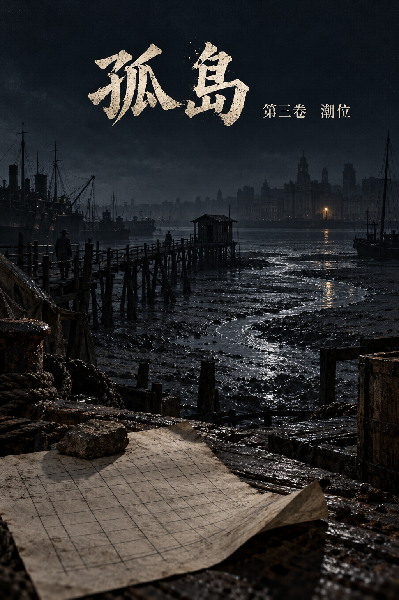
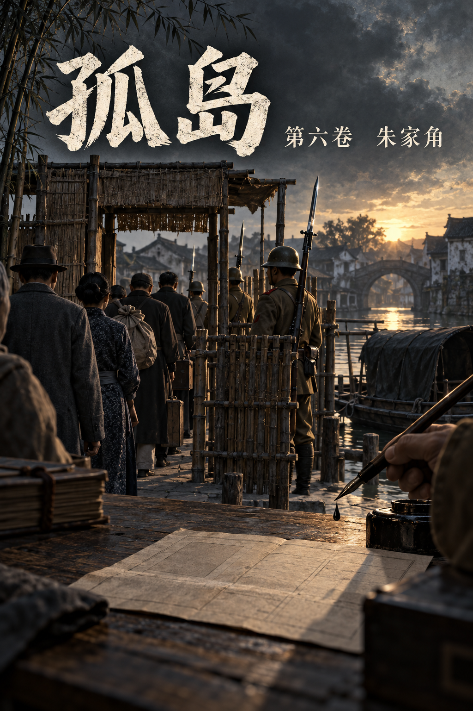

孤岛
序言
民国二十六年十一月，国军西撤，上海华界尽失。日本人占了闸北、南市、虹口，占了浦东，占了黄浦江上下游所有的码头，只有苏州河南岸那两块租界没有动：英美人管的公共租界，法国人管的法租界。四面是日本兵，中间一块弹丸之地，外国旗子还挂着，跑马厅照样赛马，大光明照样放米高梅的新片，百乐门照样跳到天亮。
上海人管这块地方叫孤岛。
孤岛上住着四百万人，逃难来的占了一半。它是沦陷区里唯一一块日本宪兵不能随便进门抓人的地方，所以重庆的人藏在这里，共产党的人藏在这里，想发国难财的人藏在这里，想活命的人也藏在这里。日本人进不来，就派人进来；进来的人杀不完，就养一群中国人去杀。
于是孤岛上有了好几把刀。
一把在虹口北四川路。宪兵队特高课的红砖楼，地下室比哪里都深，抓人不用讲理由，只是过不了苏州河。
一把在梅机关。日本陆军派来扶植汪精卫的机关，影佐祯昭坐镇，晴气庆胤派在七十六号当指导官，手里攥着汪政府的饭碗，也攥着七十六号的缰绳。宪兵队和梅机关都是日本人，互相看不上。
一把在沪西极司菲尔路七十六号。汪精卫的特工总部，丁默邨挂主任的牌子，李士群当家，吴四宝手下的打手都是青帮出身。上海人提起它，不说名字，只说门牌号。
另一头是重庆。军统上海区，戴笠的手伸在这里，区长陈恭澍，在河内刺过汪精卫；中统，陈立夫的人，和军统各管一摊，互相看不上，可在锄奸这件事上，两家的刀朝着一个方向。
还有藏在静安寺一家旧书店里的共产党，只听，不动，不在上海添一个死人。
还有青帮。杜月笙人在香港，门生遍布码头；黄金荣坐镇法租界，大世界是他的产业。谁的船要出吴淞口，谁的人要藏进哪条弄堂，都得过他们的手。
还有租界的巡捕房。法国人、英国人，谁也不想惹日本人，谁也不想丢了面子；巡捕房里的华人探目，有人拿重庆的钱，有人拿七十六号的钱，有人两边都拿。
这些地方，白天都和别处一样。
民国二十八年九月的一个夜里，下着雨。善钟路一条弄堂口，停下了一辆黑色的福特，车灯灭着，下来四个穿短打的人。
弄堂里一间亭子间的窗纸破了一个角，有一个年轻人从那个角往下看。他叫沈墨言，二十三岁，圣约翰大学土木系没念完，后来进了军统。
一个钟头以后，他会坐在七十六号一间吊着白炽灯的屋子里，等着审他的人推门进来。
推门进来的人，他认得。

第一章 四舍
楼下老虎灶的汽笛叫了一声。八点。
然后沈墨言听见了汽车。
善钟路上夜里少有汽车停下。他吹灭了灯，侧身挨到窗边，从窗纸破的那个角往下看。一辆黑色的福特，车灯灭着，停在弄堂口，车门开了三扇，下来四个人，都穿短打。一个留在车边，点了一支烟，三个往弄堂里走。他们走路没有声音。巡捕穿皮靴，这几个人穿的是胶鞋。
桌上那把铜锁还摊在油布上，铁丝插在锁孔里。锁是邵子钧送的，德国货，七颗弹子，邵子钧说这一把要是能用铁丝捅开，上海就没有你开不了的门。他捅了两年，一回也没有捅开过。他把铁丝拔出来，攥在左手里，右手把桌角那支用红纸包着的派克钢笔揣进上衣口袋。礼拜天是小禾十九岁生日，他答应过去圣约翰看她的新宿舍。
后窗通晒台，晒台连着隔壁人家的屋脊，屋脊那头是一条死弄，死弄底上一堵墙，一人半高，墙外是别人家的后弄，后弄通大路。搬来的头一天他就走过一遍，用脚量过那堵墙，助跑三步，左手搭墙头，能过。
楼梯响了。
他拔开插销，翻出后窗。
雨是下午起的，到这时候还没有停。晒台上的瓦湿透了，踩上去像踩着一层油。他弓着腰，手撑着屋脊往前走，隔壁人家的晾衣竹竿横在半路，竿上忘收的一条裤子被雨打得往下坠，他从竹竿底下钻过去，裤腿扫了他一脸凉水。
身后，亭子间的门被踢开了。有人骂了一声，手电的光从后窗里扫出来，在他头顶上的雨丝里晃了一下。
他没有回头。屋脊走到尽头，下面就是死弄。他蹲下来，准备往弄底那堆破箩筐上跳。
然后他看见了墙根底下那一点红。
是一支烟。有人蹲在墙根，背靠着墙，正好蹲在他每回量好的落脚的地方。那人把烟头往水里一扔，站起来，手电啪地亮了，光柱不往别处照，直直地照着墙头，照着他左手要搭的那一块砖。
他们知道这间屋子有后窗，知道后窗外面是晒台，知道屋脊那头是死弄，知道他会从哪一块砖上翻过去。
他们知道得太清楚了。
瓦片响了一声。他转过身，打头的那个已经从后窗钻出来，猫着腰扑上了晒台。四十上下，左边眉毛里横着一道疤，手里拿的是一根皮带，不是枪。拿皮带的人是来活捉的。
疤眉没有站稳，一只脚踩在长了青苔的瓦上滑了半步，伸手就来抓墨言的脚踝。墨言没有躲。他等那只手攥实了，左手攥着的那根铁丝往下一扎，从那人的手背扎进去。
疤眉嚎了一声，手没有松，反倒攥得更紧了。墨言另一只脚踹在他肩膀上，踹第二下，那只手才松开，铁丝还插在肉里，跟着手一起缩了回去。
第二个人已经上了晒台，个子很大，张着两条胳膊扑过来，像要抱一只麻袋。墨言矮身让过他的胳膊，肩膀顶在他肚子上，顺着他扑过来的劲往外一送。那人脚下的瓦哗啦一声塌了一片，他整个人从晒台边上翻了下去，下面是隔壁人家的天井，先是一声竹竿断了，然后是一只水缸，然后是一个女人的尖叫。
墨言直起腰来，往屋脊另一头去。那一头连着再隔壁的一户，屋顶矮半层，跳下去就是另一条弄堂。
他跑了三步。
第三个人是从隔壁的老虎窗里钻出来的，他没有看见。他只听见身后有人喘了一口气，带着酒味，然后后脑上挨了一下，很重，硬的，是枪托。
他眼前的雨一下子白了。瓦片贴到了他脸上，凉的，有一股煤烟味。他听见有人用苏北话骂了一句，听见疤眉在那头抽着冷气骂娘，听见天井里那个女人还在哭，哭着喊她的水缸。
有人把他的两只手反剪到背后，用皮带捆住。疤眉蹲下来，一只手垂着，血顺着指头往下滴，滴在他脖子上，是热的。疤眉用好的那只手在他口袋里摸了一遍，摸出那支钢笔，剥开红纸看了一眼，又塞了回去。
“送人的？”
“送我妹妹。”
疤眉笑了一下，没有说话，抬起脚在他腰眼上踢了一脚。一只麻袋从头上套下来，麻袋里有霉米的气味，还有鱼腥。
车开起来以后，他开始数路口。
后脑一跳一跳地疼，麻袋里闷，他张着嘴喘气。数路口是读土木落下的毛病，看一座城，像看一张图纸，闭着眼睛，图纸还在脑子里。车往左拐，是善钟路往北；车身颠了一下，是过福煦路的电车轨道；再往前，左手边有钟声，静安寺。然后车往西，慢下来，轮子底下的声音变了，柏油路换成了碎石子，那是过了界碑，出了租界，进了越界筑路的地方。
再往西，再往西。
他知道这条路。他走了四年。坐二十四路电车，从静安寺一直往西，到梵王渡下车，路两旁是法国梧桐，秋天叶子落一地，踩上去像踩饼干。圣约翰的钟楼就在路的尽头。三年级那年冬天，他和顾承舟在这条路上喝醉过一回，两个人互相搀着往回走，承舟一路在唱一支英文歌，唱到一半忘了词，就从头再唱，唱到第七遍，宿舍看门的老头子披着棉袄出来骂人。
车停了。
极司菲尔路。他不用摘麻袋也知道是几号。
那时候，这里还是一座花园洋房，铁门常年关着，路过的学生猜它是哪个督军的外宅。现在全上海都知道里头住着什么。报纸上不写它的名字，只写“沪西某机关”；法租界的人提起它，只说那个号码，像提一个不便出口的病。
七十六号。
他被人从车上拖下来，脚落在碎石子上，没有站住，跪了一下。麻袋外头有人在说话，嗓门很粗，一口浦东腔。
“就是他？”
“就是他。”是疤眉的声音，“总队长，这小子手上有家伙，老三的手叫他扎穿了，大块头从房顶上掉下去，腿怕是断了。”
“哦。”
麻袋被人从头上扯掉了。院子里亮着灯，雨丝在灯底下斜着飞。他面前站着一个人，不高，很壮，脖子比脑袋粗，穿一件湖绉短褂，袖口挽着，小臂上刺着青，看不清刺的是什么。那人弯下腰来看他，脸凑得很近，嘴里有一股蒜味。
吴四宝。墨言在区里的档案上见过这张脸。七十六号警卫总队的总队长，青帮出身，早年给人开汽车，跟着李士群发的迹，楼里最凶的打手都在他手底下。
吴四宝伸出手，在他脸上拍了两下，拍得不重，像拍一只刚买回来的西瓜，听它熟没熟。
“读书人。”他说，“情报科先审，规矩是四十八个钟头。四十八个钟头以后，你就归我了。”他直起腰来，又在墨言脸上拍了一下，“两天以后见。”
审讯室里先看见的是一盏灯。
灯吊得很低，白炽灯泡上落着几只飞虫的尸首。屋子不大，墙是新刷的石灰，石灰底下透出一片一片暗红的旧痕。一张桌子，两把椅子，桌角放着一只搪瓷痰盂。他被按在靠墙的那把椅子上，疤眉和另一个人站在他身后，一左一右，喘气很重。疤眉的手用一块手巾胡乱缠着，手巾已经红透了。
他等着。后脑上的血已经干了，把头发粘成一绺一绺的。
他想过很多回，要是哪一天进了这种屋子，进门的会是什么人。一个戴眼镜的书记，或者李士群本人，那个笑眯眯的、从中统转过来的叛徒。他在区里的档案上见过这些人的相片，一个一个都记得。
门开了。
进来的人穿一身深灰西装，领带松着，胳膊底下夹着一本卷宗。头发还是那样往后梳得服服帖帖，鬓角剃得很干净，人比两年前瘦了一圈，颧骨露出来了。
墨言觉得有什么东西从胃里往上顶，顶到喉咙口，又咽了回去。
六月里区里的人跟他提过一句，说圣约翰土木系有个姓顾的进了七十六号，问他认不认得。他说认得，同屋四年，后来不熟了。说完了，他一个人在霞飞路的屋子里坐到半夜，后来就不去想了。
顾承舟没有看他，先看了他身后的两个人，看了一眼疤眉的手。
“出去。”
疤眉没有动。“吴总队长吩咐过，人是警卫总队抓的……”
“我是情报科。”承舟把卷宗放在桌上，声音不高，“四十八个钟头，人归我审。你的手再不去包，就不用等四十八个钟头了。出去。”
两个人对看了一眼，出去了。门带上的时候，疤眉在外头说了句什么，另一个人笑了一声。
屋里剩下两个人，和一盏嗡嗡响的灯。
承舟在桌子后面坐下，没有翻卷宗。他看着墨言的后脑，看了一会儿，起身从门后的脸盆架上拿了一条毛巾，在盆里浸湿了，拧干，放在桌上，推过去。然后他从西装内袋里摸出一包烟，撕开，在桌面上磕了两下，抽出一支，隔着桌子递过来。
老刀牌。
墨言看着那支烟。四舍的时候，四个人凑钱，一礼拜买一包老刀牌，二十支，一人五支。承舟不大会抽，每回把自己那五支里省下两支，礼拜六晚上打桥牌，输了的人可以从他那里赊一支。墨言赊得最多，到毕业也没还清。
“手。”墨言说。
承舟站起来，绕到他身后，解开了皮带。皮带勒过的地方火辣辣的，墨言活动了一下手腕，先拿起那条毛巾按在后脑上，凉得他吸了一口气，然后才接过那支烟。承舟划了一根火柴替他点上。火光里，墨言看见承舟的手很稳，稳得不像话。
“还抽这个？”墨言说，“顾科长现在买得起大英牌了。”
“习惯了。”
两个人都抽了一口。烟很呛，和四舍的时候一样呛。思孟堂四楼那间屋子，四张床，四个人，他们自己叫它四舍。另外两个，一个毕业就去了昆明，一个回了无锡老家。剩下这两个，一个坐在桌子这边，一个坐在桌子那边。
“墨言。”承舟说。
“顾科长。”
承舟像是没有听见这个称呼。他把卷宗往前推了推，还是没有翻开。
“不用翻，我背得出。”他说，“沈墨言，闸北人，八一三那年家烧掉了。圣约翰土木系，四年级没念完。那年冬天进的军统上海区，行动组。王天木名单上第十七个名字。”
他背得很平，像背一段测量规范。
闸北在苏州河北岸。民国二十六年八月，日本人从那里打进上海，打了三个月，闸北烧成一片白地，租界里的人隔着一条苏州河，看了三个月的火。墨言家的两间屋子在宝山路，烧的那天，他在河这边。
那年冬天他进了军统，全名是军事委员会调查统计局，重庆的，戴笠管着，委员长在后面。上海区是它留在孤岛上的一只手，专做一件事：锄奸。日本人用的人，汪先生用的人，上了名单，就有人去敲门。他是敲门的人之一。
“你呢。”墨言说，“你的卷宗上写什么。”
“特工总部，情报科。”
“汪先生的特工总部。”
“和平运动的。”承舟说。
“和平运动。”墨言把这四个字在嘴里转了一圈，“去年年底汪先生从重庆跑到河内，发一通电报，说仗打不下去了，要同日本人讲和。讲和先要抓人，这个道理我今天才懂。”
“房子是日本人借的，牌子是丁主任挂的，事情是李副主任管的。”承舟说，“我管情报科，三个月。”
“三个月就做到科长。”墨言弹了弹烟灰，“伯父知道吗。”
承舟的手指在卷宗的封皮上停了一下。只停了一下，很短，短得墨言以为自己看错了。
“副主任的意思，不要你的命。”承舟说，“写一封悔过书，按个手印，照一张相。然后你回去，还做你的事。区里有什么动静，隔一阵子递一句话过来。不要多，一句就够。”
“吸收。”
“他们是这么叫。”
“四十八个钟头以内？”
“越快越好。”
墨言笑了，笑得后脑一抽一抽地疼。
“你们副主任是中统出身，这个道理他不会不懂。”他说，“人进了这栋楼，区里当夜就当他死了，码本换，联络点换，住处换。头四十八个钟头，是留给外面搬家的。过了这四十八个钟头，你们放出去的就是一个谁都不信的人，那时候我开不开口，都不值钱了。他给你这四十八个钟头，是要你抢在外面搬完家以前。”
承舟没有答。
“我今夜签，他白捡一条线。我咬住四十八个钟头再签，区里搬完了，他捡一个空壳。我不签，吴四宝那里还有一间屋子。”墨言看着他，“哪一条他都不亏。亏的是你。”
承舟把烟灰弹进痰盂里，弹得很仔细。
“小禾在圣约翰念一年级。”他说，“新宿舍在女生楼二楼，窗子朝东。”
墨言夹着烟的手停在半空。
承舟这才翻开卷宗，翻到后面一页，转过来，推到他面前，手指压在一行字上。是警卫总队的笔迹，又粗又重：胞妹沈小禾，圣约翰大学一年级，寄宿。下面画了一道线。
“这一行不是我写的。”承舟说，“我只是让你看一看，卷宗上有些什么。”
墨言把那一行字看了两遍。他把烟放到嘴边，吸了一口，烟没有吸进去，在嘴里打了个转，又吐出来了。
“你拿她来压我。”
“我拿她来告诉你，你在跟谁讲价钱。”承舟把卷宗收回去，合上，“四十八个钟头以后，审你的就不是我了。吴四宝审人，不问区里的事，先问你家里还有谁。”
屋里很静。白炽灯嗡嗡地响。
墨言把烟灰弹在痰盂沿上。他的手指有一点抖，他让它抖着，没有去按。
“那我也只问你一件事。”他说，“善钟路的地址，你们从哪儿来的。”
“王天木的名单上有。”
承舟答得很快，快得像早就放在舌头上，等着人来问。
墨言看着他。他忽然想笑，嘴角动了一下。
“王天木是我们的区长，八月里被你们抓的。”他说，“他交的名单，是八月以前的事。八月以前我住霞飞路。王天木一进来，区里当夜就叫我搬，我在朋友家打了二十几天地铺，十天前才住进善钟路。霞飞路的房东太太还欠我半个月押金。”他停了一下，“十天，承舟。你们的车直接停在弄堂口，连弄堂都没有走错，三个人进去，一个人守车，死弄那头还蹲着一个。墙根底下那个人的手电，照的是我左手要搭的那块砖。”
他把烟掐灭在痰盂沿上。
“这个地址不在王天木的名单上。它在你们楼里另一个人的口袋里。”
灯泡上那只飞虫的尸首被热气烘着，翅膀动了一下，像是还活着。
承舟把卷宗翻回第一页。
墨言看不见上面写的什么，只看见承舟的目光落在第一页，就停在那里。久到墨言替他数了，数到二十。然后承舟把卷宗合上，手掌压在封皮上，压得很实，像压着一样会自己翻开的东西。
“你刚才答得太快了。”墨言说，声音放低了，“‘王天木的名单’，这句话是别人给你的，你拿来就用，没有想过。刚才那一页你看了那么久。知道地址是谁递进来的人，用不着看那么久。”
承舟没有抬头。
“你管的是情报科。”墨言说，“自己楼里谁在递地址都不知道，算什么科长。”
这句话说出来，他就后悔了。他看见承舟压在卷宗上的那只手，指节一点一点白了。
承舟站起来。那包老刀牌他留在桌上，没有拿。他夹起卷宗，走到门口，手放在门把上，背对着墨言，站了一会儿。
“毛巾留着。”他说，“明天我叫人送一瓶红药水下来。”
门开了，又关上。
墨言坐在那盏灯底下，伸手把桌上那包老刀牌拿过来，数了数。十八支。
他们把他关进了地下室。
地下室比上面冷，墙是水泥的，往外渗水，地上铺着一层稻草，稻草底下有一只破了口的搪瓷盆。门上开着一个方洞，走廊的灯光从洞里照进来，在地上画出一个歪斜的长方形。他在长方形边上坐下，背靠着墙，后脑不敢挨着墙，只好把脖子僵着。
他从口袋里摸出那支钢笔。红纸湿了，红颜色洇到他手指上，跟疤眉滴在他脖子上的血混在一起，分不出哪是哪。他把钢笔放回口袋，开始算账。
善钟路这个地址，除了他，只有三个人知道。
林知微替他找的房子。她是区里的译电员，白天在白利南路一所女校教国文，房子是她托一个同事的远房亲戚租的，她自己连弄堂口都没有站过。她要是七十六号的人，区里的电台、码本早就到了这栋楼里，他这条命轮不到今夜。他不能证明不是她，他只是不往下想。
区长陈恭澍，八月底才从重庆来，接王天木丢下的摊子，善钟路在他那里是名册上的一行字。他要是也是七十六号的人，上海区就不是残了，是死了。
然后是邵子钧。
搬家那天邵子钧来了。区里的规矩，行动组的人互相不问住处，他是组长，他说规矩是他定的，他不来，谁替你扛箱子。他一口气把两只书箱扛上三楼，四十一岁的人，腰板比墨言还直。下楼的时候他在晒台门口站了站，往外看了一眼；走到弄堂口，又站了站，往死弄那头看了一眼，说，后头不通，住这里要当心。墨言说，走过一遍了，墙能翻。邵子钧笑了一笑，拍了拍他的肩膀，走了。
今夜墙根底下那个人，蹲的就是他说墙能翻的那个地方。
墨言闭上了眼睛。
民国二十六年的冬天，闸北一间门窗钉着木板的空房子，邵子钧蹲在一扇门前，从口袋里摸出一根铁丝，弯成一个小钩，递给他。“这是你的第一样家伙。开锁不要看，要听。”那天晚上邵子钧请他吃了一碗阳春面，加了一个荷包蛋。那是他家烧掉以后，头一回有人请他吃饭。
今夜那根照着师父的样子弯的铁丝，插在一个打手的手背上，跟着他进了这栋楼。
这些都不是证据。关在这里，他什么也证明不了。他手里只有一样东西：三个人里，只有一个人上过那三楼，看过晒台，在弄堂口看过死弄。
这个名字要送出去。他没有纸笔，没有交通，只有承舟。承舟要他松口，他可以松一点，换一封家书。家书要过七十六号的眼，信里不能有名字，只能有一句话，一句只有一个人读得懂的话。
这个人只能是知微。家书写给小禾，知微教过小禾两年国文，哥哥托妹妹的老师照应家里，七十六号看了只当是人之常情。她要是对面的人，信里那个人王天木的名单上本来就有，他们多知道的只是沈墨言疑上了他的组长；她要是自己人，这就是他唯一一次把话递出去的机会。
去年冬天，霞飞路那间屋子里，炉子上坐着一壶水，她在灯底下改学生的作文，他把那根铁丝拿出来给她看，说了师父的事。她听完了，把铁丝放回他手心里，说，你师父待你好。这些话他在上海没有对第二个人说过。他宁可赌一次她不是出卖者，也不能不写。
可是信要等。头四十八个钟头，他一个字也不能松，知微要换钟点、换波长，要把那部机器从被褥底下拆出来；区长要把他碰过的联络点一个一个撤掉。他替他们排过一遍：知微最慢，要一天半。
四十八个钟头以后，吴四宝在另一间屋子里等着。
楼上有人走过，皮鞋，很重，走到头又折回来。再远一点，有汽车发动，开出去了。然后什么声音也没有了，只剩下水滴，一下，一下，很慢。他开始数。
顾承舟走出七十六号的大门，是夜里十一点。
雨还在下。门口岗哨的棚子里探出一个脑袋，看了他一眼，又缩回去。铁门旁边架着一挺机枪，罩着油布，雨水顺着油布的褶子往下淌。院子那头，警卫总队的屋子里灯还亮着，有人在里面骂人，骂的是医生来得慢，一个人在叫疼，叫得像杀猪。
他上了车，对司机说：“虹口。”
司机在后视镜里看了他一眼，没有说话。
他靠在后座上。那包老刀牌留在了桌上，他口袋里空了，手不知道往哪里放。他把手插进大衣口袋，攥成拳头。
自己楼里谁在递地址都不知道，算什么科长。
墨言说这句话的时候，声音放低了，像是怕外头的人听见，又像是不忍心。四舍的时候墨言就是这样，骂人骂到一半，自己先软下来。有一回承舟打桥牌叫错了约，输掉一礼拜的烟，墨言在宿舍里骂了他半个钟头，骂完了，把自己剩下的三支扔到他床上。
他今夜拿小禾去压他。小禾十四五岁的时候到四舍来过一回，抱着一罐腌菜，站在门口不肯进来，脸红到耳根，说是妈妈腌的，给哥哥和哥哥的同学。
车过外白渡桥。
桥中间有日本人的岗哨。车停下来，他推门下去，走到哨兵跟前，摘下帽子，弯了一下腰。中国人过这座桥，要给桥上的日本兵鞠躬。哨兵枪上上着刺刀，看了他的证件，又看了他的脸，用刺刀尖朝前点了点。他回到车上，帽子拿在手里，帽檐上的雨水滴在膝盖上，他没有再戴。
桥底下的苏州河是黑的，什么也看不见，只听得见水撞在桥墩上。
宪兵队在北四川路，一栋三层的红砖楼，虹口的人叫它北楼。楼前的旗杆上没有旗，一根湿透的绳子在风里一下一下抽着旗杆。
森田义雄在二楼等他。
森田是宪兵中佐，特高课课长，虹口这一片抓人、审人的事都归他管。四十多岁，不高，有点发福，脸是圆的，看上去像一个开杂货铺的东家。中国话说得很好，带一点东北口音，他在奉天待过六年。他请承舟坐，自己也坐下，拿起一把小刀，削一只苹果。苹果皮削得很薄，一圈一圈，连着不断，垂下来，像一条红绸子。
“顾科长辛苦。”他说，“听说七十六号今天夜里抓了一个人。从房顶上抓下来的，还伤了两个。”
承舟没有问他是怎么听说的。在虹口，这种话是不能问的。
“是顾科长的同学。”森田把苹果切成四瓣，推过来一瓣，“圣约翰大学，土木系，同一间宿舍住了四年。”
“是。”
“那么顾科长审起来，一定比别人方便。”森田自己拿了一瓣，咬了一口，慢慢嚼，“我有一个请求。每一份口供，请顾科长另外抄一份，送到我这里来。不必经过李副主任。”
承舟看着桌上那瓣苹果，没有拿。
“七十六号是梅机关养的。”森田说，“影佐的机关，陆军派来专门照应汪先生的。七十六号的文书往梅机关送，影佐看，晴气少佐看，宪兵队看不到。可是上海的治安，是宪兵队的事。”他用小刀把苹果核剔出来，扔进纸篓，“我听说七十六号有个规矩，情报科先审四十八个钟头，然后交给吴总队长。吴总队长的屋子，进去的人出来，就不大说得清话了。所以，他在吴总队长那里开口以前，要先在顾科长这里开口。他开口以前，先开给我看。”
承舟没有说话。
“令尊在楼下。”森田说，“顾科长要不要去看一看？”
北楼的地下室比七十六号的深，楼梯转了两折，墙上每隔几步有一盏灯，灯光是黄的，照在湿墙上，像一层油。走到底，是一条长廊，两边是铁栏。看守在前头开锁，承舟跟在后面，皮鞋踩在水泥地上，一声一声，在长廊里来回撞。
父亲在最里头一间。
他坐在一张木板床上，披着一件藏青棉袍，是承舟上个月托人送进来的。地下室阴冷，棉袍的领子却敞着，露出里面一件旧白布衫。头发白了一大半。三个月前，宪兵上门那天早上，父亲还在柜台后面拨算盘，头发是黑的，只有鬓角几根白。
承舟走到铁栏前站住。
父亲抬起头，看见了他。父亲的嘴唇动了动，没有出声，伸手拿起枕边一块手帕，捂住嘴，咳起来。咳得很厉害，整个人弓下去，背上的棉袍一耸一耸。咳了很久，手帕拿开的时候，承舟看见上面有一片暗红，像一块茶渍。
“爸。”
父亲把手帕叠起来，叠得四四方方，边角对齐，跟他从前在铺子里叠一匹湖绉一个样子。他把手帕塞进袖子里，看了承舟一眼。那一眼很短。然后他把脸转过去，对着墙。
“回去吧。”他说。
承舟站在铁栏外头。他想说药的事，想说森田答应了什么，想说他这三个月在七十六号签过的每一张纸都是为了什么。他一句也没有说出来。父亲的背对着他，棉袍的肩上有一块补丁，针脚很密。
看守在身后咳了一声。
他转身往回走，楼梯转了两折，墙上的灯一盏一盏，黄的。
森田还在二楼。苹果吃完了，小刀擦干净，收进抽屉里。
“令尊的案子，”森田说，“绸缎庄的料子到了闸北游击队手里，这是资敌。照规矩，要送军法会议。我已经压了三个月，还可以再压。”
五月里，日本人要南市几家老字号把存货盘给他们的洋行，父亲没有点头。六月初，宪兵就上了门，说顾家的绸缎在游击队身上穿着。承舟是那个礼拜进的七十六号。
“令尊的药，”森田说，“宪兵队有。”
他说得很客气，像是在说宪兵队的伙房里有米。
车再过外白渡桥的时候，雨小了。
承舟坐在后座上，没有看窗外。他在想那本卷宗的第一页。第一页是抓捕令，李士群签的字，地址写得一清二楚：善钟路某弄某号三楼亭子间，另注一行，后窗通晒台，死弄底墙一人半高，须伏一人。执行一栏写着警卫总队。线索来源那一栏是空的，只盖了一个章：副主任亲办。
副主任亲办的案子，情报科不过问来源。这是楼里的规矩。今天下午拿到卷宗，他没有多看，以为跟别的案子一样，是从王天木那张名单上来的。七十六号这两个月抓的人，十个里有九个是从那张名单上来的。
王天木八月被捕。善钟路这间屋子，是九月才住进去的。
车窗上映着他自己的脸，模模糊糊，像隔着一层水。他想起四舍的时候墨言拿到一包烟，总要先倒出来一支一支数过，数完了才肯抽。这时候，那包老刀牌大概也正在那盏灯底下给他数着。
车过了桥，上了外滩。他叫司机开慢一点，回头看了一眼。后面有一辆车，开着灯，隔着两个车身，不紧不慢地跟着。从宪兵队门口起，它就在了。明天早上，李副主任就会知道，他今夜去过虹口。
他抬起手腕，借着外滩路灯的光看了一眼表。一点过五分。
离吴四宝开门，还有四十三个钟头。
第二章 老锁匠
第四十八个钟头，是礼拜四晚上八点。
墨言是从水滴里数出来的。一滴，隔七下心跳，又一滴。他从第一夜数起，数到后来，水滴和心跳和钟点在他脑子里拧成了一根绳子，他攥着这根绳子，一寸一寸往前挪。这两天承舟下来过三回，坐着，抽烟，问他吃得下吃不下，冷不冷，红药水搽了没有。区里的事一个字也没有问，他也一个字没有说。
外面这时候应当搬完了。知微的机器拆了，联络点撤了，他碰过的地址都作废了。他在心里把这些一样一样过完，过到最后一样，走廊里响起了脚步声。
不是承舟。承舟的皮鞋底子薄，走路轻，下楼梯走到第十一级会停一下。这是两双胶鞋，一前一后，不停。
方洞外头的灯影晃了晃，钥匙捅进锁孔。
“读书人。”门口那个人说，是那个苏北口音，从房顶上拿枪托砸他的那个，“总队长请你去喝茶。”
警卫总队的屋子在后楼，要穿过一个院子。院子里没有雨了，地上的石子还是湿的，墙根底下有一棵夹竹桃，开着粉红的花，开得很热闹。他被两个人架着胳膊，脚尖在石子上拖，一路拖出两道印子。
那间屋子比审讯室大，墙上没有刷石灰，砖是黑的。屋子当中摆着一条长凳，凳腿上钉着铁环，凳子一头码着几块青砖。墙角有一只木桶，桶里的水上浮着一只瓢。屋里点着一盏汽灯，嘶嘶地响，照得什么都发白。
吴四宝坐在一把太师椅上，脚跷在一只方凳上，在剥一只橘子。疤眉站在他旁边，右手吊在胸前，缠着白纱布，纱布是新换的，还透着一点黄的药水。
“坐。”吴四宝说。
两个人把墨言按在长凳上，按得他仰面躺下，两条腿捋直了，膝盖上压了一根绳子，绳子穿过凳腿上的铁环，一勒，膝盖就贴死在凳面上。
他知道这是什么。区里的档案上有画，有照片，还有从这栋楼里放出来的人的腿。一块砖垫在脚后跟底下，膝盖不能弯，腿就被往反面掰；两块砖，人就叫不出声了；三块，有人往后再也没有站起来过。
他的手心里全是汗，后背贴着凳面，衬衫湿透了。他看着屋顶，屋顶上有一块水渍，形状像一只鞋。
吴四宝把橘子剥完了，掰下一瓣塞进嘴里，站起来，走到凳子边上，低头看着他。
“四十八个钟头。”他说，“我数着呢。”
“总队长好记性。”
吴四宝笑了。他笑起来不出声，只是脸上的肉往两边挤。
“区里的事，我不问。”他说，“区里那些事，情报科爱问让他们问去。我问你一件别的。你那个同学，顾科长，他这两天下来三回，一回比一回坐得久。他给了你什么好处？”
墨言看着屋顶上那只鞋。
“他给了我一包老刀牌。”他说，“十八支，我抽了七支。总队长要是想要，剩下的十一支送你。”
疤眉在旁边骂了一句。吴四宝没有骂，他抬了抬下巴。
苏北口音的那个弯腰捡起一块砖，抓住墨言的脚踝，往上一抬，把砖塞到了脚后跟底下。
疼是从膝盖后面来的，像有人拿一把钝锯，从腘窝里往里锯。他咬住牙，牙缝里还是漏出了一声。他听见自己的喘气声，又粗又急，像一条狗。汽灯在他眼睛上头嘶嘶地叫，白光一跳一跳。
“顾科长，”吴四宝说，“是不是区里的人？”
“你问他去。”
第二块砖拿在了苏北口音的手里。
门开了。
进来的人走得很快，进门以后站住了，站在门口那一片暗处，没有往汽灯底下走。墨言偏过头去看，先看见的是一双皮鞋，鞋面上溅着院子里的泥点子。
“吴总队长。”承舟说。
“顾科长来得巧。”吴四宝没有回头，又掰了一瓣橘子，“四十八个钟头，一分不差，人到了我这里。这是副主任的规矩，顾科长不会不认吧。”
“认。”承舟从口袋里拿出一张纸，往前走了两步，走到汽灯底下，“副主任刚签的。人还归情报科，再审一礼拜。”
吴四宝这才转过身来，接过那张纸，凑到汽灯底下看。他看了很久，看得很慢，嘴唇一动一动，像在一个字一个字地念。墨言躺在凳子上，看见那张纸在汽灯的光里透亮，背面透出来一个签名，笔画很圆。
“副主任的字。”吴四宝说，“可人在我屋里。”
他把纸叠起来，叠成一个小方块，捏在手里，没有还。另一只手垂下去，垂在腰边上，搭在了短褂底下那个鼓出来的地方。屋里的人都不动了。疤眉往墙边退了半步。苏北口音的那个还捏着那块砖，举在半空，放也不是，不放也不是。
承舟没有去看那只手。
“总队长，”他说，声音还是不高，“你善钟路的车，是照着一张条子去的。条子上连后窗、晒台、死弄底墙几尺高都写了。条子是从哪条线上递进来的，副主任知道；线那头的人是谁，姓什么叫什么，哪一天上过他那间三楼、看过他的晒台，副主任不知道，你不知道，我也不知道。”
吴四宝的眼皮跳了一下。
“副主任要的是活口。”承舟说，“地上躺着的这个人，是全上海唯一一个猜得出那张条子是谁写的人。你把他的腿弄断了，他还说得出话；你要是像上个月那个报馆的一样，把人弄得往后说不清话了，那张条子后头的人，谁去找？副主任问起来，是你去找，还是我去找？”
汽灯嘶嘶地响。
过了很久，吴四宝把搭在腰上的那只手抬起来，把叠成小方块的纸往承舟胸口一拍，拍得很重，承舟往后晃了一下。
“情报科。”吴四宝说，“情报科的人，嘴都长得好。”
他转过身，弯下腰，凑到墨言脸前，那股蒜味又来了。他抬手在墨言脸上拍了一下，这一回拍得很重，墨言的头偏到一边，嘴里一股咸味。
“读书人，”吴四宝说，“一礼拜以后见。”
承舟没有让别人架他，自己架着他走回地下室。墨言的右腿弯不过来，每走一步，膝盖后面就像有人拿锥子扎一下，他把半个身子的分量都压在承舟肩上。承舟没有说话，只是一步一步地走，下楼梯的时候走到第十一级，停了一下，换了一边肩膀。
到了地下室，承舟扶他在稻草上坐下，蹲下来，把他的裤腿卷上去看了看膝盖后面。腘窝里青了一大片，肿得发亮。
“骨头没事。”承舟说，“明天还要肿。”
“你拿什么换的那张纸？”
承舟把裤腿给他放下来。
“我跟副主任说，你松口了。”
墨言靠着墙，喘了一会儿气。
“那我就松口。”他说，“你拿纸笔来，我写给你。王天木交出去的那几个点，霞飞路烟纸店，八仙桥后巷，南市那间米店，我都写给你。你们早就去过了，都是空的。你拿去给副主任交差，够你交一礼拜。”
承舟看着他。
“我知道都是空的。”承舟说。
“我知道你知道。”
两个人都没有笑。门上那个方洞外面，走廊的灯嗡嗡地响。
承舟站起来，膝盖响了一声。他走到门口，又停住了。
“副主任这张纸，”他说，“是一礼拜。一礼拜以后呢。”
墨言想了想。
“那张条子，”他说，“你别去查出车簿。哪天出的车、谁开的车，簿子上都有，可你一查，副主任就知道情报科在摸他的底。你看这几天谁被派了外差。递条子的人要藏，开车带路的人就不能留在上海。”
承舟的手搭在门上，没有回头。
“还有一件事。”墨言说，“过几天，我要往家里寄一封信。”
“家书要过情报科的手。”
“我知道。”墨言说，“所以才托你。”
那封家书是九月二十四日到承舟桌上的，礼拜天。
情报科的规矩，楼里关着的人往外寄信，都要拆开看，看完了誊一份底稿存档，原信封好投邮。这一封是副主任点过头的，李士群在承舟的呈报上批了一行小字：信寄出去，跟一跟，看落到谁手里。落到谁手里，就去敲一敲门，看他慌不慌。
承舟把信纸摊开。
小禾吾妹：
兄近日在外埠做一份工，一切安好，勿念。此间管束甚严，不便常通音问。家中若有事，可托林先生代为料理，她是可靠的人。
天凉了，记得加衣。家里那把锁该换了，钥匙不知叫谁配了去，换了就是，不必追问，多年的老锁匠也会出错。
兄 字
他把信读了一遍，又读了一遍。
墨言家没有锁。墨言家那两间屋子在宝山路，八一三那年烧掉了，烧得只剩一个门框。这件事四舍的人都知道，大二那年寒假，四个人里另外两个回家过年，墨言没有家可回，承舟把他带回了南市，父亲给他也做了一件棉袍。
一个没有家的人，写信叫妹妹把家里的锁换了。
这一句是写给别人看的。看信的人要是不知道沈家烧了，读过去只当是家常；知道的人一看就知道，这里头有话。墨言知道这封信要过谁的手。
承舟拿起笔，笔尖悬在“多年的老锁匠也会出错”这一行上面。
他可以把这一行划掉，说是信里有暗语，照规矩删去，再封好寄出去。副主任不会说什么，情报科本来就该这样做。划掉了，这封信就只是一封家书，天凉加衣。
他想起地下室里墨言说的那一句：所以才托你。
笔尖在纸上停了一会儿，落下去，落在信纸的右下角，写了一个“可”字。
他把信重新折好，封进信封，叫人投邮。然后他叫来一个跑外勤的，把信封上的地址念给他听：梵王渡，圣约翰大学教务处转沈小禾。
“跟着这封信。”他说，“信到了谁手里，你去敲一敲门。不用多问，问一句就回来。”
“臣本布衣，躬耕于南阳。”
林知微把这一句念了两遍，第二遍慢一些。
窗外的梧桐叶子开始黄了，白利南路上有电车开过，铃声隔着窗玻璃传进来，闷闷的。教室里三十二个女学生，十五六岁，一色的蓝布旗袍，低着头在课本上画线。最后一排靠窗的那个在偷偷剥一颗糖，糖纸响了一下，她装作没有听见。
她已经快半个月没有睡好了。
十二日夜里，宿舍楼下门房的电话该在九点响三声就断，那是他报平安的法子。那一夜电话没有响。十三日早上，区里来了一句话，只有五个字：善钟路空了。她当夜就把机器拆了，零件分装在三只饼干听里，换了钟点，换了波长。那以后她照常上课，讲的是《岳阳楼记》，讲到“先天下之忧而忧”，底下一个学生问，先生，忧到什么时候才算完，她答不上来，讲台上站了半天，后来是下课铃替她答的。
“先生。”第三排有人举手。是姓钱的那个，家里开钱庄，脑子也像算盘一样清楚，“诸葛亮出师的时候，知不知道自己打不赢？”
“你说呢？”
“我想他知道。”钱同学说，“他把该交代的事都交代了，连郭攸之、费祎、董允的名字都写上了，像写遗嘱。”
教室里有人笑。林知微没有笑。
“知道打不赢，还是要去。”她说，“你们说为什么。”
没有人答。林知微等了一会儿，自己把话接下去。
“因为他答应过人。”
下课铃响了。
她收了课本走出教室，走到楼梯口，看门的老张头从下面上来，手里捏着一张条子。
“林先生，门房有人找。”
是沈小禾。
她站在校门外的梧桐树底下，穿着圣约翰一年级的蓝布褂子，怀里抱着两本书，看见林知微出来，没有迎上来，只是站在那里，把书抱得更紧了。
十九岁的人，个子已经比林知微高了半个头，脸还是小孩子的脸，圆的，眉毛像她哥哥，浓，往上挑。这两年林知微教她国文，她作文写得一塌糊涂，字倒是好，一笔一画，跟她哥哥一个样子收得轻。今年夏天林知微又给她补了一个暑假的课，补到放榜，她考上了圣约翰。放榜第二天，她哥哥托人送来一盒凯司令的栗子蛋糕，盒子上没有写字。
“先生。”
“怎么来了。”林知微走过去，声音放得很平，“不是说过，有事写信到教务处。”
“哥哥来信了。”小禾说，“教务处转来的。他信里写，叫我拿给先生看。”
林知微没有马上接。
她先看了一眼小禾身后。电车站上有两个人在等车，一个老太太挎着菜篮，一个穿长衫的在看报。长衫是蓝布的，洗得发白，脚上一双黑胶鞋，鞋帮上溅着泥。今天没有下雨，白利南路上也没有泥。
“走。”她说，“到里面说。”
教员休息室里没有人。林知微关了门，小禾把信从书里抽出来，递给她。
一张很普通的白纸，对折了两次，装在牛皮纸信封里。信封上没有寄信人地址，邮戳是沪西的。
林知微先看的是字。
是他的字。一撇一捺都收得很轻，像是怕把纸划破。她认得这个字认得太熟了，熟到看见它，喉咙口先紧了一下，后面的意思才慢慢跟上来。
她把信读完了。
“先生，”小禾在旁边小声说，“我们家没有锁。房子都烧掉了，哪里来的锁。”
林知微没有答。
“哥哥也从来没有配过钥匙。”小禾说，“他是不是脑子坏了？他们是不是打他了？”
“没有。”
“先生怎么知道没有？”
林知微抬起头。小禾看着她，眼睛很亮，亮得发红，嘴唇抿着，抿得发白。这个孩子不傻，她哥哥“在外埠做工”，她一个字也不信。
“你看这个字。”林知微把信纸转过去，指着那个“言”字的最后一笔，“一个挨了打的人，手是抖的，写不出这样的字。”
小禾看了很久，看得很用力，像是要把那一笔看穿。然后她点了点头。
林知微把信又读了一遍。
外埠。管束甚严。这两句是写给检查信的人看的：我在他们手里，这封信过了他们的眼。
家里那把锁该换了。他在说，我住的地方他们知道了，你的也要换。
钥匙不知叫谁配了去，换了就是，不必追问。他在说，地址是有人给出去的；先不要查，查就惊动了。
多年的老锁匠也会出错。
她把这句话在心里念了第三遍，然后她想起来了。
去年冬天，霞飞路那间屋子里，炉子上坐着一壶水，水快开了，壶盖一跳一跳。她在灯底下改学生的作文，他坐在旁边，从口袋里摸出一根铁丝给她看，弯成一个小钩。
“这是我入行的时候师父给的第一样东西。”他说。
他说师父教他开锁不要看，要听，弹子跳上去的时候有一声，很轻。他学了半年才听见第一声，那天在空房子里跳起来，脑袋撞在门框上，师父笑了他一个礼拜。他说到这里笑了，一边嘴角先翘，像个孩子。
“你师父是谁？”
“组长。”他说，“组里的人背后叫他老锁匠。他早年在闸北真开过一爿锁铺。”
林知微把信折好，照原来的折痕，装回信封。她的手很稳，她自己都有些意外。
“小禾。”她说，“这封信我收着。你回去，照常上课，照常吃饭。有人问起哥哥，就说在外埠做工。往后不要再来找我，有信还是经教务处转。”
“先生，”小禾说，“你骗我的时候，跟哥哥一样，声音会变平。”
“他很好。”林知微说，声音没有变平，“他还记得天凉了要你加衣。”
小禾的眼泪掉下来了。她没有去擦，就那样站着，让它掉，掉完了，用袖子抹了一把脸，把书抱起来。
“我送你到电车站。”林知微说。
她没有躲。一个教员送学生出校门，送到电车站，看她上车，这是天天都有的事。躲起来的人才要人跟。
电车来了，小禾上了车，从车窗里回头看她。林知微朝她摆了摆手，转身往回走。
那个穿长衫的没有上车。
他把报纸折起来，夹在胳膊底下，跟着她走了十几步，在校门口追上来，摘下帽子。三十岁上下，脸很白，笑得很和气。
“请问是林先生？”
“我姓林。”
“我是沈先生的朋友。”那人说，“沈墨言沈先生。他托我来问一声，他妹妹带来的信，林先生收到没有。”
林知微看着他。
十二日以后，没有一个自己人会走到这扇校门前面来。区里的人不会，墨言的规矩她知道，他在区里认得的人，没有一个知道她在这里教书。区外头的人，墨言的朋友，没有一个知道她是谁。知道“林先生”这三个字、又知道今天有一封信送到她手里的，只有一个地方。
她想起那双胶鞋。
“沈先生？”她说，眉头皱了一下，像在想，“哦，是小禾的哥哥。他在外埠做事，托我照看妹妹的功课。您是他的朋友？”
“是是。”
“那正好。”林知微说，“小禾这孩子国文底子差，这学期圣约翰的国文先生要她们写周记，她写不来，每回都来找我。她哥哥要是有空，叫他多写几封信来骂一骂她。您贵姓？住在哪里？我叫小禾往后有信，也给您抄一份。”
那人的笑停在脸上，停了一下。
“不必不必。”他说，“我就是路过，顺口问一声。林先生忙，林先生忙。”
他戴上帽子，往电车站走回去，走得不快，走到站牌底下，又回头看了一眼。林知微已经转过身，同看门的老张头说话了，说的是三楼女厕所的水龙头又坏了。
她上了楼，进了自己屋子，关上门，背靠在门上站着。她的手这时候才开始抖，抖得很厉害，她把两只手攥在一起，攥了很久。
那天夜里，林知微没有开电台。
她住在女校的教员宿舍，二楼最里头一间，隔壁是个教算学的老先生，耳朵背，晚上九点就睡，鼾声隔着墙板传过来，一起一伏，像拉风箱。
她坐在桌前，开了一盏小灯，把这一个月发出去的电报一封一封在脑子里过。报平安电是九月三日发的，用的是新本，上面没有地址，只有一个代号和一句“已迁，安”。旧本是王天木经手的，可旧本里没有善钟路，那时候还没有善钟路。
不是电报漏的。
她又去想搬家那天。她没有去，区里的规矩，译电的人不和行动组的人在一处露面。墨言后来告诉她，邵子钧来了，帮他扛箱子，下楼的时候在晒台门口站了站，到弄堂口又站了站，往死弄那头看了一眼，说，后头不通，住这里要当心。墨言说这话的时候是笑着的，说组长就是这个脾气，到哪里先看退路，比我还像个读土木的。
林知微拿起一支铅笔，在一张废纸上写了“邵”字，又划掉了。
一句暗语，一眼死弄，一根铁丝。这些在她心里已经够了，在别人心里未必够。邵子钧在行动组待了六年，是区长的旧识，墨言是他一手带出来的。她一个译电员，凭一封家书去指一个组长，先要被审的是她自己。审她不要紧，审她的这几天，那个人还在组里，墨言还在七十六号的地下室里，一天一天地等。
今天下午那个人站在校门口，七十六号已经知道了一个“林先生”。她今天答得好不好，要看那边的人怎么想。她不知道是谁看那份报告。
她要再等一样东西。
她把那封家书摊在灯底下，看那个“言”字的末笔。看了很久，看到隔壁的鼾声停了，又起来。
等来的是程伯雄，第二天，礼拜三下午。
程伯雄是法租界巡捕房政治处的华探目，区里每月给他一份钱，他替区里递话、查人，在捕房的卷宗上替区里做一点手脚。林知微只见过他两回，两回都是借着查户口的名目来。
这一回他穿着便装，带着一个工部局的印度巡捕，手里拿着一张警务处的公事单。白利南路是越界筑路，归工部局管，他在工部局有熟人，借一张公事单不难。校长是个英国老太太，不耐烦，叫老张头陪他去教员宿舍。他在林知微门口站住，翻着手里的簿子，问姓名、籍贯、到校年月，一样一样地记。那个印度巡捕走到走廊那头，看窗外的梧桐，手背在身后。
“原籍苏州。”他翻了一页，脸上带着笑，声音一点也没有变，“区长让我带一句话。北站出事了。”
林知微的手还扶在门框上。
“七十六号有一个开车的，姓张，叫张阿六，抓人那一夜，是他开的车、带的路。”程伯雄在簿子上写着什么，“前几天七十六号要送他去南京，说是押运文件。人走到北站月台，叫虹口的便衣截走了。关了三天，梅机关出面，又把人要了回去。日本人自己跟自己吵了一架，吵得很热闹。”
他抬头看了一眼走廊那头，那个印度巡捕还在看树。
“口供有一份，走了点弯路，到了我手里。他说门牌是在八仙桥一家茶楼里接的。接头的人四十来岁，代号叫老锁。”程伯雄合上簿子，“口供里还有一句，说这个人能用一根铁丝捅开后门。区长问林先生，这些对得上什么。”
林知微听见自己的心跳。她想起炉子上那壶水，壶盖一跳一跳。
“对得上。”她说。
程伯雄点了点头，把簿子揣进口袋。“林先生的户口没有问题。”他说得很响，“打扰了。”
他带着印度巡捕下楼，走到楼梯拐角，回过头来，冲她笑了笑，又转回去了。
林知微回到屋里，铺开一张纸，开始写。她写得很慢。写他去年冬天说过的那根铁丝，写“不要看，要听”，写邵子钧在弄堂口往死弄那头看的那一眼，写昨天校门口那个穿胶鞋的人。她没有写一个“疑”字，也没有写一个“请”字。写到最后，她写下一行：
带他入行、教他开锁者，即口供中之老锁，此外无二人。若以假事试他，他一眼便识；请以真公事验之。
明天一早，这封信会被塞进吕班路口老虎灶后墙的一块松砖里，那是程伯雄的死信箱。
那封家书她拿到灯前，看了一会儿，没有烧。她把它夹进一本《古文观止》里，夹在《出师表》那一页。
同一天夜里，顾承舟的桌上放着两样东西。
一样是梅机关送来的。晴气庆胤是梅机关派驻七十六号的指导官，陆军少佐，丁默邨和李士群做什么，他替影佐看着，本人很少开口，一开口，楼上就安静。今夜来的是他的书记员，一个戴圆眼镜的年轻人，把一只牛皮纸袋放在承舟桌上，说，晴气先生的意思，宪兵队越界办事，往后凡涉及七十六号的人，一律走梅机关的公文，这一份先给顾科长过目。说完鞠了一躬，帽子一直拿在手里。
张阿六。北站。老锁。八仙桥茶楼。四十来岁，能用一根铁丝捅开后门。
另一样是那个跑外勤的交上来的，半张纸，铅笔写的：信经教务处交沈小禾，沈小禾即日携信至白利南路某女校，交一林姓女教员。该员送沈上电车。职上前探问，该员答话如常，称系沈小禾旧日国文先生，反问职姓名住址，似不知情。
承舟把这半张纸看了两遍。他看到“反问职姓名住址”那一句，嘴角动了一下。
他拉开抽屉，从一叠批过的文书底下抽出家书的底稿，和梅机关那份口供并排放在桌上。
灯光底下，两张纸挨在一起，一张是墨言的字，收得很轻；一张是虹口书记员的字，又粗又重。老锁匠。老锁。
他看着这两张纸，一动不动，像怕呼吸重了会把它们吹到一起。
地下室里那一夜墨言说，你看这几天谁被派了外差。他回去留了心。警卫总队的司机张阿六，抓人那一夜是他开的车，没过几天就接到命令，去南京押运文件，走北站。他没有拦，也没有去问为什么。他只是记住了。
然后张阿六就在北站叫虹口截走了。墨言躺在地下室的稻草上，一个钉子一个钉子地，把这条线钉出来了。那封家书是他亲手批的“可”。
这两张纸放在一起，就是一个名字。
森田要的就是这样的东西。把这两张纸一起送过去，父亲的药就不会断。父亲咳在手帕上那片暗红，像一块茶渍，他闭上眼睛就能看见。父亲把手帕叠成四四方方，塞进袖子里，把脸转过去，对着墙。
他把家书的底稿拿起来，捏在手里。纸很薄，捏久了，手心里的汗把它洇软了。他把它压回那叠文书底下。
他拿起那个跑外勤的半张纸，在下面批了一行：家中旧师，与案无涉，免跟。批完了，夹进卷宗。
口供他誊了一份，誊得很干净，一字不改。这份口供是虹口审出来的，森田比谁都熟，他还是照规矩誊了。家书的事，女教员的事，墨言在地下室说过的那句话，他一个字没有写。誊完了，装进信封，封好。明天早上，这只信封会出现在北四川路内山书店二楼，一本《辞源》的夹层里。那是森田定下的地方，他放，森田的人取，两边从不照面。
他放下笔，看着窗外。七十六号的院子里亮着灯，那棵夹竹桃在灯底下黑乎乎的一团，机枪的油布在风里鼓起来，又瘪下去。
第二天中午，《辞源》的夹层里多了一张纸。
是森田的回条，两行字，写得很规矩：张阿六是我的人审的，这份口供是从我这里出去的。顾科长抄一遍送回来，一字不差。我要的是顾科长手里有用的东西，不是敷衍。
下面没有署名。
下面另起一行，只有三个字：
药，停了。
承舟站在书架前，把那张纸看完，折好，放回夹层。他把《辞源》推回第三格，推得很齐，跟两边的书脊对成一条线。
当天下午，他去了一趟北楼。森田不在，看守带他到地下室门口就不让往里走了。宪兵队的军医从长廊那头出来，穿着白大褂，手里拿着一只棕色的玻璃药瓶，瓶里的药片还有大半瓶。军医认得他，冲他点了点头，很有礼貌，从他身边走过去，上了楼。
他站在楼梯口，听见长廊最里头传来咳嗽声，一声接一声，咳了很久，停了，又起来。
第三章 半个名字
墙上的道子，墨言刻到了第十九道。
他靠门上那个方洞数日子。洞外的灯亮着是夜里，灭了是白天，白天走廊尽头的气窗漏一点天光，看守就省下那一盏灯。他用指甲在墙上刻，一天一道。刻到第三道的时候指甲劈了，现在那个指头已经长好了，新长出来的指甲是白的，软的。
右腿也好了大半。腘窝里那片青紫褪成了黄，走路还是有一点拖，下雨天膝盖后面会酸。吴四宝说一礼拜以后见，一礼拜过去了，又过去了一礼拜，吴四宝没有再来。承舟每隔两三天下来一回，带一张纸、一支铅笔，墨言写几行，写的都是七十六号早就去过的空地方。承舟拿上去，李士群看过，不说好也不说不好，也不再签新的纸，也不把他交出去。他悬在那里，像一只吊在井里的桶。
家书是二十四日寄出去的。信寄出去以后，他每天对着那个方洞想一件事：信到了没有，她读懂了没有。他知道她会怎么做，她会先不动，先等，等到手里有了第二样东西。他太知道她了。他在地下室里替她着急，又替她放心。
门开了。
进来的是承舟，一个人。
他没有带纸笔，也没有带烟。他在稻草上蹲下来，跟墨言平视。他眼睛底下有两道青，领带换了一条，衬衫领子有一点皱。在四舍的时候，承舟是宿舍里唯一一个每天晚上把衬衫挂起来、第二天早上用茶缸子装开水熨领子的人。
“十天。”承舟说，“森田给我十天。”
墨言没有问十天做什么。
“他要那个人的名字。”承舟说，“老锁。要真名。不经过李士群，直接给他。他说十天之内给了，药全复。”
“药？”
承舟看着他。
“我父亲在虹口。”他说，“六月里进去的。北四川路宪兵队的地下室，比你这里深。他咳血。森田手里有药。”
墨言张了张嘴，没有说出话来。
他想起第一夜在楼上那间审讯室里，自己说的那句话。三个月就做到科长，伯父知道吗。他想起承舟的手指在卷宗上停的那一下，很短，短得他以为自己看错了。他想起大二那年寒假，南市顾家铺子楼上，顾伯伯叫裁缝给他也量了一件棉袍，量完了拍拍他的背，说，瘦，要多吃。
“那天我说的那句话……”墨言说。
“你不知道。”承舟说。
“我不知道。”
“现在知道了。”承舟说，“药停了四天。昨天才复了一半。”
水滴落下来。隔七下心跳，又一滴。
“你给不给？”承舟问。
墨言靠着墙，很久没有说话。他看着承舟眼睛底下那两道青，看着他皱了的衬衫领子。
“承舟。”他说，“这个名字现在在你口袋里，你知道它是什么吗？”
承舟没有答。
“是伯父的药。”墨言说，“也是森田要从你手里拿的东西，是李士群不知道你有的东西。你攥着它，森田要跟你讲价，李士群要提防你，你站在两个人中间，两个人都动不了你。”
“你把它放到森田桌上呢？”他说，“那就是一个军统行动组组长的名字。森田拿了它，第二天就要去抓人。人在法租界，宪兵队抓不着，要借七十六号的手，借了，李士群就知道这个名字是从哪里来的。然后呢？森田拿到了人，用不着你了；李士群知道你私通虹口，也用不着你了。伯父的药，复一半，复几天？”
承舟低着头。他的手放在膝盖上，手背上青筋一根一根鼓起来。
“那你要我怎么办。”
“你们要吸收我。”墨言说，“那就吸收。悔过书，手印，照相，我都做。你放我出去，我只做你一个人的线，别人的不做。你要的那个名字，我出去替你查。”
“查出来呢？”
“查出来，”墨言看着他，“是我的事，还是你的事，到那时候再说。”
承舟站起来，膝盖响了一声。他走到门口，手放在门上，又站住了。
“名字给了，”他说，没有回头，“另一半才复。森田说，昨天那一半，是定金。”
门关上了。
墨言听着他的皮鞋声上楼梯，一级一级，走到第十一级停了一下，又往上走。
悔过书是在楼上写的。
一间朝南的屋子，有窗，窗外是一棵广玉兰，叶子又厚又亮，像涂过油。桌上铺一张宣纸，砚台里的墨是新磨的，香得很。墨言在地下室里待了二十多天，鼻子里全是霉味，冷不防闻见墨香，鼻子一酸，差点打了个喷嚏。
李士群坐在窗边的藤椅里，端着一杯茶，看他写。
区里的档案里有他的相片，名字底下画了两道红线：早年是共产党，被中统抓过一回，就转了向，替中统做了几年事，去年又投了日本人，把丁默邨也拉了过来。中统是国民党的另一家特务机关，陈立夫管着，跟军统一向不和。七十六号挂的是丁默邨的主任牌子，当家的是这位副主任，楼里没有人不知道。
相片上的人比真人凶。真人三十几岁，圆脸，穿一件半旧的哔叽长衫，笑的时候眼睛眯成一条缝，像一个刚收了租的小房东。
“沈先生在区里，想必见过李某人的档案。”
“见过。”
“写得可对？”
“主任自己知道。”
李士群笑了，笑得很高兴，茶杯里的茶晃出来一点，滴在长衫上。他用手指抹了抹，也不在意。
“沈先生的腿好些了？”他说，“四宝那个人，粗。我说过他。他是开汽车出身的，看人跟看车一样，哪里响就敲哪里。”他吹了吹茶叶，“我年轻的时候也想念大学，念不起。在上海大学旁听过半年，后来就去了莫斯科。那里冷，冷得鼻子都要掉下来。”
墨言提笔写。
他写得很快，写的是现成的话，悔不当初，误入歧途，愿为和平运动效力。这些话他在区里见过别人写，七十六号放出来的人，回到区里先交一份底稿，好让区里知道他在那边写了什么。他见过七份。七份的字句都差不多，像是从同一本书上抄的。
写到落款，他把笔放下，看了一眼，又拿起来，签了名字。
“字写得丑。”他说，“主任别见笑。”
李士群放下茶杯，走过来，弯腰看了看那张纸。他身上有一股很淡的檀香味。
“不丑。”他说，“沈先生这个‘言’字，末笔收得很轻，像是不肯落到纸上。这个习惯好，往后可以不必改。”
墨言抬头看了他一眼。
李士群已经直起腰来，回到藤椅里去了，又端起了茶杯。
然后是按手印，红印泥，右手拇指，按下去的时候印泥是凉的。然后是照相。院子里竖着一面青天白日旗。汪先生那边自称正统的国民党，七十六号挂的旗，和重庆挂的一模一样。照这张相，就是要让人看见他还坐在这面旗底下，只是换了一个主子。旗杆底下摆了一把椅子，让他坐，一个摄影师在三步外架着机器，脑袋钻在黑布底下。
院子那头，警卫总队的门口，吴四宝敞着怀坐在一张竹椅上，在晒太阳。疤眉站在他身后，右手还吊着，纱布换成了一块黑布。吴四宝看着这边，看了一会儿，把一只橘子在手心里抛着玩，抛上去，接住，又抛上去。
墨言坐下来，看着镜头。
摄影师从黑布底下钻出来，说：“沈先生，笑一笑。”
他没有笑。
镁光灯亮了一下，砰的一声，冒起一股白烟。他眼前白了很久，白得什么也看不见，只看见那面旗的影子，红的，蓝的，一块一块，在白光里浮着。
底片当天就锁进了李士群的保险柜。
“这个东西，”李士群说，“我替沈先生收着。沈先生在外面做事，有它在，大家都放心。”
他被带回地下室，穿过院子的时候，吴四宝还在那张竹椅上。走过他跟前，吴四宝把那只橘子往他怀里一扔，他下意识地接住了。
“读书人，”吴四宝说，“出了这道门，上海很大。”
放人的前一夜，承舟又下来了。
这一回他带了烟，还是老刀牌。他在墨言旁边坐下，背靠着墙，两个人肩膀挨着肩膀，像四舍那些熬夜的晚上。四舍的床是上下铺，承舟睡上铺，夜里两个人睡不着，一个躺在上面，一个躺在下面，隔着一层床板说话，说到天亮。
他们抽完了一支，又点了一支。
“明天下午五点。”承舟说，“静安寺路，跑马厅对面放你下车。”
“知道了。”
“你出去以后……”
“我知道。”
又抽了半支。烟灰掉在稻草上，墨言用手指捻灭了。吴四宝扔给他的那只橘子他没有吃，放在墙角，皮已经干了，缩出一道一道的皱。
“明天五点。”墨言说，“这个钟点，除了你，还有谁知道？”
承舟没有答。
墨言也没有再问。他把烟夹在手指中间，看那一点红光一明一灭。
“你答应过我。”承舟说。
墨言把烟头按灭在地上。
他知道今夜要是不给，承舟就什么也没有了。他也知道今夜要是给全了，那个名字明天就会到森田桌上，后天就会有人去法租界抓人，抓的是一个教他开锁、请他吃阳春面的人。不管那个人做了什么，该由区里来问，不该由虹口来问。
“他是带我入行的人。”墨言说。
承舟没有动。
“就这一半。”墨言说，“另一半，你自己去找。”
承舟坐在那里，很久没有动，久到墨言以为他睡着了。然后他站起来，拍掉西装上的稻草，走到门口。
“明天五点。”他又说了一遍。
墨言听着他的皮鞋声走远，上楼梯，走到第十一级，又停了一下。
下午五点，汽车在静安寺路停下来。
跑马厅的钟楼在马路对面，钟面上的时针刚过五。天还亮着，秋天的太阳斜着照过来，把电车轨道照得发白。车门开了，有人在他背上推了一把，他下了车，车门在身后关上，那辆福特开走了，拐进派克路，没有了。
他站在人行道上。
二十二天。他抬头看天，天很高，很蓝，蓝得刺眼。马路上的声音一下子全涌过来，电车铃，黄包车夫的吆喝，一个卖白果的在喊“香又香来糯又糯”，一个小孩在哭。他在地下室里待了二十二天，耳朵里只有水滴，现在这些声音一齐灌进来，灌得他耳朵嗡嗡响，站都站不稳。
他想找个地方坐下。他没有坐。
他点了一支烟。低头点火的时候，用眼角把街面扫了一遍。
左边三十步，一个穿短打的人站在报摊前，手里拿着一张《新闻报》，报纸拿反了。胶鞋，青布裤子，裤脚扎着。吴四宝的人。出了这道门，上海很大，吴四宝在院子里跟他说这句话的时候，就已经派好了人。
右边，马路对面，跑马厅的栏杆边上，一个穿灰西装、戴礼帽的人背对着马路站着，两只脚并得很齐，齐得不像一个中国人在等人。
他抽了一口烟。烟进了肺里，呛得他想咳，他忍住了。
灰西装是虹口的。
李士群派人跟他，这个他想到了。虹口的人也站在这里，站在跑马厅的钟底下，跟他同时到。五点，静安寺路，跑马厅对面，七十六号以外知道这个钟点的人，他数得出来。
昨夜他问承舟，这个钟点除了你还有谁知道，承舟没有答。
药停了四天，复了一半，另一半要拿名字来换。那个名字他只给了半个。
他把烟头扔在地上，用脚碾了碾。他没有生气，他发现自己连生气的力气都匀不出来，他只觉得膝盖后面那块旧伤又酸了起来。
他抬起头，看见了大光明。
大光明电影院就在前面。弧形的玻璃幕墙在夕阳里亮得刺眼，顶上的霓虹字还没有亮。门口的海报是米高梅的新片，一个金头发的女人穿着白裙子在跳舞，裙摆张开，像一朵花。
这栋楼是邬达克设计的，民国二十二年落成。他读二年级的时候，钢筋混凝土课的先生拿它的图纸讲了一整个礼拜：弧形立面怎么受力，大跨度的屋顶怎么架，还有消防的规矩，一个两千人的场子，要开几道太平门，太平门通到哪里。
先生讲到太平门的时候，承舟在他旁边打瞌睡，口水流到了图纸上。他拿胳膊肘把承舟捅醒，承舟睁开眼睛，迷迷糊糊地问，讲到哪了。他说，讲到怎么逃命。承舟说，那要紧，你替我记着。
他替他记着了。太平门在放映厅两侧，一共四道，左边两道通后弄，后弄通派克路。门是往外推的，里面一根横杠，一推就开，从外面打不开。
他往大光明走。他走得不快，右腿有一点拖，他不去遮它。一个刚从地下室出来、腿脚不利索的人，下了车先去看一场电影，看完了再想往哪里去，这样的人跟着跟着就叫人放心了。
他用余光看见，报摊那个短打把报纸折起来了，跟在他身后二十步。跑马厅栏杆边那个灰西装过了马路，走在马路另一边，跟他一齐往前。
他买了一张票，三角钱，楼下散座。
售票的小姐把票撕下来递给他，他接票的时候，灰西装已经站在了他身后，在排队，礼帽拉得很低。他闻见那人身上有一股樟脑丸的气味，衣裳是新从箱底翻出来的。
他掀开门口的丝绒帘子，进去了。
场子里已经黑了。
正片放了一半，银幕上那个金头发的女人在一间很大的屋子里转圈，裙子转起来，满场的人都仰着头看她。空气里有一股橘子皮和头油混在一起的气味。他顺着左边的过道往前走，走到第十几排，挨着过道坐下。他左手边就是过道，过道外面是墙，墙上隔一段有一盏小灯，罩着红玻璃罩子，照着一块小牌子，牌子上的字看不清。他知道那上面写的是什么。
他坐下以后大约二十秒，帘子动了一下，透进来一道光。
那个短打没有站在后面。他顺着过道走下来，走到墨言这一排，弯腰对他里边的人说了一声“借过”，挤进去，在墨言右手边的空位上坐下了。又过了半分钟，帘子又动了一下，墨言没有回头，他闻见了樟脑丸的气味。灰西装在他身后那一排坐下，正坐在他背后。
一前一后，一左一右，把他夹在中间。
短打把身子往他这边歪过来，像是要看银幕看得清楚一点。一只手搭在了扶手上，又从扶手上挪过来，搭在他的右手腕上。那只手很热，很潮，手指一根一根扣紧了，扣得他腕骨发疼。
“沈先生，”短打凑在他耳朵边上，嘴里一股烟臭，“看完再走。”
墨言没有动。他的右手腕在那只手里，他让它软着，像一条死鱼。
身后，灰西装往前倾了倾身子，两只手搭在了他的椅背上。他能感觉到那两只手的指节抵着他的肩胛骨。
银幕上的金头发女人还在转。音乐很响，小提琴一阵一阵往上爬。前排一个胖子在嗑瓜子，壳吐在地上，噗，噗。墨言看着银幕，心里数着。这一盘片子放了多久，还剩多久。米高梅的片子一盘十分钟上下，他进来的时候这一盘已经放了一半，这女人一转圈，就是一场戏要收了。
他的手心出汗了，被扣住的那只手腕上，汗和那个人的汗混在一起，滑腻腻的。
音乐停了。
画面一黑。楼上的放映间里咔哒响了一声，整个场子有两三秒钟全黑，连银幕都是黑的，黑得伸手不见五指，墙上那些红玻璃罩子在一片黑里浮着，像几只眼睛。
墨言的右手腕在那只手里一拧。
邵子钧在闸北那间空房子里教过他，人家攥你的手腕，你不要往外拽，往外拽他攥得更紧；你往他拇指那边拧，那一边只有一根指头，一根指头攥不住一只手。那天他被邵子钧攥着手腕拧了一下午，拧得手腕肿了三天。
手腕出来了。他反手攥住了那只手，往后一送，送到椅背上，按在了灰西装搭在椅背上的那两只手上。
然后他整个人从座位上往左边滑下去，滑到过道的地毯上，膝盖着地。右膝盖后面那块旧伤一下子炸开了，疼得他眼前一白。他咬住了自己的袖子。
头顶上，两只手在黑暗里攥住了另一只手。
“抓住了！”灰西装喊了一声，是上海话，喊得很急，后面跟了半句日本话，没有喊完。
“你妈的，放手！”短打骂起来，“是我！”
“放手！”
椅子哐的一声。有人从椅背上翻过来，砸在前排那个胖子身上，瓜子撒了一地。胖子大叫。附近好几排的人都站起来了，在黑地里你推我，我推你，有个女人尖着嗓子喊“摸我做啥”，有人划着了一根火柴，火柴一亮就被人打灭了。
墨言贴着过道的墙，手脚并用往前爬。地毯上全是瓜子壳，扎他的手心。他数着墙上的红玻璃罩子，一盏，两盏。第二盏底下，他的手摸到了一扇门，门上那根横杠是铁的，冰凉。
身后，银幕亮了，下一盘片子接上了，一个男人的大脸占满了整块银幕，在说英国话。银幕的光照下来，照见过道里一片人在扭打。
墨言用肩膀顶住横杠，一推。
门开了。外面的光扑进来，在过道上铺出一长条白。他听见身后有人喊：“门！那边！”
他已经出去了。门在他身后自己合上，横杠咔嗒一声扣死。
门外是一条窄弄，堆着几只空木箱，一只黄猫正趴在箱子上打盹，被他惊得一跳，蹿上了墙头。门里面的人声隔着一层铁皮，闷闷的，有人在喊巡捕，有人还在打，没有人来推这扇门。
他扶着墙站起来。右腿弯不直，他一步一步地往前走，走到弄堂底，拐弯，是派克路。
他没有跑。他把手插在口袋里，像一个看完电影出来的人那样，沿着马路往北走。走过一家南货店，门口挂着一串一串的火腿；走过一家药房；走过一家卖钟表的，橱窗里几十只钟一齐在走，走的都不是一个时辰。在第二个路口，一辆往西去的电车正好停下，他上了车，买了一张票，挨着窗口坐下。
电车开动了。他把手伸进口袋，摸到那支钢笔，红纸早就烂了，笔还在。他的右手腕上一圈红印子，是四个指头的印子，慢慢地才褪下去。
小禾的生日过了半个多月了。
夜里九点，李士群的办公室里点着一盏台灯。
承舟进去的时候，吴四宝已经在了，站在写字台前面，脸黑着。写字台上放着一顶礼帽，灰呢的，帽檐踩扁了，帽顶上一个鞋印。吴四宝的那个短打站在门边，左眼肿得睁不开，嘴角破了，一只袖子扯掉了半截。
李士群坐在写字台后面，两只手里转着一对核桃，咯啦，咯啦。他看见承舟，笑了，指了指旁边的椅子。
“顾科长坐。”他说，“听听，四宝的人今天去看了一场电影。”
承舟没有坐。
短打把事情说了一遍，说得颠三倒四。说他坐在那个人旁边，攥着那个人的手，一直攥着，攥得死死的；说灯一黑，他攥着的就变成了另一只手；说那个灰西装从后面扑上来，两个人在黑地里打，打到灯亮，那个人早没了，左边一扇太平门在晃。说他把灰西装按在地上，灰西装的帽子掉了，他捡起来一看。
李士群把那顶礼帽拿起来，翻过来，用一根手指把汗带撑开，凑到台灯底下。
汗带上用墨印着一行小字，是一个号码。
“宪兵队的。”李士群说，“北四川路，特高课。”他把礼帽放下，放得很轻，像放一只碗，“四宝，你的人也辛苦，去包一包，叫账房支十块钱。”
吴四宝看了承舟一眼，带着短打出去了。门关上，木楼梯上一高一低地响下去，响到院子里，有人在喊拿红药水来。屋里只剩两个人，和那对核桃的声音。
“沈先生从哪道门走的？”李士群问。
“左边那道。”承舟说，“太平门。”
“太平门。”李士群把这三个字念了一遍，念得很慢，很有味道，笑起来，“好名字。邬达克盖的楼，留给他用的。往后卷宗里不要写他的名字，就写太平门。”
他拿起笔，翻开桌上那本卷宗，在封皮上写了三个字。写完了，笔没有放下。
“放人的钟点，”他说，眼睛还在卷宗上，“是我下午定的，定了以后告诉了两个人。一个是四宝，一个是顾科长。”
承舟站在那里。台灯的光照着李士群的半边脸，另外半边在暗处。
那天上午他去了一趟北四川路。内山书店的二楼很安静，靠里的书架上最旧的那本《辞源》放在第三格，他把它抽出来，翻到中间，夹层是空的。他从西装内袋里摸出一张纸条，纸条是早上写的，写了两遍，第一遍撕了，第二遍叠成很小的一方，在内袋里揣了一个上午，揣得有点潮。纸条上只有一行：今日下午五时，静安寺路跑马厅对面。
钟点交出去，森田的人会跟着墨言。跟着他，就有可能跟到那个人。森田会觉得顾科长还在替他办事，药就不会断。墨言是读土木的，墨言知道城里每一道门通到哪里，墨言跑得掉。他把纸条塞进夹层，把书推回原处，推得很齐。
“宪兵队在极司菲尔路口有人。”承舟说，“五点以前出车，他们看得见往哪里开。”
“是看得见。”李士群说。
他还是没有抬头。他用那支笔在卷宗的扉页上，顾承舟三个字的旁边，画了一个圈。红墨水，圈得很圆，首尾接得严丝合缝。
然后他把卷宗合上，连同那顶礼帽一起放进身后的保险柜，锁上，钥匙在手心里掂了掂，揣进长衫口袋。
“这顶帽子，我替顾科长收着。”他说，又转起了那对核桃，“明天叫人给沈先生送两盒点心去，他住在哪里，你总有办法知道的。”
第四章 测向车
点心是第三天送来的。
吕班路这间亭子间也是三楼，也是朝北。区长安排的，七十六号也点了头：被吸收的人要有一个住处，要让他们找得到。弄堂口有一家烟纸店，柜台后面每天换一个人坐，有时候是吴四宝手下的短打，有时候是一个戴鸭舌帽的，背挺得笔直，一看就在日本人那里受过操。他们不进来，墨言也不出去，只在每天早上去老虎灶打一壶开水。
那天上午有人敲门，是一个穿号衣的伙计，捧着两只扎红绳的纸盒，说是老大房的，一位李先生送沈先生的。墨言接过来，伙计不等赏钱就走了，下楼的脚步很轻快。
一盒是松子糕，一盒是枣泥麻饼。麻饼底下压着一张名片，背面用毛笔写了一行字，字圆圆的，笔画很肥：
沈先生近来睡得可好？
他把名片翻过来，正面印着三个字：李士群。
他把松子糕拿了一块放进嘴里，很甜，甜得发腻。他嚼着，走到窗边，从窗帘缝里往下看。烟纸店柜台后面今天坐的是那个鸭舌帽，正抬头往三楼看，看见窗帘动了一下，把头低下去，拨起了算盘。
他睡得不好。第一夜他没有睡着，屋里太静了，地下室二十二天，耳朵里全是水滴，现在没有水滴了，他反倒睡不着。半夜他起来，在一只搪瓷缸的缸底用针戳了一个小眼，盛满水吊在脸盆上头，让水一滴一滴落进盆里，这才睡着。
这件事只有他自己知道。门窗都是关着的。
他把那张名片在手里转了转，放进了抽屉。
那天夜里十二点，他从后窗出去了。
吕班路这间亭子间的后窗外头没有晒台，是一道一尺来宽的檐沟，沿着檐沟往东走十几步，是隔壁人家的老虎窗，老虎窗旁边有一根落水管，铸铁的，一节一节用铁箍箍在墙上。搬进来第二天他就看过了，铁箍还结实。
他没有穿鞋，把鞋用绳子拴在一起挂在脖子上，赤脚踩着檐沟走。檐沟里积着落叶和鸽子粪，滑。走到一半，膝盖后面那块旧伤酸了一下，他停住，贴着墙站了一会儿。底下是弄堂，烟纸店的灯已经熄了，门板上了，门缝里漏出一线光，有人还没睡，在里头哼一支小调。
落水管爬下去是隔壁弄堂。他穿上鞋，往西走，绕了两个圈子，在福开森路一棵梧桐树底下站住。程伯雄的人在那里等着，一句话没说，领着他从一扇后门进去。
屋里很黑，只有一道板壁的缝里漏过来一线灯光。
陈恭澍在黑地里站着，等他。
“区长。”
“嗯。”陈恭澍的声音很低，“你在这里听。不许出声。不管听见什么，不许出声。”
“是谁在那边？”
陈恭澍没有答。他转身从另一扇门出去了，过了一会儿，板壁那一头响起了他的脚步声，竹椅响了一声，有人站起来，叫了一声区长。
墨言的手在黑地里攥紧了。
他认得这个声音。
那边屋子原先是一家烟纸店的货栈，烟纸店倒了，房子还租着，租契上是程伯雄一个远房表弟的名字。墨言把一只眼睛贴到板壁缝上。屋里没有家具，两把竹椅，一张方桌，桌上一盏煤油灯。窗子用旧报纸糊死了，报纸上还看得见半截标题：德军……华沙……
邵子钧坐在靠墙那把竹椅上，两只手放在膝盖上，坐得很端正。四十一岁，个子不高，肩膀很宽，两只手又大又粗，指甲缝里有一道洗不掉的黑，是早年开锁铺落下的。
陈恭澍在方桌对面坐下。他三十出头，脸很白，看上去像一个银行里管账的。今年三月河内刺汪精卫，是他带的队，打死了汪的秘书曾仲鸣，没有打着汪本人。戴笠把他派到上海收王天木丢下的烂摊子，到任才一个多月。区里的人背后说新区长只问事，不问人，跟他说话像跟一本账簿说话。
“叫你来对账。”陈恭澍说，“组里上个月的经费，有三笔对不上。”
他打开皮包，拿出一样东西，放在桌上。
一根铁丝，弯成一个小钩。
墨言在板壁后面屏住了气。那是师父给他的那一根，他从霞飞路搬走的时候找了两回没有找到。
“这是从墨言霞飞路的旧屋子里收拾出来的。”陈恭澍说，“房东太太说，卡在抽屉缝里。你认得吗。”
邵子钧伸手把它拿起来，在手指头上转了转，铁丝已经有点锈了，钩尖磨得发亮。
“认得。”他说，“是我给他的。他入行那年冬天，在闸北一间空房子里。”他停了一下，“他蹲了一个下午，什么也没听见，冻得鼻涕都流下来了。我请他吃了一碗面。”
他把铁丝放回桌上，放得很轻。
板壁这边，墨言把额头抵在木板上。木板很凉，有一股陈年的烟叶味。
陈恭澍又拿出一张纸，推过去。纸上是一个茶楼的名字，八仙桥的。
“九月三日下午，你在那里。”
“记不清了。”邵子钧说，“区长要是查过，那就是我在。”
陈恭澍把纸收回去，两只手叠着放在皮包上。
“张阿六。”
只有这三个字。
邵子钧放在膝盖上的那只手动了一下。手指蜷起来，又松开。他想把手放平，放平的时候手背上的筋在跳。他自己看见了，把手收到了桌子底下。
“老邵。”陈恭澍说，“七十六号开车带路的那个司机，在北站叫虹口的人截走了，关了三天。他说门牌是在八仙桥茶楼接的，接他的人四十来岁，代号老锁，会用一根铁丝捅开后门。三样东西，我都放在你面前了。要我再放第四样吗。”
邵子钧没有说话。他低着头看桌面。灯光照在他头顶上，头发里有白的了，一根一根，竖着。
屋里很静，静得听得见煤油在灯芯里吱吱地往上吸。
墨言在板壁后面，听见自己的心跳。他想喊一声师父。他咬住了嘴唇。
“是我。”邵子钧说。
墨言闭上了眼睛。
“什么时候。”
“去年冬天。”邵子钧的声音很平，像念一份别人写好的口供，“王天木还是区长的时候。早年在南京，我杀错过一个人，那件事是他替我压下去的，压了两年。去年冬天他来找我，说要我还。我问还什么，他说一个门牌。”
“去年冬天，墨言住霞飞路。”陈恭澍说，“善钟路是九月初才搬的。他要的是哪一个门牌。”
“他说，哪天要，哪天给。”
“九月三日叫你给的是谁？王天木八月就在七十六号里了。”
邵子钧沉默了一下。“还是他的线。茶楼里来的人，跟去年冬天是同一个。”
这一句答得太薄，薄得像一层窗户纸。墨言在板壁后面听出来了，陈恭澍也听出来了。陈恭澍没有捅。
“钱呢。”
邵子钧抬起头。他的眼睛是红的，眼眶里没有泪，只是红。
“区长，”他说，“我没有拿过钱。”
陈恭澍看着他的眼睛，看了一会儿，站起来，拎起皮包。
“你在这里住几天。吃的会有人送来。”
他走到门口，邵子钧在背后叫了一声。
“区长。墨言他……”
陈恭澍站住，没有回头。
“活着。前几天放出来的。七十六号放的。”
门关上了。墨言从板壁缝里看见师父一下子坐回竹椅上，竹椅响了一声。师父两只手捂住了脸，捂了很久，然后放下来，伸手去拿桌上那根铁丝，拿起来，又放下，又拿起来，揣进了怀里。
陈恭澍回到黑屋里，没有点灯。
“认得太快了。”墨言说。
他的嗓子哑了，他自己也吓了一跳。
“你也听出来了。”
“他教过我。”墨言说，“审你的人手里有几张牌，你就认几张，多一张都不认。区长手里三张牌，他认的就是三张牌够得着的那一桩。九月三日叫他交门牌的那个人，他咬死了。”
“他要护的人，比他自己的命值钱。”陈恭澍说，“留着他，那个人迟早还要用他。今夜我电重庆，杀还是留，两个字都写上。回电要是留，他就还有用。”
黑地里两个人都不说话。外头福开森路上有一辆黄包车跑过去，车铃叮叮地响。
“我叫你来，不是叫你听他认罪。”陈恭澍说，“是叫区里的人看看你听他认罪的样子。七十六号放出来的人，区里规矩是谁也不信。你刚才在板壁后头，喘气喘得我在那边都听见了。装不出来的。”
墨言没有说话。他想，区长这一手和师父那一手，是一个路数。
“说正事。”陈恭澍说，“李士群放你出来，要看你有没有用。你得给他一样东西。”
“我想过了。”墨言说，“给他一部电台。”
计划是在那间黑屋里定的，前后不过半个钟头。
邵子钧每个月去一趟北四川路一家烟纸店，买一包大英牌，那是他递话的地方，陈恭澍查出来了，还没有动。这一回让他照旧去，报的东西由区里写：沈墨言已被区里疑为变节，除名，不得再与闻机要；区里新设一部电台，在辣斐德路某弄某号亭子间，逢单日子夜开机。
“李士群会派测向车。”墨言说，“车里两个人戴耳机，车顶上一只盆转来转去。电台一响，盆就对准了，三角一画，门牌就出来。法租界有规矩，无照电台一律查禁，捕房有权扣押一切可疑的无线电器材。”
“测向车也算无线电器材。”陈恭澍说。
“法国人这一年让日本人压得憋屈，”墨言说，“有机会扣下日本人的一样东西，他们比过节还高兴。”
陈恭澍想了想。“那间亭子间里，要不要真放一部机器？”
“要。”墨言说，“空屋子不响，测向车等不到声音，转一圈就走了，法国人来了只扑一条空弄堂。得有人在里头按电键，按到车停稳，按到巡捕的哨子响。”
“谁去？”
墨言没有答。
陈恭澍在黑地里看了他一会儿，看不清他的脸。
“你被吸收了。”陈恭澍说，“你那间屋子底下有人看着，一个月以内，你走到哪里，七十六号都知道。”
“我今夜从哪里出来的，他们就不知道。”
十月十三日，礼拜五，单日。
十点钟，他照常关了灯，在缸底那个小眼底下摆好脸盆，让水一滴一滴落下去，落得烟纸店里的人隔着三层楼也能想象出一个睡着了的人。然后他光着脚出了后窗。
辣斐德路那间亭子间也是三楼，比吕班路的还小，一张旧床板，一张方凳。机器是区里的一部旧手提机，王天木那时候淘汰下来的，只有饭盒那么大，电键松了，按下去咔哒一声，响得像咬核桃。天线是一根晾衣裳的铁丝，从窗口斜拉到对面人家的晒台上。
程伯雄说过，法国探长的人子夜到，从弄堂两头堵。
十一点差五分，他把耳机戴上，开机，手指搭在电键上，没有按。
窗外很静。辣斐德路这条弄堂，东头通吕班路，西头近霞飞路，七十六号的车从沪西来，只会从西头进。前些天他在家书里问过一句，钟送去修，师傅从哪条路来，莫走错了弄堂；小禾回信说，修钟的师傅住在沪西，总从西头进弄堂。那是知微口授的。
他等着。
十一点过一刻，西头有了汽车声。
太早了。比约好的早了三刻钟。
他摘下一只耳机，侧过头去听。车开得很慢，慢得不像是赶路的车，像一边开一边在找门牌。它在弄堂口停了，没有熄火。
后面还有一辆。
第二辆车的声音粗，是一辆卡车，或者一辆改装过的大车，在第一辆后面停住，熄了火。车门响了，一扇，两扇，三扇。有人跳下来，胶鞋落在地上，啪嗒啪嗒，一个人压着嗓子说话，是一口苏北话。
墨言的后脑勺上那块伤疤，一下子跳了一跳。
他明白了。测向车不是一个人来的。李士群不等测向车量准了再报，他让吴四宝的人跟着车一起来，车一量出方位，打手当场进门。烟纸店那条线报的是逢单日子夜开机，测向车早来三刻钟，是要在开机以前把车停稳、把人布好。
法国人还要三刻钟才到。
他把那只耳机戴回去，手指在电键上按下去。
咔哒。
一长，两短。他发的是一串乱码，没有码本，谁也译不出来，测向车只要声音。
他一边按，一边数。他听见弄堂口那辆车顶上有东西在转，吱吱扭扭，像推磨。
按了三分钟，他停了。
弄堂口有人喊了一声，说的是：“三楼！东边第四个门！”
他把机器的盖子合上，扯下天线，把那截晾衣铁丝往床底下一扔，拎着机器走到门口，伸手把楼梯口那盏电灯的拉线一把扯断了。灯泡在头顶上晃了两晃，灭了。
楼梯响了。
他们上楼上得很快，胶鞋踩在木楼梯上，像一群鸭子。墨言站在三楼楼梯口的黑地里，背贴着墙，机器夹在胳膊底下。
二楼住着一家人，门开了一条缝，一个女人探出头来看，看见楼梯上的人，又把门砰地关上了，里面有个孩子哇地哭起来。
打头的那个上到三楼的拐角，伸手往墙上摸电灯开关，摸到了，拧了两下，灯不亮。他骂了一句，从腰里摸出一只手电。
手电刚亮，墨言一脚踹在他胸口上。
那人往后一仰，撞在后面那个人身上，两个人一齐从楼梯上滚下去，手电在楼梯上蹦了几蹦，滚到二楼的拐角，光柱乱晃，照着墙上一张褪了色的香烟广告。
下面一阵乱，有人骂娘，有人喊“有枪没有”，有人往上挤。
墨言没有往下走。他转身进了亭子间，把门闩上，把方凳顶在门后头，推开窗子。
窗台下面是天井，天井里摆着一只大水缸，缸边上码着一堆煤球，煤球旁边是一只铁皮簸箕。他把半簸箕煤球端起来，探出身子，往弄堂里一泼。
煤球落在石板上，噼里啪啦，像放了一挂鞭炮。弄堂里好几户人家亮了灯，有人推开窗骂街，有人喊“抢东西啦”，有人敲起了脸盆。远处有一个安南巡捕的哨子响了一声，不知道是不是冲这边来的。
门在他背后被撞了一下，方凳往前滑了一寸。
他把机器背到背上，用剩下的那截天线铁丝捆住，爬出窗口，脚踩着窗台，手够到屋檐上那根晾衣竹竿的铁架子，攀上去。
门被撞开的时候，他已经在屋顶上了。
他趴在隔壁人家的瓦上，脸贴着瓦片，一动不动。
底下亭子间里有手电在晃，有人把床板掀了，有人在窗口探出半个身子往下看，看见满弄堂的煤球和满弄堂骂街的人，缩回去了。有人往屋顶上照了一下，光柱从他头顶上扫过去，没有停。
那个苏北口音在底下骂：“跑了！从窗户跑了！”
另一个声音说：“车上量的就是这里，机器呢？机器也没了？”
“你问我？”
弄堂口有人在喊他们，喊的是“快走，巡捕来了”。
墨言把脸抬起一点。弄堂两头，哨子同时响起来，很尖，一声，接着是第二声、第三声。是安南巡捕的那种铜哨，他在法租界听过一千回，从来没有觉得它这么好听。皮靴声从东西两头一起涌进来，手电光一道一道，有人用法国话喊，有人用中国话喊“不许动”。
楼里的人往下跑，跑到楼门口，跟堵进来的巡捕撞了个满怀。
有人开了一枪。
枪声在弄堂里撞来撞去，震得瓦片都在抖。然后是更多的喊声，皮靴声，有人被按在地上的闷响。弄堂口那辆没熄火的车，发动机吼了一声，往前冲了几尺，又熄了，大概是有人跳上去拔了钥匙。
墨言从屋脊上探出半张脸。
弄堂口那盏路灯底下，两个安南巡捕把一个人按在测向车的车门上。那人个子不高，肩膀很厚，一边脸贴着车门的铁皮，嘴还在动，骂的是苏北话，骂巡捕的祖宗，骂法国人，骂到后来骂起了“七十六号”的名头，说你们晓得老子是哪个的人。巡捕听不懂，也不想懂，一个拿膝盖顶住他的腰，一个把他的胳膊往背后拧，拧到他骂不出整句，只剩一声一声地哼。
墨言认得这个声音。那个雨夜在善钟路的屋脊上，他先听见这个声音用苏北话骂了一句，接着脑后就挨了枪托；老虎凳上，也是这个声音叫他读书人，弯腰捡起砖，抓住他的脚踝往上一抬。
现在这个人的脸贴在铁皮上，被路灯照得发青。一个巡捕从他腰里抽出一把驳壳枪，举起来朝弄堂里的人晃了晃，弄堂里看热闹的人哄地一声，有人拍手，有个穿短打的老头朝他脚边啐了一口。
测向车车顶上那只盆还在慢慢地转，转了半圈，停了。
墨言把脸贴回瓦片上。瓦是凉的，他的脸是热的。他发觉自己在笑，没有出声，笑得肩膀一抖一抖，牵着后脑勺那块旧伤，疼。他看了一眼天，天上没有月亮，只有几颗星，很淡。
他等着，等到弄堂里的声音一点一点小下去，等到巡捕把人押上车，等到二楼那个孩子不哭了。然后他背着机器，沿着屋脊往东爬，爬过三户人家，从一根落水管溜下去，落在吕班路的一条后弄里。
他回到自己那间亭子间的时候，是夜里两点。缸底那个小眼还在滴水，脸盆里的水快满了。他把机器塞进床底下，把湿了一半的裤子脱下来，躺到床上，听着水滴。
一滴，隔七下心跳，又一滴。
那一夜他睡得很沉，连梦都没有做。
第二天上午，法国总领事给日本总领事馆送去一份书面抗议：昨夜有身份不明的武装人员携带无线电侦测器材进入法租界，并在民居内开枪，已由捕房依法扣押，请日方说明。
同一天上午，李士群把顾承舟叫上了楼。
他没有生气。承舟进七十六号四个多月，从来没有见他生过气。他让承舟坐，亲手倒了一杯茶，茶叶是新的龙井，他说是南京一个朋友送的，你尝尝。然后他把一张纸推过来。是烟纸店那条线上报来的东西：辣斐德路的地址，单日子夜的钟点。
“这条线是我埋的。”李士群说，“埋了一年，很听话。前天报来这个，我让测向股去了一趟，叫四宝的人跟着，量准了就进门。”他笑了一下，“人家早等着呢。屋里有一部机器在响，响了三分钟，人进去了，机器和人都没了，楼梯口的灯泡还叫人拉断了。四宝的人在里头摸黑挨了一脚，滚了一楼梯，出来正好撞上法国人。现在车、机器、人，连同两把枪，都在法捕房，领事馆叫我们写字据去领。”他摇摇头，“写字据。去年这个时候，法国人见了日本人的车，还要让道的。”
承舟把茶杯转了半圈，没有端起来。
“沈墨言被除名了。”李士群说，“这句话是假的。地址是假的，钟点也是假的。一条听话了一年的线，忽然一口气报了三样假东西。承舟，这说明什么。”
“说明线断了。”
“说明线在他们手里了。”李士群端起自己的茶杯，吹了吹，“楼梯口拉灯，窗口泼煤球，从屋顶上走。四宝的人说，那个人在黑地里一脚踹下来，踹得又准又狠。”他看着承舟，“太平门出手不慢。”
承舟低着头。他不知道李士群说的“这条线”是谁，只知道墨言出去十天，就把李士群埋了一年的一样东西烧掉了，烧得干干净净，还让法国人替他出了一口气。他心里有一个地方，说不清是什么，往上翘了一下。他赶紧把它按下去了。
李士群拉开抽屉，拿出一沓纸。是烟纸店那边抄下来的家书，十天，十几封，来的去的都有。最上面一封是小禾的回信，有一句底下画了一道红杠：修钟的师傅住在沪西，来的时候总从西头进弄堂。
“钟是电台，修钟的师傅是测向车。”李士群说，“烟纸店的人一封一封拆开看了十天，看见的是一个哥哥惦记家里一座旧钟。我也是今天早上才看出来。”
他把那沓纸收回抽屉，抽屉推上，没有锁。
“他做得好。”李士群说，“一个被吸收的人，出去头一桩事，就替自己人立了一功，这样区里才肯信他。承舟，你放出去的这条线，是一条好线。”
承舟抬起头。
“我说的是真话。”李士群笑了，眼睛眯成一条缝，“好线才值得钓。烟纸店那边，照旧拆他的信，照旧抄给我看，一个字也不要拦。茶凉了，你下去吧。”
那天下午，《辞源》的夹层里又多了一张纸条。
承舟站在内山书店二楼的书架前，把它展开。森田的字很小，很规整：
放人那日，静安寺路有两拨人。我的人认得另一拨，是吴队长的。顾科长把钟点报给了我，也报给了主任。一半的药，换一半的话，很公道。昨夜辣斐德路的事，顾科长事先知道不知道，我不问。
下面还是那三个字。
药，停了。
承舟把纸条叠好，放回夹层，把书推回第三格，推齐。
他没有把钟点报给主任。他只报给了森田。吴四宝的人在那里，是主任自己派的，主任用不着他报。可是这句话，他没有地方去说。
他下了楼，走进北四川路的太阳里。他没有往电车站走，往北走，走到那栋红砖楼的门口，站住。门口的宪兵认得他，没有拦，也没有让。他站在台阶底下，楼前的旗杆上挂着一面旗，在太阳底下一动不动。
他站了很久。台阶上头的门开了一回，出来一个穿白大褂的军医，夹着一只皮包，看了他一眼，上了一辆停在路边的车，开走了。
他把大衣脱下来搭在胳膊上，转身往回走。他想，墨言这时候大概在吕班路那间亭子间里，正在写今天的家书，写妹妹天凉加衣，写钟该上发条。昨夜楼梯口那一脚，是踹在吴四宝的人胸口上的。他想到这里，脚步慢了一下，嘴角动了动，又沉下去。父亲在那栋楼里，药停了。
第五章 裁缝
“十天。”墨言说，“老锁一烧，他接头的那个人十天之内必被派外差。”
这句话是十月十五日夜里在福开森路那间黑屋子里说的。陈恭澍坐在他对面，屋里还是不点灯。
“李士群是什么人，区长比我清楚。他知道烟纸店那条线在我们手里了，那么在八仙桥茶楼接门牌的那个人，就是一个会被我们找上门的人。这个人知道副主任亲办的那条线是怎么走的，李士群不会把他留在上海等我们去问。”
“派到哪里？”
“南京，杭州，哪里都行。”墨言说，“走了就是走了，我们再也够不着他。”
陈恭澍原定的日子是二十八日。程伯雄的人已经摸清了那个人的样子和钟点：三十多岁，戴鸭舌帽，穿灰布棉袍，逢三逢八下午四点从八仙桥后巷穿过去，到一家茶楼后门收东西。
“二十三日。”墨言说，“逢三。再晚就是二十八日，二十八日他多半已经在火车上嗑瓜子了。”
陈恭澍想了一会儿，说：“二十三日。行动组现在能用的人，你挑。”
“我去。”
“你被吸收了，烟纸店的人天天看着你的窗子。”
“他们看着的是窗子。”墨言说。
十月二十三日，下午三点半。
墨言照常拎着热水瓶下楼，到吕班路口的老虎灶打水。老虎灶的老板姓尹，五十多岁，秃顶，一年四季穿一件油光光的围裙。他接过热水瓶，朝灶后面努了努嘴。墨言绕到灶后，那里有一扇小门，平时堆着煤，今天煤挪开了。门外是另一条弄堂。
他出了门。尹老板把他的热水瓶灌满，摆在柜台上，摆在烟纸店那边看得见的地方，好像主人在里头喝茶，等一会儿就出来拿。
四点差五分，八仙桥后巷。
巷子很窄，两边是石库门的后墙，墙上晾着一竹竿一竹竿的衣裳，滴着水。巷子当中有一个老虎灶，灶膛里的火光照着半条巷子。小凌蹲在老虎灶对面的墙根下，装成一个等水的，手里提着两只热水瓶，一只是空的，一只里头是枪。
他二十三岁，宁波人，进组一年零四个月，枪打得不好，跑得快，组里的人叫他兔子。今天早上在福开森路碰头的时候，他凑过来问墨言，沈先生，你在里头吃了多少苦？墨言说，没吃什么苦，就是吃不饱。小凌从口袋里摸出两个茶叶蛋，硬塞给他，说是他娘托同乡捎来的，宁波的鸡蛋，比上海的大。
巷口修鞋的是老钮，组里最老的枪手。墨言在巷尾，一家裁缝铺门口挑布，背对着巷子，从铺子的穿衣镜里看。
三个人，等一个人。
镜子里，巷口那头，一辆黄包车停下了。车夫没有拉客，把车杠往地上一放，蹲在车边卷烟。他卷烟的手很慢，眼睛不看烟。
墨言的手停在一匹蓝布上。
上礼拜程伯雄的人摸了三天，报来的只有那个人和一个跟班，没有车夫。
镜子里，那个人从巷口进来了。三十多岁，戴一顶鸭舌帽，穿一件灰布棉袍，走路很快，身边跟着一个年轻的，穿短打，两只手揣在袖筒里。黄包车夫站起来了，把车往巷口一横，横得正好堵住半个巷口。
不是两个，是三个。巷口那个是后手，等着堵人。
墨言把布放下，转过身来。来不及喊了，小凌已经站起来，提着两只热水瓶往老虎灶走，跟那个人擦肩。擦肩的时候，他从热水瓶里抽出了枪。
他慢了半拍。
那个人比他快。棉袍底下早就攥着一把枪，小凌的枪口还没有抬起来，那个人已经开了枪。离得太近了，近得小凌闻得到他身上的烟味。第一枪打在小凌的肩上，热水瓶掉在地上，碎了，热水泼了一地，冒着白气。小凌没有倒，他往前一扑，抱住了那个人的腰，两个人一起撞在老虎灶上。
巷口的黄包车夫从坐垫底下抽出一把枪，对准了正往这边冲的老钮的后背。
墨言开了枪。
他在七十六号二十二天没有摸过枪，枪是今天早上区长给他的，一把旧勃朗宁，他只在福开森路的黑屋子里拉过一回枪栓。隔着半条巷子，三十几步，晾着的衣裳在风里一飘一飘，挡着一半。他打了两枪。第一枪打在黄包车的车杠上，木屑飞起来；第二枪，车夫往后一仰，坐倒在车边，枪掉在地上，人捂着肚子，嘴张着，没有喊出声。
那个人又开了一枪，枪口顶着小凌的肚子，闷闷的一声。小凌的手松了，可是没有松开，他的两只手还攥着那件棉袍。
老钮冲到跟前，开了两枪，那个人仰面倒在老虎灶边上，鸭舌帽滚出去老远。
跟他来的那个年轻人一直揣着手，枪响第一声，他就转身往墨言这头跑，跑到巷子当中，踩着一只水缸翻上了墙。墨言追到墙根，抬枪，那人正骑在墙头上，回过头来看了一眼，看的是弄口那个望风的人。墨言的手指扣在扳机上。墙那边是一户人家的天井，天井里有一个老太太在收衣裳，抬着头张着嘴看。
他没有开枪。那人从墙那边跳下去，不见了。
墨言转身跑回老虎灶。
老虎灶的老板缩在灶台后头，手里还捏着一把水舀子。小凌躺在地上，背靠着灶台，两只手还攥着那件棉袍的下摆，那个人已经不动了。墨言蹲下去，托住小凌的头。
小凌的嘴在动。墨言把耳朵凑过去。
“阿姆……”小凌说的是宁波话，一个字一个字往外挤，“蛋……大不大……”
“大。”墨言说，“比上海的大。”
小凌好像笑了一下，眼睛还睁着，看着天上那一竹竿一竹竿的衣裳。衣裳在滴水，一滴一滴落在他脸上。
墨言把他的手从那件棉袍上一根一根掰开。掰到最后一根，他自己的手也在抖。
“走！”老钮在背后喊，“巡捕要来了！”
墨言没有走。他把手伸进那个死人的棉袍里，摸出一只油纸包，又从小凌的口袋里摸出那把枪，塞进自己怀里。他站起来的时候，看了一眼巷口，那个黄包车夫已经没了，地上一摊血，拖出一道印子，拖到巷口外头去了。
远处有哨子响。
四点五十分，墨言从老虎灶后门回到吕班路口的灶间里。尹老板没看他，递过来一条湿毛巾。他擦了脸，擦了手，毛巾上是红的。他把毛巾扔进灶膛，看着它烧起来。
他拎起柜台上那只灌满了的热水瓶，走出老虎灶。烟纸店柜台后头坐着那个鸭舌帽，抬头看了他一眼，又低头拨算盘。
他上楼，进屋，关门，坐在床沿上，把那只油纸包打开。
一包烟，剩半包。一只铜打火机。一张往南京的火车票，三等，北站，二十四日早上的车。还有一张纸，从一本簿子上撕下来的，折了四折，铅笔字，记账的格式。
纸上有两行。第一行：老锁，十月止。第二行在下面，隔了一格：裁缝，月五十，照旧。
他把那张火车票看了很久。二十四日。照原定的日子，这个人明天早上就坐在去南京的火车上了。
他的怀里还揣着小凌的枪。他把枪拿出来，枪柄上缠着一圈布条，布条上有血。小凌枪打得不好，跑得快。他没有跑。
墨言把油纸包重新包好，把小凌那两个茶叶蛋从口袋里拿出来，放在桌上。蛋壳上有裂纹，酱色的花纹，像一张旧地图。
他坐在那里，一直坐到天黑。
程伯雄是晚上九点去福开森路的，胳膊底下夹着那只油纸包。
“捕房的验尸单写好了。”他说，“劫财。两个人，一个是八仙桥那个接头的，一个是你们的。巷口还有一摊血，人没了。这包东西没进捕房的账。弄口望风的是我的人，翻墙跑掉的那个，上墙以前回头看了他一眼，隔着十几步，大白天。我明天就把他调去闸北，半年不回法租界。”
陈恭澍点了点头，打开油纸包，先看那张车票，再看那张纸。他的手指在“照旧”两个字上停住了。
墨言已经对了三回。一回是老锁匠，一回是辣斐德路的测向车，一回是这张二十四日的车票。
小凌，二十三岁，宁波人。他娘在宁波乡下，每个月他托同乡捎十块钱回去，捎钱的信是邵子钧替他写的，他识字不多，每回站在旁边看，看完了说，师父，再加一句，叫她莫省着，买肉吃。这句话是邵子钧有一回当笑话讲给陈恭澍听的。
陈恭澍从皮包的夹层里拿出一本簿子，黑布面，不大，像一本学生的练习簿。他翻开，翻到一页空白，用钢笔写：小凌，二十三岁，宁波人，十月二十三日，八仙桥后巷。娘在宁波。
前面已经有好几页了。
福开森路的空屋里，邵子钧还坐在那把竹椅上。
半个多月，他瘦了一圈，胡子没有刮，青了半张脸，可是坐得还是端正。桌上摆着一只空碗，碗边上粘着几粒饭，他吃得很干净。
陈恭澍把那张纸放在他面前。
邵子钧看了一眼，脸一下子白了。
“区长，这一条我不知道。”
“老锁十月止，是你。裁缝月五十，照旧，是谁？”
“我不知道。我只递过一回。我没有拿过钱。”
他说得很快，快得像在说服他自己。陈恭澍看着他的手，那双手又不见了，放到了桌子底下。
“小凌今天下午死了。”陈恭澍说，“八仙桥后巷，你那个接头的身上。”
邵子钧的嘴张开了，半天没有合上。
“兔子？”他说。
陈恭澍把那张纸收起来，站起身。
“你想想。想清楚了，叫看门的来找我。”
他走到门口，回头看了一眼。邵子钧还坐着，低着头，两只手藏在桌子底下。煤油灯把他的影子投在糊报纸的窗上，一动不动。
沪西的纱厂，夜班是十二点下的。
小梅从厂门出来的时候，天上有一点月亮，照着马路边一排一排的工房。她十九岁，苏北人，去年过的江，在细纱车间，一班十二个钟头，站着，两只手在纱锭上来回接头，下工的时候手指尖是麻的，像不是自己的。
小梅是党从苏北送进沪西纱厂的人。过江前，交通站的同志只交代一句：去静安寺找一家旧书店，掌柜叫老K，姓什么不要问。老K是党在上海管情报的，穿一件洗得发白的长衫，头一回见她就说：“阿梅，你是一双耳朵，不是一双手。”
礼拜天歇工，她坐电车去虹口看阿香嫂。
阿香嫂是她的同乡，盐城人，男人前年拉黄包车被日本兵的卡车撞死了，她一个人带两个孩子，住在北四川路后头一片棚户里，替宪兵队的北楼洗衣裳，逢二逢五去收，一个月三块钱。她不识字，嗓门大，洗衣裳的时候什么都讲。
那天她蹲在井边洗一只木盆，讲的是北楼的地下室。
“关了一个老头子。咳得邪气。床单拿出来，上头都是血点子，一摊一摊。”她把木盆翻过来，用手掌拍拍底，“先前有药的，这几日又没有了。看守讲，上头讲停就停。那个老头子，我看是熬不过冬天。造孽哦。”
小梅没有再问。
她回到工房，躺在上铺，想那个老人。她不知道他是谁，姓什么，为什么关在那里。她想起她外婆，也是咳，咳了一冬，第二年开春，死在灶间的草堆上，手里还攥着一把没有择完的荠菜。那年她十二岁。
你是一双耳朵，不是一双手。
她翻了个身，对着墙。
第二天下了夜班，她坐电车去了静安寺路的中法大药房，用自己半个月的工钱买了一瓶止咳药水，一瓶鱼肝油，一小盒钙片，一共两块七角。伙计用一张印着药房字号的纸把药包起来，她揣进棉袄里，药瓶贴着肚子，凉的。
逢五那天，她替阿香嫂推车。
洗衣车是一辆独轮的，上面码着洗干净、叠整齐的床单和衬衣，一层一层，码得比她的个子还高。药在最底下，床单和车板中间，药瓶用一块旧布裹着，塞在两条床单的夹层里。
北楼的侧门开在一条小弄里。门岗是一个年轻的宪兵，二十岁上下，脸上有青春痘。今天他没有笑。他身后站着一个军曹，四十来岁，抱着胳膊。
“上头讲，这几天进出的东西都要查。”阿香嫂小声说，“前天有人往里头塞过纸条子。”
宪兵走过来，没有用手，摘下背上的枪，用刺刀尖挑开最上面一层床单，看了看，又挑开第二层。
小梅站在车后头，手还攥着车把。她觉得自己的心跳一下一下撞在车把上，车把在抖。她把手松开，背到身后去。
刺刀尖挑开了第三层，第四层。床单一层一层翻起来，露出底下一叠白衬衣。刺刀往下扎，扎进衬衣里，扎得很慢，扎一下，拔出来，换一个地方，再扎一下。
药瓶在最底下。还有两层。
刺刀尖又扎下去了。小梅看见它停在那一叠衬衣里，离车板只有一寸。再往下一寸，就是那块裹着药瓶的旧布。
阿香嫂在旁边哇啦哇啦讲起来，讲的是盐城话，宪兵一个字也听不懂。她一边讲一边从围裙口袋里摸出一只梨，往宪兵手里塞，又从另一个口袋里摸出一只，往军曹那边递，梨是黄的，有点烂，她用围裙擦了擦，擦得很仔细，一边擦一边讲，讲得眉飞色舞。
军曹看着她，忽然笑了，接过梨，用日本话骂了一句什么，挥了挥手。
宪兵把刺刀从衬衣里拔出来，刀尖上挂着一根白线头。
车推进去了。
小梅站在门外等。弄堂里有风，吹得她后背一阵一阵发凉，她这才发现棉袄里面的褂子湿透了。
回到工房，她才发现口袋里那张包药纸不见了。她昨夜拆下来揣着，打算回来烧掉的。她把两个口袋都翻了一遍，没有。她想了一想，没有太在意。一张包药纸，能有什么。
一个礼拜以后，阿香嫂在井边告诉她，老头子咳得轻了。
“他问是哪个。问了两遍。我讲我不晓得。”
“就讲不晓得。”小梅说。
她蹲下来，帮阿香嫂拧床单。井水很凉，凉得手指头发疼。她拧着拧着，忽然觉得手指尖不麻了。
十一月八日，邵子钧照旧去了北四川路那家烟纸店。
这是区长准的。测向车的事一出，对面就知道这条线已经坏了，可是钱照给，人照见，像什么都没有发生过。陈恭澍懂李士群的意思：一条坏了的线，留着看对方拿它做什么，比掐断了有用。他也照样让邵子钧去。
柜台后头坐着的人从柜台底下递过来一张单子，一张改衣单，裁缝铺里常用的那种，上面写着：改长衫一件，工洋五十，照旧。单子里夹着五张十元的钞票。
邵子钧把单子揣进袖子，买了一包大英牌，走了。走到福开森路弄堂口，程伯雄的两个人把他拦下来，搜身。单子和钞票都搜出来了。
那天夜里陈恭澍来的时候，邵子钧没有坐在竹椅上。
他站着，站在屋子正中间，两只手垂在身边，像一个等着挨戒尺的学生。
“区长，我说没拿过钱，那是假的。裁缝是我。去年冬天应下了门牌以后，他们每个月给五十。头一回，我想着，拿了，就不欠王天木的了。第二回，我想着，反正已经拿过一回了。”他停了一下，像是在数，“拿了十二回。”
“老锁也是你，裁缝也是你。”
“他们那边记账的人要分开记。一个是递门牌的，一个是按月拿钱的。”邵子钧笑了一下，笑得很难看，“我在他们账上，比在区里的账上还多一个人。”
“兔子是你带进组的。”
邵子钧没有答。他的肩膀塌下去了，一下子塌下去，像有人从他背上抽走了一根骨头。
“他最后说的是宁波话。”陈恭澍说，“墨言抱着他。问的是他娘捎来的鸡蛋大不大。”
邵子钧往后退了一步，碰到了竹椅，竹椅倒了。他没有去扶，就那样站着，一只手撑着桌角，撑得桌子咯吱咯吱响。
陈恭澍走出去，对看门的说：“饭照送，人不许动。”
那天夜里，他给重庆写电报，写得比平时长。
写老锁与裁缝是一人两名，王天木所埋，自去年冬起按月领款，门牌即由此人递出；写八仙桥后巷之事，一损一获；写行动组经查再无第二人。
电报里不写真名，这是规矩。墨言在重庆簿子上的代号是“鲁班”，是他进组那年自己挑的，说读土木的人，拜鲁班是本分。这是陈恭澍第一次在给戴笠的电报里提到这个名字：鲁班身在彼方，所递诸言，其判断两度应验。
电报里还有一句，夹在中间，不显眼：九月三日令老锁交门牌者，彼供称仍系王天木旧线，惟王八月已在敌手，此节存疑，拟续查。
回电是两天后到的。林知微译出来，只有九个字：老锁案毋庸深究，留用照旧。
陈恭澍把那张纸看了两遍。重庆的人不知道福开森路那间屋子里的煤油灯是什么味道，不知道兔子叫什么名字，几个字就把一桩案子合上了，合得严严实实，像合上一本账。
他照规矩把纸烧了，灰按进烟灰缸里。他没有再查。他把那本黑布面簿子拿出来，翻到小凌那一页，在“娘在宁波”底下，又添了一行小字：抚恤，区长自付。
断电是十一月二十四日。
那部电台在外滩一家洋行的楼上，是区里的备用台，王天木在任时设的，只每月半夜试一回机，从没发过正报。设台的时候王天木只批了一笔钱，地点是报务员谭季平自己找的，账上没有记，区长拿不准王天木知不知道。搬一部台要过好几道卡子，测向车那阵子又天天在街上转，区长不想冒这个险，想了一个省事的法子：十一月初，他让邵子钧去烟纸店的时候顺嘴报一句，外滩那部备用台，月初已经移去浦东了。
他没有算到王天木。王天木压着的那半份名单里，正好有这个地址，他拿它从李士群手里换了自己的自由。李士群把两样东西摆在一起：王天木说台在外滩，邵子钧说台已经搬走。邵子钧那条线早在军统手里，军统要他信什么，他就偏不信什么。两样一对，他断定台还在外滩，派人日夜盯着那幢洋行，一直没有动它。
二十四日下午，撤台的命令送到了谭季平手里。
谭季平三十岁，福建人，戴一副圆眼镜，在洋行楼上一个人守了一年多。他先烧了码本，一页一页撕下来，卷成筒，在铁皮脸盆里烧，烧完了用水浇。然后他把机器拆成三块，分别装进三只木箱，箱子上贴了洋行的货签。最后他把屋子扫了一遍，锁上门，提着一只小皮箱下楼。
他在爱多亚路口叫人架上了一辆车。
码本保住了，机器也保住了，人没有。
陈恭澍是傍晚知道的。知道的时候他正在吃饭，一碗菜泡饭，他把筷子放下，再没有拿起来。
上海丢一个报务员，重庆不会问码本保住了没有，重庆只当上海所有的本子都已经到了对面手里。全部作废，全部静默，直到新本送到。新本从重庆到上海，要走香港，快的半个月，慢的一个月。这些日子里，上海说什么，重庆都不会答。
子夜，林知微在新搬的亭子间里戴上耳机。
她按时开机，只听，不叫。规矩她懂，这个时候开口，等于替测向车点一盏灯。
耳机里有风声，有静电的沙沙响，有很远的地方一个不相干的电台在发一串数字，一会儿响，一会儿弱，像有人隔着一条河在喊。
没有重庆。
过了钟点一刻钟，还是没有。半个钟头，还是没有。
窗外下着雨，落在晒台的铁皮棚上，噼噼啪啪，很响。她想起谭季平。她从来没有见过他，只在半夜听过他试机，每个月一回。他发“5”的时候，五个点，最后一个点总拖半拍，拖得很懒，像一个人走路拖鞋。她听了一年多，听熟了，有时候听见那半拍，还会笑一下。
吕班路那间亭子间里，墨言也没有睡。区里断电的消息是傍晚从老虎灶的松砖里来的，只有一句：备台人员失陷，沪渝断。他坐在桌前，桌上摆着那两个茶叶蛋，已经放了一个月，壳上长了一层白毛。他没有扔。
从今夜起，上海区是一个聋子。七十六号手里多了一个报务员，谭季平的手法、钟点、波长，过不了几天，就会有人学着他的样子，在上海的夜里敲出去。
第六章 年刊
李士群递过来的是一本《约翰年刊》，民国二十六年那一册，蓝布面，烫金的校徽磨掉了一半。
“书局里淘来的。”他说，“三角钱。圣约翰的年刊，外头不大见得到。”
承舟接过来。书很沉，铜版纸，一翻就是一股樟脑味。翻到中间，有一张照片夹在书页里，不是年刊上的，是另冲印的，四寸，光面。青天白日旗底下摆一把椅子，墨言坐在椅子上，看着镜头，没有笑。
照片背面有一行钢笔字，是李士群自己的笔迹：主任问：区里的电台在哪里响。
“替我送去。”李士群说，“你们是同学，翻翻旧照片，说说旧事，是人之常情。”他端起茶杯，吹了吹，“沈先生是二十七年毕业的吧？同你一届。”
“他没毕业。”承舟说，“二十六年冬天走的，四年级只念了一个学期。”
“你记得比我清楚。”
承舟没有接话。主任桌上那份卷宗他看过，第一页就写着肄业。主任不会记错，主任是在看他会不会替墨言改一个字。
“去吧。”李士群说，“书不用还我。四宝的车送你。”
承舟站住了。
“四宝的人在楼下等着。”李士群笑眯眯地说，“沈先生出来一个多月了，辣斐德路替区里立了一功，八仙桥后巷又死了我一个人。茶楼那个人，你知道的，第二天一早就要上火车的。”他把茶杯放下，“我养着他，他总要给我一句话。他要是给，你下来，车开走。他要是说错了，你也下来，换四宝上去。”
“说错是什么意思？”
“你是情报科长，”李士群说，“你听得出来。”
承舟是十一月十八日傍晚来的，礼拜六，胳膊底下夹着一本书，手里拎着一只油纸袋。
墨言先听见的是汽车。一辆黑色的雪佛兰在弄堂口停下，没有熄火，排气管突突地冒白烟。车门开了，承舟下来，车门又关上，车还停着。烟纸店柜台后头那个鸭舌帽站起来，朝车里点了点头。
然后墨言听见楼梯响。三楼的楼梯，上来的人走到最后三级停了一下，又上来。四舍的时候承舟就这样，上楼走到最后三级总要停一停，说是喘口气，墨言说他是在想进门第一句话说什么。
楼梯底下还有一个人跟着上来了，走到二楼的拐角就不走了，靠在那里，划了一根火柴。
门开了。
“静安寺路上买的蟹壳黄。”承舟把纸袋放在桌上，“刚出炉，路上冷了一半。”他说得很响，响得楼梯拐角也听得见。
墨言看了一眼窗外那辆不熄火的车，又看了一眼门缝。门缝外头，二楼拐角飘上来一股劣等香烟的味道，那人咳了一声，一口苏北腔。
墨言的后脑勺上，那块伤疤又跳了一下。
“坐。”他说。
屋里只有一把椅子，承舟在床沿上坐下，床板吱的一声。
四舍那几年，礼拜六晚上打桥牌，谁赢了谁去校门口买蟹壳黄，买回来四个人分。承舟赢得最多，跑腿也跑得最多。分的时候他总是把芝麻多的那一面翻过来给别人，自己吃底下那一面，焦的。墨言说你这是做给谁看，承舟说我就爱吃焦的。
两个人吃蟹壳黄。酥皮一碰就碎，掉了一桌子，墨言用手掌把碎屑拢到一起，倒进嘴里。
“你还是这样吃。”承舟说，“彭舍监说过你，吃相像逃难的。”
“我本来就是逃难的。”墨言说，“闸北烧了，我是从河那边逃过来的。”
墨言拿起最后一个，掰成两半，芝麻多的那一半递过去。承舟看着那一半，没有接，过了一会儿，接了。
然后承舟把那本书推过来。
“主任托我送来的。”他说，还是那样响，“主任说，同学之间翻翻旧照片，说说旧事，是人之常情。”
《约翰年刊》。墨言翻开，樟脑味冲上来，他打了一个喷嚏。一页一页翻过去：钟楼，思孟堂，网球场，校长卜舫济的大照片，一身博士袍，胡子雪白。然后是各系。土木系那一页有一张测量实习的合影，日晖港的河滩上，八九个学生扛着水准仪和标尺，裤腿卷到膝盖，站在泥里。前排左数第二个是承舟，第三个是他自己，手里拿着记录本，扭着头在跟旁边的人说话，嘴张着。
“老程那天骂了我们一下午。”墨言说。
“骂你。”承舟说，“你把后视读数记到前视那一栏去了，一整页闭合不上。”
“是你念错的。”
“是你记错的。”承舟的手指在照片上老程那张脸上点了点，老程站在最边上，背着手，袖口卷着，“他问你读数，问了三遍。你答了三遍，三遍都不一样。他也不骂你答错，只问你，沈墨言，你自己说，哪一个是对的。你后来才知道，那一站他自己早测过了，读数抄在袖口上。他问你，从来不是因为他不知道。”
他说得很慢，像在讲一件好笑的旧事，嘴角还带着笑。他的眼睛没有笑，看着墨言。
墨言往后翻，翻到那张四寸的光面照片。
青天白日旗，一把椅子，椅子上一个没有笑的人。他翻过来，看见背面那行字。
主任问：区里的电台在哪里响。
楼梯拐角那个人又划了一根火柴。窗外，那辆车还在突突地冒烟。
墨言拿起桌上的钢笔，拔开笔帽。他的手停在那行字下面，停了一停。承舟坐在床沿上，没有看他，看着窗外，手指在膝盖上轻轻敲了三下，停一停，又敲了三下。四舍打桥牌的时候，这是叫牌的暗号，意思是：对家手里有，你别抢。
出题的人，多半早有答案。
墨言在那行字底下写：行动组不管电台。写完，把照片夹回原处，又翻回土木系那一页，在测量实习那张照片的白边上，用小字写了一行：
老程出题，答案早在他袖子里。
承舟凑过来看了一眼，没有说话。
这句话写在书上，这本书回去以后主任会翻，就是写给主任看的：你手里已经有答案了，用不着问我。主任看得懂，承舟也看得懂，承舟用不着替他瞒什么。
“写得好。”承舟把书合上，声音又响起来，“主任喜欢有人念旧。”
“你也念旧。”
“我是带书来的人。”承舟站起来，把油纸袋折成一个小方块，揣进口袋里。他走到门口，回过头。
“墨言，蟹壳黄你下回请。”
他下楼了。墨言站在门后，听见他的皮鞋声走到二楼拐角，停住了。
“上去不上去？”是那个苏北腔，压着嗓子。
“主任要的话，拿到了。”承舟说，“走吧，车不熄火，汽油不要钱的？”
两个人的脚步声一齐下去了。墨言走到窗边，看着承舟上了车，那个苏北腔的打手跟在后面，上车以前回头往三楼看了一眼。车开走了，排气管的白烟在弄堂口散了很久。
他回到桌前，坐下来，把桌上的蟹壳黄碎屑一粒一粒捡起来，放进嘴里。他的手心全是汗。
墨言是在搬进吕班路第九天发现那根头发断了的。
这也是邵子钧教的。头发不能用自己的，太短，要用女人的长发。林知微从前剪下一绺给他，用红线扎着，他一直夹在《工程力学》里。每回出门抽一根，横搭在抽屉缝上，两头用一点唾沫粘住。回来要是断了，或者掉在地上，就是有人拉开过抽屉。
从那天起，他的底稿换了一种写法。信还是写给小禾，可是他知道第一个读的人不是小禾。他写，区里近来待我冷淡，凡事避着我，我也乐得清闲。写得很平，像一个受了冷落的人在发牢骚。头发后来又断过两回。他每回都把它捡起来，放回《工程力学》里，跟那一绺扎着红线的放在一起。
照片背面这一问，主任手里有答案，承舟在床沿上替他敲过了。答案是什么，墨言不知道。
王天木八月里进了七十六号，区里当月就把他知道的台和屋子换了一遍。换过的东西不怕问。怕的是区里以为王天木不知道、因此没有换的东西。要是有这样一部台，主任这一问，就是冲它来的。
有没有这样一部台，他也不知道。行动组不管电台。他只知道这句话该让区长看见。不递信，要是真有，过几天就会被七十六号连人带机器端走；递了信，区里一动，主任一看就明白，这个刚被吸收的人，心还在重庆那边。
两条路都是输。他想了一夜，选了给区长递信。电台和报务员丢了，区里再也补不回来；他这个被吸收的身份，主任本来就没有全信，看穿了，也不过是坐实。
第二天一早，他去老虎灶打开水，把一张纸条塞进了后墙那块松砖底下。纸条上只有两句：主任来问电台了。八月未换之物，恐已不干净。
谭季平被捕的消息，是二十五日从松砖里来的。区长的字，一行：备台人员撤离时于爱多亚路口遇捕，码本已焚。
墨言把纸条看了两遍。
撤离。是他报的警，区里才下的撤令；撤令下了，那个人才提着箱子出门；出了门，才走到爱多亚路口。主任的人在门口守了几天，等的就是有人出来。地址主任早就有了，一直留着没动，等的就是他这一问。
老程出题，答案早在他袖子里。他写这一句的时候，以为自己看穿了出题的人。
纸条上只有“备台人员”四个字。那人姓什么，多大年纪，有没有家小，台设在哪里，他都不知道。他只知道警是他报的。
那天他照常写家书，写到一半写不下去，把笔放下，走到窗口。弄堂口的烟纸店里换了一个人，戴鸭舌帽，在剥一只橘子，剥得很仔细，橘络一根一根撕下来，扔在地上。墨言站在窗口看他剥完了一只，又剥一只。
过了几天，承舟来了一趟，没有带蟹壳黄，站在门口说了一句话就走：主任说，你那位同窗，还是重庆的人。
承舟说这句话的时候看着别处，看着楼梯拐角那扇脏窗子。
“我本来就是。”墨言说。
承舟点了点头，下楼了。走到最后三级，没有停。
断电的第五天夜里，林知微还是照旧戴上了耳机。
她不发报，只听。断电的时候各台一律静默，可听是另一回事。测向车只找得到发报的，找不到听的人。
她听的是外滩那部备用台从前用的波长。
这间亭子间是她入秋以来的第一处新住处，楼下是一户做裁缝的，夜里十点就熄灯。她的桌上摆着一盏用黑布罩住的小灯，一支削好的铅笔，一张抄报纸，还有一把剪刀。剪刀是用来剪天线的。万一楼梯上有人，铜线一剪，扔出窗外，机器塞进床底的米缸，她就是一个熬夜改作文的女教员。这些她排练过三回，最快的一回用了四十秒。
十一月二十九日子夜过后一刻，那个波长上有了声音。
是上海区的呼号，发给重庆的，发了三遍。
她的手一下子攥住了铅笔。外滩那部台在谭季平手里，谭季平在七十六号。这个呼号，这个钟点，是谭季平的。
然后是一串数码，不长。她抄下来，抄到第二组，楼下弄堂里有了脚步声。
不是一个人。皮鞋，两双，走得很慢，走一步停一停，像在找门牌。
她没有摘耳机。耳机里那个人还在发，一组一组，五个数码一组。她一边抄，一边侧过半边脸去听楼下。脚步声在楼下的门口停住了。
有人敲门。笃，笃，笃。
她把铅笔放下，右手摸到了剪刀。
耳机里，那个人发到了一个“5”。五个点，一口气发完，干干净净，一点也不拖。
楼下又敲了三下，敲得重了。有人喊：“张师傅！张师傅！开门！”
她的剪刀已经张开了，卡在天线的铜线上。
楼下的门开了，裁缝张师傅披着衣裳骂人，骂的是：“半夜三更作死啊！”敲门的人赔着笑，说是隔壁弄堂的，老婆要生了，借一把剪刀。张师傅骂骂咧咧回去拿剪刀，脚步声上了楼梯，又下去了。门关上，两双皮鞋往弄堂口走了，走得很快。
林知微坐着没有动。她手里也攥着一把剪刀，剪刀口卡在铜线上，她的手指被剪刀柄硌出一道白印子。
耳机里，那个人发了第二个“5”。又是五个点，一口气发完，利落得像刀切的。
她把剪刀放下了。
谭季平发“5”，最后一个点总拖半拍。她听了一年多，听熟了，有时候听见那半拍，还会笑一下。
这不是谭季平。这是一个学着谭季平的呼号、谭季平的钟点、谭季平的波长，却学不会谭季平那半拍懒的人。七十六号在等，等重庆回答，或者等上海区哪一部还活着的台忍不住，替谭季平应一声。
她把耳机摘下来，关了机。手在抖，她让它抖着，把那张抄了两组的纸翻过来，在背面写了一个“5”，后面添了一个点，又划掉了。
第二天，老虎灶的松砖里多了一张纸条，是她的字：外滩旧波长昨夜有人冒发，手法非谭，勿应。
后来她才知道，七十六号那一夜在另一个波长上守着，测向车开着发动机，停在法租界边上，等上海区有人回答。没有人回答。
吴四宝的那份报告是从情报科转的，要承舟签一个“阅”字。
报告写得很粗，错字很多，意思倒清楚：虹口宪兵队北楼侧门外拾得中法大药房包药纸一张，森田课长疑有人私送药物进楼，请七十六号代查沪西一带。药房伙计称：上月中有一女工模样者，买止咳药水一瓶、鱼肝油一瓶、钙片一盒，计洋两元七角，头发上沾有棉絮。经查，沪西纱厂女工阿梅，原籍苏北，年十九，于三日前以肺病告假回乡，下落不明。
承舟看到最后一行，停住了。
北楼侧门。止咳药水。
上个月他去虹口，父亲咳得轻了些，是一个月来他见过父亲气色最好的一回。他以为是森田又松了手。父亲没有看他，只说了一句，这几日有人送过药，不晓得是哪个。
他当时没有往心里去。
现在他知道是哪个了。一个苏北来的纱厂女工，十九岁，头发上沾着棉絮，花了她半个月的工钱，给一个她不认识的老人买了一瓶止咳药水，一瓶鱼肝油，一小盒钙片。钙片。她大概听人说过，老人骨头脆，要吃钙片。
他在报告上签了“阅”。签完了，笔没有放下，笔尖在纸上洇出一个墨点，越洇越大。
他上楼去找李士群，请命自查纱厂这一案。
李士群笑着把他挡回来了：“令尊的事，你避一避嫌。吴四宝去查，查不出什么，也就算了。”
吴四宝果然没有查出什么。李士群给森田回了一个电话，说人已告假回乡，下落待查。
十二月初，承舟交上去一张讣告。阿梅，苏北阜宁人，回乡途中病殁，同乡两人作证，证词按了手印。讣告是他自己拟的。证词上那两个同乡，是他从闸北一家苏北同乡会找来的，一人给了五块钱。按手印的时候，一个老头问，这个阿梅是谁，是你什么人。
承舟说：“一个好人。”
老头看了他一会儿，把手印按得很实，按完了，五块钱推回来一块。
李士群看完讣告，批了“转虹口”，交给秘书拿走。等门关上，他才说：
“写得比真的还真。”
承舟站着没动。
“阿梅在浦东。”李士群说。他说得很平常，像是在说今天的菜咸了一点，“你我知道就行。”
承舟没有问为什么。他回到情报科，坐下来，才发现手心是湿的。
小梅是在讣告登出来以前就过了江的。
她在浦东一户农家借住，房东是个瞎了一只眼的老太太，耳朵很灵。老K每隔十来天关一回店门，夹两本旧书，坐渡船过江去看她。书里夹着几块钱，有时候夹一张字条，问她吃得饱吃不饱，咳嗽好了没有。浦东那条渡船上的船夫话多，见这位先生来回过了两趟，记住了：一个穿长衫的，夹着书，过江不挑担，也不带货。
霞飞路上那家白俄开的咖啡馆叫DDS，门口挂一块铜牌，冬天玻璃上结一层水汽，从外头看进去，里头的人都是模糊的，像隔着一层纱。
承舟约在这里，是主任的意思。主任说，在你那位同窗的地界上见，他才肯放心说话。
墨言到的时候，承舟已经摆好了棋盘。一副木头象棋，咖啡馆里借的，缺了一只黑马，用一枚铜板代着。
“你先。”承舟说。
墨言走了当头炮。
承舟看了一眼，笑出声来：“还是这一手。四舍里你走了三年当头炮，没有一回改过。”
“它管用。”
“它从来没有赢过我。”
“那是你赖棋。”墨言说，“民国二十五年冬天，你拿士吃我的马，士过了河。”
“那是你看错了。”
“彭舍监作的证。”
“彭舍监眼睛近视八百度。”
侍者端来两杯咖啡，一碟俄国人做的小点心，奶油很厚。承舟喝了一口咖啡，烫着了，皱了皱眉。他从西装内袋里摸出一只信封，放在棋盘边上，推过去。
墨言没有打开。他知道里面是什么，四寸的光面照片，又冲了一张。
“主任说，”承舟的声音放低了，“年内报一次区长的去处。一次就够，什么地方都行，哪天都行。要是不报，这张东西的底片寄到重庆去。”
墨言拿起车，往前走了三格，吃掉承舟一只卒。
“寄吧。”他说。
承舟看着他。
“重庆一烧我，主任手里这根钓线也就断了。”墨言把那只卒放在棋盘边上，排整齐，“他养了我两个月，一个区长的去处都没有钓到，现在要自己把线剪断？他舍不得的东西，拿来吓我做什么。”
承舟没有说话。过了一会儿，他也走了一步，走得很随便，马跳到了车口上。
墨言看了一眼，没有吃。
“你让我。”
“我没有。”
“你马送到我车口上，不是让，是什么。”
“是我也赖一回棋。”承舟说，“该你。”
两个人下完了这盘棋。墨言还是输了，输在一只马上，那只马是铜板代的，他总是忘了它在那里，一枚铜板，放在棋盘上，看着不像一只马。承舟把棋子一颗一颗收进盒子，收到那枚铜板，拿在手里转了转，放进了自己口袋。
“欠我一只马。”他说。
后来承舟把墨言的原话带回去。李士群听完，笑了半天，笑得咳嗽起来，拿手帕捂着嘴。
“他说得对。”李士群说，“底片留着，换个用法。”
新码本是十二月八日上的岸。
一批杭纺和软缎，三十六匹，从香港来，在金利源码头卸货，收货的是法租界一家绸缎庄。码本拆成十二页，缝在其中三匹缎子的夹里，同一批货里还夹着一笔经费。这条路不是区里的老路，是杜月笙的人走的。杜月笙是青帮的头面人物，前年避去香港，替重庆办事，杜家在码头上有自己的弟兄，货卸下来不过海关的秤，直接上了板车。
林知微又搬了一回家。这是她入秋以来的第二个亭子间，在拉都路，楼下是一家洗染店，整天有一股碱水的味道，洗出来的衣裳一排一排挂在弄堂里，风一吹，像一排没有头的人。她把机器装好，换了钟点，换了波长，十日子夜，头一回开机。
她叫了重庆三遍。
第四遍的时候，耳机里回来了。那个熟悉的、遥远的手，有一点急，第一组数码就发错了一个，又重发了一遍。重庆那头的人，也等了半个月。
她抄下来，对着新本译。译出来的第一句只有八个字：
鲁班审查到此为止。
她拿着铅笔，在那张纸上停住了。
鲁班是墨言的代号。审查，她不知道。她知道区里疑过他，可是她不知道重庆也在审他，审了多久，审到哪一步，审他的人手里拿着什么。他被吸收出来，在吕班路的亭子间里天天写家书，写天凉加衣，写钟该上发条，替区里递了三回话，三回都对，可他在重庆的簿子上，一直是一个正在审查的人。
这些事没有人告诉过她，大概也不会有人告诉她。现在有人告诉她了，告诉她到此为止。
她把后面的电文一句一句译完，誊清，烧了底稿。然后她拿出信纸，给沈小禾写了一张便条，说先生前几日托你哥哥打听的事，已经有了着落，叫他放心。写完她看了一遍，又在末尾添了一句：天冷，叫他也加衣。
十二月十四日夜，吴四宝带人扑了两处地方，一处在杨树浦，一处在南市，都是王天木压着没交、这个月才吐出来的外围接头点。两处都空了，空了三天，灶膛是冷的。只在南市那一处，抓到一个回去取钱匣的老交通，姓周，六十多岁，被拖出来的时候手里还抱着那只铁皮匣子。
李士群看着承舟呈上来的报告，看见上面写着那两处屋子作废的日子，说：“比我们早了三天。”
讣告转到虹口以后，森田那边很快就知道了，讣告的草稿出自情报科。这个消息不会是从李士群那里出去的，李士群不会把自己的抽屉打开给森田看。情报科里有一张嘴。
经手那份草稿的有三个人：一个誊写的，一个校对的，一个管档案的。承舟把三个人分别叫进来，各交代一件事，各说一句闲话。说的都是讣告上那口棺材：病殁在路上的人，棺材要先寄在会馆里，等家里人来领。对誊写的说，听讲寄在南汇的苏北会馆；对校对的说，寄在嘉定；对管档案的孙景和，说的是苏州。
第三天，楼下的人报上来，森田的便衣去了苏州城外的苏北会馆，要看一口寄放的棺材。
承舟没有去抓孙景和。
他在走廊里站着，隔着玻璃看孙景和在屋里吃午饭。孙景和吃的是自己带的饭盒，一格饭，一格咸菜，咸菜是南市一家老酱园的，承舟认得那个颜色，小时候家里铺子的伙计都吃那一家。
孙景和原是顾家绸庄的伙计，在柜台上站了十一年。承舟十二三岁的时候，孙景和教他打算盘，教他认绸缎，说少爷，这是杭纺，这是湖绉，摸一摸，手感不一样。父亲出事以后，铺子封了，伙计都散了，孙景和来找他，在七十六号门口站了一个下午，承舟出来，他叫了一声少爷，眼圈就红了。承舟把他荐进了情报科，管档案。他识字，算盘打得好，人老实，不多话。
森田拿什么逼他，承舟想得出来。大概跟逼他自己的是同一样东西：一个关在北楼地下室里的老人，是孙景和的老东家，给了他十一年饭碗的人。孙景和每往虹口送一张纸，大概也觉得自己是在救老东家。
承舟推门进去。孙景和站起来，嘴里还有饭，咽下去才叫了一声少爷，又改口叫科长。
“吃你的。”承舟说，“下礼拜起，你调去管来往文件。”
孙景和愣了一下：“档案那边……”
“档案那边另有人。”承舟说，“来往文件要一个仔细的人，我放心你。”
他看了一眼孙景和的饭盒，咸菜上撒着几粒芝麻。他走出去，把门带上了。
从那天起，情报科送出去的每一份东西，都要先过孙景和的手；孙景和送到虹口的每一张纸，都要先过承舟的手。
十二月十六日下午，李士群把承舟叫上楼，打开了保险柜。
保险柜在书柜后头，要先挪开半排书。李士群蹲下去转号码，转了三圈，柜门开了。他从最上面一格拿出一只牛皮纸信封，掂了掂，递给承舟。
“底片。”他说。
承舟接过来。信封很轻，轻得像空的。他把它放进西装内袋，贴着胸口，手伸进去的时候碰到一样硬东西，是DDS那副象棋里代马的那一枚铜板，他一直忘了拿出来。他没有拿出来，让它跟底片放在一处。
“年底之前，还给沈先生。”李士群关上柜门，把书一本一本推回去，“什么条件也不提。他拿回去以后，是烧了，还是交给区里，我想看一看。”
“主任要看的是他。”
李士群推好最后一本书，拍了拍手上的灰，转过身来，看着承舟，笑了。
“你那位同窗在年刊上写的那句话，我也读过。”他说，“老程是谁，我不认识。出题的人袖子里有答案，这个我懂。承舟，出题的人，自己也要交卷。”
第七章 皮货店
郑苹如那天早上换了三回衣裳。
第一件是墨绿的丝绒旗袍，太招眼；第二件是阴丹士林蓝布的，像去教书；最后穿的是一件浅灰的薄呢，外头罩一件旧的驼绒短大衣，袖口磨得有点起毛。去皮货店取新大衣的小姐，身上那件总该旧一点。
她站在穿衣镜前，把头发拢到耳朵后头，又放下来。镜子里那张脸，两年前上过《良友》画报的封面，弄堂里的小孩至今还有人管她叫“封面小姐”，叫一声，跑一段，回头看她笑没笑。她今天不想笑，对着镜子练了一下，嘴角翘起来，眼睛也跟着弯。这样就行了。
母亲在楼下煮咖啡。
母亲是日本人，娘家姓木村，嫁到郑家二十多年，中国话说得比上海人还像上海人，只有煮咖啡这件事一直改不掉，每天早上一壶，满屋子都是那股焦香。她端着杯子站在楼梯口，看女儿下楼，看了一会儿，说：
“今天冷，围巾带上。”
“带了。”
“几点回来？”
“取了大衣就回来。”苹如在门口换鞋，低着头，鞋带系了两回才系好，“姆妈，晚饭不要等我。”
母亲没有再问。她把咖啡放在门边的小几上，走过来，把女儿的围巾解开，重新绕了一遍，绕得紧一点，在下巴底下掖好。
父亲在书房里，门关着。父亲在法院做检察官，这一年多话越来越少，每天晚上把自己关在书房里写东西，写完了烧掉。家里三个人都知道苹如在做什么，三个人都不说。
万宜坊弄堂口有一个卖烘山芋的，炉子上冒着白气。苹如走过去，买了一只，捧在手里焐着，一边走一边剥皮。山芋很烫，烫得她换了三回手。
她要去见的人叫丁默邨。
她在民光中学念书的时候，丁默邨是校长。那时候他是国民党中央党部调查科的人，陈立夫那一系的，管着抓共产党的事，在学校的礼堂里讲话，讲礼义廉耻，讲青年要爱国，讲到激动处拿手掌拍讲台。现在他是七十六号的主任，牌子是他挂的，替汪精卫抓人。中统要他的命。
中统也是陈立夫的。国民党中央执行委员会调查统计局，跟戴笠的军统各管一摊，互相看不上，可是在上海锄奸这件事上，两家的刀朝着一个方向。苹如替中统做事一年多了，递出去的消息，她那个日本母亲替她挡掉的盘问，她自己都数不清。
丁默邨这条线，是她自己搭上的。她给他打电话，叫他老师。他在电话里叫她小妹妹。
下午两点，她在静安寺路一家电话亭里打电话。
“老师，大衣我试过了。”她说，声音放得很软，“袖子改得正好。就等您来看一眼，说一句好不好看。”
电话那头笑了。丁默邨的笑声有一点哑，像嗓子里卡着烟灰。
“我今天怕走不开。”
“那我自己去取。”她说，“取了穿给您看。”
“对面那辆车呢？”丁默邨忽然问，“戈登路口那辆，停了两天了。”
她的手心出了汗。她把听筒换到另一只手，把湿的那只在大衣上擦了擦。
“什么车？”她说，“老师，您是不是看错了。我今天上午从那里走过，路口就几个摆摊的。”
这是真话。那辆车中午就开走了，是她叫开走的。车里两个人抽了两天的烟，丁默邨的人看见了，丁默邨就不会来。车开走了，丁默邨才会想，局散了。
电话那头沉默了。她听得见他在那头吸烟，吸一口，吐出来，很长。她数着，数到七。
“几点？”
“四点。”
“我四点到门口，不下车。”丁默邨说，“你穿出来给我看。”
她挂了电话，靠在电话亭的玻璃上站了一会儿。外头天阴着，静安寺路上的电车一辆接一辆，铃声叮叮的。她想，他说不下车。他一向说什么就做什么，这是她做学生的时候就知道的。他说期末考作文题目是《论忠恕》，就是《论忠恕》，一个字不改。
可是枪手在店里。
西伯利亚皮货店在静安寺路和戈登路的路口，门面不大，一整面的玻璃门，门上用金漆画着一只熊，熊站着，两只前爪捧着一只蜂窝。店里暖气烧得很旺，一进门就是一股樟脑和皮子的味道，熏得人眼睛发酸。
伙计把那件灰鼠大衣从后头拿出来，抖开，替她穿上。她站在穿衣镜前，转了一圈。大衣很软，领子是整张的灰鼠皮，贴着脖子，暖得发痒。
“郑小姐穿着真好看。”伙计说。
她看着镜子。镜子里除了她，还能看见玻璃门外头的街口：一个卖香烟的摊子，一个炒糖栗子的，路边停着一辆黄包车，车夫蹲在车把上，缩着脖子，手揣在袖筒里。
这几个人她都不认得。
中统派来的两个枪手，一个在店里装成买皮帽的客人，正拿着一顶水獭帽子对着镜子比；一个在后弄。街口不是他们的人。她出门之前，上头没有说过街口还有人。
她的后背凉了一下，像有人往她领子里塞了一块冰。
她没有回头。她对着镜子把大衣的领子翻起来，又翻下去，问伙计，这个领子是不是太大了一点。伙计说不大，郑小姐脖子长，正好撑得住。
四点差五分，一辆黑色的别克停在门口，没有熄火，排气管冒着白烟。丁默邨坐在后座，隔着车窗看她。
她在玻璃门里朝他笑，嘴角翘起来，眼睛也跟着弯，跟早上对着镜子练的一样。她把大衣的领子拢了拢，转了半个身子，让他看后背的线条。
车门开了。
他下车了。他说不下车的，可他下车了。后来她想了很多回，想不明白。
他走得很快，十几步就到了门口，推开玻璃门，门上的铃铛叮的一声。他看着她，笑着，说了一句什么，好像是“小妹妹今天真漂亮”，她没有听清，她耳朵里全是自己的心跳。
然后他的眼睛越过她的肩膀，看向玻璃门外的街口。
他看见了那几个人。
他的脸变了。脸上的笑还在，可是笑底下的东西一下子全换了。他从口袋里掏出一把钞票，扔在柜台上，转身就往外跑。买皮帽的那个客人的手伸进了大衣里，晚了半拍。
枪响的时候，丁默邨已经扑进了车里。
她没有数响了几声。她只记得玻璃门上那只金色的熊碎了，碎玻璃落了一地，像撒了一把盐。别克的车门上一排洞，后窗白了一片。车开走了，开得很快，拐过路口，不见了。
街上有人尖叫。栗子摊翻了，栗子滚了一地，冒着热气。黄包车夫拉着空车跑了，卖香烟的不见了，三个人散得比谁都快。
她站在柜台边上，身上穿着那件灰鼠大衣，没有跑。她在发抖。她想，这个时候发抖是对的，一个被枪声吓坏了的小姐就该发抖。后来她才发觉，她不是装的，她停不下来。
伙计蹲在柜台底下，抱着头。过了一会儿，他探出头来，看着她，小声说：
“郑小姐，大衣钱……那位先生付过了。”
她自己叫了一辆黄包车回的万宜坊。
母亲开门，看见她，什么也没有问。母亲帮她把那件灰鼠大衣脱下来，挂在门边的衣架上，用手掌把领子上的毛一撮一撮抚平。然后母亲去厨房，又煮了一壶咖啡，端出来，倒了一杯，放在她手里。
她两只手捧着那杯咖啡，捧了很久，手还在抖，咖啡洒出来，烫了手背，她也没有放下。
母亲在她旁边坐下，一句话也没有说，只是把手放在她背上，一下一下地拍，像她小时候发烧那样。
书房的门开了一条缝，又关上了。
两天以后，十二月二十三日下午，丁默邨的两个亲信到了万宜坊，穿着长衫，戴着礼帽，进门先把帽子摘下来，很客气。
“郑小姐那天受惊了。”其中一个说，“主任请郑小姐去一趟，把那天的事说说清楚，说清楚了就送郑小姐回府。”
母亲站在楼梯口，手扶着栏杆。
苹如说好。她上楼换衣裳，换的还是那件浅灰薄呢。下楼的时候，她从门边的衣架上把那件灰鼠大衣取下来，搭在胳膊上。
“这个也带去？”母亲说，是用日本话说的。
“老师送的。”苹如说，“总要穿给他看一眼。”
她走过去，抱了母亲一下。母亲身上有咖啡的味道。她没有抱很久，松开了，跟着那两个人出了门。
车往西开，过了静安寺，一直往西。
她看着窗外。路两边的梧桐都秃了，枝丫横在灰色的天上，像一道一道的裂缝。她认得这条路，这是极司菲尔路。小时候父亲带她去兆丰公园划过一回船，走的也是这条路。那天父亲划得不好，船在湖心打转，她笑得从船帮上滑下去，弄湿了一只鞋，父亲把她的鞋脱下来，挂在船头上晾，一路晾回家。
她一直抱着那件大衣。车里很冷，她没有穿。
她在想街口那几个人。中统的人只有两个，都在店里和后弄。街口那几个是谁的？丁默邨看见他们，以为是刺客，跑了。可他们不是刺客，他们什么也没有做，枪一响，他们比谁都跑得快。
谁派人到一个皮货店门口，站着，又什么也不做？
她想不出来。她把这个问题放在心里，像把一颗纽扣攥在手心里，攥得很紧，攥得手心发疼。
她进七十六号的那天夜里，楼上有人拍了桌子。
承舟是第二天听情报科值夜的书记员说的。书记员隔着一层楼板，先听见拍了两下桌子，然后是丁默邨的声音，又尖又哑，听不清说的什么；然后是李士群的声音，很低，一句一句，像在念文件。
再后来是一个日本口音，说了两句话，楼上就静了。是晴气。
承舟后来听说，丁默邨要那个姑娘死，当夜就要；李士群要她开口，要活的。两个人头一回当着晴气的面翻了脸。晴气说，人先押着，影佐机关长明天要过问。
那个姑娘关在后楼一间单屋里，吴四宝亲自看守。
两天前，二十一日那天下午，承舟在霞飞路的DDS坐了一下午。
他坐在靠窗的位子上，面前摆着那副缺了一只马的象棋，马的位置空着，铜板在他口袋里。一杯咖啡续了三回，续到第三回，侍者是个白俄老头，给他端来一碟小点心，说是送的，冬天坐久了冷。
他约了墨言三点。墨言没有来。
三点半，他把车摆上了。四点，他把炮也摆上了。他把剩下的棋子一个一个摆上去，摆齐，红的一边，黑的一边，中间空着一只马的位置。天快黑的时候，进来一个送报的，嚷着说静安寺路戈登路口一家皮货店打了枪，打的是一辆汽车。咖啡馆里的人都转过头去听，他没有动。
他等到天黑。侍者来收杯子，问他还要不要点什么。他说不要了。他把棋子收进盒子，付了账，出门的时候摸了摸口袋，那枚铜板还在。
他没有回七十六号。他叫了一辆黄包车，去吕班路。
那天夜里，吕班路上过了三趟汽车。
头一趟是九点多，一辆卡车，从霞飞路那头开过来，开得很慢，在弄堂口停了一停，车厢里站着七八个穿短打的人，手里有的拿着手电，有的什么也不拿，揣着手。烟纸店的鸭舌帽跑出去，跟车上的人说了几句话，指了指三楼。卡车开走了。
第二趟是十点。第三趟是十点半，是一辆小汽车，没有停。
墨言坐在黑地里，没有点灯。下午皮货店那几枪，晚上已经传遍了法租界，说是有人在静安寺路行刺七十六号的大人物，没有打着。七十六号今夜在找刺客。一个行动组的枪手，被吸收出来两个多月，就住在七十六号的眼皮底下，是一个现成的名字。他们要是想找一个人交差，用不着去找真的。
下午DDS那个约，他没有去。七十六号的科长隔些日子就往一个被吸收的人那里跑，烟纸店的簿子上记一笔，李士群那里就多一笔，多到哪一天，承舟就说不清了。
他把小凌那把枪从床板底下摸出来，退出弹匣看了看，七发，又推回去，拉开枪栓，顶上一发。枪柄上那圈布条，血已经干成了黑的。
十一点过一刻，楼梯响了。
他站起来，贴着墙，挪到门边，枪口朝下。
脚步一级一级往上来。不重，皮鞋，底子薄。走到三楼前面，停了一下。
最后三级。
墨言的手指在扳机护圈上松了一点。他听出来了。四舍的时候承舟就这样，上楼走到最后三级总要停一停。
然后他听见楼梯底下还有声音。一楼，有人咳了一声，有人在说话，压着嗓子，听不清说什么。烟纸店的门吱呀响了一下。
他的手指又扣紧了。
最后三级走完了。门外的人站住，没有马上敲门。墨言隔着一块门板，听见门外的人在喘气，喘得很匀，像是一路走过来的，走了很远。
敲门声。笃，笃，笃，停一停，笃。
三下，一下。四舍熄灯以后谁回来晚了，就这样敲，屋里的人听见了，知道是自己人，起来拔门闩；听见别的敲法，就装睡。
墨言没有拔门闩。
门外的人是承舟，这个他知道。他不知道的是楼底下那个咳嗽的人是谁，是烟纸店的鸭舌帽，还是坐卡车来的那一伙；不知道承舟是一个人来的，还是有人在后面跟着他来的，也许承舟自己也不知道。门一开，承舟就是一个半夜往被吸收的人屋里跑的科长，烟纸店的簿子上记得清清楚楚；门一开，要是楼梯底下的人跟着上来，他手里这把枪就要响，响在承舟背后。
他把枪口抬起来一点，对着门板的下半截，对着一个人站着的时候腰的位置。他的手很稳，稳得他自己害怕。
门外静了一会儿。
他听见门外的人在楼梯口坐了下来，木头楼梯吱的一声。
楼底下的说话声停了。烟纸店的门又响了一下，关上了。
坐了多久他不知道。他站在门里，枪口垂下去，背贴着墙；承舟坐在门外，在楼梯口那盏十五支光的灯底下。门板很薄，他听得见承舟摸出一包烟，又放回去了，没有点。
他想起四舍熄灯以后，承舟睡上铺，他睡下铺，两个人隔着一层床板说话，说到天亮。
然后他听见门缝底下有纸摩擦的声音。一只信封被塞了进来，停在门槛里头，白色的一小块，在黑地里很显眼。
“墨言。”承舟在门外说。声音不高，隔着一扇门。
墨言没有应。
“老程那道题，”承舟说，“是出给两个人的。”
然后是站起来的声音，下楼的脚步声，下去了。
墨言站着没有动。过了很久，他才把枪放在桌上，弯腰把信封捡起来。
很轻，薄薄的，里面夹着一片硬东西，比扑克牌大一点，平的，四个角是方的。
他隔着信封摸了摸，那片东西很滑，一面比另一面涩。照相馆用的散页底片就是这样的。那天在七十六号院子里，摄影师钻在黑布底下，镁光灯只亮了一回。一个月前在DDS，承舟把那张四寸照片推过来，说主任要是不满意，底片就寄重庆。一片硬的、滑的东西，又是承舟送来的，十有八九就是那张底片。
是不是，他不打算自己看。拆开了，里面原来是什么，就再也说不清了；原封不动交上去，里面是什么，由区长拆开来看。
他没有拆。
他点了灯，找出一只大信封，把那个小信封原样装进去。又拿出一张纸，写了一行字：此件系七十六号来人隔门所还，未拆。来人隔门留话一句：老程那道题，是出给两个人的。
他把这张纸也装进去，封好口，在封口上写了“区长亲启”四个字。
写完了，他坐在灯底下，看着那四个字。
老程那道题，是出给两个人的。要真是那张底片，主任出这道题，就不光是看他烧还是交，也要看承舟怎么还：当面还，还是隔着门还，还的时候说了什么。承舟在门外坐的那一会儿，大概也是在算这个。
他把灯吹了。
第二天一早，他去老虎灶打开水，把这只信封塞进了后墙那块松砖底下。
陈恭澍拆信封的时候，送信的交通站在桌子对面，二十出头，冻得直跺脚，鼻尖通红。
他把里面那个小信封拿出来，对着灯照了照，拆开，倒出一张底片。他把底片举起来，对着灯看。四寸大小，黑白颠倒，一面旗，一把椅子，一个人坐在椅子上。
他又看了那张纸条。老程那道题，是出给两个人的。老程是谁，他不知道。
“你看着。”他对交通说。
他划了一根火柴，把底片凑上去。底片烧起来很快，卷曲，冒着一股刺鼻的黑烟，火苗是绿的。他捏着一角，等它烧到手指才松开，落进烟灰缸里，又用火柴梗拨了拨，拨成一小撮灰。
窗子外头，程伯雄派来望风的那个人在弄口来回走，走过窗前，往里看了一眼，又走开了。
“看清楚了？”
交通点点头。
“回去告诉送信的人，东西烧了，是我烧的。”
当夜他给重庆发报，只有一句：鲁班自交把柄，未拆，已焚，可用。
窗外望风的那个人，第二天把看见的说给了程伯雄：区长在灯底下烧一张东西，对着灯照过，是底片，烧起来火是绿的。程伯雄拿区里的钱，可他不是区里的人。他想了一夜。圣诞节那天，他托人往七十六号递了一张条子，没有署名，要的钱也不多。这是他头一回往那边卖东西，像是试一试那边的价钱。
李士群是二十六日上午跟承舟说的这件事。
“他没烧。”李士群说，“交了。原封交给区里，区长亲手烧的，火苗是绿的。”
承舟站在书桌前，手垂着。
“区里信他，他也信区里。”李士群翻着桌上的文件，没有抬头，“你那位同窗，钓不动了。”
承舟应了一声。
“你那天在DDS坐了一下午。”李士群说，还是没有抬头，“咖啡续了三回。”
承舟没有说话。
“下回续两回就够了。”李士群说，“那个白俄老头，每个月收我五块钱。第三回，他要送你点心，送了点心，他就记得你了。”
承舟下楼的时候，手伸进口袋，摸到那枚铜板，捏住了。
他走到后楼的走廊，经过那间单屋。门上开着一个小方窗，吴四宝的人坐在门口的板凳上打瞌睡，下巴一点一点。他从方窗里看了一眼。
那个姑娘坐在床沿上，背挺得很直，膝盖上搁着一件灰鼠大衣，叠得整整齐齐。屋里没有炉子，她冻得嘴唇发白，鼻尖发红，可是她没有把那件大衣披上。
她抬起头，看见了方窗里他的脸。
她没有躲，也没有求，就那么看着他。她的眼睛很大，很黑，看人的时候不眨。看了一会儿，她低下头去，用手指把大衣领子上的一撮毛理顺了，理得很仔细，一根一根。
承舟从方窗前走开了。
第八章 街口那些生面孔
李士群审她，没有用刑。
他叫人搬了一只炭盆进来，放在她脚边，炭烧得通红。又叫人端来一碗桂圆红枣茶，细瓷碗，碗沿描一圈金边。他坐在对面，隔一张小方桌。角落里坐着一个书记员，二十来岁，套着蓝布袖套，笔帽咬在嘴上。
她捧着那碗茶，没有喝。茶很烫，她不放下。她在这间单屋里关了五天，没有炉子，夜里冻得睡不着，那件灰鼠大衣只盖在膝盖上，不肯穿上身。现在暖气一阵一阵往脸上扑，她的眼睛一下子湿了。先冻五天，再给一盆火，她知道他是故意的。
“我替你挡到元旦。”李士群说，口气像跟她商量一桩小事，“丁主任要的是你这个人，不是你的话。他回来叫人数过，车门上十一个洞。一个人数过自己车门上的洞，夜里就睡不好。”他把笔录往她那边推了推，“元旦以前，你说一个名字，接头的、送信的、给你枪的，哪一个都行，我叫车送你回万宜坊。元旦以后，这间屋子就不归我管了。”
他停了一下：“令堂是日本人，过阳历年。元旦早上吃年糕汤，年糕先烤过再下汤，汤是清的，放一点鸡肉，一点鸭儿芹。”
他连她母亲做年糕汤都知道。
她低着头，眼泪掉进茶里。这眼泪一半是真的，她想母亲把围巾解开重新绕一遍、在下巴底下掖好的那双手。另一半是她让它掉的。一个吓坏了的二十一岁的小姐，这种时候就该哭。
“我不知道什么名字。我就是去取一件大衣。”
李士群换了一个问法，又换了一个。他问她在民光中学最喜欢哪个先生，问丁校长那时候讲话是不是也拍讲台。她答到拍讲台，忍不住笑了一下，泪还挂着。李士群也笑，眼睛眯成一条缝，像个刚收了租的小房东。
然后他忽然问：“那天为什么不穿那件墨绿丝绒的？那件好看。”
她的手在碗沿上停了一下。墨绿那件她只在家里试过，那天早上扔在床上。万宜坊里有人替他看着，看得见她的床。
“墨绿的太招眼。”
“取大衣，为什么怕招眼？”
“李先生，女孩子出门穿什么，是要想半天的。您太太出门，不想吗？”
书记员的笔停了一下，又沙沙地响起来。
问了一个钟头，炭由红变暗，蒙上一层白灰。李士群看看表，站起来，把椅子推回桌下，推得很齐。“郑小姐再想想，还有四天。”
有一句话，她在心里攥了五天，像攥着一颗纽扣。那天在西伯利亚的穿衣镜里，她看见玻璃门外街口那几个人：卖香烟的，炒栗子的，蹲在车把上的黄包车夫。中统的两个人都在店里和后弄，街口不是他们的。枪一响，那三个人散得比谁都快。她一直没有问，因为在这里，问给谁听，比问什么要紧。前天夜里她隔着门听看守闲聊，听清楚了：她的笔录要抄一份送梅机关，给一个叫晴气的少佐。她进来那夜楼上拍桌子，就是这个人说了两句日本话，楼上就静了。
问给李士群听，他听了也就听了。问给那本笔录听，就有人要拿去念。
“李先生，”她说，“我能问一句话吗？”
李士群在门口回过头来。
她把茶碗放下，两只手搁回膝上的大衣，一个字一个字说清楚：
“那天街口那些生面孔，摆香烟摊的，卖栗子的，拉黄包车的，是谁的人？”
炭盆里有一块炭裂开，啪的一声。
李士群的嘴角往下沉了一点，马上又抬起来。可她已经看见了。她做学生时坐第一排，先生脸上什么时候要发火，她总比别人早看见一眼。
“郑小姐受了惊，看什么都像有人。”他转脸对书记员说，“这一句不用记。”
书记员把笔帽从嘴上取下来，攥在手里，脸红到耳朵根。“副主任，晴气先生交代过，问的答的，一字不落。”
李士群看着他。书记员没有低头，攥笔帽的指节发白。
过了一会儿，李士群笑了，笑得很宽厚。“那就记上，记清楚。摆香烟摊的，卖栗子的，拉黄包车的，三样，一样也不要漏。”
他走了。书记员写完，吹了吹墨，把本子锁进铁皮匣子，出门前回头看了她一眼，眼睛里是怕，也有一点别的。
街口那几个人是谁的，她到现在也不知道。可丁默邨看见他们，扔下钞票就跑；李士群听见这一句，嘴角沉了一下。一句话问出两个人的脸色来，就够了。
她把炭盆往床边推了推，大衣盖在膝盖上，躺下了。炭火的光在天花板上一跳一跳。这是她进来以后，头一回睡着。
墨言是同一天下午去的静安寺。
礼拜四。他每个礼拜四去静安寺对面横街上那家旧书店，卖两本旧书，买一本回来。卖的书里有一本折了角，角底下压一张薄纸，过两天有人来买走，纸就到了区里。买书的人是谁他不知道，掌柜也不知道。掌柜穿长衫，戴一副镜腿缠着线的旧眼镜，从不招呼客人，客人问什么书，他抬手一指，从来不会指错。这条线是十月里区长给的。
今天夹着纸的是一本《三角术》旧课本，另一本是《饮冰室文集》的零本，麻绳捆着，夹在胳膊底下。
他在福煦路口叫了一辆黄包车，往北进公共租界，在静安寺路东头下车，走着往西。走过两个电车站，他在一家南货店门口看橱窗里码成宝塔的桂圆。玻璃里，街对面一辆黄包车也停了，下来一个人，灰棉袍，黑呢帽，掏一张票子给车夫，没有讲价，也没有等找零。
上海人下黄包车总要争两句。一个下车不还价的人，不在办自己的事。
静安寺山门前那口涌泉在马路当中，围一圈石栏杆，泉眼咕嘟咕嘟冒泡，像一锅烧不开的水。庙门口多是老太太，提着黄布香袋，一边走一边念。墨言在香烛摊上买了一把香，跟着她们进了山门。
山门里那堵墙新粉过，太阳斜照进来，人影打在上面像皮影戏。呢帽在他后面七八步，隔着三个老太太。
他跟着人往大殿走，走到一半往右一折，挤到大香炉跟前借火点香。炉边烟最浓，他举香拜着，从烟里斜过去看。呢帽站在院子当中，两只手揣在袖筒里，眼睛四下里转。
这是第一回。
一群提锡箔篮子的女人从大殿那边涌过来，要去西廊烧。墨言弯腰替身边一个老太太捡起香袋，人就埋进了那群女人里，跟着往西廊走，跟他来的方向正相反。
这是第二回。
他从廊柱缝里往回看。呢帽正逆着人往大殿里挤，挤得一个老太太骂了一句。西廊尽头有一道侧门通庙外，门开着。墨言没有出去。人在找人的时候，前面找不到，就要回头往门口追。他把香插进廊下的小香炉，数着，数到四十几，呢帽从大殿里出来，脸色发青，径直跑出山门，站在涌泉边东张西望。
墨言回到院子里，穿过呢帽刚找过的那片烟，进了大殿。
这是第三回。
殿里很暗，佛像底下两排油灯，蒲团上跪满了人。他在两个老太太中间跪下，磕了三个头，跪了一刻钟才出来。涌泉边上没有那顶呢帽了。
他不知道那是谁的人。烟纸店的鸭舌帽一班是看门的，不跟出来。今天这个穿一双新皮鞋，鞋跟钉了铁掌，要么是新手，要么不怕人听见。
他穿过马路，进了横街。书店对面有个茶摊，一张小方桌，几条长凳，平常坐的是拉车的、挑担的。今天方桌上摆着一盘象棋，两个人对坐，都穿短打，戴毡帽。
墨言在横街口的烟纸店买了一盒火柴，一边点烟，一边看了一眼那盘棋。
红方的相过了河。
火柴烧到了手指，他甩灭了。相不过河，看过两盘棋的小孩都知道。那只红相蹲在黑方的地界上，两个下棋的人谁也没发觉，他们的眼睛在对面书店门口。
他今天穿着一件旧长衫，胳膊底下夹着两本书。
执红的那个站起来了，朝他走过来。三步，两步，嘴上叼一根没点的烟。
“先生，借个火。”
墨言又划了一根，两手拢着替他点上。那人吸了一口，眼睛从火苗上头往下看他胳膊底下那捆书。离得这样近，墨言闻得见他棉袄上一股樟脑丸味，新从箱底翻出来的衣裳才有这股味。
“先生来买书？”一口北边腔，学上海话学得很硬。
“卖书。房东嫌堆在过道里绊脚，换不着铜板就拿去引炉子。”
那人朝书店抬了抬下巴：“那家收不收？”
“那家掌柜眼睛长在头顶上，上礼拜两本书给三个铜板，还要我谢谢他。街口书摊还肯给五个。”
他没有往书店去，往街口走，走得不快。背后那人站在原地吸烟。
街口有个书摊，铺在一块油布上，摊主是个缩脖子的老头。墨言解开麻绳，把《饮冰室文集》递过去。
老头翻了翻：“三个。”
“你这摊上十本里九本只配包油条。这一本是梁任公，五个。”
“梁任公现在也只配包油条。”老头说，“四个。”
墨言收了四个铜板，把《三角术》夹回胳膊底下。老头指着问：“那本呢？”
“自己还要看。”
“现在哪个还学三角。”老头说，“学了做啥，量炮弹落在哪里？”
墨言出横街口时回头点烟，眼角扫了一下。执红的那个回到茶摊上坐下了，那只红相还在河那边。
他在静安寺路上走了两站，进了一家电影院。片子演到一半，银幕上那个光着膀子的人抓着藤条在林子里荡，底下的小孩跟着喊。他在黑地里把折角里那张纸抽出来，揣进袖口，又坐了二十分钟，去厕所撕成小条，用那盒火柴一条一条点着，烧在便池里，拉了水箱的链子。
他从侧门出去，进了一条后弄。
那家书店的掌柜什么也不知道，他想。那两个下棋的要等的要是他，就等到他了。一条线断了，线那头是谁，断线的人不能去问。有一回他在店里翻一本民国二十二年的《建筑月刊》，翻到天黑，掌柜点了一盏灯放在他手边的书堆上，一句话没说，回柜台后头去了。那本《建筑月刊》第三十七页，他折了一个角。
第二天一早，老虎灶后墙那块松砖底下，多了一张纸条：静安寺书线有人守，自即日停用。
隔了一天，回话来了，区长的字，四个：停得正好。
承舟是二十八日下午知道那家书店有人守的。
孙景和管来往文件，每天下午把虹口来的和送虹口的条子一起捧到他桌上，让他先看。孙景和从来不问，承舟也从来不说。那天虹口来的条子是给孙景和的：
静安寺对面横街某旧书店，有一长衫送书人，曾两度携书过江往浦东，渡口即失其踪，现已派员守候。查情报科近日可有人问及此店。
浦东。阿梅在浦东，李士群一个月前当面跟他说过，你我知道就行。送书过江的长衫先生，是阿梅背后的人。森田顺着那张包药纸、顺着浦东的渡船，一路摸到了这家书店门口。那个长衫先生是谁，承舟不知道。他只知道一个十九岁的纱厂女工给他父亲送过药，她背后的人在静安寺叫森田拿住，她也跑不了。
同一沓里还有法租界眼线报来的一行：前外交部亚洲司长高宗武，今日以失眠住进金神父路广慈医院二楼。他把这一张压在最底下。
他自己不能去，七十六号的科长去一家旧书店，比两个下象棋的还显眼。孙景和也不能去，森田的人认得他。
他想到了方少棠。
方少棠是圣约翰同届，读经济，毕业后接了他父亲的光华照相馆，就在静安寺路上，离那家书店两条横街。四舍挂在墙上那张合影是他拍的，他按快门前总要说一句“笑一笑，又不收你们钱”，说完自己先笑，手一抖，四个人斜着站，像要从相框里滑出去。墨言说这叫动势。方少棠说对，动势。
承舟天黑以后去，在暗房里找到他。红灯底下他正用竹夹子夹着一张相纸在药水里晃，纸上浮出一个新娘子，凤冠霞帔。他手指被显影药水染得发黄，鼻梁上那副五百度的眼镜厚得像两只瓶底。
“顾承舟，你两年不来，一来就进我的暗房。门关上，进光了。”
承舟关上门。“替我买两本书，顺便跟掌柜说一句话。”
方少棠把新娘子挂上绳子，转过身。“我听人讲，你在极司菲尔路。”
“是。”
方少棠没有再问。他从架子上摸下一只茶叶罐，往两只搪瓷缸里各捏一撮。“杭州姑妈寄的，每年过年两斤，寄了十年，我一回也没给过她钱。暗房里只有这个不是药水。”
承舟喝了一口。“静安寺对面横街，门面窄的那家旧书店，掌柜的眼镜腿缠着线。你跟他说：近来有生面孔打听往浦东送书的人，叫他这阵子莫来。”
方少棠念了一遍，像背台词。“他听得懂？”
“不相干，只当是一句闲话。相干，他自己知道该怎么办。”
“不能写在纸上？”
“纸会留下来。”
“四舍的人，还是这个脾气，话说一半，叫别人去猜。”方少棠解下围裙，“书钱你出。”
承舟摸出两块钱，放在显影盘边上。
“买两本书用不了两块。”
“剩下的，给你那位新娘子再洗一张，洗正一点。”
方少棠骂了他一句。承舟拉开门，外头的灯光扑进来，方少棠在后头叫：“进光了！我的底片！”
二十九日下午三点，承舟坐在静安寺路一家白俄面包房里。
面包房在光华照相馆斜对面，玻璃上结着水汽，他用手掌擦出一块。他要了一杯咖啡，老板娘问还要什么，他说不要了。李士群说过，续两回就够了，他这回只要一杯。
约好的：话说到了，方少棠回来就把新娘子那张挂进橱窗。挂上了，承舟就走，两个人这一阵子不再见面。
三点二十分，方少棠从横街那头过来了。他穿一件藏青长衫，胳膊底下夹着两本书，边走边翻，像个刚淘到便宜货的。昨晚在暗房里他还穿西装，大概是他自己想的，去旧书店，穿西装像去收账的。
承舟的咖啡杯停在半空。
一个穿长衫、夹着书、从那家书店出来的人。
方少棠身后二十几步，跟着一个戴毡帽、穿短打的。方少棠在烟摊前买烟，那人蹲下去系鞋带；方少棠接着走，那人站起来接着走，鞋带根本没散。方少棠进了照相馆。毡帽在马路这边站住，抬头看看招牌，转身推开了面包房的门。
门上的铃铛响了一声。
承舟往那块玻璃上呵了一口气，让它蒙上，低头看报。毡帽走到柜台前，离他两步，要一只面包，掏出一张票子。老板娘推回去，说这里不收这个。
是一张军票，日本人在虹口用的。
毡帽骂了一句，掏出几个铜板拍在柜台上，就站在柜台边吃，眼睛隔着玻璃看对面。承舟翻了一页报纸，报上说一石米又涨了两块。他听得见那人嚼面包，闻得见他身上的樟脑丸味。那人一转身，就能看见一个七十六号的科长坐在照相馆斜对面，咖啡一口没动。
对面橱窗里，方少棠把新娘子挂上了，退后一步歪着头看，又上前扶正了一点。然后他摘下眼镜，用长衫下摆擦了擦，戴上，隔着马路朝面包房这边看。
承舟攥住了报纸。
方少棠眯着眼看了一会儿。他五百度，戴着眼镜也认不清马路对面的人脸，看见的大概只是一片糊里糊涂的玻璃。他转身进去了。
毡帽把最后一口面包塞进嘴里，出门走到照相馆隔壁的烟纸店，买了一包烟，跟店主说了几句。店主朝照相馆指了指。毡帽摸出一个小本子，写了一行，然后在烟纸店门口站着，抽烟，看照相馆。
承舟不能过马路。他一过去，那个本子上就多一行：七十六号顾某，当日入照相馆。他也不能叫方少棠把新娘子摘下来，不能告诉他今天你从书店出来，后头跟了一个人。
他把咖啡钱压在杯子底下，从后门出去。后门外的弄堂里晒着白俄人家的床单，冻得硬邦邦，他从底下钻过去，床单角刮着他的帽檐。
走出弄堂的时候，他心里已经有了一份呈报。
那天傍晚，李士群看完呈报，手里两只核桃转得咯咯响。
呈报几行字：虹口宪兵队便衣在公共租界静安寺一带擅自设哨，跟踪行人至住户门首，盘问邻铺，未经梅机关知会。本科有人在该处走动，险被盯上。
“你的人？”
“一个外头的朋友，”承舟说，“不在科里的册子上。”
“不在册子上的朋友最好用。”李士群笑了，“册子上的，晴气少佐都认得。”
他写了一封短信，把呈报附在后面，叫秘书当晚送梅机关。晴气少佐九月里有过话，宪兵队越界办事，凡涉及七十六号的，一律走梅机关的公文。李士群说，这句话在抽屉里放了三个月，拿出来用一用，免得生霉。
承舟要走，李士群叫住他，核桃停了。
“森田中佐挨了这一下，总要找个地方还。他还不到我头上，也还不到晴气少佐头上。”核桃又转起来，“这几天天冷，承舟。”
三十日中午，承舟坐黄包车从静安寺路过，车过横街口，他侧过脸看了一眼。茶摊上坐着两个拉车的，方桌上空着，棋盘不见了。对面书店卸了门板，掌柜在门口放一张小凳，码一摞旧书晒太阳，往一本书上呵口气，用袖子擦封面。
下午孙景和送进来一张梅机关转来的抄件，晴气的公文：虹口宪兵队违令擅于公共租界设哨，着即日撤回。底下附虹口的回文，四个字：遵令撤回。
孙景和放下文件，没有马上走。“少爷，”他说，又改口，“科长。虹口上午来条子，问情报科是哪个去告的状。我回他们，东西是主任亲手写的，情报科看都没看到。”
他脸上一点笑都没有，只有嘴角是往上的。承舟说回得好。孙景和出去，门带得很轻。
承舟坐着，手心里有一点热，像捧过一只刚出炉的烘山芋。
傍晚他去了内山书店，上二楼，抽出第三格那本最旧的《辞源》。夹层里一张条子，森田的字，很小，很规整：
梅机关管得了药，管不了屋子冷热。
他把条子放回去，书推齐，下楼往北走，一直走到那栋红砖楼前。
哨兵认得他，没有拦，也没有让。天黑了，院子里亮着灯。北楼侧门开着，两个宪兵抬出一只铁炉子，炉膛里的煤还红着，抬到墙根一歪，炭火倒进了路边结冰的水沟。
嗤的一声，一大团白气腾起来，在灯底下翻过院墙，散了。
一个宪兵拍拍手上的灰，看了承舟一眼，用日本话说了句什么，另一个笑了。侧门关上。
北楼最底下那一层有一扇小窗，半截露在地面上，就开在这条水沟边。承舟每回站在这里，都要看一眼那扇窗。
他想把大衣脱下来，不知道脱给谁。
三十一日上午，李士群差人给丁默邨送年礼：一只竹篮，两条金华火腿，两坛绍兴花雕，系着红纸。勤务兵十六七岁，捧着篮子走到丁默邨门口，还没敲门，门开了。丁默邨一把接过竹篮，走到楼梯口，扔了下去。
火腿一路滚下楼梯，酒坛子在拐角摔碎了，满楼梯都是酒，香得冲鼻子。楼里的人都出来看。丁默邨站在楼梯口喘气，脸是紫的，一句话没说，转身回去，门摔得门框上落灰。
昨天傍晚丁默邨的亲信从戈登路口回来，带回三个名字，都是吴四宝手底下的人。走廊里的人都知道了：皮货店门口那几张脸，是自己楼里派去的，看丁主任来不来，来了下不下车，下了车出不出得来。
李士群的门也开了。他走到楼梯口，低头看看那一摊酒和滚到楼梯底下的火腿，和和气气地说：“火腿捡起来，洗一洗还能吃。我小时候在遂昌，一年吃不上两回肉。”
他回去了，门关得很轻。
勤务兵蹲在楼梯上捡碎瓷片，捡一片，往手指上吹一口气，嘴里嘀咕：“可惜了，二十年的陈酒。”
承舟站在二楼走廊，想起后楼方窗里那个姑娘，用手指一根一根理顺大衣领子上的毛。她问了什么，他不知道。他只知道二十九日上午，晴气少佐夹着一个牛皮纸夹子进了丁主任的门，不到一支烟的工夫出来，手里空了；今天丁主任把副主任的年礼扔下了楼梯。
中午他在静安寺路口给一个送报的孩子一只角子，叫他把一张香烟壳子送到光华照相馆。背面只一句：去杭州姑妈家住些日子，过了正月再回来。
酒味是中午飘到后楼来的。
换班的看守带进来一股花雕味，裤脚湿着，鞋底一步一个黏印子。他跟要走的那个说话，隔着门听得清清楚楚。
“丁主任把李先生的年礼掼下楼了，两坛花雕。我拖了一上午楼梯，回去老婆要当我吃花酒。为啥？为里头那个。丁主任昨天写信到周公馆要她，要自己审。周先生回了一句，人押在哪里不要紧，不要闹到日本人面前去。人还是归我们队长看，哪个都不许提走。”
周佛海，苹如在报上见过。汪精卫身边管钱管人的那一个，早年留学日本，做过国民党中央宣传部的代理部长，跟着汪先生从重庆出走，新政府还没成立，财政部长的位子已经替他留好了。
丁默邨要不走她，李士群也给不出她。谁伸手，另一个都要拿那本笔录去梅机关说话。她把这件事想清楚了，没有笑。
李士群给她的期限是元旦。元旦就是明天，明天这间屋子还是这间屋子，门口坐的还是吴四宝的人。炭盆早灭了，那天以后没有人再添炭。
“看守先生，”她隔着门问，“今天几号？”
外头静了一下。“三十一号，阳历年三十。”
明天早上，母亲要烤年糕了，烤到鼓起来，起一层焦壳，再放进清汤。母亲每年叫她去后门口掐鸭儿芹，掐多了，母亲就说，你当是种韭菜呀。
她把脸埋进大衣领子里，灰鼠毛很软，还有一股皮货店的樟脑味。
阳历年三十的下午，楼里的人走得早。院子里挂了一排红灯笼，风一吹，晃来晃去，像一排喝醉了的人。楼梯上的酒拖过三遍，还是一股味道。
孙景和最后一趟进来，放下一份东西，出去了。
是法租界眼线的呈报，比二十八日那一行长得多：高宗武住院三日，杜月笙的门生两度入院探病，每次不过一刻钟。另附公共租界电话局一个接线生的记录：病房电话两日内打出四次，两次打到太古洋行，问一月上旬往香港的舱位。昨天那份新关系调整要纲签了字，汪先生那边到了一桌子人，高宗武没有到，陶希圣也没有到。陶希圣是北大教授出身，汪派管宣传的，同高宗武一道谈的条款。
承舟把呈报放在桌上。
报上去，七十六号在码头截住他，是一桩大功，大到李士群在梅机关面前替情报科说话，大到影佐会问一句，那个科长的父亲关在哪里。报上去，也就是把一个不肯签字的人，送回去签字。
北楼最底下那扇小窗，就开在那条结冰的水沟边上。报上说今夜要上冻。
楼下有人把一挂鞭炮试着点了一个，啪的一声，有人骂，有人笑。
他拧开笔帽，铺开一张公文纸，写下第一行：高宗武于十二月二十八日以失眠为由，
第九章 胡佛总统号
高宗武于十二月二十八日以失眠为由，
承舟写完这一行，笔停在逗号后头，墨在纸上洇开一个小点。
面前摊着孙景和下午送进来的那份东西。法租界眼线的报告，两页铅笔字，后面钉着电话局一个接线生的记录，广慈医院二楼打出去的电话，她都记一笔。两页报告中间还夹着一张对折的草图。
昨天傍晚，他在虹口那栋红砖楼外头站过。两个宪兵从北楼侧门抬出一只铁炉子，把一炉红煤倒进了墙根结冰的水沟。北楼最底下那一层有一扇小窗，半截露在地面上，就开在那条水沟边。森田在《辞源》夹层里留了一句话：梅机关管得了药，管不了屋子冷热。
报上说今夜要上冻。
能管屋子冷热的人，在梅机关上头。
报告上写的，无非是住哪一间、谁来探过、电话打到哪里。末一句说，太古查得五日有一班船去香港，订位一张，名字是高某的。
高宗武是汪精卫身边管对日交涉的人，外交部亚洲司司长出身，同日本人谈的就是那一份条款。条款的抄件梅机关转来过几页，叫情报科核对译名，承舟核过。驻兵，铁路，矿山，海关，连华北的盐都写了进去。谈条款的人不肯签字，住进了法国人的医院。
承舟把草图展开。
眼线画得很用心，比他的字用心。医院大门开在金神父路上，门房，正楼梯，二楼的走廊画成一根长条，第三间病房打了一个叉。走廊尽头另有一道窄楼梯，一直画到楼下，楼下画了一间屋子，屋子外头是一块空地，空地边上画了一个小方块，方块旁边写了两个字。
他把草图对折，再对折，放进西装里面的口袋。
他把笔重新蘸了墨，往下写。他写得很慢：入住法租界金神父路广慈医院，二楼东首第三间，单人病房，窗朝东。杜月笙门生二人两度入院探视。病房电话两日内四次外拨，两次至太古洋行询问一月上旬赴港舱位，五日班轮有高某订位一张。条款签字当日，高、陶二人均未到场。综上，高某有离沪之虞，宜速。
写到“宜速”，他停了笔。
他把“宜速”两个字又描了一遍，描得很重，笔尖把纸划破了一点。末尾写上日子：民国二十八年十二月三十一日。一笔一画，比他平时的字大一号。
签了名，他把眼线的两页报告和接线生的记录一并钉在呈报后头，装进公文袋，上楼。
李士群正要回家，大衣已经穿上了，围巾搭在手上，听见敲门，又把围巾放回椅背。
他站在桌边看呈报，一边看一边点头，看到“宜速”，笑了一下。
“年三十还写这个。”他说，“承舟，你倒比我还勤快。”
“五号有船。”
“晓得，晓得。”李士群把呈报折成三折，放进大衣口袋，拍了拍，“高宗武是汪先生的老人。日本人面前，自家人先跑掉一个，脸上不好看；自家人先抓了一个，脸上也不好看。这种事，要先问一问周先生。”
周佛海在汪先生那边管钱管人，七十六号每个月的经费，从他手里过。
“明天元旦。”承舟说。
“元旦也要拜年的嘛。”李士群把围巾围上，绕了两道，“我去拜年，顺便问一声。”
他下楼的时候，李士群在背后又说了一句：“写得好。日子写得清清楚楚。”
中午他已经叫一个送报的孩子给光华照相馆送去一张香烟壳子，叫方少棠去杭州姑妈家住些日子。方少棠前几天替他到书店递话，出来时叫人跟回了照相馆。
从今夜到五号，五天。北楼底下那扇小窗，贴着一沟结了冰的水。
一月二日早上，李士群在楼梯上叫住他。
“周先生的意思，”李士群说，手里转着两枚核桃，“宗武这个人胆子小，住院就是住院，未必真敢走。容再探实。新政府还没有成立，这时候去惊动日本人，说我们自己人跑了，不好看。”
“五号。”
“所以我今天下午送晴气那里。”李士群笑眯眯的，“周先生的面子给了，事情也没有误。”
傍晚，晴气的书记员下楼来了，还是那个戴圆眼镜的年轻人，帽子拿在手里。他问顾科长，眼线的原件可在，晴气先生要看。
承舟说都钉在呈报后头了，主任送上去的就是原件。
书记员点点头，翻开手里的公文袋，把眼线的报告抽出来数了数。
“两张。”他说。
“两张。”
书记员上楼去了。西装里面那个口袋贴着他的左胸，纸折了四折，有半寸厚。
一月三日下午两点，他站在窗前，看见晴气的车开出七十六号的大门。五个人，都穿西装，帽檐压得很低，往法租界的方向去了。
他把一沓收文从头翻起，翻到第三份，一个字也没有看进去。
松砖底下那张纸条，是一月三日早上墨言去老虎灶打开水的时候摸到的。
吕班路口老虎灶的后墙上有一块活砖，区里的回话都塞在砖后面。他蹲下来系鞋带，手伸进墙缝，碰到一个折得很小的纸卷。
他回到亭子间才打开。区长的字，一笔不多：
鲁班：今日未正二刻，金神父路广慈医院后门。杜家车在门外，衣在车上。接一位先生上车，送到为止。带家伙，不许响。阅后即毁。
他把纸条看了两遍，放进搪瓷缸里，划一根火柴烧了，灰倒进脸盆，用水冲开。
八仙桥以后，区里头一回派他一件正经事。
他从床板底下摸出小凌那把枪，七发，枪柄上缠的布条干成了黑的。
窗帘缝里往下看，烟纸店柜台后头今天坐的是那个鸭舌帽，背挺得像一块门板，正低着头拨算盘。
墨言这半个月养成了一个习惯：每天下午两点，拎着热水瓶下楼，到老虎灶里坐一个钟头，喝一壶茶，看一张《申报》，四点以前上楼。头两天，鸭舌帽跟到老虎灶门口往里看；到第十天，头也不抬了。
今天是第十五天。
两点零五分，他把热水瓶放在老虎灶的柜台上，要了一壶茶，翻开《申报》，翻到第三版。尹老板拿抹布擦着灶台，朝灶后努了努嘴。
灶后那扇小门，煤已经挪开了。
门外是另一条弄堂。他走得很快，又不像赶路。法租界的弄堂哪一条通、哪一条死，他看一眼就记在脑子里，是读土木那几年画图画出来的毛病。
两点半，他到了广慈医院后墙外头。
这是一条窄马路，一边是医院的青砖后墙，墙头插着碎玻璃；一边是一排石库门的后门，竹竿上晾着尿布和腌肉。马路西头接金神父路，站在路口，看得见医院的大门；东头收窄了，穿过一座过街楼，下三级石阶，是一条弄堂，弄堂另一头出一条大马路。
后门在马路当中，一扇绿漆木门，门上钉着铁钉，漆剥了一半。门外停着一辆黑色雪佛兰，司机戴鸭舌帽，靠着方向盘抽烟。
墨言拉开后座的门坐进去。
“杜先生讲，”司机从后视镜里看他，“人上了车，你就下车。下面一段路没有你的事。”
“衣服呢？”
司机朝座位底下努努嘴。纸包里是一件黑色修士袍，一根白绳子，一串念珠，一本巴掌大的黑皮小书。墨言把袍子套在长衫外头，小凌的枪插在腰绳里，袍子一盖，看不出来。
“念什么？”
“我哪里晓得，我是吃香烟的。”
墨言把念珠绕在手上。那本小书是拉丁文，一个字也不认得。他推开车门下去，从东头走到西头，又从西头走回来。过街楼底下的三级石阶，每一级多高，他用脚量过了。
他回到后门口，站住，翻开那本小书，低着头。
两点五十分，一辆黑色的汽车从金神父路上拐进来，开得很慢，在路口停住了。
车头朝外，停在拐角上，离后门二十来步。下来四个人，都穿西装，往医院大门那边去了。车里留一个，坐在驾驶座上，车窗摇下来一半。
墨言没有抬头。从那辆车的驾驶座看出去，正对着医院的大门；脖子一转，也看得见这条后马路。停车的人会挑地方。
背后，杜家那辆雪佛兰的马达响了。
墨言合上小书，走到司机那一边。车窗摇下来，司机的脸是白的。
“生车。”司机说，“规矩，见了生车就走。”
“走。”墨言说，“出了路口往北，兜到过街楼那头去。弄堂口出来那条马路，右手第二根电线杆底下，三点一刻。”
“人呢？”
“我送过去。”
司机看了他一眼，挂了挡。雪佛兰慢慢往西开，开到路口，从那辆黑车旁边擦过去，拐上了金神父路。黑车里那个人扭头看了它一眼，又转回去看医院的大门。
后马路上只剩下墨言一个，和二十步外那辆车。
他把小书又翻开了。书拿倒了，他翻过来。
三点差两分，绿漆门里头有了声音。
吱，吱，吱。
是一只轮子，干了油，每转一圈叫一声。声音从后院那头过来，越来越近，响得像有人在拉一把破胡琴。
墨言的手在袍子底下摸到了枪柄上的布条。
门开了。
一个老修女推着一辆藤椅轮椅站在门里，白头巾底下的脸皱得像揉过的纸，个子不到墨言的肩膀。轮椅上的人盖着一条灰毛毯，围巾围到鼻子，帽檐底下一副圆眼镜，三十几岁，很瘦，两只手攥着毯子的边，攥得指节发白。
“车子呢？”她说的是上海话，一点洋腔都没有。
“换了地方。往东。”
他接过轮椅的把手，顺手把那人脸上的眼镜摘下来，塞进自己的袖筒。那人眨了两下眼睛，嘴动了动，没有问。
吱，吱。
他推着轮椅往东走。轮子每转一圈叫一声，他数着，叫到第三声，听见背后二十步外有车门开了。
皮鞋踩在石子路上。不快，一步一步。
他没有加快。一个修士推着病人，听见有人来，就跑，这条马路就走不完了。他走到第八步，停下来，蹲到左边那只轮子跟前，伸手摸了摸轮轴，摸了一手干灰。
“嬷嬷，”他说，“身上有蜡烛伐？”
老修女从袍子口袋里摸出一截白蜡烛头，大拇指那么长，是祭台上烧剩的，底下还粘着一点烛泪。她递给他，手很稳。
墨言把蜡烛头掰开，往轮轴上抹，抹一圈，转一下轮子，再抹一圈。
皮鞋在他背后停住了。三步。
“做啥？”
一口上海话，带一点宁波音。墨言没有回头。
“轮盘叫。”他说，“叫得病人头痛。”
背后那人没有走。墨言从轮辐的缝里看得见他的两只皮鞋，鞋尖上有灰，一只鞋的鞋带松了。那人往前挪了半步，看轮椅上的人。
“啥毛病？”
“心口。”老修女说，“老毛病了，楼下医生叫推出去透透气。”
“眼睛也勿好？”
“看勿大清爽。”
墨言抹完了最后一圈。他看见那人的眼睛落在毛毯边上，落在那两只攥得发白的手上。一个透气的病人，手不会攥成这个样子。
他站起来，拍掉手上的蜡屑，把自己手上那串念珠解下来，拿起轮椅上那人的右手，掰开手指，把念珠放进去，再一根一根合上。
“老先生，”他说，声音不高，“念吧。念到门口，就不怕了。”
那只手攥着念珠，攥得还是那么紧，现在看上去像一个怕死的老病人在念经。
墨言转过身来，第一次看了那人一眼。三十来岁，脸很方，西装领子竖着，左边胸口的口袋鼓出一块，方方正正的，像揣着一张照片。他的右手正往那个口袋里伸。
“先生，”墨言说，“搭一把手好伐？前头过街楼底下三级台阶，我一个人抬不动。”
那人的手停在口袋边上。他朝东头看了一眼，又回头看了一眼自己那辆车。车停在路口，车门开着，车里空着。
“我车子勿好离开。”他说。
他转身走回去了。鞋带松着，一步一拖。
墨言推着轮椅往东走。轮子不叫了，石子路上只有轮子压过去的沙沙声。老修女跟在旁边，两只手揣在袖子里，走得很慢，像陪病人散步，一直走到过街楼底下，才回头看了一眼。
“伊上车了。”她说。
墨言把轮椅推到石阶边上，弯下腰。
“老先生，我背侬。”
那人从轮椅上撑起来，腿一软，墨言一把托住他的胳膊，转过身，把他背到了背上。很轻，轻得像背一捆书，毛毯拖在地上，老修女替他捡起来，搭在那人身上。
下石阶的时候，背上那人在他耳朵边上说了一句话，声音很哑：“你们是哪一边的？”
“医院这边的。”
弄堂口出来是一条大马路。右手第二根电线杆底下，雪佛兰停着，马达没有熄。墨言看了一眼表，三点十一分。
他拉开后座的门，把背上的人放进去，毛毯塞好。那人坐稳了，眯着眼睛四下看，什么也看不清。
墨言关上车门，车子已经开出去半个车身，他忽然摸到袖筒里那副眼镜，追了两步，敲车窗。车窗摇下一条缝，他把眼镜塞进去。
那人接过眼镜戴上，隔着玻璃看了他一眼。车开走了。
老修女站在电线杆底下，对着车开走的方向，用法国话说了一句。墨言听不懂，猜得出意思，大概是求天主保佑一类的话。
他把修士袍脱下来，卷成一卷，连同那本小书塞到轮椅的坐垫底下。老修女替他把毛毯盖在上面。
“修士，”她推起轮椅，“侬刚刚在门口划十字，划反了。先划左面，后划右面。”
“伊看得出伐？”
“伊是吃香烟的，伊看勿出。”老修女说，“我看得出。”
“下趟练练。”
“勿要有下趟。”
她推着轮椅，从弄堂里原路回去了，轮子一声也不叫。
三点四十分，墨言从灶后那扇小门回到老虎灶里。
尹老板在柜台后头擦茶碗，没有看他。
“鸭舌帽来过了。”尹老板说，“三点一刻，进来打开水，打好了不走，问楼上那位沈先生呢。”
墨言在原来的位子上坐下。茶早凉透了，他倒了一碗，喝了一口。
“侬哪能讲的？”
“我讲侬在后头茅坑里，肚皮坏脱了，蹲了半个钟头还没出来。”
“讲得体面点不来事？”
“体面的话伊勿相信。”尹老板说，“伊在门口立了五分钟，闻了闻，走了。”
墨言把那碗凉茶喝完，拎起热水瓶，一只手按着肚子，慢慢走出老虎灶。烟纸店柜台后头，鸭舌帽抬头看了他一眼。他皱着眉头，又按了按肚子，上楼了。
那天夜里，他在缸底那个小眼底下摆好脸盆，躺着听水滴。
他不知道今天背的是什么人。区长的纸条上只写“一位先生”。一辆挑地方停的车，四个往大门去的人，一个揣着照片的司机，都是冲着这一位先生来的。
他想起那只伸进口袋的手。再慢半句，那张照片就拿出来了。
一月三日夜里十点，晴气的车回到七十六号。
承舟端着一杯茶，在楼下走廊里听值夜的压着嗓子说话。四个人在病房门口站到天黑，推门进去，掀开被子，是一只枕头和两床毯子，叠成一个人侧睡的样子，膝盖那里还弯着。
“人呢？”
“三点钟叫一个老修女推下楼了，说是会诊，出的后门。哪家医院没有后门。”
承舟把那杯茶喝完了，才觉出茶是凉的。
四日上午，楼里都知道了：昨天夜里，一条美国船，胡佛总统号，开往香港，高宗武在船上，陶希圣也在船上。五日一早，晴气又派人去金利源码头守那张订了高某名字的船票，守了一上午，只守到一群去香港做生意的广东人。
五日下午，梅机关来了电话，叫李主任和顾科长一道过去。
梅机关在虹口一幢小楼里，楼里的人管这里叫梅华堂。
影佐祯昭是梅机关的机关长，陆军出身，汪精卫这一摊事，从河内接人到上海签约，都是他一手经办的。他在日本人里算斯文的，说话慢，不大发脾气。
那天他没有让人坐。
屋里生着炉子。晴气站在窗边，背挺得像一根旗杆。李士群站在桌前，承舟站在他身后半步。
影佐面前摊着一份呈报，是承舟写的那一份，后面钉着两页铅笔字，一页接线生的记录。
“晴气君。”影佐说。
晴气用日本话说得很短，翻译在门边用中国话补上：修女推轮椅，从楼下诊室穿后院，出后门。后门外的路口，我们的车停在二十步外。司机说，只看见一个修士、一个修女，推一个病人出来透气，往东去了。
“透气。”影佐用中国话说了这两个字。
没有人接话。炉子里的煤塌了一块，响了一声。
承舟站着。他等着下一句话。下一句该问的是：这一份呈报写了病房，写了窗子朝东，有没有写后门。草图在他左胸的口袋里，他觉得那块地方比别处热。
影佐没有问。他把呈报翻到最后一页，用手指点着末尾那个日子，点得很重，点一下，桌上的茶杯跳一下。
“十二月三十一日。”他说，“宜速。”他抬起头，眼镜片后面的眼睛很冷，“这份东西，十二月三十一日就写好了。一月二日傍晚，才到晴气君的桌上。”
他看着李士群。
“这两天，它在谁的口袋里？”
李士群两只手垂在身边，一动不动。承舟站在他身后，看得见他后颈上一层细汗，在领子边上亮了一亮。
“是我。”李士群说，“周先生那边……”
“周先生那边，我自己会问。”影佐把呈报合上，“七十六号是做什么的？七十六号是替汪先生看门的。门里的人走了，看门的人在拜年。”
他说完了，不再看李士群，看了承舟一眼。
“写呈报的，是你。”
“是。”
“顾。”影佐把这个姓念了一遍，念得很慢，“令尊在宪兵队？”
“是。”
影佐拿起笔，在一张便笺上写了几行字，撕下来，递给晴气。晴气看了一眼，折起来，放进口袋，脸上什么也没有。
“这个科长，”影佐对李士群说，“还是代理？”
“是代理。”
“改实授。梅机关备案。”
承舟弯下腰鞠躬，鞠得很深，深得看得见自己的皮鞋尖。
回来的车上，李士群一句话也没有说，两枚核桃在手里转，转得咯啦咯啦响。承舟坐在他旁边，手心是湿的，在裤子上擦了擦。整整一个钟头，屋里没有一个人说起后门。
第二天上午，承舟搬进了二楼东头那间屋子。
他这个科长原先是李士群叫出来的，名册上写的是“代理”，人坐在情报科的大屋里，跟四个书记员共一间屋。二楼东头这间原先是丁默邨一个秘书用的，那人调去了南京。
门口摆着一张小桌，坐着一个年轻书记员，是新派来的，二十出头，头发抹得很亮。承舟走到门口，他站起来，椅子在地板上刮了一声。
“顾科长。”
承舟愣了一下，朝他点点头，推门进去。
屋子不大，朝南，一张写字台，一只文件柜，一把转椅，墙角一只铁皮炉子已经生上了。窗外看得见大门和门口的岗亭。
他在转椅上坐下，转椅往后一仰，吱了一声，他赶紧坐直了。
他下楼去送一份收文，走到楼梯拐角，李士群在楼梯口等着他。
楼里上下都知道主任挨了训。李士群倒像没事人一样，穿一件新做的丝绵袍子，看见承舟，笑着迎了两步。
“屋子还好？”
“好。谢主任。”
“谢我做什么。”李士群笑着说，“是你自己挣来的。梅机关的公文下来了，令尊今天搬，福民医院，有炉子，一切由梅机关经手。你看，你一份呈报，换了两样东西，一间屋子，一个炉子。”
他又拍了拍承舟的肩，拍得很轻，像拍掉一点灰。
“你这份呈报，日子写得太清楚了。”
承舟站着。
李士群也不等他说话，转着核桃上楼去了，袍子的下摆在楼梯上一扫一扫的。走到拐角，他回过头来，又笑了一下。
“下回写个‘近日’就行了。”他说，“日子留给我写。”
福民医院在北四川路上，日本人开的，走廊里暖气片烫手。
承舟去的时候，父亲在睡觉。
父亲瘦了一圈，颧骨顶出来，嘴唇发青，脸上倒有了一点颜色。一只手露在被子外头，手背上贴着胶布，胶布边上青了一块。身上还穿着那件藏青棉袍，是承舟秋天托人送进去的，袖口磨得起了毛。
他在床边坐下，从大衣口袋里摸出两只橘子，是在医院门口买的。他剥了一只。
先把皮剥成一朵花，一瓣一瓣连在底上，这是父亲教他的。再把橘子掰开，把白色的橘络一根一根撕干净，放在床头柜的小碟子里。
他五六岁的时候，坐在绸缎庄的柜台上，两条腿晃来晃去，父亲一边看账，一边剥橘子，剥一瓣，塞进他嘴里一瓣，自己一瓣也不吃。他问父亲为什么不吃，父亲说，酸。
后来父亲醒了。
父亲睁开眼睛，看见他，没有说话。父亲的眼睛转到床头柜上那碟橘子上，停了一停，然后伸出那只贴着胶布的手，拿了一瓣，放进嘴里，慢慢地嚼。
他吃了三瓣。吃完了，把手缩回被子里，转过脸去对着窗户。
窗外在下雪，很小的雪，落在对面楼的屋檐上，一落下去就化了。
他想说，爸，你多吃几瓣。他站起来，把剩下的橘子用碟子盖好，把被子往上拉了拉，盖住父亲露在外面的一截脖子，带上门。
门里父亲咳了一声，很轻，又没有了。
他站在走廊里，暖气片烫着他的腿。胡佛总统号这时候该到香港了。他算了算，算出来是昨天。
一月八日，郑苹如的家书送到了二楼东头。
主任准她写一封报平安，信过情报科的手，看看谁来取，郑家怎么回。铅笔写的，铅笔大概是看守给的，很短，写到后面，字一个比一个小。
姆妈：女儿在外头很好，吃得饱，穿得暖，屋里有炉子，勿念。这里的人待女儿很客气。爹爹的咳嗽好些了没有？天冷，书房里要生火，不要省炭。那件大衣不必去取了，天冷，家里人莫来看我。苹如。
前头那些话是写给主任看的。大衣在她自己膝盖上搁着，用不着谁去取。
承舟把信纸翻过来。背面是一张七十六号的旧领物单，印着红格子，领的是二十斤煤球。她在一张领煤球的单子背面，跟她母亲告别。
主任在信封上批了一个“阅”，说是吓破了胆的小姐话。
承舟在信封右下角情报科那一格里签了一个“可”。九月里那一封说多年的老锁匠也会出错，他是寄走以后才看懂的。这一封，他看懂了，还是签了。
门口的书记员进来取信，看了他一眼。他说，去吧。书记员出去了，门带上，外头的椅子又刮了一声。
那天夜里承舟没有回后院那间小屋。
他从西装里面的口袋里摸出那张纸，展开。纸折了一个多礼拜，折痕磨得发白，有一道快断了。
走廊尽头那道窄楼梯一直画到楼下，空地边上一个小方块，方块旁边两个字，一个大一个小：
后门。
他打开炉门，把纸放进去。纸先卷了边，然后一下子亮了，那两个字亮得最久，亮完了，黑了，碎成一片一片，叫火苗托着往烟囱里飞。
他关上炉门，在转椅上坐下，从大衣口袋里摸出剩下的那一只橘子，剥开，把橘络一根一根撕干净，一瓣一瓣摆在桌上，摆成一圈。他没有吃。
天快亮的时候，院子里有人扫雪，竹扫帚刮在石板上。他用茶缸子装了开水，把衬衫领子熨平。
七点钟，有人敲门。是孙景和，捧着一沓夜里收进来的条子。他把条子放在桌上，把最上面一张摆正，放下就出去了，没有像平常那样站着等他看完。
最上面那张是虹口来的，第一行写着：北站拘一人，系顾科长
第十章 四舍的人不欠账
森田义雄在北站有一间屋子，在站长室后头，窗子正对着月台。
一月七日上午，月台上挤满了赶在旧历年前出城的人。森田是虹口宪兵队特高课的课长，北站是闸北的地界，归他的人管。他坐在窗子后头喝茶，看着那个穿驼绒大衣的人排在队伍里。那人前面一个老太太的包袱散了，滚出来一地花生，他弯腰帮着捡，捡了一把，递回去，老太太谢了他三声。
森田放下茶杯，对门口的军曹点了点头。
那人被带进来的时候，还攥着一颗没来得及还给老太太的花生。他很瘦，戴一副圆眼镜。皮箱里有一包云片糕，一架旧的柯达折叠相机。
“做什么的？”森田问。
“布店里的伙计。”那人说，“回杭州过年，看姑妈。”
森田走过去，把那人搁在桌上的手翻过来，看看手心，又翻回去，看指甲。十个指甲缝里都是黄的，一种发暗的黄，洗不掉，像长在肉里。
“布店伙计的手，不是这个颜色。”森田说，“一天到晚泡在显影药水里，泡上十年，才是这个颜色。静安寺路，光华照相馆，方少棠。圣约翰民国二十七年毕业，经济系。”
那人的脸白了。花生从他手里掉下来，滚到桌子底下。
森田从抽屉里拿出一本《约翰年刊》，翻开，推到他面前，手指压在一张合影上。土木系测量实习，前排一个举着标尺，一个捧着本子，侧着脸在跟举标尺的说话。
“这一张是方先生拍的。”森田说，“拍歪了。”
方少棠低头看着那张照片。照片上太阳很大，老程背着手站在最边上，承舟没有笑，墨言张着嘴在跟承舟说话，整张照片往右斜。方少棠拍的照片张张都是歪的。
“方先生在杭州的姑妈，”森田说，“要等几天了。”
孙景和捧着虹口的条子进来的时候，承舟正在学着坐那把椅子。
科长室在二楼东头，门口一张小桌坐一个书记。每回他从门口过，书记就噌地站起来，椅子腿在地板上刮一声。他说过两回不用站，书记说是，下一回站得更快。父亲在福民医院，有炉子，前几天他剥了一只橘子放在小碟子里，父亲只吃了三瓣。
孙景和把条子放在最上面，放下就出去了，没有像平常那样站着等他看完。
北站拘一人，系顾科长同学。
承舟把条子看了两遍，手按在上面。
阳历年三十那天，是他托人给照相馆捎的纸条：去杭州姑妈家住些日子，过了正月再回来。他没有想到北站。
他叫方少棠走的，方少棠就提着皮箱，走进了森田的屋子。
那天下午他去了一趟北四川路。内山书店二楼，第三格，最旧的那本《辞源》，夹层里有一张纸条，字很小，很规整：
顾科长的同学在北楼。他的手很好看，一双拍照的手。礼拜六下午三点，案子移送军法会议。顾科长若有话说，请在三点以前来。
今天是礼拜二。他把纸条放回夹层，书推齐。下楼的时候，拐角镜子里那个人领带端端正正，像刚升了官。
呈报他回来就写了，一口气写完，没有停：照相馆业主方少棠，系情报科于上年十二月布置之耳目，专为查探静安寺某旧书店，由本科长亲自掌握。今被虹口宪兵队于北站擅拘，有碍本科工作，请即交还。
他把呈报送上楼。李士群在用一把小铜锤敲核桃，看呈报的时候锤子没停，敲一下，看一行。
“你放的？”
“我放的。”
李士群把呈报压在核桃碟子底下，手指在纸边上敲了两下，咚，咚。
“梅机关的公文，我替你去求。”他说，“晴气少佐那里，一张纸要过三张桌子，礼拜六以前下不下得来，我不打包票。”他把一颗核桃仁递过来，“你吃。礼拜六你先去北楼坐着，公文到以前，别让人家把他审成一张死人的笔录。”
承舟接过那颗核桃仁，握在手心里。
“这根钩子放得好。”李士群笑眯眯的，“我是今天才知道有这根钩子。”
一月十三日，礼拜六。承舟十一点钟到北楼。
森田在二楼的办公室里等他，窗下摆着一盆水仙，开了两朵。他请承舟坐，自己也坐下，拿起小刀削一只苹果，苹果皮一圈一圈垂下来，连着不断。
“令尊搬进了福民医院，有炉子，好。”森田说。
承舟把呈报的抄件放在桌上。森田擦了擦手，拿起来看，嘴唇跟着动。
“查探静安寺某旧书店。”他念出声来，“顾科长也在查这家书店。”
“十二月里就在查。宪兵队的人在茶摊上下棋，情报科也知道。”
“那么顾科长的耳目去书店，做什么？”
“惊蛇。”承舟说，“宪兵队守在门口等，等了三天，蛇不出洞。情报科派一个不相干的人进去说一句话，蛇惊了，总要动一动，动一动就看得见。”他停了停，“蛇动了没有，宪兵队守在门口，比我清楚。”
森田把那一圈苹果皮放进纸篓，把苹果切成四瓣，推过来一瓣。
“好说法。”他说，“顾科长在圣约翰念的是土木，说起话来像念法科的。”
墙那边响了一声。
就在承舟背后那堵墙后头，一把椅子在水泥地上拖过去。然后有人说话，是中国话，不紧不慢：
“方先生，再说一遍。四舍。四舍里头，顾承舟和沈墨言，谁欠谁？”
没有人回答。
有木头吱吱地响，像一根扁担挑着重担，一下比一下紧。有人吸了一口气，吸到一半卡住了，憋成一声闷闷的哼。
承舟没有回头。他看着桌上那瓣苹果，苹果的切口慢慢黄了。
“墙薄，顾科长包涵。”森田咬了一口自己那瓣，慢慢嚼，“方先生什么都肯说，就是这一句不肯说。我很奇怪，他不住四舍，为什么替你们护着。”
墙那边又是那个声音：“谁欠谁？”
木头吱的一声。这一回那口气没有憋住，变成一声喊，喊了半声，又咬住了。
承舟把手放在膝盖上，低头看了一眼。手是稳的。
“森田先生问错了人。”他说，“四舍的账，要问四舍的人。我是四舍的。你问我。”
森田停住了嚼。
“谁欠谁？”承舟说，“我欠他。三年级测量实习，我读错了一回标尺，老程骂人，他站出来说是他记错了。他替我挨了半个钟头的骂。四舍的人，欠了要还。”他看着森田的眼睛，“九月里我还了。四十八个钟头，是我审的他。他出七十六号的时候，后脑一块疤，膝盖底下垫过砖。账清了。”
屋里只有墙那边很轻的喘气声。
森田看了他一阵，把剩下的半瓣苹果放回碟子里。他站起来，走到墙边，用指节在墙上敲了三下，不重。
墙那边的木头松了，吱的一声，长长的，像一口气吐出来。椅子又拖了一下，然后什么声音都没有了。
“那么还有一句，”森田回到桌边坐下，“也请顾科长听一听。”
他对门口说了一句日本话。
方少棠是被两个人架进来的，脚一步一步拖。驼绒大衣皱得不像样子，扣子掉了两颗，眼镜没有了。他眯着眼睛往屋里看，看见一团一团的影子。
他两只手垂在身边，袖口盖着，承舟看不见他的手。
“方先生，”森田很客气，“你在书店里对掌柜说的那一句话，原话，说给顾科长听一听。”
方少棠的嘴唇动了一下。
这一句当着他的面说出来，就是方少棠供的。承舟不知道他前几夜说了没有，只知道这一句不能从方少棠嘴里出来。
他开口比方少棠快了半口气。
“近来有生面孔打听往浦东送书的人，叫他这阵子莫来。”他说得很清楚，一个字一个字，像在念一份公文，“这句话是我拟的，我叫他背熟了去说的。说给谁听，说完了谁会动，这是情报科的事。”
方少棠的嘴闭上了。他眯着眼睛，朝承舟那一团灰影子看，看了一会儿，头低下去。
森田没有看方少棠。他看着承舟，嘴角慢慢弯起来。
“一字不差。”他说。
承舟手心里出了一层汗。一字不差。森田手里早就有这句话。
“带下去吧。”森田说，“给方先生一杯热水。”
那两个人把方少棠架出去了。他走到门口，脚绊了一下，一只手从袖口里滑出来，扶住门框。承舟看见了那只手。手指肿得发亮，指节上一圈一圈青紫的印子，扶在门框上，弯不过来，只是贴着。
门关上了。
两点钟，墙上的挂钟敲了两下。
森田叫人换了一回茶，又削了一只苹果，讲他在奉天学中国话，第一句学会的是“掌柜的，便宜点”。
两点半，楼下院子里有一辆卡车开进来，发动机没有熄，突突地响，响得窗玻璃都在颤。
“军法会议的车。”森田说，“很准时，比顾科长准时。”
承舟看了一眼表。公文还没有到。
他站起来，指了指墙角桌上那部电话：“借森田先生的电话用一用。”
森田摊了一下手，请。
承舟拿起听筒，要了极司菲尔路主任室。他背对着森田站着，森田在他背后削苹果，刀子刮着果皮，沙沙的。等了一阵，李士群来了，声音和和气气的，像刚睡醒午觉：“承舟啊。”
“主任，晴气少佐的公文要是还没有出门，请主任转告一句。”承舟咬字很清楚，他知道背后那个人一个字都不会漏，“北楼三点钟移人。三点钟以前，人是宪兵队擅拘的七十六号耳目，梅机关一张纸就要回来；三点钟以后，人是军法会议的案犯，梅机关再要，就要去跟军法会议要了。”
电话那头静了一下。
“你在北楼打这个电话？”李士群问。
“在森田先生的办公室。”
李士群在那头笑出了声，笑了好几声：“好，好。我这就叫人去催。”
承舟挂了电话，回来坐下。森田的苹果削完了，那一圈皮垂在纸篓上头，断了。
“顾科长，”他说，“当着我的面，在我的电话里，讲我的军法会议。”
“森田先生说的，有话请在三点以前来说。”
两点五十分，楼下的卡车熄了火。
走廊里皮靴跑得很响，一个军曹双手捧进来一只牛皮纸信封，盖着梅机关的红戳。森田拆开，抽出里头一张纸。纸不长，他从头看到尾，又从头看了一遍。
承舟看见他捏着纸的那只手，大拇指在纸边上压出了一道白印子。
“斥责宪兵队越界拘捕七十六号人员，着即交还。”森田把纸放在桌上，抚平，“晴气少佐的字。顾科长的面子很大。”
他对军曹说了一句日本话。军曹出去了，楼下有人在骂，骂的是那辆白跑了一趟的卡车。
承舟站起来，扣上皮包。
“森田先生的苹果，”他说，“下回我再来吃。”
方少棠是自己从汽车里下来的，没有让人扶。
承舟带他进了科长室隔壁一间小屋，叫人倒了一杯热茶，书记留在门外。
方少棠伸手去接茶杯，手指弯不过来，茶杯在两只手掌中间晃了一下，茶泼了一半在桌上。承舟托着杯底，送到他嘴边。方少棠低头喝了一口，喝得很急，呛了一下。
“眼镜呢？”承舟问。
“碎了。第一天夜里就碎了。”方少棠说，“我五百度，没有眼镜，看你像一团灰。”他眯着眼睛笑了一下，“一团灰也认得出是你。你坐在那里的样子，跟四舍的时候一样，像一根晾衣裳的竹竿，人家晒了一礼拜忘记收。”
承舟没有笑。他把茶杯放下，用自己的手帕去擦桌上那摊茶，擦了一半，停住了。
“他们问了什么？”
方少棠看着桌上剩下的那半摊茶。
“问你托我说的那句话。”他说，“问书店掌柜是谁。我说我不知道，你只叫我去说一句话，我就去说了一句话。”他停了停，“他们信了。后来就不问这个了。”
承舟看着他。方少棠眯着眼睛，看不清他的脸，他也就不必管自己的脸。
“后来问什么？”
“后来他们拿着那本年刊，问我四舍。”方少棠说，“问你和沈墨言。问四舍里，你们俩谁欠谁。”
“你怎么说的？”
“我说，四舍的人不欠账。”
他说完笑了一下，嘴角裂开的地方又渗出一点血来，“这是你们四舍从前挂在嘴上的话。我又不是四舍的，我替你们说这句话，你说好笑不好笑。”
承舟坐在那里，一只手还按着那块湿手帕。
四舍的人不欠账。这句话是墨言起的头。大二那年冬天，四个人凑钱买了一只火锅，算账的时候墨言说，四舍的人不欠账，谁多吃一筷子，谁去洗锅。后来这句话就挂在嘴上了，借了烟要还，输了牌要认。方少棠来串门，赶上那顿火锅，多吃了两筷子，锅是他洗的，洗完了说你们四舍小气。
“少棠。”承舟说。
“嗯。”
“今天下午那句话……”
“哪句话？”方少棠说，“今天下午我没有听见什么话。我五百度，耳朵也跟着不大灵。”他把两只手搁在膝盖上，手心朝上，像两只翻过来的螃蟹，“我太太以为我在杭州。你托人带个口信给她，就说姑妈留我多住几天。不要写字。”
承舟站起来，说，你歇一歇，我去找个医生来。
他走出那间小屋，带上门。书记还站在门外，看见他出来，又噌地站直了一回。
“去请医生。”承舟说，“请外科的。手。”
方少棠的笔录是承舟自己写的：方某自称受本科长委派接近书店，余皆不知，所言与本科布置相符。四舍那一句，他没有写进去。
李士群看完笔录，签了一个“阅”字，推回来，问了一句：
“这根钩子，你放了多久？”
“上个月。”
李士群笑了笑，从碟子里拣了一颗核桃仁放进嘴里，慢慢嚼。
“晴气少佐问我，北楼的电话是谁打的。”他说，“我说是顾科长，年轻，不懂事。晴气少佐说，年轻好。”他把碟子往承舟这边推了推，“你吃。”
吕班路送牛奶的本来是个学徒，瓶子碰得叮叮当当响，墨言每天早上是被这个声音叫醒的。一月十日早上，他没有被叫醒。牛奶七点钟才到，送牛奶的换了一个二十多岁的男人，篮子里只有三四个瓶子，走起路来一点声音也没有。他放下瓶子，往楼上看了一眼。
墨言从窗帘缝里看着他。那人两只脚并得很齐，大光明那个灰西装也是这样站的。
那天他照常写家书，夹了一句：楼下牛奶换了人，不是本地的。
十四日，区长的回话夹在老虎灶的松砖底下，比平常长：
重庆令鲁班、素琴三日内撤离，经杜家船路转港。惟吴淞口查验极严，杜家回话，最早须旧历年后方有空舱。先换处藏匿，撤港再议。十五日傍晚楼上搬家，随之。
那天夜里九点，他照旧在楼梯口放那张唱片。
亭子间太小，唱机搁在门外楼梯口一张小方凳上，唱片只有一张，周璇的《何日君再来》。二房东家的小囡十岁，扎两根小辫，每天九点钟趴在楼梯上听，跟着哼，哼得走调。这一夜她非要自己放。她摇发条摇得很认真，舌头顶着嘴角，针放下去，咝的一声，周璇唱起来了。
“先生你放的时候针都放歪的，”小囡说，“开头要咝两下。我放得比你正。”
“你放得正。”墨言说，“唱完了把针抬起来。”
“晓得。”
她抬针抬得也比他正。她给他道了晚安，一级一级下楼去，辫梢一甩一甩。
十五日下午四点，弄堂对面的烟纸店门口多了两个人。
一个是送牛奶的，换了一件黑棉袍，站着抽烟；另一个蹲在电线杆底下修脚踏车，链条装上去又卸下来。四点半，弄堂口停了一辆黑色的汽车，没有熄火，排气管冒着白气。
搬家的卡车五点一刻到，下来五个脚夫，扛着麻绳和扁担往弄堂里走。送牛奶的把烟扔了，掀起车厢的帆布看了一眼，又站回弄堂口，一个一个看脚夫的脸。
打头的脚夫经过墨言门口，咳嗽了一声，两下，停一停，又一下。他压着嗓子说：“先生，弄堂口有人点数。进来五个，出去要是六个……”
“我晓得。”墨言说，“你咳得像报丧，下回换一个调子。去搬你的箱子。”
脚夫愣了一下，扛着麻绳上楼去了。
计划是跟着脚夫扛一只箱子出弄堂。现在弄堂口站着一个数人头的人，这条路断了。
他回到屋里，把门闩上。那本《工程力学》，夹在书里那一绺扎着红线的头发，一叠家书底稿，那支派克钢笔，都塞进一只旧布袋，斜挎在背上。他把煤油灯添满了油，点上，捻子调得很高，窗帘上透出一大块黄光。
他把楼梯口那台留声机搬进屋里，搁在门背后的方凳上，上满发条，唱针架在唱片边上。
楼上的脚夫在搬柜子，楼梯咚咚地响。他推开后窗。
窗外是那道一尺来宽的檐沟。后弄只有一人宽，对面一排房子的晒台比这边矮半层，隔着六七尺。
楼梯上的声音变了。
脚夫扛着柜子往下走，一步一停。夹在这声音里，有另一种脚步往上走，轻，快，三个人，胶鞋，到了二楼拐角，停住了。
墨言回到门边，把唱针放下去。他放歪了，咝了两下，周璇唱起来了。
他回到窗口，翻出去，脚踩在檐沟里，背贴着墙。门外有人压着嗓子说话，说的是中国话，有一个字咬不准。有人敲门，敲了三下。屋里周璇还在唱。门外的人没有再敲，他们在听。
墨言弯了一下右腿，膝盖后头那块旧伤酸了一下。他蹬住檐沟的边，往对面一纵。
他落在对面的晒台上，左手先着地，掌心擦掉一层皮，右膝跪了一下，疼得眼前一白。晒台上晾着一竹竿尿布，被他撞得哗啦一晃，一块湿尿布盖在他脸上。他把尿布扯下来，爬上晒台后头的屋顶，趴下来，脸贴着瓦。
他正对着自己那扇后窗。窗开着，窗帘被风吹出来半幅，屋里的灯亮得刺眼。
门是撬开的。他听见铁器插进门缝，门闩崩开的一声。三个人一齐冲进来，手电在亮堂堂的屋里还开着，白晃晃地扫了一圈。打头的就是那个送牛奶的，两只脚在屋子当中并得很齐，站住了。周璇还在唱。
有人把头探出后窗，手电的光照着檐沟，照着后弄，往上一抬，照到对面晒台那一竹竿尿布上。
墨言离那束光不过三尺。瓦是冰的，鼻子里还有尿布的臊味。
那束光在尿布上停了一下。一块尿布还在晃。
楼下有个女人在喊：“啥人在我家晒台上？”
手电的光移开了，照到后弄里一只野猫。探出窗口的那个人骂了一句，缩回去了。
屋里的唱片唱完了，针在最后一圈上转，咝，咝，咝。送牛奶的走过去，抬起唱针，抬得很重，唱片上划了一道。他站在那盏灯底下，看着那台留声机，看了很久。
墨言沿着屋脊往西爬，从一根落水管溜下去，后弄的尽头是尹老板那间老虎灶的后门。满屋子的白气，尹老板光着头，系着油围裙，抬起眼睛看了他一眼，往前头努了努嘴，又低头添煤。
他从老虎灶的前门出来，吕班路上已经点了路灯。搬家的卡车开得很慢，车厢后头的帆布掀着一角。他一手扒住车帮，翻了进去，蜷在一只樟木箱子和一张八仙桌中间。
打头的脚夫坐在箱子上，看了他一眼，把帆布放下来。
“先生，”他小声说，“你那只手在流血。”
卡车往东，开进八仙桥青帮的地界，停在一家浴室的后门口。浴室楼上那间屋子，区里只有区长知道。
那天夜里九点钟，他坐在浴室楼上，想起吕班路那个楼梯口。小囡大概趴在楼梯上等着，等不到唱片，也许会去敲他的门。门已经撬开了。他希望二房东今夜早一点把她叫下去睡。
一月十七日下午，墨言在外白渡桥南堍上了一路电车。
邵子钧每个礼拜三下午去北四川路烟纸店，照区长写好的稿子递一句话，日子是墨言替区长排的。虹口的人前天才撬开吕班路那扇门，这会儿正四处找他，区里两三天之内顾不上他。
邵子钧要是哪天没了，九月三日那个名字也就跟着没了。这是他跟自己说的理由。
他上车的时候，邵子钧已经坐在靠窗的位子上，穿一件旧棉袍，膝盖上搁着一顶帽子。
墨言在他旁边坐下。
两个人都看着前面。电车摇摇晃晃地过了外滩，往南京路拐。最后一排坐着一个穿短打的年轻人，两只手揣在袖子里，眼睛看着窗外。墨言上车的时候扫过他一眼，没有再看。
“你不该来。”邵子钧说。他没有转头。
“我知道。”
电车过了一个站，又过了一个站。
“瘦了。”邵子钧说。
“你也是。”
墨言从玻璃的反光里看见他的鬓角白了一大片。他从前最讲究衣裳，组里的人背后笑他老来俏，如今棉袍的袖口磨破了。
“那碗面，”墨言说，“荷包蛋你说你不爱吃。”
邵子钧看着窗外，过了一会儿，说：“我是不爱吃。”
“我后来问过面馆老板。他说你每回来都要两个蛋。”
邵子钧膝盖上那顶帽子，帽檐被他捏扁了一块。
“九月三日，”墨言说，“是谁叫你交的？”
邵子钧看着窗外一块招牌，老介福绸缎局，金字，灯亮着。
“这个名字我说了，”他说，“你活不过正月。”
墨言没有再问。
又过了一个站。邵子钧把帽子捏扁的那一块捋平了。
“哪天你到了重庆，”他说，声音更低了，“替我去局里的经理处查一笔账。户名钟子良，是我的化名。你查一查，看那笔钱是从哪里汇出来的，又汇到了哪里。”
“经理处。”
“就这么多。”
电车在西藏路口停下。邵子钧站起来，戴上帽子，墨言侧过身子让他出去。他从墨言膝盖前面挤过去，手在墨言肩膀上按了一下，很轻，像那年在闸北拍他后脑勺那一下。
“替我跟区长说一句，”他说，“让我再去递一回话。真话假话都行。只求死得有用。”
他下车了。
墨言没有回头。电车开动的时候，他从车窗的反光里看见邵子钧站在路边，戴着那顶旧帽子，看着电车开走。最后一排那个穿短打的年轻人也下了车，站到邵子钧身后十几步外的一个水果摊前，挑橘子，挑了很久，一个也没买。
不是虹口的站法，也不是吴四宝的短打，是个生手，跟的是邵子钧。墨言知道这件事会报到区长那里去。他同一个区长不许他见的人，并排坐了三站。
他绕了一个大圈子回八仙桥，在床上坐下来，帽子也没有摘。左手掌心那块擦掉皮的地方结了痂，他用拇指去按，按得发白。
他想起闸北那间空房子，邵子钧蹲在门前，一根铁丝在锁孔里转，说不要看，要听，弹子跳上去的时候有声音。他终于听见第一声的那个下午，在空房子里跳起来，脑袋撞在门框上，邵子钧笑得直咳嗽，说你这个读书人，手倒是稳。
楼下有人在搓背，啪，啪，一下一下。
同一天傍晚，森田在北楼二楼开他的铁皮柜子。
吕班路的报告摊在桌上，最后一行是那个送牛奶的自己添的：屋内留声机发条系上满的，唱针系人亲手放下。
森田把这一行看了两遍。
柜子里的东西不多。一张中法大药房的包药纸，压平了；一张阿梅的讣告抄件，情报科的格式；那本《约翰年刊》，思孟堂四楼那一行，两个名字上画着红圈。年刊里夹着一张纸，是他的人在静安寺那家书店左近问来的：一个书摊的摊主指着测量实习那张合影上捧本子的那个，说这位先生礼拜四常来，夹着书进那家旧书店，有七分像。
他把吕班路的报告压在年刊底下，从抽屉里拿出最后一张纸。是方少棠的笔录。送梅机关的那一份他另抄过，抄得很干净：所递何话、书店何人，一概不知。这一张是原来的，记的是第二夜十一点以后方少棠说的话：近来有生面孔打听往浦东送书的人，叫他这阵子莫来。这句话是顾承舟托他说的。
包药纸，讣告，书店。一条往浦东去的线，三回都有同一个人在前头替它挡着。
森田把那张笔录放在最上面，抚平了。
“这一张，”他说，“留给顾科长。”
他锁上柜子，把钥匙挂上表链，拍了拍。然后他拿起电话，要了福民医院，要了三楼的护士长。
“顾鸿年先生的病房，”他说，声音很客气，像在商量一件小事，“顾科长每个礼拜哪一天去看他，下一回他去的时候，请你先打一个电话给我，不要叫他知道，我也想去……”
第十一章 斜桥
那张译稿压在一只茶杯底下。
茶杯是粗瓷的，杯沿缺了一个口，茶早凉了。纸露出来半截，横格，铅笔字，一笔一画排得很齐。墨言认得这笔字。前年冬天在霞飞路，林知微就是用这样的字改学生的作文。
区长是一分钟以前出去的。后屋的门有人敲了两下，陈恭澍说了一声“坐着”，出去了，门留着一道缝，透进来前头栈房的灯光和一股咸货的气味。
他把茶杯端起来。杯底在纸上留了一圈水印。
准其递话，事毕即处置。
九个字。上面一行是电报的号码和日子，一月十九日。
他看的是那个“其”字。电文里不写名字，这一个字就是一个人。区里该递话的只有一个人，准他再递的这一回，是那个人自己在电车上求来的。
门缝里的光晃了一下。墨言把茶杯扣回那圈水印上，手刚离开，门开了。
陈恭澍坐下，把纸抽出来，叠了两叠，放进长衫内袋。他的眼睛在茶杯上停了一下。
“说到哪里了。”
“说到电车。”
这间后屋是杜家一处南货栈的，在八仙桥西头，只放得下一张方桌、两条板凳。领墨言来的人姓宋，杜月笙的门生，三十来岁，一只耳朵缺了半个，话快得像在赶路，一路讲的是大世界新来一个说口技的，学狗打架，满场的人回头去找狗。
区长见了他，头一句就问电车。
“坐了几站。”
“三站。”
“说了什么。”
“他托我带句话给区长，让他再递一回。”
经理处那笔账，墨言没有说。
“这句话我已经知道了。”陈恭澍说，“跟他的生手坐在最后一排。”
他把两只手叠着，放在桌面上。
“旧历年前，杜家没有空舱。你待在浴室，不许下楼。你再出一回门，区里就当你没了，码本、联络点、素琴那里，全换。”
“区长，”墨言说，“他礼拜三还去？”
陈恭澍看了他一会儿。
“他自己要的。宋领你回去，走后门。”
今天礼拜一。礼拜三是后天。
墨言坐在浴室楼上的床沿上，楼下的锅炉轰轰地烧，地板是温的。他把电车上的话一句一句翻出来。这个名字我说了，你活不过正月。只求死得有用。
邵子钧下车的时候，手在他肩膀上按了一下。那时候他以为那个“死”字，是求一件差事时拿来垫底的一句老话。
测向车以后，邵子钧递话改成一礼拜一回，日子是墨言排的，路线也是他排的。去北四川路坐电车，回来那一段不许坐车，一路走，走给后头的人看。他排了一条弯路：西藏路往南，穿八仙桥，到斜桥，肇嘉浜边上那一片老房子，再顺着徐家汇路往西，回福开森路。
斜桥那一段是他最得意的。一条长弄堂，两百来步，两头通街，当中一盏路灯，没有店，没有岔口，跟进去的人藏不住。附近没有巡捕岗亭，管这一片的捕房政治处，探目是程伯雄。
他排这条路，想的是怎么让师父甩掉别人。现在他换了一个想法：要是他是区长，要在法租界里收起一个人，要捕房按劫财立案，他挑哪里。
床底下第二块地板是活的。他撬起来，拿出小凌那把枪，枪柄上缠的布条已经发黑。七发。
他想救的这个人，九月里把善钟路的门牌递了出去，他在七十六号的地下室里数了二十二天水滴。
他跟自己说，邵子钧死了，九月三日那个名字就跟着没了，他要那个名字。闸北那家面馆的老板说过，邵子钧每回来都要两个荷包蛋。这一条他没有跟自己说。
第二天傍晚，阿桂上楼送面，胳膊底下夹着一份晚报。
阿桂是浴室的伙计，扬州人，十七八岁，圆脸，一口白牙。他不问墨言是谁，墨言也不问他。
“先生，日本人跟汪先生签的东西，叫香港的报纸登出来了。”
在第二版底下一个角落，说港报昨日披露所谓“日汪密约”全文，披露者为汪方要员高宗武、陶希圣。正文两百来字，送审删过，句子都接不上。
三号下午，墨言穿着修士的黑袍子站在广慈医院后门外，老修女推着轮椅出来，一只轮子吱吱地响，坐在上面的人围巾围到鼻子，两只手攥着毯子边。墨言把他背下石阶，送上杜家的车，晴气的车就停在街口。那天他只管把人送上车，那人是谁，肚子里装着什么，他到今天也不知道。
删成了两百字，还是登出来了。
他把报纸还给阿桂。阿桂没有走，两只手在围裙上擦了又擦，从怀里摸出一张折得很小的纸，是他娘托人写来的信。他不识字，找了三个人念，三个人念得不一样。
墨言念给他听。家里的猪卖了，还了一半的债；妹妹许了人家，过了年就嫁，嫁的是邻村一个篾匠，人老实，腿有一点跛。冬天脚上要穿袜子。
阿桂听完，说三个人里有一个念对了，就是收了他两个铜板的那个。
“先生，篾匠跛脚，要紧不要紧？”
“篾匠是坐着干活的。”墨言说，“跛不跛，不要紧。”
阿桂想了想，点点头，下楼去了。
陈恭澍进屋的时候，邵子钧在剃胡子。
福开森路这间空屋，邵子钧住了三个多月。看门的生手借给他一面小圆镜，他把镜子立在桌上，靠着煤油灯，下巴上抹着肥皂沫，一下一下地刮。
“区长等我一下，刮了一半，难看。”
陈恭澍坐在竹椅上等。剃刀沙沙地响，那双开过锁、开过枪的手，指甲缝里一道洗不掉的黑，刀锋贴着皮肉走，一点不抖。
他想的是昨夜那只茶杯。他回来的时候，杯子扣在原来那圈水印上，往左偏了小半个指头。一个在辣斐德路摸黑把人踹下楼梯、背着机器从屋顶上回来的人，放回一只杯子，不会偏这小半个指头。要么是手抖，要么是故意留给他看。
是哪一样，他没有往下想。
邵子钧擦了脸，把剃刀折好，放在镜子旁边。刮干净了，颧骨更显出来，倒年轻了几岁。
陈恭澍把一张纸放在桌上，明天要递的话，他亲手写的：沈某已于本月中旬由十六铺搭轮赴港。
邵子钧看了两遍，背下来，把纸凑到灯上烧了。
“明天礼拜三。”
“明天礼拜三。”
窗外有一只猫在叫，像个孩子在哭。
“区长，这是最后一回吧。”
陈恭澍没有回答。邵子钧点点头，像是得了回答。他把小圆镜翻过来，背面贴着一张褪了色的香烟画片，一个穿旗袍的女人撑着伞，站在一座桥上。
“镜子是看门那个小兄弟的，他娘留给他的。明天我走以后，区长替我还他。”他说，“闸北那个锁铺烧了，后院井边埋着一只铁箱子，两百多块。区长哪天去闸北，挖出来，捎给兔子他娘。兔子是我带进组的。”
陈恭澍站起来，走到门口。
“区长。墨言那孩子，手稳。用他，别叫他做诱饵。我教他的头一句就是枪手不是诱饵，他记得的。”
陈恭澍推门出去，冷风灌进来，把灯苗压得很低，又直起来。院子里，看门的生手蹲在墙根抽烟，看见他，赶紧把烟掐了站起来，二十出头，脸绷得很紧。程伯雄说过，这几个人是从码头上找来的，不知道区里的事，只认钱。
一月二十四日，礼拜三，夜里。
墨言在斜桥弄堂口对面一个门洞里站了一个钟头。
门洞是一家棺材铺的，早上了门板。路灯照不进来，对面电线杆的影子正好斜斜压在他身上。他穿一件旧短打，毡帽，小凌的枪插在腰后。
这个门洞是他十月里排路线时挑下的。那时候他想的是，要是有人在这里蹲着，师父拐进弄堂以前一眼就能看出来。
他打算得很简单。师父从北边来，要经过这个门洞。他走出去，说一句“后头不通”。这是师父自己的话，九月里搬善钟路那天，师父往死弄那头看了一眼，说后头不通，住这里要当心。师父听了就懂，掉头跟他走，顺着肇嘉浜往东，浜上有粪船，摆渡的价钱他知道。
以后怎么样，他没有想。
八点四十，弄堂里进去了三个人。分开进去的，穿短打，走路太当心，每一步都踩得很实。最后一个经过路灯，侧了一下脸。
墨言认得他。一路电车的最后一排，邵子钧下车，他也下车，在水果摊前挑了半天橘子，一个也没买。
弄堂里静下来，只有当中一户人家亮着灯，有人在打麻将，牌碰着牌，哗啦哗啦。
墨言的手伸到腰后，摸到了枪柄。三个人，两头一堵，等师父走到灯底下。他在弄堂口开枪，打得着后头两个，打不着前头那个。前头那个手里有刀，离师父最近。
所以要在拐进去以前把人叫住。
九点五十，北边来了一个人，不快不慢，两只手插在棉袍袖筒里，右肩比左肩低一点，是早年在闸北挑锁担子挑出来的。他走过对面那盏路灯，影子拉长，又缩到脚底下。
墨言往门洞外迈了半步。
邵子钧的头偏了一下。他的眼睛直直落在电线杆影子压着的那一块，落在墨言脸上。那一块是他自己教的：等人不要站墙角，墙角人人都看，要站在影子里。
两个人隔着一条街，十来步。
邵子钧的脚步没有停。他看着墨言，轻轻摇了一下头，帽檐动了动，像赶开一只飞虫。然后他拐进了弄堂。
“后头不通”四个字堵在墨言喉咙里，一个也没有出来。
他跟到了弄堂口，贴着墙往里看。一条直直的窄路，石板上一层薄霜，路灯在当中亮成一团黄。
邵子钧往灯底下走，没有回头，也没有快。
他身后一扇门里闪出来两个人，跟了上去。前头灯那边，也站出来一个，背着灯，脸是黑的。
邵子钧在灯底下站住了。
墨言的枪已经拔出来，贴在大腿边。后头两个背对着他，二十步，一高一矮。他打得中高的，矮的回头，他还能再打一枪。
邵子钧把手从袖筒里拿出来，空着，垂在身边。他抬头看了看那扇亮着灯的窗。
“小兄弟，”他说，声音不高，弄堂里静，墨言听得清清楚楚，“你那面镜子我放在桌上了，区长会还你。”
灯那边的人走过来，走进光里，是那个生手，右手攥着什么，攥得手腕都在抖。
“别抖。”邵子钧说，“握松一点。”
南翔乡下的废砖窑后头，一块木板，石灰画一个圈。枪不要握死，要握松，像握着一只鸟，握死了它闷死，握松了它飞了。那天墨言打了二十发，没有一发进圈，回城路上两个人坐在路边吃一笼小笼包，汤烫了他的舌头。
高个子扑上去，从背后勒住邵子钧的脖子。邵子钧没有挣。矮个子攥住他一条胳膊。生手手里攥着的东西亮出来了，是一把刀，刀光在路灯底下闪了一下。
墨言的枪口抬起来，对准了高个子的背。生手叫邵子钧的身子挡着。
邵子钧的下巴叫人勒得抬起来，眼睛越过那几个人的肩膀，望着弄堂口。弄堂口是黑的，他看不见墨言。他的头又动了一下，勒着他的胳膊箍得很紧，他只动得了一点点。
刀进去的时候，邵子钧哼了一声，很轻，像一个人在搬一件很重的东西。他的膝盖弯下去，勒着他的人跟着往下蹲，把他放在地上，放得很慢，像怕把他摔着。
墨言没有动。
麻将桌上有人和了一把，一屋子的人笑。
那两个人摘了表，摸了钱包，把棉袍剥下来卷成一卷。生手蹲下来，把邵子钧的脸翻过来看了一眼，蹲着不起来，被拖着往灯那头走，拐出弄堂，脚步声一下子就散了。
墨言把枪插回腰后，插了两回才插进去。
他走进弄堂，二十步，脚底下的霜沙沙地响。邵子钧脸朝上躺在灯底下，只剩一件夹袄，胸口那一块湿了，黑的。脸刮得很干净，还有一点肥皂的香味。眼睛留着一条缝。
墨言蹲下来，替他合上眼睛。眼皮还是温的。
夹袄口袋鼓着一点。他隔着布摸了一下，一根细细的、弯着钩的东西。十月里在福开森路，区长把它摆在桌上，师父拿起来，放下，又拿起来，揣进了怀里。民国二十六年冬天，闸北那间空房子，师父把它递给他，说开锁不要看，要听。
他没有拿。劫财的人不要一根铁丝。
九月三日那个名字锁在这件夹袄里了。他想，他教我开锁，最后他自己成了锁。
窗子吱呀一声推开，有人探出身子，看见灯底下躺着一个、蹲着一个，尖叫起来：“杀人啦！”
墨言站起来，走了三步，开始跑。他沿着肇嘉浜往东跑，身后一扇一扇窗子推开，有人喊巡捕，有人敲脸盆。他一直跑到八仙桥，靠在浴室后门外的墙上喘气，锅炉的热气从墙缝里冒出来，扑在他脸上。
捕房按劫财立了案。
棉袍是程伯雄的人在两条街外的垃圾箱里“找到”的，第二天下午送到陈恭澍手里。他摸到里子底下有一块硬的，挑开，夹层里缝着一张裁缝铺的横格账页，铅笔写满了尺码，领围、袖长、衣长。
里子是新缝的，针脚匀得像机器轧的。袖口那一截是邵子钧自己补的，一针大一针小。
程伯雄的捕房，程伯雄的垃圾箱。这件棉袍在程伯雄手里过了一夜，陈恭澍记在心里，不问。
他叫人把小圆镜送还看门的生手。送镜子的人回来说，那个生手已经叫程伯雄调去闸北了，镜子放在他空下来的板凳上。
那天夜里，陈恭澍去了拉都路。
林知微住在一家洗染店楼上。她开门的时候手里拿着一支红铅笔，桌上摊着学生的作文。她没有问，把作文收起来。
她看了一行账页，手停了。
“王天木在任时行动组的旧码。码本烧了，我用了一年多，背熟了。”她拿起铅笔，“像小时候背《千字文》，烧了书也还在。”
领围是代号，袖长是日子，衣长是钱数。她写得很慢，写错一个字不涂，在旁边重写一个。楼下洗染店的锅炉熄了，楼板一点一点凉下去。
第一行是钟子良，后面记着一个“王”字。底下十几个代号，都是王天木交出去以后出了事的人。对到其中一个，她的笔停了一下。
“这一个，去年冬天给我送过一回炭。扛一麻袋上三楼，喘得直不起腰。我给他倒了碗水，他说，林先生，你的水真甜。”
对到最后四行，她把笔放下了。
四个代号底下，各用铅笔点了一个小字：留。
“这四个，王天木没有交。”她说，声音跟刚才一样平，“他交给七十六号的是一半，另一半压在手里。一个在南市开米店，一个在电话局，一个在中学教书，一个在码头做账房，到今天还在原处。”
“留着做什么。”
“留着卖。”
她把名单誊在一张薄纸上，原件当面烧了，灰倒进马桶冲掉，又在纸角写了一行小字：
四人旧址俱在，宜三日内分头迁出，勿经旧线。
天快亮了，弄堂里有人在生煤炉。她看着窗外，说那个教书的，今天也许讲《出师表》。
陈恭澍把纸收好，走到门口，又从怀里摸出那本黑布面的簿子，翻到小凌那一页。小凌下面还空着几行。他的笔尖在下一行停了一会儿，又把簿子合上了。
墨言收到区长的信是二十六日，夹在一包大饼里。
四个“留”字的人已在迁；撤港仍待旧历年后；暂勿外出。最后一件四个字：
邵线已断。
他知道这条线是怎么断的。他的手指碰过那张脸。
他把信烧了。阿桂上来收碗，碗里的面一口没动，大排盖在上面，凝了一层白油。阿桂站在门口，想说什么，没有说，端下去了。过了一会儿，门口多了一壶热水。
二十七日下午，宋来接他换地方。
“这里住不得了。森田的人在八仙桥撒钱，一个搬运行的工头说出了那天卡车卸货的弄堂，虹口的便衣守了两天了。走大世界，人多，好换衣裳。”
墨言下楼，塞给阿桂一块钱：“给你妹妹，添一副被面。”
阿桂攥着钱，眼睛红了，说先生哪天再来，我给你留一块大排。
大世界在爱多亚路和西藏路口，四层楼，戏台、杂耍、说书、电影，门票两角，待一整天。这是黄金荣的产业。黄金荣做过法捕房的华探督察长，青帮里辈分最高的几个人之一，大世界里看场子、跑堂的，十个有八个是他的门生。
一进门是一排哈哈镜，凹的凸的。几个孩子在镜子前笑得直不起腰。墨言在一面凸镜前停了一下，镜子里他胖成了一个球。
他身后，大厅门口，镜子里也有一个人被拉宽了，宽得像一扇门板。
吕班路，七点钟送牛奶的那个。镜子把他拉变了形，走路的样子没有变，两只脚并得很齐，像在操场上走正步。
墨言对着镜子把帽子往下压了压，咧了咧嘴，像个看自己出丑的乡下人，转身往楼梯走。
“后头有尾巴。”他嘴唇不动。
“看见了。”宋说。
“别甩。甩了他，回去换一个我不认得的来。三楼哪个台子的人最凶？”
“牌九那张。看场子的叫阿大，打死过人。”
“带他上去。”
二楼一个说口技的在台上学两条狗抢骨头，满场哄笑。墨言从人堆后头挤到楼梯口，借着回头看戏台的一眼，看见那人也上来了，站在楼梯底下看一块水牌。
三楼走廊尽头一间屋子，门口挂“棋艺研究会”的牌子，四张台子，推牌九、掷骰子、押宝，烟雾腾腾。屋顶吊着三盏汽灯，嘶嘶地响。几个穿黑短打的汉子抱着胳膊靠墙，当中一个最壮，嘴里剔着牙。宋过去说了一句话，阿大把牙签吐了，点点头。
墨言在押宝台边站定，正好在一盏汽灯底下。
他把帽子摘下来，拿在手里，像一个输红了眼、嫌帽子闷头的人。灯光浇在他脸上。
枪手不是诱饵。这是师父教他的头一句。他把脸对着汽灯，又往亮处挪了半步。
他押了一块钱，输了。又掏出一块。
那人进来了，先在骰子台边站了站，又挪到牌九台，一步一步挪到墨言背后。墨言从庄家身后那面挂钟的玻璃里看着他，三步，两步。他的右手插在大衣口袋里，那只口袋坠得比左边低。
庄家喊买定离手。
墨言两只手抓住台边，往后一掀。
榆木台子翻起来，钞票、铜板、骰子、宝盒哗啦一声全飞了，一大半砸在那人身上。那人往后一退，撞上牌九台，三十二张骨牌劈里啪啦掉了一地。
“伊手伸到台面底下去了！”墨言嚷起来，一口本地话，嗓子都劈了，“出老千！”
满屋子静了一下，接着炸开。赌客扑到地上抢钱，庄家揪住那人的领子，阿大从墙边过来了，两个黑短打一左一右。
那人甩开庄家，右手从口袋里抽出来，黑的，短，枪口还没抬起来。
阿大拎着一条长板凳，横着抡过去，砸在那人手腕上，骨头闷闷地响了一声。枪掉在地板上，一直滑到墨言脚边。
墨言没有弯腰，用脚尖把枪往阿大那边一拨。
两个黑短打把那人按在地上。阿大在他大衣里摸出一个小本子，翻开看了一眼，举起来晃了晃。
“东洋人。宪兵队的。”
有人往地上啐了一口。
那人脸贴着地板，手腕歪着，没有哼。他把脸慢慢抬起一寸，越过阿大的膝盖，越过满地的钞票和骨牌，看着墨言。
汽灯在墨言头顶上嘶嘶地响。他手里拿着帽子，脸上一点遮挡也没有。
两个人隔着三步。那人的眼睛很静，像一架照相机，快门开着，开了很久。
宋在背后拽他的袖子。墨言把帽子戴上，跟着宋走厨房边一道窄楼梯，拐了两个弯，一股油烟味，推开一扇小门，外头是一条堆满空酒瓶的后弄。
宋把门带上，一下子笑出了声。
“阿大那一板凳！东洋宪兵带着家伙进法租界的赌台，叫我们当老千打了。黄先生把那个本子往法捕房一送，森田这回要吃排头了。”他笑得缺了半个的那只耳朵都红了。
“你嘴巴快，”墨言说，“耳朵剩半只，那半只大概也是叫嘴巴连累的。”
宋摸了摸那只耳朵，又笑：“半只耳朵听得比你两只清爽。那人上楼的时候，你还在看说口技的。”
墨言没有笑。在吕班路，他只是一扇亮灯的窗、屋顶上一团黑影。现在，他是汽灯底下一张一寸一寸都看清了的脸。
那夜他住进了徐家汇一座天主堂后面的小屋，一张铁床，墙上一个十字架。他躺着，眼睛一直没有闭。
一月二十九日上午，李士群把承舟叫上楼。
他亲手倒茶，说上海今年冬天冷，说南京新政府的牌子做好了，漆了七遍。说了半天，才推过来一张纸，法捕房通报的抄件：二十七日下午，日本宪兵便衣一名携枪潜入大世界，于赌台滋事被扣，搜出宪兵证件；法国总领事已于次日向日本总领事馆抗议。
“森田那里一上午电话没停。”李士群笑眯眯的，“你那位同窗，去了香港吧？”
窗台上落下来一只麻雀，啄了两下窗框，歪着头往屋里看。
“吕班路那一夜以后，人就不见了。”承舟说，“虹口要是拿照相馆的事往他身上扯，是想把手伸进情报科，主任不必理会。”
“那就结了吧。你亲笔写。写了，这个案子就是你的。”
麻雀扑了一下翅膀，飞走了。
承舟拧开钢笔，在公文纸上写下一行：
沈墨言潜逃香港，本案结。
写到“香港”，笔尖停了一下。要真是香港就好了。他签了名，盖了情报科的章。
李士群把它跟那本年刊折了角的一页叠在一起，锁进抽屉，钥匙转了两圈。
“大世界三楼那个赌客，”他转过身，笑着问，“长什么样子？”
“法国人的通报上没有写。”
“法国人不写。”李士群点点头，“森田那边总有人看见了。茶凉了，你下去吧。”
承舟回到自己的办公室，坐了一会儿。结了的案子要结得住。森田手里有方少棠那一句原话，有照相馆，现在又多了一个在大世界挨了打的宪兵。纸上说人去了香港，就要有一张船票说他上了船。
孙景和来取结案的抄件，照例送虹口一份。承舟看着他把纸装进信封，什么也没有说。他要让森田看见。
傍晚，承舟一个人去了十六铺。
船行在码头后面一条窄街上，柜台上一盏绿罩子台灯，墙上贴着太古、怡和的开船日子。伙计二十几岁，袖口套着黑布袖套，见了他的证件，脸先白了；见了桌上那张十块钱的票子，脸又红回来。
“一月十六日，太古的‘湖南’号，上海往香港，三等舱，旅客沈某。”
伙计搬下一本旧账簿，翻到那一天。三等舱的名字排了两页，第二页底下空着一行。伙计舔了舔笔尖，写了“沈某”，写了舱位、票价。
墨水是新的，比前后几行黑，黑得发亮。伙计拿手指抹了抹，想抹淡一点，字边洇开一小片，倒更显眼了。他又拿袖套去擦，擦出一道灰印子。
窗外码头上一条驳船靠岸，有人在喊号子，又长又哑。
“放着吧。”承舟说，“过几天就干了。”
伙计把账簿抱回架子，抱到一半，停下来回头看他，两只手箍着那本账簿。
“先生，日后要是有人来问这位沈先生是什么样子，高矮胖瘦，穿什么衣裳，我……”
第十二章 不要打我的脸
李士群办公室的吊灯里，有一只话筒。
这件事他十月里就知道了。那天晴气说他屋里的电线老了，派梅机关的电工来换，换了一下午。电工走了以后，李士群叫自己的人上梯子看了看，灯罩里多了一只黑色的小东西，比火柴盒大一点，一根细线顺着电线走，穿过墙，通到隔壁那间屋子。隔壁原来是堆旧档案的，现在挂了一把新锁，钥匙在晴气的书记员身上。
他叫人把灯罩原样装回去，什么也没有动。
从那天起，这间屋子里说的话，他都想过一遍再说。有些话他不在这里说，有些话他专门在这里说。晴气以为自己在听，李士群知道晴气在听，这样很好，比晴气不听还好。他有时候坐在吊灯底下，一个人对着空屋子说一句“晴气少佐辛苦”，说完自己笑一笑。
二月一日夜里，他没有在这间屋子里。他在后楼。
那间单屋现在有炉子了。炉子上坐着一把铜壶，水开了，壶嘴噗噗地冒气。屋里暖和，窗户上蒙着一层水汽，有人在水汽上用手指画了一朵梅花，画得很细，五个瓣，一根枝子。
吴四宝换了看守，换上一个跟了他十几年的老弟兄，姓尤，五十多岁，耳朵有点背，饭菜送进去之前他自己先尝一口。尤师傅私下跟人说，这个小姐好，吃完了饭自己把碗洗了，放在门口，筷子摆得整整齐齐。
郑苹如坐在床沿上。那件灰鼠大衣还是叠着，搁在枕头边上。
李士群每隔两三个晚上来一次，一个人来，坐一刻钟，有时候半个钟头。他不问名字了。问了一个月，问不出来，他也就不问了。他跟她说些别的：说万宜坊那条弄堂口卖烘山芋的，说静安寺路上新开了一家西点店，奶油蛋糕做得比凯司令还好；说她在《良友》封面上那张照片，他在一家剃头店里见过，挂在墙上，镜框都发黄了，剃头师傅说这是上海顶漂亮的小姐。
她有时候答几句，有时候不答。答的时候她说得很慢，带一点笑，像在跟一个不大熟的长辈说话。
“李先生小时候家里穷吗？”有一回她问。
“穷。”李士群说，“浙江遂昌，山里头，一年吃不上两回肉。”
“那您现在吃得上了。”
“吃得上了。”李士群说，“吃得上了，反倒不想吃了。”
楼里的人都知道主任夜里一个人去后楼。这件事传到几位太太的牌桌上，传成了另一个样子。李士群听说了，没有理会。
那天夜里，他刚坐下，她先开了口。
“李先生，外头是不是登了什么东西，叫日本人难堪？”
李士群看着她。
“这几天看守换了人，”她说，“饭送来得晚，楼里的人走路都比从前快。日本人来得也勤，皮靴声跟中国人的不一样，重。我想，大概是外头出了事。”
“郑小姐怎么知道是叫日本人难堪的事？”
她笑了一下：“要是叫重庆难堪的事，你们楼里的人走路会慢一点。”
李士群也笑了，笑出了声。他站起来，把炉子上那把铜壶提下来，替她倒了一杯开水，放在床边，然后走了。
出了门，吴四宝在走廊里等他。他走了几步，站住了，背对着那扇门。
“她太聪明了，”他说，“留不住。”
吴四宝没有接话。
二月三日夜里，她开口说了一件事。
不是名字。
她说，去年秋天，有一回她陪母亲去虹口一家日本料理店吃饭，隔壁一间雅座里是丁默邨，请几个日本客人。纸门隔着，喝多了，声音很大。丁默邨说了一句话，她记得很清楚，因为日本客人都没有接，屋里静了好一会儿，连斟酒的声音都没有了。
“他说，皇军靠不住，将来还要同重庆讲价钱。”
李士群坐在那里，很久没有动。
炉子上的铜壶又开了，噗噗地响，壶盖一跳一跳。他没有去提。
这句话是真的，他一听就知道是真的。丁默邨喝多了就是会说这种话的人。这种话他自己心里也想过，只是从来不说出口，连在梦里都不说。这句话里没有中统的人，没有郑家的人，只有丁默邨。
她一个月没有说一个名字，临了，说了这一句。
李士群站起来，把铜壶从炉子上提下来，放在地上。
“郑小姐，”他说，“这句话我记下了。”
她看着他。炉火的光照在她脸上，她瘦了很多，下巴尖了，眼睛显得更大。
“李先生，”她说，“我姆妈煮的咖啡很苦。我小时候不肯喝，她就在里头放一块方糖。我后来大了，不放糖也喝得下了。”
李士群没有说话。
“您要是哪天见到她，”她说，“替我跟她说，我不放糖也喝得下了。”
李士群站了一会儿，点了点头，出去了。
他出门的时候，在走廊里对吴四宝说：“这姑娘临走，还送了我一把刀。”
二月四日上午，李士群做了两件事。
第一件，他让书记员把郑苹如那句话写成笔录，又把另一份口供找出来：上个月丁默邨花钱买通后楼一个看守，打听这姑娘说了什么，被吴四宝查了出来。他没有把这两样东西送到梅机关。他让书记员坐在他办公室的吊灯底下，把两份东西从头到尾念了一遍，念得很慢，一个字一个字，像在核对错字。
念完了，他说：“锁起来吧。丁主任的事，我们不好多嘴。”
书记员把东西锁进了柜子。
下午，晴气就打电话来了，问丁主任去年秋天在虹口请过哪几位客人。
第二件事是王天木。
王天木关在后楼另一头，屋子比郑苹如那间大一点，有一张书桌，一架书。他原来是军统上海区的区长，戴笠的爱将，去年八月被捕，投了过来，交出一份名单，换了一间有书桌的屋子。这几个月他胖了一些，脸色比刚来时好看，每天写字，写的是《兰亭序》，写了一刀纸，写到“死生亦大矣”那一句，总要停一停。
那天上午他报上来一处地方，说是翻旧账想起来的，南市一处联络点。吴四宝带人扑过去，门上的灰积了一指厚，屋里只有一张破床，床底下一窝老鼠，小老鼠还没睁眼。
李士群去后楼看他，他正在写字。李士群站在桌边看他写完一行，拍了拍他的肩膀。
“老王，”他说，“你这块肉是腊的。”
王天木搁下笔，没有说话。
那天下午，王天木门外多了一个吴四宝的人，搬了一张板凳坐着，一坐就是一天。王天木知道这是什么意思。斜桥那件事出了以后，他手里那四个名字，四个人在三天里先后搬了家，最后一个是一月二十七日夜里才走的，比他报南市那处地方早了一个礼拜。李士群不知道那四个名字是什么，可是他猜到了，有四个名字。
周佛海的信是二月六日上午到的。
周佛海这一阵在筹备新政府，人在南京的时候多，在上海的时候少。信是他的秘书写的，他自己在末尾添了一行，字很大：郑女一案，过年期间务必留活，免生枝节。
同一天上午，晴气的电话又来了。
晴气这个月很忙。香港报纸登出密约以后，东京来了人，影佐被问了三回话，梅机关上上下下都在查高宗武是怎么出的上海，查了两个礼拜，没有查到。他在电话里没有寒暄，开口就说：
“丁主任的话，另案处理。那个女人的案子，梅机关不想再听见。”
说完他就挂了。
李士群拿着话筒，站了一会儿，把话筒放回去。他把周佛海那封信拿起来，又看了一遍末尾那一行，折好，锁进了抽屉。
那天是旧历腊月二十九，明天就是除夕。院子里有人在贴春联，红纸黑字，“和平建国”，“万象更新”。吴四宝的几个手下踩着梯子在门楼上挂灯笼。他站在窗前看了一会儿，叫人去把吴四宝找来。
那天夜里的事，李士群没有去。
吴四宝回来的时候已经过了半夜。他进门，帽子拿在手里，站在桌子前头，没有坐。他的鞋上有泥，在地板上留了两个脚印。
“办了。”他说，“沪西中山路，铁路边上那片荒地。”
李士群点点头。
“她说什么了？”
吴四宝想了一下。他是个粗人，跟着李士群发的迹，杀过的人他自己也记不清，可是这一回他想了很久。
“就一句。”他说，“下车的时候，她自己把头发理了理，看了看我们几个，说，不要打我的脸。”
李士群没有说话。
吴四宝站了一会儿，又说：“那件大衣，她没有穿。叠好了放在车座上。”
“送回万宜坊。”李士群说，“什么话也不要带。”
吴四宝出去了。
李士群一个人在办公室里坐着。吊灯亮着，灯罩里那只话筒大概也在听。他想，这个时候说什么，晴气都能听见。
他什么也没有说。
他想起她说的那句话，不放糖也喝得下了。他没有地方去说这句话，也没有人可以替他带。
他坐到天快亮，楼下开始有人放鞭炮，是旧历除夕的头一挂，噼噼啪啪响了一阵，停了。
大衣是旧历除夕下午送到万宜坊的。
送大衣的是吴四宝手下一个年轻人，敲开门，把一只纸包塞进门里，转身就走了，走得很快，几乎是跑。
郑太太在门口站了很久。
她把纸包拆开，里面是那件灰鼠大衣，叠得整整齐齐，领子朝上。她把大衣抖开，提着领子，看了看，又叠回去。她把它挂在门边的衣架上，就是苹如出门那天挂过的那个衣架。她用手掌把领子上的毛一撮一撮抚平，抚得很慢。
书房的门开了。郑先生站在门口，看着那件大衣，看了一会儿，又把门关上了。
那天晚上，弄堂里家家户户都在吃团圆饭，有人放鞭炮，有小孩在喊。郑家没有开灯。郑太太在厨房里煮了一壶咖啡，倒了两杯，一杯放在自己面前，一杯放在对面那张空椅子前头。她没有放糖。
正月初二，承舟去福民医院给父亲拜年。
他买了一盒稻香村的糕点，一包橘子，提着上了二楼。走廊里很暖，窗台上摆着一盆水仙，开了两朵，香得发腻。日本护士在门口给他鞠了一个躬，用中国话说，顾先生新年好，说得很慢，一个字一个字。
父亲坐在床上，靠着枕头，气色比上个月又好了一点。他看见承舟进来，看见他手里的糕点和橘子，眼睛在橘子上停了一下。
承舟在床边坐下，把橘子剥成一朵花，一瓣一瓣地放在碟子里。
“爸，过年好。”
父亲没有应。他拿了一瓣橘子，放进嘴里，嚼着，看着窗外。窗外是北四川路，路上有几个日本小孩在放风筝，风筝是一只蝴蝶，红的，飘得很高，线绷得很紧。
过了很久，父亲开口了。这是承舟进七十六号以后，父亲头一回开口问他话。
“墨言那孩子还好么？”
承舟手里的橘子停在半空。
他想起四舍那年冬天，父亲来宿舍，在门口站了一会儿，没有进来。墨言后来说，你爹站在门口的样子，像怕踩脏了地板。
“好。”他说，“他好。”
父亲点了点头，没有再说什么，又拿了一瓣橘子。
承舟坐到护士来量体温才走。他出了病房，带上门，转过身，看见森田站在走廊尽头的窗户边上。
森田穿着便服，一件黑呢大衣，手里什么也没有拿。他看见承舟，点了点头，像是在等一个约好的人。
“顾科长，新年好。”
承舟走过去。
森田从大衣口袋里掏出三张纸，一张一张摆在窗台上，摆在那盆水仙旁边，摆得很齐，边对着边。
第一张是一份口供，十六铺一家船行的伙计按了手印：沈某名下那张一月十六日太古“湖南”号的客单，是情报科的人一月二十九日塞了十块钱补上去的；吴淞口验船处的名册上，那个三等铺位开船那天是空的。
第二张是那份“沈墨言潜逃香港，本案结”的抄件，承舟的签名，情报科的章。
第三张是方少棠在北站熬了两夜以后说的话：近来有生面孔打听往浦东送书的人，叫他这阵子莫来。这句话是顾科长托他说的。
“炉子是梅机关给的。”森田说，用手指在窗台上点了点，“可这三张纸，在我的柜子里。”
承舟没有说话。他把三张纸从左到右看了一遍。
“正月底以前，”森田说，“把真的沈墨言交到虹口。柜子就永远不开。”
他说得很平和，像在跟一个老朋友商量过年去哪里吃饭。
承舟又看了一遍那张船行伙计的口供。伙计的字写得歪歪扭扭，手印按得很重，大拇指的纹路都糊了。下面是宪兵队书记员誊的正楷，一笔一画。
“宪兵队的书记员，”承舟说，“字写得比我的客单工整。”
森田笑了。他把三张纸收起来，放回大衣口袋，拍了拍。
“顾科长新年好。”他又说了一遍，转身下楼去了。他走路很轻，皮鞋在楼梯上几乎没有声音。
承舟站在窗前。窗台上那盆水仙开了两朵，还有三个花苞没有开。窗外那只红蝴蝶风筝还在天上，放风筝的小孩不见了，线不知道拴在哪里。
他站了一会儿，伸手把那盆水仙往里推了推，推到太阳照不到的地方。
正月底，还有二十七天。
第十三章 刀柄朝里
承舟写那本账，写了两夜。
不是给森田记的账，是记森田的账。一件一件，日子、地点、人证。一月二十七日，虹口宪兵便衣一名携枪潜入法租界大世界，滋事被扣，法领事抗议在案。一月间，虹口便衣在八仙桥一带出资收买船行伙计、搬运行工头等数人，未经梅机关知会。一月七日至十三日，宪兵队拘押七十六号所布耳目方少棠，所录真笔录未依梅机关令移送，私存于虹口。
写到第三件，他停了一下。
方少棠的十根手指，肿得像胡萝卜。茶杯在他两只手掌中间晃了一下，泼了一半。
他把笔放下，用冷水洗了一把脸，回来接着写。
写完第三件，他又停了一下，然后把那张船行伙计的手印也写了进去。手印证明的是情报科补过一张客单。这一条对他自己不利，他照实写了，写得跟前两条一样详细，日子，钱数，伙计的名字。
二月十二日上午，他把这本账交给李士群，只交给李士群一个人。
李士群一页一页地翻，翻到船行伙计那一条，停下来，抬眼看他。
“这一张对你不利。”
“是。”承舟说，“主任今天从我手里看见，就不必改天从别人嘴里听见。”
李士群把账合上，用手掌在封面上按了按，按了好一会儿，像在试一块砖结不结实。
“你这是把刀递给我，”他说，“刀柄朝着我。”
承舟没有说话。
李士群笑了，把那本账放进抽屉，没有上锁。
“你父亲教过你，”李士群说，“递剪刀给人，刀尖要朝着自己？”
“教过。”承舟说，“铺子里的规矩。”
“好规矩。”李士群说，“你父亲是个做生意的好人。”
二月十四日，梅机关一纸公文送到了虹口：凡涉及七十六号人员之口供、证物，宪兵队一律移交梅机关，不得私存私查。
送公文的是晴气的书记员，那个戴圆眼镜的年轻人，带着两个宪兵。森田在办公室里接了公文，从头到尾看了一遍，看完了，又从头看了一遍。然后他站起来，从表链上解下一把钥匙，走到墙角那只铁皮柜子前面，开了锁。
他一样一样地拿出来：一张中法大药房的包药纸，一份讣告抄件，一份北站的真笔录，一张船行伙计的手印，一份结案抄件，一本《约翰年刊》。
每拿出一样，他都要看一眼，像一个当铺掌柜在点一笔到期没赎的当。书记员一样一样接过去，装进一只牛皮纸公文袋，封口，盖章。
柜子空了。森田把柜门关上，没有再锁。
书记员鞠了一躬，带着宪兵走了。副手站在门口，不知道该说什么。
森田走回桌子后面坐下，点了一支烟，抽了两口。他把那把钥匙在手里掂了掂，没有扔掉，又挂回了表链上。
“纸没了，”他说，“人还在。”
那只公文袋在梅机关转了一圈，过了五天，原封不动地进了李士群的抽屉，跟承舟签字的那张“潜逃香港”放在一起。
承舟听说的时候，离正月底还有半个多月。
丁默邨那几天在一家日本料理店里摆了一桌酒，请晴气。
晴气来了一刻钟，喝了一杯，说了一句“丁先生以后酒要少喝”，就起身走了。
承舟是听楼里的司机说的。司机说丁主任那天一个人在雅座里坐到半夜，一桌菜没有动，生鱼片都干了，最后叫人把一瓶清酒倒在门口的石头缸里，缸里养着几条金鱼，第二天早上，金鱼都翻了白肚皮。
第二天，丁默邨的车在七十六号门口等了一刻钟，没有人替他开门。
二月十九日下午，孙景和照例把虹口来的条子捧到承舟桌上。
孙景和现在什么都不说了。他把条子放下，站在旁边，等承舟看完，等承舟改字或者不改，然后拿走。承舟知道森田还在用他，孙景和也知道承舟知道。两个人每天下午在这张桌子前面待一刻钟，像两个下棋的人，都知道对方要走哪一步，都不说破。
那张条子上写着：圣约翰一年级沈小禾，宿舍何幢何号，速查。
承舟把条子看了两遍。
他想起墨言的家书。家书写给小禾，信封上写着圣约翰大学教务处转沈小禾收，这几个月一封一封都过过情报科的手，也都过过孙景和的手。森田手里没有了柜子，可是他记得那些信封。
小禾。他见过小禾一回，是四舍那年秋天，墨言的妹妹来宿舍送一罐腌菜，十四五岁，扎两根辫子，站在楼梯口不敢上来，叫了一声“哥”，声音很响，整栋楼都听见了。墨言下去接，回来脸是红的，四个人分那罐腌菜，分了一个礼拜。
承舟在那张条子上改了一个字，“速查”改成“缓查”。孙景和看着他改，什么也没有说，拿起来走了。门带上的时候，还是轻轻的。
那天傍晚，承舟在自己的屋子里写了一张字条。
他写得很慢，写了三遍，烧了两遍。头一遍写得太长，把来龙去脉都写了，烧了。第二遍写得太短，只有五个字，怕她看不懂，又烧了。最后留下来的那张只有两行：
近日有生人在校门口打听你，今晚起勿回宿舍，去相熟的同学家住几日，谁问都说回乡。
兄长旧友
他看着“兄长旧友”这四个字。
他的字往右斜，“兄”字斜得最厉害，那一撇拖得很长。四舍里的人笑过他，说他的“兄”字像一个人弯着腰在走路。他想把这个字写正一点，写了两遍，还是斜的。手不听他的。
他把字条交给一个送报的孩子，给了他两角钱，叫他送到圣约翰女生宿舍门口，交给一个叫沈小禾的一年级女生，交到她手里，交完就走。
“要是她不在呢？”
“等。”承舟说，“等到她回来。你认得她吗？”
送报的孩子摇摇头。
“她眉毛很浓，往上挑。”承舟说，“说话声音很响。”
隔了一天，他让科里一个信得过的人去了一趟圣约翰的教务处，在沈小禾的名字下面补了一张请假条：家中有事，请假回乡，回嘉兴外婆家。
小禾是十九日晚上在宿舍门口收到那张字条的。
她刚从图书馆回来，胳膊底下夹着一本《英文法》，送报的小孩从梧桐树后头钻出来，把一张纸塞在她手里，扭头就跑，跑得帽子都掉了，又回来捡。
她站在宿舍门口的灯底下看。
近日有生人在校门口打听你。
她抬起头，往校门口看。校门口的路灯底下有两个人，站着，在抽烟，烟头一明一灭。她不认得他们。她来圣约翰半年，校门口的人她认得一半，卖烘山芋的，拉黄包车的，送牛奶的。这两个人她不认得。
她低下头，又看了一遍字条。
兄长旧友。
她看着那个“兄”字。斜的，像一个人弯着腰在走路。她不认得这笔字，哥哥信里也从没提过这样一个朋友。可是她知道“兄长旧友”是什么意思。哥哥那一行的人，替哥哥照应她。
她想哭，又想笑。她把字条看了两遍，没有烧。她不知道该烧，也舍不得。她把它夹进《英文法》里，夹在第四十二页，那一页讲的是虚拟语气。
她没有回宿舍。她转身走了，没有往校门口走，往后门走，后门外头有黄包车。她叫了一辆，先到静安寺，在静安寺换了一辆，把那本《英文法》抱在胸口，一直抱到徐家汇。徐家汇有一个同学家，她去过一回，同学的母亲做的鲜肉月饼很好吃。
同学开门，看见她，吓了一跳。
“小禾，这么晚？”
“宿舍闹老鼠。”小禾说，“我在你这里住几天。”
圣约翰教务处的老先生姓杭，在这间屋子里坐了二十年，什么样的请假条都见过。
二月二十一日这一天，他收到了三张。
第一张是早上来的，一个年轻人送来的，说沈小禾回嘉兴外婆家，家里有事。第二张是中午来的，女校的一位林先生写的，说沈小禾是她从前的学生，得了急病，在她那里调养，请准病假。第三张是下午来的，一个说话很快、缺了半只耳朵的人送来的，说沈小禾家里有人急病，叫她回去了。
杭先生把三张条子并排摆在桌上，戴上老花镜，看了半天，又摘下来，摇摇头，自言自语：
“一个小姑娘，一天里头回乡、生病、家里有人生病，这是个什么事体。”
他想了一会儿，把三张条子都夹进了档案里，在沈小禾的名字旁边用铅笔点了一个点。他在这间屋子里坐了二十年，知道有些事情不能问，问了也没有人答。
二十二日夜里，黄金荣的一个门生按林知微经区长转来的地址找到了小禾，用一辆送酱油的货车把她送进了法租界，送进华格臬路一所大宅子里。那是杜月笙的公馆，杜月笙人在香港，宅子里住着他的几个门生和一个老妈子。
小禾坐在货车后头，挤在酱油坛子中间，一路闻着酱油味。她不知道要去哪里，也没有问。
大宅子的门很高，门口有两只石狮子。老妈子姓周，六十多岁，胖，给她端来一碗酒酿圆子，坐在旁边看着她吃。
“吃吧，”周妈说，“这里谁也进不来。”
小禾吃了一口，酒酿很甜，圆子很软，烫得她直吸气。她吃着吃着，眼泪掉进碗里。
周妈没有问她哭什么。周妈把她的手拉过去，拍了拍，说，小姑娘家，哭一哭，哭完了就好了。
二十二日一早，森田的一个生人照着教务处那张“回乡”的底，坐车去了嘉兴，在一个叫王店的镇子上找沈小禾的外婆家。找了两天，找到了一座空院子。院子里的人四年前就搬走了，墙头上长着一棵小树，院子里的井上盖着一块石板，石板上长满了青苔。
二十二日下午，晴气把森田叫到了梅机关。
承舟不知道晴气说了什么。他只知道森田出来的时候脸色很平常，在门口还跟门岗点了点头。那天晚上，虹口在圣约翰校门口的两个人撤了。
第二天，晴气给李士群写了一封信，要那几张纸的抄件。
李士群先叫承舟上楼，只说了一句：“晴气要看你的船单。”
二十五日，李士群亲自把抄件送去梅机关，当着晴气认下了一件事：补那张客单是他定的计，为的是叫军统以为风头已经过了，好把人钓出来。
晴气点点头，把抄件翻到船行伙计那一页，看了一会儿。
“那个铺位开船的时候是空的，”他说，“人就还在上海。”他把抄件合上，“鱼既然是顾科长钓的，就请顾科长下个月初去吴淞口验船处坐几天，认人。这一网，由他来收。”
李士群回来，把承舟叫到楼上，关上门，在吊灯底下站着。
“这一回我替你挡了。”他说，声音不高不低，“下一回，你替我把人带回来。”
承舟说是。
他下楼的时候想，主任这句话是站在吊灯底下说的。这句话是说给他听的，也是说给隔壁那间锁着的屋子听的。
刀柄朝里。主任把刀柄也递回来了，递得很客气。
墨言是在《申报》上看到那个“十七”的。
杜家的人不往他住的地方送信。送信就要有人进出，进出就要有人看见。他们在报上登广告。分类广告那一版，最底下一栏，遗失启事：
本号于日前在十六铺码头遗失太古公司第十七号货单一纸，如有拾得者请送还，当面酬谢。
太古，十六铺，十七。正月十七，太古的船，十六铺上。宋上回来的时候跟他讲过这套读法，讲完了很得意，说这是杜先生在香港想出来的，日本人天天看报，看不出来。
正月十七是阳历二月二十四日。
走之前，他要给知微留一句话。
他不能写信。他手边只有一本《古文观止》，是知微前年冬天在霞飞路给他的，中华书局的本子，跟她自己那本一模一样。那天她把书递给他，说，万一有一天什么都不能写，就用这本书说话：第几页，第几行，第几个字。他说，你这是教国文教出毛病来了。她说，你拿着就是。
他坐在徐家汇那间小屋的铁床上，把书摊在膝盖上，一页一页地翻。
他想说的话很多。想说小禾的事，想说邵子钧的事，想说电车上那三站，想说大世界楼梯拐角那一眼，想说他这几个月夜里睡不着的时候数天花板上的裂缝，数到第三十七条就数不下去了。想说去年冬天炉子上那壶水。
书里的字也很多。《出师表》里有，《陈情表》里有，《滕王阁序》里有一大片。
他翻了很久，翻到墙上的十字架影子从这边移到了那边。
最后他只找了两个字。两个字隔着几十页，一个在前头，一个在后头。
他在一张香烟纸的背面写了两组数字，叠起来，交给宋，叫他放进松砖。
二月二十四日天还没亮，墨言戴着一顶脚夫的毡帽，肩上搭着一条麻袋，跟在宋后面，走进了十六铺。
码头上全是人，挑担的，扛包的，卖早点的，粢饭团冒着热气，一条一条的舢板挤在岸边，随着水一起一伏。太古的船停在江心，要先坐驳船过去。宋领他上了一条装煤的驳船，煤堆得像一座小山，他们蹲在煤堆后面。
驳船晃了一下，开了。
江上的风很硬，吹得人脸发疼。墨言回头看了一眼。外滩那一排大楼在晨雾里只露出一个顶，海关的钟楼，汇丰的圆顶，一个一个，灰的。他在这个城里住了二十三年，生在闸北，家烧在闸北，读书在梵王渡，入行在霞飞路。他看着那些楼顶，想记住它们的样子，又觉得不用记，记得住的。
开到一半，宋忽然站起来，看着岸上。
岸上一个扛包的汉子把肩上的包放下来，用右手在头顶上转了一圈，又在胸口拍了两下。
宋的脸变了。他回头对撑篙的人说了一句话，撑篙的人二话不说，把篙一撑，驳船在江心打了个横，往回走。
“怎么了？”墨言问。
“吴淞口封了。”宋说，“出港的船一律下锚，名册对着照片一个一个过。”
驳船靠了岸，宋拉着墨言从煤堆后面爬出来，钻进码头边一间堆栈。堆栈里黑，一股咸鱼和桐油的味道，他们在一堆麻袋后面坐下来。
墨言低头看自己，满手满脸都是煤灰，麻袋上也是，毡帽上也是。
后来他们听说，太古那条船在吴淞口被扣了一天一夜，杜家订的那间空舱被翻了个底朝天，床板都撬起来了。梅机关的命令是那天清早下的，下得很急，杜家在码头上的弟兄也是开船前一个钟头才知道。
“验船的是谁？”墨言问。
“还不晓得。”宋说，“只听说是梅机关自己下的令。”
墨言没有再问。他用袖子擦了擦脸，擦下来一片黑。他想，这一回他是走不成了。他心里有一块地方，说不清是什么，往下沉了一下，又有一块地方，说不清是什么，轻了一下。
那张没有烧的字条，是二十六日到林知微手里的。
杜家的门生在小禾的《英文法》里翻出来，觉得可疑，经区长转来，问林先生认不认得这笔字。
林知微只看了一眼。
那几个字往右斜，斜得像一排被风吹歪的芦苇，“兄”字斜得最厉害，一撇拖得老长。
她见过这笔字。前年冬天在霞飞路，墨言给她看过一本圣约翰时候的测量笔记，笔记有一半不是墨言的字，是另一个人替他抄的，因为他那学期病了一个月。抄笔记的人就写这样的字。墨言指着那些字说，你看他这个“兄”字，像一个人弯着腰在走路。说完他笑了，笑得很得意，像在说自己的什么好东西。
她把字条原样封好，在给墨言的松砖里写了一行：
小禾平安。校门口替她挡路的，是四舍的那个人。
写完，她又看了一遍松砖里墨言留给她的那张香烟纸。上面是两组数字，她早就对过了。第一组在《出师表》前头那几页，第二组在后面，《归去来兮辞》里头。对出来两个字。
等。我。
她把那张香烟纸看了很久，看到窗外的洗染店收了摊，一排一排的衣裳从竹竿上取下来，弄堂里空了。
她把香烟纸夹进自己那本《古文观止》，夹在《出师表》那一页，跟九月里那封家书放在一起。
她没有回信。
第十四章 汽艇
吴淞口的验船处是一排芦席棚，搭在码头边上，三面挡风，一面敞着对着江。三月初的江风还是冷的，带着一股泥腥气，从敞着的那一面灌进来，桌上的纸要用砚台压着，压不住的就满棚子飞。
承舟到的头一天，没有看一条船。
他叫人把棚里所有的人都叫来，杂役、护卫、挑夫、梅机关派来的两个书记员，一个一个在脚行把头的花名册上签名，贴一张照片。没有照片的，当场叫镇上照相馆的人来拍。照相馆的老板是个驼背，扛着一架老式的木头相机，一边架机器一边说，拍是能拍，冲出来要三天。承舟说，三天就三天。
梅机关的书记员不肯签，说他们是晴气少佐派来的。
“晴气少佐派来的人，更要签。”承舟说，“棚里多一个对不上名册的人，你们记我的账，我记谁的账？”
两个书记员对看了一眼，签了。
从第二天起，进港出港的船一条一条靠过来，旅客一个一个从跳板上下来，排成一行，从棚前走过。挑担的，背包袱的，抱孩子的，穿长衫的，穿西装的。承舟坐在桌子后面，面前摊着名册和一叠照片，每一个人都抬头看一眼，看完了低头翻一页。他不说话，不指认，也不放过一个。
一天要看几百张脸。看到第三天，他闭上眼睛，眼皮里面都是脸，一张一张往后翻，翻不完。
他知道他在找什么。他在找一张他不想找到的脸。
书记员每天傍晚写一份呈报，送回梅机关。七天的呈报，写的是同一句话：
顾科长每名必看，无一指认。
三月四日下午，脚行把头对着花名册翻了三遍，认不出两个新来的脚夫。
那两个人扛着一只木箱，在棚子后头站着，说是今天才顶了别人的班。把头问顶的是谁的班，两个人说了一个名字，把头说，这个人上礼拜就回乡了，回乡的人怎么叫你们顶班？
李士群派来的一个“护卫”，脸很生，平时只在棚子角上蹲着抽烟，这时候站了起来，当着梅机关两个书记员的面，把两个人扣了下来。其中一个想跑，护卫一脚踹在他膝盖窝里，那人扑在地上，木箱翻了，滚出来一地的咸鱼。护卫从他烟盒的夹层里搜出一张折成小方块的字条。
字条上写着：只看不动，记顾认谁放谁。
护卫把字条递给承舟。
承舟只看了一眼，就认出了那笔字。
字很端正，一笔一画像算盘珠子，横平竖直，是在柜台上记了十一年账的人写的字。他十二三岁的时候，就是照着这笔字学的算盘，账本上一行一行，绸缎的名字，匹数，价钱。孙景和写“杭纺”的“杭”字，木字旁总是写得特别小，像怕占了别人的地方。
字条上有一个“看”字。他没有去看那个字。
他把字条放在桌上，对两个书记员说：
“这是我们科里孙先生的字。他抄了我半年的档，我认得。”
两个书记员低头在本子上记。江风灌进来，把那张字条吹得翻了个身。
那天夜里，吴四宝的人把孙景和从档案室带走了。
承舟没有去看审讯。他在自己屋里坐着，没有开灯。后楼那边有人喊，喊了几声，后来就没有声音了。他坐着，一直坐到听不见声音以后很久。
天亮的时候，吴四宝来敲他的门，说主任请顾科长上楼。
孙景和全招了。他是森田埋在情报科的人，从去年秋天起，情报科的结案抄件、认人记录、来往文件，凡是经他手的，他都另抄一份送到虹口。他招出了验船处那两个脚夫是森田派的，字条是他写的。他又招出了一件事：圣约翰教务处那张“回乡”的假条，是顾科长的亲信做的。
最后他哭了，说：“虹口在七十六号里，不止我一个。”
李士群把口供看完，叫承舟坐，只问了一件事。
“假条是你做的？”
“是我做的。”承舟说，“我不做那个底，森田的人就在校门口抓走一个女学生。工部局再递一回公函，晴气少佐头一个找的是七十六号。”
李士群看完，把口供折起来，压在手掌底下。
“你替我拔了森田一颗牙。”他说，“假条的事，我今天不问。”
承舟下楼的时候经过后楼。
孙景和关在走廊尽头那一间，门上的小方窗开着。他走过去，站在方窗外面。
孙景和坐在地上，背靠着墙，脸上有伤，左眼肿得睁不开，眼镜不见了。他的两只手垂在膝盖上，手指头不知道放在哪里好，一会儿蜷起来，一会儿又张开，像在拨一把看不见的算盘。
他听见脚步声，抬起头，眯着那只好眼睛看了半天，才认出是谁。
“少爷。”他说。
承舟没有应。
“我是想救老东家。”孙景和说，“森田说，我送一张纸，老东家就多吃一天药。”
“我晓得。”承舟说。
他晓得。他从去年十二月起就晓得了。晓得了三个月，没有动他，把他放在自己手底下，让他一张一张地送纸，送的都是自己改过的纸。三个月里，孙景和替他骗了森田很多回，自己一回也不知道。今天这张字条，是孙景和自己写的，没有经过他的手，偏偏就落到了他眼前，当着梅机关两个书记员。
他要是不认，书记员会记一笔：顾科长认得自己科里人的字，却说不认得。
他认了。
孙景和在地上坐着，过了一会儿，问：“少爷，老东家的药，还有没有？”
“有。”承舟说，“梅机关管着，断不了。”
孙景和点点头。他把头靠回墙上，那只好眼睛也闭上了。
“少爷小时候，”他说，眼睛闭着，“算盘打错了，不肯认，哭。老东家说，错了就认，认了就改，改了还是好算盘。”
承舟站在方窗外头。
“少爷，”孙景和说，“你认得好。”
承舟转身走了。他走到楼梯口，没有停，一直走下去。
后来他再没有见过孙景和。楼里的人说，孙景和被送去了南京，也有人说没有。
虹口那边，森田是三月五日上午听说孙景和被抓的。
同一天，晴气向宪兵队本部告了一状，说森田不听梅机关的令，私派生人混进验船处。本部回了话：森田课长即日起留在虹口办公，一应外勤暂停。
副手把本部的回话念给森田听。森田站在窗前，手里夹着烟，烟灰掉在窗台上，他也没有弹。
“他们拔我的眼睛。”他说，“我还有他父亲。”
三月五日傍晚，承舟没有叫司机，自己开车去了外滩。
他在江海关大楼对面那只绿色的邮筒前停下来，从口袋里掏出一只信封，投了进去。信封是书局寄教材用的那种，牛皮纸，左上角印着一家书局的字号。收信人写的是：白利南路圣玛利亚女校，国文教员林先生收。
信里只有一张纸，纸上两句话：
莫走水路。莫经十六铺。
外滩的风很大，江上有一条英国兵舰亮着灯，甲板上有水兵在走动。海关的大钟敲了六下，钟声在江面上滚出去很远。
他想，她收到这封信，第一件事是认字，第二件事是想他怎么会知道她在哪里教书。
他知道很久了。去年九月墨言那封家书里写着，家中若有事，可托林先生代为料理，她是可靠的人。他那时候就记住了这个林先生。上个月他的人补完假条，又去教务处探口风，看见桌上多了一张请假条，是女校一位林先生写的，替小禾请病假，字写得很清秀，落款下面盖着圣玛利亚女校的章。
她是可靠的人。墨言很少这样说一个人。
他开车回沪西。车房的司机葛阿二在门口替他接过车钥匙，问顾科长今天怎么自己开车，他说出去透透气。葛阿二点点头，在车房的本子上记了一笔：顾科长，自驾，往返外滩，里程若干。
信是三月七日到的。
林知微在教员休息室里拆开，看了一眼，就认出了那笔往右斜的字。她把信纸折好，夹进讲义里，照常去上了一节课。课上讲的是《醉翁亭记》，有个学生问，太守是不是喝醉了才写的这一篇，底下的人都笑了，她也笑了。
下了课，她回到拉都路的住处，把信烧了。
她在给区长的松砖里添了一句：他知我在何处教书而不动，或是护我们，或是留着收一张更大的网。
写完，她又想了一遍那两句话。莫走水路，莫经十六铺。十六铺他们已经走过一回了，正月十七，太古的船。
他知道。
撤港的路换了。
黄金荣的人查清了，太古那回的船期本身没有走漏：太古、怡和这些大轮船公司的旅客名册，照例要抄一份送公共租界工部局警务处，警务处有日本籍的警官，那张桌子上的东西谁都能翻。大轮走不得了。杜月笙在香港回了信，改用浦东码头弟兄的宁波帆船，不上名册，三月中旬先送墨言，林知微隔几日再走。
陈恭澍把林知微转来的那句“莫走水路”看了很久。
他没有改日子。改日子要重新找船，找船要重新托人，托一个人就多一张嘴。他只改了一件事：上船的地方从浦东码头挪到高桥港汊，船家只知道要在那里接一位客人，不知道是谁；接人的时辰，由杜家的门生临开船才说。
三月十一日，宋给墨言送来一张纸条，纸条上只有一个字：
九。
宋当面补了两句：十三日夜，高桥。纸上那个字是钟点。
墨言把那张纸条揣进口袋，揣了很多天，后来一直没有扔。
高桥在浦东，黄浦江快要出口的地方，港汊很多，岸边长着一人多高的芦苇，风一吹，沙沙地响，像有很多人在小声说话。
墨言和宋蹲在一间芦席搭的棚子里。棚子是打鱼人看网用的，地上铺着稻草，有一股鱼腥气，角落里扔着一只破了的竹篓。
九点。
江上很黑，没有月亮。对岸有几点灯火，是吴淞的方向。江水拍着岸，一下一下。
九点半。
宋从怀里摸出两块冷年糕，递给墨言一块。墨言咬了一口，硬得像石头。宋说，过年剩的，放了一个月，将就吃。
十点。
江上没有船来。
墨言把那半块年糕包好，放进口袋。他的腿蹲麻了，换了一条腿。他想，明天这个时候，他已经在海上了，再过几天，在香港，再过几个月，也许在重庆。他想起知微，想起她收到那张香烟纸，对出“等我”两个字的时候，是什么样子。他不知道她回不回。她没有回。
十一点钟的时候，下游亮起了一道光。
很亮，白的，从江面上扫过来，扫过芦苇梢，扫过棚子顶，芦席的缝里漏进来一道一道的白，照得宋的脸像纸一样。光又扫回去，停在江心一个地方，不动了。
光底下是一条帆船，黑乎乎的，帆还没有落，船头翘着。光是从另一条船上打过来的，那条船很小，突突突地响，是汽艇。
帆船想跑。
墨言看见它的帆一下子调了个方向，船身往外江那头斜过去，船家在拼命扳舵。汽艇上有人用扩音喇叭喊了一句日本话，又喊了一句中国话：停船！帆船没有停，帆吃满了风，往对岸那头冲，离这边的港汊还远，远得只看得见一个黑影。
汽艇上响了枪。
先是一声，打在帆上，帆布噗的一声，开了一个洞。然后是一串，嗒嗒嗒，是机枪，子弹打在帆船前头的水里，溅起一排白色的水柱，一直溅到船头。帆船上有人喊了一声，喊的是宁波话，听不清喊什么。
宋的手按在墨言肩上，按得很重，指头掐进肉里。
“别动。”宋说。
墨言没有动。他看着那条帆船。帆船上那个扳舵的人站起来了，两只手举过头顶，在探照灯底下，像一根木桩。帆慢慢落下来，船身在水上打了个转，停了。
汽艇靠上去。几个人跳上帆船，有一个穿黄军装，手里端着枪，一脚把舱门踹开了。舱里有人被拖出来，一个，两个，三个，还有一个是孩子，很小，被人拎着领子，脚不着地。
探照灯一直照着，照得江面一片惨白，白得刺眼。
墨言蹲在芦席棚里，看着那条船。那条船上有一个铺位，是给他的。舱里那床被褥，是给他的。
“船没来，”宋说，声音很低，“就是不来了。”
他们在棚子里蹲到天快亮。
江上起了雾。那道光早就灭了，汽艇的声音远了，又近了。
天蒙蒙亮的时候，下游有突突突的声音过来，是那条汽艇，后头用绳子拖着那条帆船，帆落了，桅杆光秃秃的，帆布上那个洞在雾里看得很清楚。
汽艇从港汊口外经过，离岸不远，四五十步。
墨言从芦苇缝里看过去。汽艇的甲板上站着几个人。有两个穿日本军服的，背着枪。有一个穿便服的，背很直，站得像一根旗杆。还有一个穿一件灰呢大衣，站在船头，背对着这边，两只手插在大衣口袋里。
那件大衣墨言认得。
四舍那年冬天，承舟的父亲从南市的铺子里拿了一块英国呢料子，叫裁缝给他做的，领子是窄的，承舟穿了三个冬天，袖口都磨亮了。那年冬天特别冷，宿舍的窗子漏风，墨言没有大衣，夜里冻得睡不着，承舟把大衣扔到他的下铺上，说，盖着，我上头不冷。第二天早上，墨言醒来，看见承舟缩在上铺，裹着两床被子，鼻子冻得通红，在打喷嚏。
汽艇过去了。
站在船头的那个人一直没有回头。他的背很直，两只手插在口袋里，一动不动，像在看江水，又像什么也没有看。
雾又合上了。
晴气是那天夜里叫人把承舟从沪西接到汽艇上的。
那条帆船叫“金福顺”，从十六铺装了一船咸货往下走，还没到高桥就被探照灯照住了。鱼舱的夹层里铺着一床新被褥，被褥底下压着半张撕开的洋钱票。船老大叫应阿发，五十多岁，左边耳朵被枪托砸出了血，熬了半夜，说了一句：要在高桥港汊接一位先生。
晴气把船上的人一个一个叫出来，叫承舟认。
承舟一个一个看过去。船老大，两个伙计，一个烧饭的孩子。那孩子十来岁，赤着脚，冻得浑身发抖，一直在哭，哭得打嗝。
他看完了，说：“没有沈墨言。”
晴气把应阿发的口供递给他。
“顾科长上个礼拜说，人要是还在上海，就不会再走明面上的船。”晴气说，“你说得很准。准得像是早就知道。”
承舟把口供看完，还给他。
“少佐，我只知道明面上的船走不通。”他说，“暗处的船走哪一条，少佐比我先到。”
晴气笑了一下，没有再说什么。他让人把应阿发押回梅机关，不交七十六号，也不交宪兵队，自己看着。
那个烧饭的孩子，晴气让人给了他一件旧棉袄，放下船，叫他自己回家。
汽艇往回开的时候天已经亮了。承舟站在船头，江上起了雾，两岸的芦苇白茫茫的，什么也看不见。
他知道芦苇里有人。他不知道是谁，不知道在哪里，可是他知道。一个铺位空着的船，一床新被褥，半张洋钱票，高桥港汊。人在岸上等，船没有去。等的人这时候大概还蹲在芦苇里，看着这条汽艇从眼前开过去。
他没有回头。回头，晴气就在他身后。
他把手伸进西装内袋，摸到了那枚铜板，在指头底下转了转，转了一圈，又一圈。
那一个礼拜，七十六号里又少了一个人。
吴四宝照主任的吩咐，拿孙景和抄件的往来去对车房的油账，查出司机葛阿二报的里程比实际多跑了三成，多出来的路都通往虹口。葛阿二审了两夜，供出自己也是森田的人，半年来把各位科长的出车去向抄送宪兵队。
供词里有一行：三月五日，顾科长不用司机，自驾往外滩，于江海关对面邮筒投信一封。
李士群把这一页抽出来，单独锁进了抽屉。其余的供词，他让人送去了梅机关。他没有叫承舟上楼。
葛阿二被押去了郊外。
同一个礼拜，福民医院的夜班看守换了一个人。
换上来的那个人是宪兵队派来的，说是例行查房。半夜里他走进病房，把一张纸、一支笔放在顾鸿年的床头柜上，说，老先生，给你儿子写一封平安信吧，写几个字就行，他会高兴的。
顾鸿年看了他一会儿，坐起来，拿起笔。他的手有点抖，写得很慢，只写了一行：
货是货，账是账，顾家只做绸缎生意。
那个人看了看那一行字，皱了皱眉，把纸收走了。
三天以后梅机关查房，发现看守换了人，晴气下令换回来，从此病房门口只放梅机关的人。那张纸再也没有找回来。
墨言是混在一条送菜的船上回到法租界的。
船上堆着青菜和萝卜，他和宋坐在菜堆中间，身上盖着一张麻袋。船从浦东摇过来，摇得很慢，江上的雾一点一点散了，外滩那一排大楼从雾里露出来，一栋一栋的，像一排站着的人。
宋一路上没有说话。快到岸的时候，他问了一句：
“汽艇上那个穿灰大衣的，是七十六号那个科长吧？”
墨言没有回答。
“听说是你同学。”
船靠岸了，有人在岸上吆喝着接菜。墨言从麻袋底下钻出来，帮着船家把一筐萝卜递上岸。萝卜上的泥是湿的，沾了他一手。
“一个宿舍的。”他说。
宋看着他，等他往下说。
墨言在江水里把手上的泥洗了，洗了很久，指甲缝里的泥洗不干净。他甩了甩手，站起来，把最后一筐萝卜递上岸，跟着宋上了石阶。
岸上卖早点的已经出摊了，油锅里炸着油条，一股焦香。墨言摸了摸口袋，那半块冷年糕还在。他掏出来，站在石阶上，一口一口啃完了。
第十五章 石子
林知微的《古文观止》里夹着一根头发。
这是墨言教她的法子。前年冬天在霞飞路，他说，头发要长的，用你自己的就行，夹在常翻的那本书里，夹在哪一页记清楚，夹的时候露出一点点头在书口外面。有人翻过，头发就会挪地方，或者掉出来。
她那时候说，你们这一行的人，连头发都要算计。
他说，头发不算计，头发是你的。说完把她剪下来的那一绺用红线扎好，收进了自己的《工程力学》。
她夹在《出师表》那一页。墨言那封老锁匠的家书在那一页，他留给她的那张写着两组数字的香烟纸也在那一页。
三月十八日傍晚，她从学校回到拉都路。洗染店的老板娘照旧在门口烫衣裳，蒸汽一团一团往外冒，熨斗在湿布上嗤嗤地响。老板娘跟她打招呼，林先生回来啦，今天有你一件旗袍，领子我替你熨挺了。
她说谢谢，上楼，开门。
屋里的东西都在原处：床，桌子，箱子，窗台上那只裂了口的茶杯，茶杯里插着两枝从学校摘来的迎春，开了一半。她走到书桌前，把《古文观止》拿起来，翻到《出师表》。
家书还在。香烟纸还在。
头发不在了。
她的手指停在书页上。窗外楼下的熨斗嗤的一声。
她把书一页一页往后翻，翻得很慢，翻到《陈情表》，头发在那里，夹在书脊的缝里，蜷成一个小圈。
有人翻过这本书。翻得很仔细，翻完了照原样放回去，书的角度都没有变，只是没有看见书口外面露着的那一点头发，合书的时候把它带进去了，带到了后面几页。
她站在桌前，手里拿着书。
她听见自己的心跳，一下，一下，跟楼下的熨斗一个节拍。
翻书的人看见了家书。家书上写着多年的老锁匠也会出错，写着可托林先生代为料理。翻书的人看见了香烟纸，两组数字。翻书的人知道她是谁了，知道墨言是谁了，知道她在等谁了。
她把家书拿出来，看了最后一眼。小禾吾妹。天凉了，记得加衣。
她划了一根火柴。
香烟纸她拿在手里，看了一会儿。两组数字她早就背熟了。她把它也凑到火柴上。
然后她走到晒台上。晒台上有一根竹竿，竹竿上晾着三件东西：一块毛巾，一件蓝布衫，一条围巾。这是她跟区里交通约好的：晾三件是平安，少一件，交通就不要上楼，转身走。
她把那条围巾收了下来，围在自己脖子上。
第二天早上，她照常提着一只小箱子出门，像一个去学校的教员。
箱子里是两件换洗衣裳，一本《古文观止》，一本英汉辞典，辞典的空白页上写满了铅笔字。别的东西都留在屋里，迎春花留在窗台上，熨好的旗袍留在洗染店。
弄堂对面有一个黄包车夫，蹲在车把上，缩着脖子。三天了，他每天都在那里，不拉客，有人叫车他就说车坏了。
她走出弄堂，往东走。他拉起车子，跟了上来，不远不近，二三十步。
她走到霞飞路口上了电车。电车很挤，她站在车厢后头，从车窗的反光里看见那辆空车在后面跟着跑，车夫跑得满头大汗。电车开过几站，她下车，走了两条街，在一家南货店门口停下来，看橱窗里的火腿。橱窗玻璃上，那个车夫在马路对面停下了，蹲在车把上，擦汗。
她又上了一辆电车，往外滩那头去。
这一回车夫没有跟上电车。可是电车开过两站，她看见马路边上有一个穿短打的人，手里拿着一份报纸，跟着电车走，走得很快。电车停站，他也停下，看报。
两个人。
她的手心出汗了。她把箱子换到另一只手上。
她在南京路江西路口下了车，拐进九江路，走进了圣三一堂。
那是一座红砖的英国教堂，钟楼很高，尖顶上有一只铜的风信鸡。礼拜天以外的日子，门是开着的，里面没有几个人。她在最后一排坐下来，把箱子放在脚边，低着头，两只手交叉放在膝盖上，像在祷告。
教堂里很静。前面有一个风琴师在练琴，一支赞美诗弹了一遍又一遍，总在同一个地方弹错，弹错了，停一停，从头再来。
她听见身后的门响了一下。有人进来了，脚步很轻，在门口站住了。
她没有回头。
她闭上眼睛，在心里背书。先帝创业未半而中道崩殂，今天下三分，益州疲弊，此诚危急存亡之秋也。背到“亲贤臣，远小人”，身后那个人在最后一排的另一头坐下了，长凳吱了一声。
风琴师又弹错了，停了，从头再来。
她背到“臣本布衣，躬耕于南阳”。
她想起九月里那堂课，钱同学问诸葛亮知不知道自己打不赢。她说，因为他答应过人。
她背到“鞠躬尽瘁，死而后已”，睁开眼睛。
风琴师弹到了那个总是弹错的地方。这一回他弹对了，自己大概也很高兴，琴声一下子响起来，响得满教堂都是。
她站起来，提起箱子，往前走。不是往门口，是往前，往圣坛那边走，像一个要去奉献的人。圣坛旁边有一只木头奉献箱，她从口袋里摸出两角钱，投了进去，在圣坛前低头站了一会儿。
然后她从圣坛右手边那扇小门出去了。
小门后面是一条走廊，走廊尽头是侧门，侧门外面是一条窄弄。她推开侧门，冷风扑在脸上。窄弄里没有人，一只猫蹲在垃圾箱上舔爪子。
她没有跑。她提着箱子，快步走，走到弄堂口，是汉口路。汉口路上有一辆黄包车正在下客，她招了招手，坐上去，说往西，静安寺。
车夫拉起车子跑起来。她坐在车上，回头看了一眼。
窄弄里没有人出来。
她把围巾往上拉了拉，遮住半张脸。风很冷，吹得她眼睛发酸。她想起墨言说的，我们这一行的人，不是比谁跑得快，是知道门在哪里。
那个车夫在教堂正门口等到晚祷散场，也没有等到她出来。那个看报的人坐在最后一排，坐到风琴师锁上琴盖，过来问他，先生是不是要找牧师。
新住处是区长的人找的，在法租界西边一条很深的弄堂里，一户人家的后厢房。房东是个寡居的老太太，信佛，每天早上在楼下敲木鱼，敲得很慢，笃，笃，笃。
林知微在这间屋子里熬了三夜。
她在找一样东西。
墨言被捕那夜，善钟路那个地址是怎么出去的，区长说是邵子钧，邵子钧也认了。可是邵子钧认了以后，有一件事一直没有人说清楚：九月三日，是谁叫他交的门牌。
她记得去年八月的事。王天木被捕以后，区里换了新码，可是有几封电报是用旧码发的，因为新码本还没有送到每一处。其中有一封，是八月二十几日区部发出的，报告行动组各人住处变动。墨言那时已经付了善钟路的定钱，区部为了按月发房贴，把门牌也报了上去。他一直以为只有三个人知道这个门牌。那封电报不是她译的，那天她轮休，回苏州看她母亲。
她把旧码电报的底账找了出来。底账是她自己记的，记在那本英汉辞典的空白页上，用铅笔，很小的字，一页记十几封，谁发的，谁收的，哪天，什么事，几组。
那封电报的经手人代号她认得，是区部电台的一个报务员，王天木在任时带进来的，到今天还在守着电台，四十出头，喜欢在值夜的时候嗑西瓜子，嗑得满地都是壳。
她又往下翻，翻到一张夹在辞典里的签条。
签条是调阅电报底稿用的，谁要调阅，要填一张，写明调阅哪一封、为什么调阅。签条一式两联，一联留底，一联随底稿走。她那时候按规矩把留底那一联夹在辞典里，从来没有细看过。
这一张上写着：调阅八月二十六日行动组住处电报复抄一份。调阅人：邵子钧。事由：奉渝电第一四七号。
她把这张签条翻过来，翻过去，看了很久。
第一四七号。
她把八月份重庆来的电报一封一封对过去。八月份重庆给上海区的电报，编号到一百三十九为止。没有一四七号。九月份接着往下排，一四七号是九月中旬一封关于经费的电报。签条上调阅的日子是八月二十八日，那时候一四七号还没有发出来。
一四七号不是上海区收过的电报。
有人从重庆直接给邵子钧发过一封电报，不经过上海区的电台，不经过她的手。邵子钧拿着这封电报，名正言顺地调走了一份所有人的住址。
她把签条夹回辞典里，吹灭了灯。
屋里黑了。楼下的老太太还没有睡，在念经，念得很轻，一句一句的，像下雨。
她坐在黑地里，想起邵子钧。她统共见过他两回。一回是前年冬天在王天木那里送电报，隔着门看见他陪一个客人坐在外间；一回是在一家点心店，墨言指给她看，说那是我师父，她远远地看了一眼，一个宽肩膀的中年人，在吃一碗小馄饨，吃得满头是汗。后来她再见到的，只有斜桥那件被剥下来的棉袍，里子挑开了，她对着里面那张账页熬了一夜。
一个人，两个名字，还有一封从重庆来的电报。
她想起墨言信里那一句：钥匙不知叫谁配了去，换了就是，不必追问。
三月二十日夜里，陈恭澍去看了墨言。
墨言这时候住在霞飞路尽头一家牛奶棚的阁楼上。楼下养着二十几头奶牛，一股草料和牛粪的味道，熏得人头晕。夜里牛在楼下倒嚼，咯吱咯吱的，有一头老母牛半夜总要哞一声，像在叹气。墨言住了几天，倒觉得比浴室好，牛不说话，也不念信。
陈恭澍是来说高桥那件事的。
他爬上阁楼的梯子，梯子很窄，他爬得很慢。上来以后，他在一只倒扣的木桶上坐下，看了看四周，没有说话。墨言给他倒了一碗水，碗是缺了口的。
“高桥的时辰，只经过三个人的手。”陈恭澍说，“我，杜家的宋，船老大。船老大到高桥港汊之前就被截了，他不知道你在哪个棚子里。那条船是晴气自己撒网撒到的，不是有人报的。”
墨言点点头。
“还有一件事。”陈恭澍说，“你去年九月那个地址，老锁认了。一月里我拿蒲石路一间空屋验过他，只对他一个人说区里一部机器搬去了蒲石路，第三天就有七十六号的人在那条弄堂口数窗户。验过了，是他。”
墨言坐在另一只倒扣的木桶上，低着头，听完了。
“验过的，”他说，“就是全部吗？”
陈恭澍没有回答。他端起那只缺口的碗，喝了一口水，喝得很慢，放下的时候，碗底在木桶上磕了一下。
楼下那头老母牛哞了一声，又安静了。
陈恭澍站起来，走到梯子口，回过头。
“汽艇上那个人，”他说，“你看见了？”
墨言没有说话。
“宋说你看见了。”
“看见了。”
“看见了什么？”
墨言想了一会儿。
“一件大衣。”他说。
陈恭澍看着他，看了一会儿，转身下了梯子。
那几天，承舟在梅机关陪审应阿发。
三月十六日，晴气把一份供词递给他，说顾科长看看，船老大的话都在这里了。
承舟看完，放下。
“少佐，应阿发不识字。”他说，“手印按在第三行，可是第四行多出一句‘船上等的是沈先生’，墨色也新。这份供拿上公堂，是不作数的。少佐要试我，不必拿供词来试。”
晴气把供词收回去，笑着说，顾科长的眼睛比他的书记员好。
三月十七日，晴气没有告诉任何人，亲自带了宪兵便衣去浦东杨家渡，找应阿发供出来的那个给他半张洋钱票的码头工人。又派人去南市应家。两处都空了。码头工人三天前就被黄金荣召回了法租界，应家老小也被人接走了，邻居说是乡下亲戚来接的，一辆大车，连鸡都抱走了。
晴气在应家那间空屋里站了很久。灶台是冷的，碗柜里还有半碗没吃完的咸菜，墙上贴着一张灶王爷，灶王爷的嘴上抹着一点糖，是过小年的时候抹的。
审讯室里那几天，只有他、书记员和顾承舟三个人。
他回到梅机关，在一个小本子上，在顾承舟的名字底下，用铅笔画了一道线。画得很轻，不仔细看，看不出来。
三月二十二日夜里，承舟没有等人叫，自己上楼去见李士群。
他在楼梯上走到最后三级，停了一下。他知道自己要说什么，他在屋里想了两夜，每一个字都想好了。可是走到最后三级，他还是停了一下。
他说了两件事。
第一件，女校那个国文教员，是他三月初放出去的一颗石子。他知道她跟军统那边有来往，所以写了一封信，叫她莫走水路，看她把这句话递给谁，谁就是联络人。请主任把盯女校的人撤了，这条线十天为限，归他一个人经手。
第二件，外滩那只邮筒的收信人，虹口比七十六号先知道。
李士群听他说完，从抽屉里拿出三张纸，一张一张摊在桌上。
第一张是孙景和的口供，有一行用红笔勾了：教务处“回乡”假条，系顾科长亲信所为。第二张是那张“沈墨言潜逃香港，本案结”，他的签名。第三张是葛阿二的供词，只有一行：三月五日，顾科长自驾往外滩，于江海关对面邮筒投信一封。
承舟看着这三张纸。
二月里森田在福民医院的窗台上摆过三张纸，现在李士群在书桌上也摆了三张。
李士群等他看完，把三张纸收回抽屉，推上，没有锁。
“这三张纸，不进梅机关，也不出这个抽屉。”他说，“只要顾科长还是我的人。”
承舟站着没动。
“线归你，十天。”李士群说，“去吧。”
孙景和招出假条那天，吴四宝顺手把教务处三张假条都抄了回来，病假条底下有女校的章，七十六号从那时起就有人在女校门口转。那天夜里，吴四宝撤了在女校门口转的两个人，另外派了两个生面孔，跟在承舟后面。跟了七夜，报上来的只有办公室、住处，和一趟浦东。
承舟那句“邮筒”，害的是他自己。
吴四宝循着这句话去邮政总局摸底，摸到了一个分拣员。分拣员是中国人，收了钱，说出了同屋一个日本籍的同事，那个人近来专门抄寄往圣玛利亚女校的信。
那个日本籍的分拣员当夜就跑去了虹口。
森田听完，坐了一会儿，削了一只苹果，皮削到一半，断了。
他知道这只眼睛保不住了。人一被七十六号拔走，抄来的东西就会落到李士群手里，连同那个名字。与其让李士群拿着，不如自己先送出去。
二十七日一早，他把一张抄条，连同那个分拣员，一起送到了梅机关。抄条上写着：
圣玛利亚女校国文教员林知微。书局寄教材。顾承舟亲投。
他对晴气说，这是查虹口耳目的时候顺手查到的。
晴气收下了那个名字，记了森田一次擅用邮局，外勤照停。
二十九日，晴气把承舟和李士群一起叫进梅机关。
他把那张抄条推过来，推到承舟面前。
“李主任说，这位林教员，是顾科长的石子。”晴气说，“很好。石子既然是你放出去的，就由你收回来。十天之内，把她带到这里。令尊就从福民医院回南市，铺子也可以开门。”
他又转过头，对李士群说：“杨家渡和南市那两家，是谁先去报的信，下回请先告诉我。”
李士群笑着说是。
承舟应了一声。
出门的时候，他在梅机关的楼梯上站住了。楼梯很宽，铺着红地毯，扶手是黄铜的，擦得发亮，亮得照得见人影。他在第三级上站住，一只手扶着扶手，扶手是凉的。
令尊就从福民医院回南市，铺子也可以开门。
他想起父亲在病床上吃橘子，一瓣，两瓣，三瓣，吃完了把脸转过去，对着窗户。
他想起墨言的家书：家中若有事，可托林先生代为料理，她是可靠的人。
李士群在楼下的车里等他，没有催。
上了车，李士群只说了一句：
“这回我挡不了你。”
林知微是二十三日夜里离开学校的。
她给校长写了一封信，说旧病复发，要回乡调养，课请别的先生代。校长是个英国老太太，第二天让人在布告栏上贴了一张条子：林先生因病回乡，国文课暂停一周。礼拜一早上，钱同学在布告栏前面站了很久，回到教室，在自己的课本上，《出师表》那一页的空白处，写了一行小字：先生知道打不赢，还是要去。
一个礼拜以后，三月三十日上午，梅机关的人到了圣玛利亚女校，拿着一张照片问校长。校长看了照片，说林先生回乡养病了，已经走了一个礼拜。
那天是汪精卫在南京“还都”的日子。
收音机里一整天都在播南京的消息：国民政府还都南京，汪精卫就任代主席兼行政院长，周佛海任财政部长兼警政部长。七十六号的院子里挂了一排旗子，青天白日旗的上头多了一条黄布三角，写着“和平反共建国”，风一吹，那条黄布直打旗杆。院子里放了一挂很长的鞭炮。李士群升了警政部的政务次长。丁默邨挂了一个社会部长的名头，没有人去道喜。
林知微在那间后厢房里，听见楼下老太太的收音机在响，一个男人的声音念着一串一串的名字。她没有下楼。老太太关了收音机，又敲起了木鱼，笃，笃，笃。
她在等一个人。
二十八日她在一辆电车上见过区长，把旧码经手人的代号报给了他，也把那张签条的事说了。区长听完，很久没有说话，看着窗外。
旧码当天作废，新码本换过，给重庆的电报改走别的台。经手人那里，区长没有说话。
签条那件事，区长只说了两个字。
“放下。”
她看着他。区长看东西向来要看两遍。这一回，他连签条在哪里都没有问。
电车到站了，区长下了车，没有回头。
三月三十一日夜里，霞飞路尽头那家牛奶棚的阁楼上，墨言收到了一张字条。
字条是区长的交通送来的，夹在一瓶牛奶的瓶盖底下。上面写着两件事。
第一件，素琴已迁，平安。
第二件是一句传话，从程伯雄那里传出来的。程伯雄卖给了杜家，杜家又转到了区里：七十六号说，女校那个国文教员，是顾科长放出去的一颗石子。
墨言把字条看了两遍。
石子。他想起四舍的时候，承舟爱在日晖港的河滩上打水漂，捡一块扁石子，侧着身子扔出去。墨言扔不过他，扔出去就沉。承舟说，石子要扁，手要低，要贴着水，你不要想它沉不沉，你想它往哪里跳。
他从棉袍的内袋里摸出另一张纸，是三月十一日宋送来的那张，上面只有一个字：九。帆船没有走成，这张纸他一直揣着，揣了二十天，纸边都磨毛了。
他把那张纸拿在手里，看了一会儿。
她在上海。她被人翻过书，被人跟过，被人点了名字，被人说成是一颗石子。她在上海，他要是上了船，就在海上。
他把那张纸撕成了两半。
楼下的牛在倒嚼，咯吱咯吱的。那头老母牛又哞了一声。
他把撕成两半的纸叠在一起，夹进了那本《古文观止》。
第二天早上，交通来取空瓶子，瓶盖底下多了一张字条，只有一句：
下一班船，鲁班不走。

第十六章 空屋
那个报务员是四月二日夜里在电台楼下被拿住的。
他姓骆，四十出头，在区部的电台守了两年，是王天木在任时带进来的人。林知微在电车上报给区长的代号就是他。他值夜爱嗑西瓜子，一夜下来，电键底下一地的壳，换班的人进门要先拿扫帚。那天夜里他下了班，口袋里还剩半把瓜子，走到楼梯口，一只麻袋从头上套下来，瓜子撒了一楼梯。陈恭澍的人把他塞进一辆送煤的车，车上的煤灰扑了他一身。
审到天亮，他全说了。
半年来，凡是要紧的电报，他都多抄一份，叠成指甲盖大小，塞进霞飞路一家烟纸店的香烟匣里。来取的是王天木公馆的一个老仆，姓卞，六十多岁，每天下午去买一包大英牌。王天木进了七十六号以后，这条线没有断，老仆照样每天去买烟。
他还说了一件事。去年八月底，邵组长来电台找过他，要一份行动组住处变动电报的复抄，说是要存档。签条是他让邵组长自己填的。
“他是组长，”骆报务员说，“他要，我就给了。”
陈恭澍在那间临时借来的屋子里站着，听他说完，没有坐下。窗外天亮了，楼下有人在倒马桶，刷子在马桶里刷得哗哗响。
他让人把骆报务员带到电台前面，给他一张纸，让他用已经作废的旧码再发一封电报。电报是林知微拟的，很短：
素琴藏徐家汇天钥桥路三十七弄底空屋，六日夜有人接走。
素琴是谁，王天木那本旧簿子上写着。
骆报务员坐到电键前面，手搭上去，先停了一下，像一个木匠拿起一把用惯了的刨子。然后他发了，手法还是他自己的手法，不快，每组中间顿一顿，跟他平常发的一模一样。发完了，他的手放在电键上，没有拿开。
三天以后，他被带去了浦东的芦滩，再也没有回来。
“她的名字是饵，”陈恭澍说，“网要你来布。”
这是四月三日夜里，霞飞路尽头那家牛奶棚的阁楼。陈恭澍还是坐在那只倒扣的木桶上，把一张图摊在墨言面前。是一张弄堂图，区部的旧物，铅笔画的，纸已经发黄了，弄堂、门牌、后门、晒台、水斗，一笔一笔都标着。图上有一处用红铅笔圈了一圈：徐家汇一条弄堂底的两层小楼，三个月前空出来的，原来住着一户做纸扎的人家。
墨言没有马上去拿那张图。
“她知道吗？”
“她知道。”陈恭澍说。
墨言点了点头。他想，她知道这封电报的时候，不知坐在哪一间屋子里，她一个字一个字地写自己的名字，写自己藏在哪里，写哪一夜有人来接，写得很平，像给学生出一道默写。
他把图拿过来。
阁楼上只有一盏煤油灯，他把灯挪近了，用指甲顺着弄堂的线一条一条地划。指甲划过纸面，沙沙地响。楼下有一头牛在倒嚼，咯吱咯吱的。
“弄堂两头各有一个口。”他说，“前口通大路，后口通河浜。两个口各放一个人，不藏，就站着，让人一进弄堂就看见。”
“看见了还会进？”
“会。”墨言说，“来接人的，看见口上有人，会以为是我们自己放的哨。来抓人的，看见口上有人，会以为人还在里面，要抢在前头。”
他用指甲在小楼的后门上点了点：“后门钉死。前门不锁。楼上放枪，只打天井，不打弄堂。弄堂里住着人家。”
陈恭澍看着他的指甲。
“楼上放几个人？”
“两个就够。天井就那么大。”墨言说，“楼上的人走屋顶，从隔壁晒台下去。走之前把灯留着，灯罩上糊一张纸，暗一点。”
陈恭澍点点头，把图卷起来。卷的时候袖子带了一下，墨言那本《古文观止》从桌角上滑下来，掉在地板上，书页摊开了。夹在书里的东西掉出来，是撕成两半的一张纸，两片落在一处，各只有半个字。
墨言伸手去捡，陈恭澍先弯下了腰。
他捡起来，凑在灯底下看了一眼。左边一片是一撇，右边一片是一弯。他没有问，把两片纸对齐了，夹回书里，把书放回桌上，书脊朝外，放得端端正正。
然后他下了梯子。梯子很窄，他下得很慢。
骆报务员那封电报，当天傍晚就到了王天木手里。
卞老仆照常去烟纸店买烟，照常从香烟匣里摸出一个叠得很小的纸块，揣进袖子，回公馆，夹进当晚送菜的竹篮底下，捎进沪西。王天木在七十六号后楼那间有书桌的屋子里，对着旧码本一个字一个字地译，译出来，看了两遍。
他想了一夜。
他手里那半份名单还压着，李士群已经猜到了。他门外多了一个人，搬着一张板凳，一坐一天；院门口又多了一道岗。他要拿一样东西出去，告诉李士群，他王天木还有用。有用的人，门外就不必坐着人。
四月四日上午，他把译好的电文送到了李士群桌上。
李士群看完，笑了笑，没有问他从哪里来的，倒问他夜里睡得好不好，说后楼潮，叫人给他添一床褥子。王天木出去以后，他手里转着那两枚核桃，咯啦咯啦转了一会儿，把电文转手交给了承舟。
“你的线。”他说，“十天，还剩四天。”
承舟把电文看了一遍，折好。
“徐家汇那一带我去过。”李士群又说，笑眯眯的，“天钥桥路那头有一家卖油墩子的，萝卜丝放得多，两个铜板三只。我那时候穷，一回只买一只，站在摊子边上吃，烫嘴。不晓得还开着没有。”
四月六日夜里十一点，承舟走到了徐家汇那条弄堂的前口。
他是一个人来的。晴气的书记员跟在后面，隔着一条街，皮鞋底子在石子路上嚓嚓地响，自以为走得很轻。吴四宝派的两个便衣也跟着，一个在马路对面装作等电车，一个在他身后二十几步，他们以为他不知道。
天钥桥路这一头很暗。路边是一排矮房子，再过去是菜地，菜地边上有一条河浜，水不流，夜里有一股烂菜叶的气味。远处天主堂的两个尖顶黑黑地戳在天上，比夜还黑一点。
弄堂口站着一个人，靠着墙，在抽烟，烟头一明一灭。那人穿一件短衫，没有戴帽子，见他走过来，也不躲，也不看他，只是抽烟。
承舟往弄堂里看了一眼。弄堂很深，路灯坏了，黑洞洞的，石板路上一滩一滩的积水，映着一点天光。只有底上那栋两层小楼的楼上有一点光，很暗，黄黄的一小块，像是隔着窗帘，又像是灯罩上糊了一层纸。
他在弄堂口站住了。
口上有人，站着，不藏。他抬头看了看两边的屋顶，屋顶连着屋顶，黑的一片，看不出什么。他又往弄堂底望过去。从这里看不见后口，可是他想得出来，后口上大概也站着一个人，靠着墙，也在抽烟。
两个口都有人。
他的手在大衣口袋里慢慢握紧了，握住的是一把火柴。
四舍那几年，冬天夜里熄了灯，点一盏煤油灯，不看书，下围棋。棋盘是墨言自己画的，拿丁字尺在一张作废的图纸背面打了十九道线，线画得笔直，比买来的还直。墨言执黑，开局头两手，永远是先把两个角占住，雷打不动。承舟笑他，说你这不是下棋，是盖房子，先打地基。墨言说，角占住了，中间的子才有地方落。说完了又补一句，你懂什么，你连地基都不打，房子盖到一半就塌。
那一年承舟输得多，赢得少。
他站在弄堂口，从口袋里摸出烟，抽出一支，划了一根火柴。火柴头擦着了，噗的一声，火光照亮了他的脸，他没有去挡，让它亮着。口上那个抽烟的人看了他一眼，又把眼睛转开了。
火柴烧到指头，他甩灭了。
他抽了两口烟。弄堂里有一户人家的孩子在哭，哭了两声，被大人哄住了。底上那栋小楼的灯还亮着，一动不动。
他转身走了。
他走出去十几步，听见后面有脚步声，很急，两个人，从他身边擦过去，一个擦着他的胳膊，带起一阵风，往弄堂里跑。吴四宝的人。他们看见他在口上停了又走，以为他怕了，以为人就在里面，以为这一回的功劳是自己的了。
他没有回头，也没有出声叫他们。
他走到大路上，身后响起了第一枪。
一下，很脆，在弄堂里撞了两回墙，传出来。接着是第二下。然后楼上的枪响了，不是一支，是两支，一阵连着一阵，很密，砰砰砰砰，像谁家在弄堂里放一挂鞭炮。有玻璃碎了，哗啦一声。有人叫了一声，叫得很短，像被人一把掐断了。又是两枪。
然后就停了。
承舟没有停。他的脚步一下也没有乱，还是那么走，一步一步，像一个散步晚归的人。他又走过一个路口，才觉出夹烟的那只手在抖。烟早就灭了，他还捏着，捏得烟卷都扁了。他把它扔进路边的阴沟里。
后来他听说，那两个便衣冲进了天井。天井只有一间屋子大，四面是墙，前门开着，后门钉死。楼上的人从窗口往下打，两个人都死在天井里，一个趴在水斗边上，一个靠着门框坐着，手里的枪一枪也没有打中人。打完，楼上的人从屋顶走了，从隔壁人家的晒台下去，灯还在楼上亮着。前口那个抽烟的人也不见了，墙根底下留着一地烟头。
那栋小楼里没有林知微，从来没有过。
当夜一点钟，承舟去了梅机关。
晴气还没有睡，穿着一件灰色的和服，腰带系得很低，坐在办公室里。桌上一盏台灯，灯底下摊着书记员刚送来的报告，墨迹还没有干透。报告上写着：顾科长于弄口停步，点烟，未入，转身离去。
晴气看完了，抬起头。“顾科长没有进去。”
“没有。”
“为什么？”
承舟站着。这一句他必须答，而且必须答得像是他自己在弄堂口想出来的。
“少佐，”他说，“藏人的地方，不会写进电报，发给敌人能译的码。只有杀人的地方才会。军统知道了女校那块石子，就拿石子做饵。她要是还在上海，也不会在他们的电报里。”
晴气看着他。看了一会儿，点点头。
“顾科长又说准了。”
他把报告放到一边，拉开抽屉，拿出一张纸，推过来。是一张太古公司的售票存根，上面是一张船票的号码，上海往香港，四月九日，三等舱，旅客一栏空着。
“这张票是四月二日买的。”晴气说，“售票的人记得，来买票的是个穿灰大衣的年轻人。我的书记员拿了照片去问，他说是顾科长手下那位姓魏的。”
承舟没有动。
小魏是他在情报科里最信得过的人，跟了他大半年，话少，字好，过年回绍兴还给他带过一包香糕。四月二日那天，是他叫小魏去买的。他买这张票，是想着十天之内，万一，万一他真的知道了她在哪里，他就把这张票送到她手里，然后来梅机关说，人已经出港了。票现在还锁在他后院小屋的抽屉里，旅客那一栏，他一直没有填。
“旅客一栏，”晴气说，“顾科长打算填谁？”
承舟没有答。晴气也没有等他答。他把存根收回去，放进抽屉，锁上，钥匙在锁孔里转了一圈。
“十天还没到。”晴气说。
墨言是四月七日下午知道这件事的。
区长的交通送来一瓶牛奶，瓶盖底下压着一张字条，写着徐家汇那一夜的事：七十六号的人到了，两个进了天井，没有出来。还有一行：顾某到弄口即止，点烟一支，转身去了。
墨言看着最后那一行。
他坐在阁楼的地板上，背靠着墙。下午的太阳从屋顶的气窗里斜进来，照在稻草上，灰在光里慢慢地飘。楼下的牛在嚼草。
两个口都站着人，后门钉死，楼上只打天井。这是他画的。画的时候他就知道，七十六号要是来，来的十有八九是承舟，女教员是顾科长的石子，这条线该归他。他画的时候想过这个，想过就画下去了，没有改一笔。
弄口即止。点烟一支。
“他认出来了。”他说。阁楼上没有别人，他是说给自己听的，“那是我的网。”
他把字条揉成一团，又展开，摊平，就着煤油灯烧了。
那天傍晚，交通又来了一趟，送来另一张字条。
字条是林知微的字。很小，很密，写在一张香烟纸的背面，只有四个字：
等我，别撕。
墨言把这张香烟纸拿在手里，翻过来看了看正面，又翻回去。
他翻开《古文观止》。那两片撕开的纸还夹在里面，放得端端正正，是区长夹回去的样子。他不知道她是怎么知道的。坐了一会儿，他想明白了。区长那天弯腰捡起来，凑在灯底下看了一眼，什么也没有问，下了梯子，转身就告诉了她。
他下楼，去牛奶棚的灶间。灶上坐着一锅粥，是给棚里挤奶的伙计们煮的夜饭，老板娘蹲在灶前烧火，一根一根往里塞豆秸，火光照得她半边脸通红。他问她要一勺米汤。
老板娘看了他一眼，揭开锅盖，一股白气冲上来。她用勺子撇开上面的米粒，舀出一勺稠稠的米汤，盛在一只粗瓷碗里递给他。
“先生要米汤做什么？”
“粘东西。”
“粘什么东西要用米汤，”老板娘说，“糨糊店里一个铜板一大坨。”她说完了，又往碗里添了半勺，“稠一点粘得牢。”
他端着碗上楼，把两片纸拼在桌上，对齐。一个“九”字，从中间撕开，左边一撇在这一片，右边一弯在那一片。撕的那一夜他手重，撕口毛毛糙糙的，有几处纸丝扯得很长。他把那些纸丝一根一根捋顺，用手指蘸了米汤，抹在撕口上，一点一点地对齐，对一点，压一下，再对一点。米汤还是温的，沾在指头上，黏黏的。
对齐了，他找了一张干净纸垫在上面，用《古文观止》压住，又在书上压了一只装药材的空铁盒。
第二天早上，米汤干了。那个“九”字合在一起，撕口那里有一道浅浅的白痕，弯弯曲曲，从上到下，像一道长好了的疤。他拿起来对着气窗看了看，把它夹回书里，跟那张“等我，别撕”夹在同一页。
四月八日，十天到了。
承舟没有交出人。晴气没有动顾鸿年一根手指头，只是让人把他从福民医院移了出来，移进北四川路梅机关的一处寓所。寓所是一栋日本式的小楼，有院子，有回廊，院子里铺着白石子，种着一棵樱花，花开了一半，开了的那一半已经在落。
晴气准承舟去见他，隔着玻璃，十分钟。
那是一扇玻璃门，门那边是一间铺着榻榻米的屋子，父亲坐在一张矮桌前头，穿着那件藏青棉袍，膝盖上搭着一条毯子。日本人的屋子没有椅子，他坐不惯，两条腿伸在矮桌底下，背弓着。门这边是走廊，承舟站着，晴气的书记员站在他身后三步远，手里拿着一本小本子。
父亲看见他，没有起身。
承舟走到玻璃前面，把手按在玻璃上。玻璃很凉。
“爸。”
父亲看着他。父亲瘦了，颧骨下面陷进去两个坑，可是头发梳过，梳得一丝不乱，棉袍的扣子也一颗一颗扣到了领口。在福民医院的时候，他是不扣领口的。
父亲的嘴唇动了动。承舟听不见，玻璃太厚了。他凑近一点，额头差一点碰着玻璃，呵出来的气在玻璃上蒙了一小块白。父亲又说了一遍，说得很慢，一个字一个字的，嘴张得很开，像小时候教他认字，指着账本上的字念给他听，念完一个，停一停，等他跟着念。
承舟看着他的嘴，看懂了。
账是账。
他点了点头。父亲也点了点头，把手搁回毯子上，不再说了。
两个人就这么隔着玻璃，一个坐着，一个站着。院子里有樱花落下来，落在白石子上，一点声音也没有。
十分钟到了。书记员在身后咳了一声。
承舟把手从玻璃上拿下来。玻璃上留了一个手印，五个指头，慢慢地淡了，先淡的是掌心，最后剩下五个指尖，也没了。
晴气在回廊尽头等他。樱花的花瓣落了几片在回廊的木地板上，晴气用脚尖把一片拨开，拨到廊外去。
“女人，你带不来，我不要了。”他说，“徐家汇布网的那个人，带来给我。令尊回南市。”
承舟鞠了一躬。
他走出寓所，走到北四川路上。路边的电车叮叮当当地开过去，一个日本女人抱着孩子在等车，孩子手里拿着一枝樱花。他站在路边，从西装内袋里摸出那枚铜板，在手心里攥着，攥得很紧，铜板的边硌进肉里，硌出一道红印子，他也没有松开。
同一个礼拜，李士群查明王天木私下埋着一条通军统电台的线。这条线不是他查出来的，是骆报务员那封电报替他查出来的：七十六号的人能译出一封军统的旧码电报，这封电报只能是从一个人手里来的。
当夜，王天木的院门口又加了一道岗。王天木交出了三个旧名字，后来查明，一个已经死了，两个早就跑了。
李士群没有再追。他坐在吊灯底下，转着核桃，对着空屋子说了一句：“王顾问年纪大了，记性不好。”
他把审骆报务员那件事的笔录、王天木交上来的三个名字，连同抽屉里那三张纸，一起装进一只樟木箱子。四月十一日夜里下着雨，雨下得很大，院子里的水沟都满了。他叫两个人把箱子抬进了吴四宝车房后面的一道夹壁墙里，夹壁的木板拆开，放进去，再钉上，外头挂一排旧轮胎。
车房里有个修车的老师傅，姓谈，六十多岁，耳朵有点背，那天夜里在车底下躺着修一辆别克的底盘。他躺在躺板上，手电咬在嘴里。他没有出来，也没有动，只是从车底下看见了两双抬箱子的脚，皮鞋上全是泥水，走一步，在水泥地上留一个印子。
第二天，他在一个油腻腻的小本子上记了一行字：
十一日夜，李搬木箱入夹壁。
记完了，他把本子塞回工装裤的后袋，又躺回躺板上，滑进了车底下。
第十七章 两辆脚踏车
晴气没有再提十天。
他说，布网的人要找，先把他们的线找出来。骆报务员那封电报是怎么到王天木手里的，王天木没有说。李士群叫人跟了卞老仆两天，跟到霞飞路一家烟纸店；晴气隔壁那副耳机里，也听见了这家店的名字。李士群在吊灯底下跟吴四宝说起它，说得很仔细，门牌也说了。
“顾科长，”晴气说，“烟纸店那条线，军统一定会去收拾。你去守，守到他们来收拾的人，跟到他们的窝。”
他拨给承舟两个生面孔，一个姓胡，一个姓甘，都是梅机关从宁波雇来的，二十出头，在上海没有熟人。胡高一点，背有点驼，说话前先咂一下嘴；甘矮，圆脸，一笑两个酒窝，看上去像米店里的学徒。两个人站在承舟面前，手垂着，不知道该叫他什么。
承舟没有让他们守店门。
“店门口守不住。”他说，“军统要收拾这条线，一定先看店门口有没有人。你们去巷口。”
他让人去旧货摊上买了两辆旧脚踏车，一辆黑的，一辆绿的。绿的那辆漆掉了一半，前头的车铃锈住了，按下去不响。甘要拿去修，承舟说不用修，不响好。胡骑黑的，守霞飞路的东头；甘骑绿的，守西头。
“有车从巷子里出来，你们不要一起跟。”他说，“一个先跟，跟过两个路口，在路边停下来修车链。另一个从后头上来，接着跟。谁也不跟满一条街。”
胡和甘对看了一眼。他们在宁波跟过人，跟的是欠债的、私奔的，一个人盯一个人，盯到底，从来没有这么跟过。
“记住了？”
“记住了。”甘说。胡咂了一下嘴，也说记住了。
五月四日傍晚，霞飞路上的法国梧桐已经长满了叶子，新叶子是嫩绿的，太阳一照，透亮。卞老仆从烟纸店的后门出来，手里攥着刚从香烟匣里摸出来的纸块，佝着背，一步一步走进霞飞路后面那条巷子。
巷子里停着一辆送煤的车，车斗上盖着油布。他走到车边，车门开了，两只手伸出来，一把把他拽了进去，快得他连叫都没有叫出声，只有一只布鞋掉在了巷子里。煤车发动，喷出一股黑烟，开出巷口，往西去了。
胡在东头巷口看着。他把那只布鞋看在眼里，咂了一下嘴，等煤车开过去，蹬上车，跟了上去。
煤车开得不快，霞飞路上人多，黄包车、电车、自行车挤在一起。胡离它四五个车身，不远不近。过了一个路口，又过了一个路口，他在路边停下来，把车往梧桐树上一靠，蹲下去摆弄车链子，两只手抹得乌黑。
一辆绿色的脚踏车从他身边骑过去，车铃不响。
甘骑得很稳，人坐得直，看着前头，像一个下了工回家的学徒。煤车往西，他也往西。过了两个路口，他在一家酱园门口停下来，下车，问老板讨一碗水喝。胡从后头又上来了。
天慢慢黑了。煤车出了法租界，过了越界筑路的地方，路两边的房子越来越矮，越来越稀，后来就是菜地，田埂上有蛙在叫。路上没有别的车，跟得太近要露。胡关了车灯，远远地吊着，看煤车的尾灯一跳一跳，像一只萤火虫。
煤车在一处叫北新泾的镇子边上停下来。镇子边上有一家米行，招牌上的字看不清，后面是一排货栈。煤车开进货栈的院子，大门关上了，门闩落下来，咣的一声。
甘在米行对面的桥头上停下车，靠着桥栏，装作看河。河里泊着几条运米的船，船上有人在淘米做夜饭。他看了一会儿，记住了货栈门口那棵歪脖子树，掉头往回骑。
他骑了两个钟头。
半夜一点钟，承舟的屋门被敲响了。他开门，甘站在门外，满头是汗，衬衫贴在背上，裤腿上溅着泥，两条腿还在打颤。
“北新泾，一家米行，后面的货栈。”甘喘着气说，“门口一棵歪脖子树。”
承舟点点头：“知道了。”
他回屋倒了一碗凉开水，端出来给甘。甘一口气喝完了，用手背抹了抹嘴，把碗还给他，推着那辆不响的绿车走了。
他没有往梅机关报，也没有往楼上报。
那天夜里，吴四宝派来盯他的人在本子上记了一笔：顾科长半夜在住处门口见一骑车人，约五分钟。
卞老仆在米行的货栈里关了三天。
货栈里堆着米包，一股陈米的霉味。他年纪大了，没有人碰他，只是不让他睡觉。他一闭眼，就有人拿一根竹竿敲他坐着的板凳腿，笃，笃。第三天早上他撑不住了，眼泪鼻涕一起下来，把知道的都说了。
半年来，香烟匣里的东西都是他亲手送进王公馆的。王天木进了七十六号以后，他照样每天去买烟，取了纸块，托一个送菜的乡下人捎进沪西。
去年八月底，有一天下午，邵组长本人到烟纸店来过。他没有买烟，把一只封了口的牛皮纸信封交给卞老仆，说送给王先生。那天晚上王先生拆了信封，看了很久，叫卞老仆拿两百块钱给邵组长送过去。
另外，还有一个戴呢帽的人来过店里两回，也是送东西给王先生的。那个人的脸卞老仆没有看清，帽檐压得很低，大热天也戴着帽子。
最后，卞老仆说，老爷在外滩一家钱庄里，用“王德馨”的名字租了一只保险箱。钥匙老爷从来不离身，洗澡的时候都挂在脖子上，拿一根红绳子拴着。
陈恭澍没有杀他。他让人把卞老仆留下来，留在货栈里，给他一条被子，让他睡了一天一夜。
五月八日夜里，陈恭澍来到牛奶棚的阁楼。
他把卞老仆的口供放在墨言面前，自己在那只木桶上坐下。墨言就着煤油灯看口供，陈恭澍就说那天夜里的事，说得很平，像是顺口提起：后卫的人看见煤车出巷子以后，后面跟了一辆脚踏车，过了两个路口，那辆车停下了，换了另一辆，接着跟。后卫想甩，甩了几回，一辆停了，另一辆又上来，像接力赛跑。出了法租界，路上就没有车了，后卫说是甩掉了。
墨言本来在看口供，听到这里，把口供放下了。
“两辆车。”他说，“一辆停下来修车，另一辆从后头接上去。谁也不跟满一条街。”
陈恭澍看着他。
“这是承舟的法子。”墨言说。
大三那年，他们宿舍的舍监姓彭，是个老光棍，近视八百度，眼镜片厚得像两只酒瓶底。他每个礼拜六晚上都要出校门，不知道去哪里，回来的时候满身酒气，第二天查房查得格外凶，被子叠得不方要罚，床底下有一只袜子也要罚。四舍的人想知道他去哪里，跟了两回，两回都跟丢了。彭舍监走路快，又爱钻弄堂，近视眼的人走路，偏偏比谁都认得路。
第三回，承舟借了两辆脚踏车，一辆他骑，一辆墨言骑。他在宿舍里拿粉笔在地板上画给墨言看，一个跟两个路口就停，另一个接上去，谁也不跟满一条街。墨言说你这是打仗还是跟舍监。承舟说，都一样，人回头看的时候，看见的总是生面孔。
那一回他们跟到了。彭舍监进了曹家渡一家小酒馆，坐在角落里，一个人要了一斤绍兴酒，一碟茴香豆。两个人在窗外看着，看他一杯一杯地喝，喝完了，摘下那副酒瓶底的眼镜，搁在桌上，两只手捂着脸哭，哭得肩膀一耸一耸。跑堂的过去问他，他摆摆手，又要了半斤。
回来的路上，两个人都没有说话，推着车走了很长一段。快到校门口的时候，承舟说，他大概是有个什么人，没了。
第二个礼拜六，彭舍监查房，说墨言的被子叠得像一只粽子，罚他扫一个礼拜的走廊。承舟替他扫了三天。
四舍的人后来再没有跟过他。
阁楼上，墨言把手按在口供上，按了一会儿。
“北新泾那家米行，”他说，“今晚就得搬。”
陈恭澍站起来，没有多问一句，下梯子去了。
九日天亮之前，卞老仆被挪进了法租界的一处空屋。米行的货栈里只剩下一地糠皮，和一只空了的饭碗。那天夜里的后卫以为自己甩掉了尾巴，回去只当一桩怪事说了，没有当真报。区长是听墨言说了，才知道那一夜的货栈门口，早有人看过了。
陈恭澍走了以后，墨言把卞老仆的口供又拿起来，翻到邵组长送信封那一段。
去年八月底。一只封了口的牛皮纸信封。两百块钱。
那时候他还借住在朋友家里打地铺，地铺挨着一扇漏风的门，夜里蚊子多。善钟路的定钱刚付出去，他兜里只剩几块钱。邵子钧拎着半斤生煎来地铺看过他一回，说搬家费力气，先吃饱。
他把口供翻过去，扣在桌上。
五月六日，李士群亲自把孙景和、葛阿二两个人的口供原件送进了梅机关。
他没有推托，晴气要什么他送什么，夜审的笔录照规矩双签，一份不少，还附了一张目录，是他亲笔写的，字写得很秀气。葛阿二供出顾科长自驾往外滩投信的那一页，也夹在里面。
晴气一页一页地翻。他看东西很慢，手指头压着一行，看完了，挪下一行。翻到葛阿二那份，他停下来，看了看口供末尾的日子：三月十三日。
他又从抽屉里拿出森田三月二十七日送来的那张抄条：圣玛利亚女校国文教员林知微，书局寄教材，顾承舟亲投。
两样东西说的是同一封信。七十六号自己的口供，比森田的抄条早了两个礼拜。这两个礼拜里，李士群一个字也没有提。
晴气把原件收进柜子，锁上。他对书记员说：
“顾是李的人。李替他压了两个礼拜。”
书记员记下了。晴气又说，那天晚上，把李主任办公室那根线的耳机换一副新的。旧的那副，听得不清楚了。
同一个礼拜，吴四宝照章轮换车房的人，把修车的谈老师傅单独留了下来。
谈老师傅从七十六号开张就在车房修车，没出过错，耳朵背，话少，中午就着一碟萝卜干吃两碗冷饭，谁也没有疑过他。吴四宝留他，是因为葛阿二供出森田在车房里还有一个人，没有说是谁。车房里一共五个人，四个都换了，只剩他一个。
问了一夜。天亮的时候，谈老师傅说了，说他是森田的人，也说了那个油腻腻的小本子，本子上记着一行：十一日夜，李搬木箱入夹壁。
本子已经不在他身上了。上个月就托人送去了虹口。
李士群当夜叫人把那只樟木箱子从车房的夹壁里搬出来，旧轮胎扔了一地，搬上一辆车，运到愚园路他自己的私宅，放进一只铁柜。
谈老师傅第二天被送走了，说是回乡养老。他走的时候只拎了一只帆布包，包里露出半截扳手。车房里的人后来再没有见过他。
车房那张躺板，第二天换了个年轻人躺。
五月十日，德国人打进了荷兰和比利时。
消息是下午传到上海的。法租界的法国总会那天晚上灯一直亮到半夜。霞飞路上的白俄咖啡馆里，几个老头子围着一张报纸争了一晚上，说比利时守得住，说守不住，一个拍桌子，一个哭了，侍者端着咖啡站在旁边，不知道该放在谁面前。
晴气那天下午把承舟叫进梅机关。
他没有问北新泾，也没有问那两辆脚踏车。胡和甘每一旬去梅机关领饷，晴气的书记员一边发钱一边问话，去过哪里，跟过什么车，他早就知道了。他只是在等，等米行里的人把他引到布网的人那里。
他问的是另一件事。
“王天木顾问说，徐家汇那张网，是照着区部的弄堂图布的。”晴气说，“布网的人，是行动组里一个看得懂图纸的人。”
承舟站着。窗外有一架飞机飞过去，嗡嗡的，很低，玻璃跟着轻轻地抖。
晴气低头翻着桌上的一本册子，一页，又一页。他翻得很慢，翻到一页，停住了，又往后翻。
“顾科长在圣约翰，”晴气说，“读的是土木吧？”
“是。”
晴气点点头，又翻了一页。屋里很静，只有纸页翻过去的声音。
“那位沈先生，也是。”
他没有再说什么，也没有抬头，挥了挥手，让承舟走了。
北四川路上太阳很大，五月的太阳已经有了夏天的样子，晒得柏油路发软，踩上去黏脚，电车轨道亮得刺眼。他站在路边，把手从口袋里拿出来，手心全是汗，湿漉漉的，他在西装上擦了擦，擦不干。
路边有个卖棒冰的推着车过去，车上的铃铛叮叮地响，车箱上盖着一床旧棉被。他叫住他，买了一根赤豆棒冰。卖棒冰的掀开棉被，一股白气冒出来。
棒冰很硬，很甜，赤豆冻在里面，一粒一粒的。四舍那年夏天考完测量，墨言请过一回客，四个人一人一根，站在梵王渡的路边吃，墨言吃得最快，吃完了说牙疼。他站在北四川路的路边，一口一口吃完了，木棍在手里捏了一会儿，扔进路边的竹筐里。手还是湿的。
第十八章 磨盘
王天木那只保险箱，是程伯雄卖来的半句话引出来的：王公馆的老仆招了，老爷在外滩钱庄有一只箱子。承舟让两辆脚踏车去外滩守着。
外滩那家钱庄叫裕丰，门面不大，夹在两家洋行中间，大理石的台阶，铜把手的门，门口站着一个穿制服、包红头巾的印度门警，胡子卷得像两只钩子。胡和甘一个守在街对面的电车站，一个在钱庄斜对面的码头上装作等船，守了五天。甘在码头上坐了五天，卖五香豆的小贩都跟他混熟了，每天给他留一包。
五月十四日下午，王天木来了。
他是借看牙医出来的。外滩有一家英国人开的牙科诊所，就在裕丰钱庄隔壁的楼上，李士群准他每礼拜去一回，派一个吴四宝的人跟着。那天他上了楼，十分钟以后下来，没有出门，拐进了一楼的过道，从过道的侧门进了钱庄。跟他的人在楼梯口抽烟，背对着过道，看街上一个穿短旗袍的女人。
他在钱庄里待了不到一刻钟。出来的时候，手里多了一只牛皮纸封，夹在大衣底下。他上了一辆黄包车，往南走了两条街，进了一家英商律师行，又是一刻钟，出来的时候，手里空了。他回到诊所楼下，跟他的人还在抽烟，问他牙拔了没有，他说拔了，捂着腮帮子上了车。
甘骑着那辆车铃不响的绿车，一直跟到律师行门口，记下了门牌和招牌。
承舟没有报给李士群。他直接去了梅机关，把律师行的名号写在一张纸上，交给晴气。
晴气看完，把李士群叫来，只问了一句：
“李主任的顾问，在外滩租着保险箱，主任知道吗？”
李士群笑了。他笑起来眼睛眯成两条缝，像一个听见了好消息的人。
“王顾问年纪大了，攒几个养老钱，人之常情。”他说，“少佐要是不放心，我今晚替少佐去问问他。”
那天夜里，王天木被关进了后楼最里头一间屋子，门外站了两个人。李士群亲自去了一趟，在屋里待了一个钟头。门关着，外头的人只听见李主任的声音，一直是和和气气的，说一阵，笑一阵，像在陪老朋友叙旧。出来的时候，他手里拿着一张王天木亲笔写的取件字据。
五月十六日，律师行把那只牛皮纸封交了出来。里面是两样东西：一份名单，是军统上海区旧网的后半份，王天木压了九个月的那一半；还有一只旧信封，牛皮纸的，封口拆过，信封上什么字也没有。
信封里是一张纸，纸上是一串门牌，行动组十几个人的住处，抄得很工整。李士群一行一行往下看，看到最后一行，手指停住了：善钟路某弄某号三楼亭子间。
他在这一行上停了很久，手指头在纸上轻轻地点，点了三下。
李士群把两样东西都照抄了一份，锁进愚园路私宅的铁柜。原件第二天送进了梅机关。
军统没有赶上。陈恭澍的人十五日才找到裕丰钱庄，问掌柜，掌柜说那只箱子昨天已经空了。
墨言是五月十八日夜里出的上海。
这一回不走水路，走陆路。水路两回都断了，晴气守着吴淞口，吴四宝守着十六铺，黄浦江上每一条出港的船都有人盯。陈恭澍和杜家商量了一个月，商量出一条路：从沪西出去，过七宝，过松江，一站一站往西南走，到金华，再往赣南。一段一换，每一段的人只知道下一段在哪里，不知道来的是谁。
第一段是七宝。
送他的有两个人。一个叫阿根，二十岁，区里的交通，本地人，从前在静安寺路上卖报，嗓子好，喊“号外号外”能喊半条街，喊到电车上的人都探出头来买。一个叫老周，四十多岁，行动组的老人，从前跟过邵子钧，话少，烟抽得很凶，手指头熏得焦黄。
墨言扮成一个药材客，穿一件灰布长衫，戴一顶旧草帽，提一只藤箱，箱子里装着当归、黄芪，一打开就是一股药香。阿根扮他的伙计，挑一副担子，一头是铺盖，一头是一筐药材。老周走在最前头，说是同路的。
他们是夜里十点出的沪西，走的是乡下的土路，没有月亮。阿根打着一盏马灯，灯罩用黑布蒙了半边，光只照得见脚底下一小块路，路上的车辙里积着前天的雨水。路两边是麦田，麦子快熟了，黄了一半，夜风一吹，沙沙地响，一股麦秆的干香。
阿根一路上话很多，小声地说。他说他娘在七宝镇上有个表姐，开豆腐坊的，做的豆腐干是全镇最好的，酱油卤的，五香的，咬一口，汁水从牙缝里冒出来，明天早上到了，叫先生尝一块。他说他攒了钱，攒了三十几块，缝在棉袄里，等仗打完了，要在静安寺路上开一家报摊，不卖报了，卖报的人卖给他，他坐在摊子后面收钱，冬天生一只脚炉。
老周回头低声说了一句：“少说话。”
阿根吐了吐舌头，不说了。走了几步，扁担在肩上换了一边，又小声说：“先生，七宝的豆腐干真的好吃。”
墨言说：“好，到了尝一块。”
他走在阿根后头，看着马灯那一小团光在土路上一晃一晃。他想，过了七宝，过了松江，再往西走，上海就在背后了。小禾在华格臬路，他没有去看一眼。知微搬去了哪里，他不知道，区长没有说，他也没有问。区长说，不要去，去了就走不成。
麦田里有一只鸟被他们惊起来，扑棱棱飞走了。
天快亮的时候，他们到了七宝。
七宝是个水乡镇子，一条蒲汇塘从镇子中间穿过去，河上有几座石桥，桥洞是圆的，倒映在水里，合成一个整圈。两岸是一排一排的老房子，白墙黑瓦，屋檐压得很低，檐下挂着晒干的咸菜和蒜头。接头的地方是镇东一家豆腐坊，阿根说的那个表姨开的。
他们从镇东的弄口进去。弄堂很窄，两个人并排走就要侧身，两边的墙上长着青苔，脚底下是石板，踩上去咯噔咯噔的。弄堂里一个人也没有，谁家的鸡在笼子里咕咕地叫，叫一声，停一会儿。
阿根挑着担子走在前头，脚步轻快起来，快到家了的样子。老周跟在他后头。墨言走在最后。
走到豆腐坊门口，墨言站住了。
天还没有亮透，东边的天空是灰白的，西边还是深蓝。镇子很静，静得能听见河上有一只鸭子在叫，嘎，嘎，一声一声，叫得人心里发空。豆腐坊的门关着，两扇木门，门缝里没有光，门口的石阶干干的，没有泼过水。
他想起来，这个时辰，豆腐坊的磨盘该响了。
做豆腐的人家，天不亮就要起来磨豆子。磨盘是石头的，一圈一圈地转，声音闷闷的，咕噜，咕噜，隔着几条弄堂都听得见。七宝镇他没有来过，可是他小时候在闸北，宝山路的弄堂口就有一家豆腐坊，他每天早上是被那个磨盘的声音吵醒的。母亲说，磨盘响了，起来，去买一碗豆浆，拿家里那只蓝边碗。豆腐坊的老板认得那只碗，每回多舀半勺。
磨盘没有响。
门口没有泼水，门缝里没有光，灶间的烟囱也没有冒烟。一家做豆腐的，天快亮了，还睡着。
他把陈恭澍给他看过的那张七宝镇图在脑子里过了一遍。豆腐坊在弄堂中间，弄堂两头各有一个口，一个通镇东的大路，一个通镇中的街。两个口。镇图上还有第三条路：豆腐坊后面隔一排房子，有一处水码头，石阶下到蒲汇塘，镇上的人家都在那里洗菜、淘米、上船。从豆腐坊门口过去，两排房子中间有一道夹缝，一个人侧着身子能过。
阿根已经放下担子，抬手要敲门了。
“走。”墨言说，声音很低。
阿根的手停在半空，回过头，脸上还带着笑。老周也回过头。
“往河边走。”
他转身就跑，往那道夹缝里钻。
他跑出去两步，身后就响起了脚步声。从两头的弄口同时扑过来，很多人，皮鞋踩在石板上，咯噔咯噔咯噔，乱成一片，有人在喊“站住”，苏北口音。然后是枪声，第一枪打在他头顶上的墙上，砖屑溅下来，落在他的草帽上，沙沙的。
他没有停。夹缝很窄，墙皮蹭着他两边的肩膀，长衫被一根钉子挂住，嘶啦一声撕开了，他没有管。左肩上忽然被什么东西推了一下，推得很重，像有人在背后搡了他一把，他踉跄了一步，扶住墙，又往前跑。
他听见身后有人喊了一声，是阿根的声音。
“先生——”
喊到一半就断了，像一根绳子被一刀剁断。
他在夹缝口回头看了一眼。只有一眼。
豆腐坊门口的石板上，阿根倒在那里，脸朝下，扁担横在身边，一筐药材撒了一地，当归、黄芪滚得到处都是，有几片滚进了阴沟。阿根的一只手还往前伸着，伸向那扇没有开的门。阿根身边站着一个人，矮壮，穿短打，手里拿着枪，枪口还冒着一缕烟。那人正在笑，咧着嘴，一口金牙，天光照在上面，笑起来半边脸都是亮的。
墨言没有看见老周。
他回过身，钻出夹缝。眼前是一排人家的后墙，墙下就是水码头，几级石阶一路下到河里，石阶上长着青苔，湿漉漉的，很滑。河面上起着一层薄雾，对岸的房子在雾里只看得见一排黑瓦。
身后的脚步声已经到了夹缝口。
他从石阶上跳进了蒲汇塘。
五月的河水还是凉的，凉得像一只手一下子攥住了他的心口。他沉下去，水灌进耳朵，外头的喊声一下子变得很远，闷闷的，像隔着一床被子。他睁开眼，水是浑的，什么也看不见。他没有往上浮，憋着气，顺着水往下游划，划到胸口快炸开了，才把头探出水面，吸了一口气，又沉下去。
岸上有枪声，打在水里，噗，噗，离他还远。
他漂到一座石桥底下，伸手乱抓，抓住了桥墩上一个拴船用的铁环。铁环锈得很厉害，一抓一手红锈。
桥洞很低，桥墩上长满了水草，滑溜溜的，一股腥气。他把身子贴着桥墩，只露出半个头，草帽早就不知道漂到哪里去了。左肩上火辣辣地疼，他伸手摸了一下，摸到一手血，被水冲淡了，粉红色的，顺着手指往下滴。
他在桥洞底下待了一整天。
太阳出来了，雾散了，河面上亮得刺眼。桥上有人走过去，挑担的，赶鸭子的，鸭子在桥上嘎嘎地叫，挤成一团。一个女人领着一个孩子，孩子在桥上蹦了几下，石桥咚咚地响，灰土从桥缝里落下来，落在他脸上。女人骂孩子，说桥要叫你蹦塌了。
河水一直是凉的。他的腿泡得没有知觉了，就一根手指一根手指地动，动脚趾，动膝盖，不让它们睡过去。肩上的血慢慢不流了，伤口泡得发白，翻着边。
中午的时候，桥上过去一队人，皮鞋，走得很急，有人在骂，骂河，骂水，骂祖宗，骂得很响。墨言贴着桥墩，一动不动，水草挂在他的脸上。那个骂人的嗓门他听见过，今天早上，在豆腐坊门口，那一阵笑声里就是这个嗓门。
骂声停了，另一个人接了一句，苏北口音，嗓子哑，像是喉咙里卡着一口痰：
“炳哥，人跳了河，河里捞不到了。”
那个叫炳哥的又骂了一句，脚步声过了桥，远了。
墨言闭上眼睛。他看见的还是那一口金牙，在早上的天光里亮着，咧开来笑。还有那只伸向门的手。
他把那个嗓子也记住了。
太阳一点一点往西去。桥洞底下的水由亮变暗，由暗变黑。镇上有人家点了灯，灯光落在水面上，碎成一条一条。有人在河埠头淘米，淘米水泼进河里，哗的一声。
天黑透了，一条小船从下游摇上来，摇得很慢，橹声吱呀吱呀。船上的人一边摇橹，一边低声哼一支扬州小调，哼得不成调，哼两句，停一停，又从头哼。
墨言听出了那支小调，是区长约好的暗号。
他松开铁环。手指僵住了，松了两回才松开。他游过去，游得很慢，左边胳膊抬不起来，只能用右手划。船上伸下来一只手，粗糙，有力，一把攥住他的手腕，把他拽了上去。他倒在船板上，像一条被捞上来的鱼，喘了很久。
船家是黄金荣布在后路上的人。他一句话也没有问，扔给他一张麻袋，让他躺进船舱里，摇了一夜，把他送回了法租界。
他躺在船舱里，身上盖着那张麻袋，麻袋是湿的，有一股稻谷的气味。肩上的伤一跳一跳地疼，跟着心跳，一下一下。船舱的顶上有一条缝，能看见一线天，天上有星星，很密，船一摇，星星就跟着晃。
他想起阿根说，七宝的豆腐干真的好吃。他说，好，到了尝一块。
“这笔账我记着。”他说。
船家回过头，问先生说什么。他没有再说。
林知微是从区长那里听说七宝这件事的。
区长那天来后厢房，楼下的老太太在敲木鱼，笃，笃，笃。他坐在窗边，把经过讲完，讲到阿根，他停了一下，端起茶杯，没有喝，又放下了。
林知微只问了一句：
“七宝这一站，除了区长，还有谁知道？”
陈恭澍想了想：“阿根，老周，杜家管这一段的段头。”
“段头只知道下一站在哪里，”林知微说，“不知道来的是谁。可是七宝等着的那些人，天不亮就堵住了两头的弄口，他们知道来的是哪一天、哪一家。”
陈恭澍很久没有开口。木鱼声停了，楼下老太太在念阿弥陀佛。
那天下午，他派人去查老周的家眷。老周的老婆和一个女儿住在南市一条弄堂里，靠老周每月的钱过日子。派去的人回来说，那间屋子已经空了，邻居说，三天前搬走的，搬家的时候有一辆黄包车来接，女儿哭了一路，手里还抱着一只布娃娃。
老周在七宝那天早上就不见了。没有人看见他倒下，也没有人看见他跑。
那天夜里，陈恭澍在那本黑布面的簿子上添了一行：阿根，二十岁，卖过报。他想了想，又在后面添了几个字：嗓子好。
墨言回到法租界，住进了黄家安排的一处地方，在一家伤科老郎中的诊所后面，一间堆药材的小屋。
老郎中姓贺，七十多岁，留着一把山羊胡子，治枪伤治了三十年，北伐那年在南市一夜取过十一颗子弹。他戴上老花镜，用剪刀剪开墨言肩上的布，布和肉粘在一起，他倒了一点烧酒，一点一点地揭，揭得墨言额头上全是汗。看完了，他说子弹是擦过去的，没有留在肉里，可是在河里泡了一天，脏了，要化脓。
“躺着，”他说，“不许动。动一回，多躺三天。”
他上好药，裹好布，又从口袋里摸出一块冰糖，塞进墨言嘴里。
“含着，”他说，“药苦，心里也苦，含一块。”
墨言躺着。冰糖在嘴里慢慢化开，甜得发腻。屋里一股浓浓的药材味，当归、川芎、红花，堆在墙角的麻袋里，熏得人眼睛发涩。他闭上眼睛，看见的是七宝那条弄堂，石板上的青苔，阿根横在身边的扁担，滚进阴沟里的当归。
还有那一口金牙。
五月二十日，晴气把一本册子摊在承舟面前。
是圣约翰大学的宿舍名册，民国二十三年到二十七年，思孟堂。布面的，边角都磨毛了。晴气的两个书记员在梵王渡找了三天，找到了那个已经退休的彭舍监，从他家的樟木箱底下翻出来的，册子上还带着一股樟脑味。
册子翻在思孟堂四楼那一页。一间屋子，四个名字。顾承舟，沈墨言，另外两个，一个在昆明，一个在无锡。
承舟看着那两个名字。他想起彭舍监罚墨言扫一礼拜走廊，说他被子叠得像粽子，后三天是他替墨言扫的。名册上什么也没有写，只有四个名字，印得整整齐齐。
晴气用手指点着那两个名字。
“画图的人，圣约翰土木系出来的，有好几十个。”他说，“可是同寝四年的，只有一个。”
承舟站着。
“王天木那只箱子，你办得很好。”晴气把册子合上，樟脑味扑出来一股，“所以这一次，我不问你。”
他抬起头来，看着承舟。
“我只等你把他带来。”
第十九章 他拿老周去换他爹
七宝那件事，七十六号里没有人瞒着。
吴四宝的人回来那天，在车房里喝酒，从天黑喝到半夜。车房的门敞着，几盏汽灯挂在梁上，照得一屋子雪亮，空酒瓶在地上滚来滚去。他们说军统那个姓沈的跳了河，没打着，可打死了一个挑担的小子，那小子倒下去还想爬，爬到人家门槛上。
有个镶金牙的，叫阿炳，那天打得最凶，喝得最多，嗓门也最大。他说他早三天就晓得那姓沈的要走七宝，哪一天，哪一家，清清爽爽，是军统里一个姓周的老烟枪卖给他的。那老烟枪欠了他的赌账，卖了五十块。
“五十块，”阿炳拍着桌子笑，“一条命五十块，比猪肉还便宜。”
一屋子人都笑了。
承舟在二楼听见了。他的窗子正对着车房，夜里热，窗子开着，楼下的笑声一阵一阵地往上冒，带着酒气，带着阿炳那口金牙咬着字眼的声音。
他在桌前坐着，面前摊着一份卷宗，一个字也没有看进去。
跳了河，没打着。
他把这五个字在心里过了一遍，又过了一遍。没打着。他觉出自己的手松开了，松开了他才知道刚才一直攥着。然后他想起那个挑担的小子，二十岁上下，爬到人家门槛上。他不知道那小子叫什么。墨言知道。墨言跳河之前，大概回头看过一眼。
楼下有人在划拳，五魁首，六六顺，划一拳，笑一阵。
他起身把窗子关上了。关上了还是听得见，他就那么听着，一直听到楼下散了，汽灯一盏一盏灭了。
第二天，他让胡和甘骑上脚踏车，去跟阿炳。
阿炳是吴四宝手下的老人，青帮出身，在七十六号管着沪西几处赌台的账，进出都坐黄包车，从来不走路，身上总带着一股花露水味，隔着一条街都闻得见。胡和甘跟了他四天，前三天跟到的都是赌台、烟馆、一个女人的住处。
第四天傍晚，阿炳没有去赌台，坐车过了苏州河，进了闸北。
车在宝山路后面一条弄堂口停下来。
那条弄堂是新盖的，两排木板房，屋顶铺着油毛毡，用砖头压着，墙缝里塞着旧报纸挡风。八一三那年这一片烧成了白地，后来有人在废墟上搭了这些房子，租给逃难回来的人住。地基还是原来的地基，有几处墙脚底下露着烧黑的老砖。阿炳进了弄底一间，一刻钟就出来了。
胡在弄堂口的老虎灶买了一碗茶，蹲在灶边喝，问灶上的老头，弄底那间住的是谁。老头往灶膛里添了一铲煤屑，说是一个女人带一个丫头，还有一个老妈子，前几天才搬来的，房东是刚才进去那位先生。
“男人呢？”
“没见过男人。”老头说，“夜里倒是听见楼上有人咳嗽，咳得凶，一咳咳半天，像是烟抽多了。”
承舟听完胡的回报，在桌上摊开一张闸北的地图，用手指顺着苏州河往北找，找到宝山路。
宝山路。墨言的家从前就在这条路上，两间房子，八一三那年烧掉了，烧的那天，墨言在苏州河这边。四舍的时候墨言说过一回，说他家弄堂口有一家豆腐坊，天不亮就磨豆子，吵得人睡不着，后来搬到学校里，夜里太静，倒睡不着了。
他把地图折起来，折成原来的样子，压在卷宗底下。
五月二十五日天还没亮，承舟带着胡和甘进了那条弄堂。
他没有知会李士群，也没有知会吴四宝。车停在宝山路的大路上，两辆脚踏车靠在弄堂口的墙根底下。他身上带着晴气给他的一张梅机关的公事单，晴气说过，徐家汇布网的那个人，你去找，找人用得着的东西，梅机关给你。
来的路上，天边刚有一点白。宝山路口有一家豆腐坊已经开了门，磨盘在里头转，咕噜，咕噜，一个伙计光着膀子推磨，豆浆从磨缝里流下来，白白的一线。承舟从门口走过去，那声音跟了他半条街。
弄底那间的门是两块木板拼的，他敲了三下。
开门的是老妈子，一手举着油灯，一手掩着衣襟，看见三个男人，吓得往后退，油灯晃了一下，灯油泼出来，烫得她嘶了一声。屋里很小，一张床，一张桌子，桌上摆着半碗冷粥。一个女人从里间出来，披着衣裳，头发散着，怀里搂着一个七八岁的丫头。丫头睡眼惺忪，脸上压出几道席子印，看见生人，哇地哭起来。
楼上有动静，很轻，像一只猫踩过木板。
是那种木板房的阁楼，矮得人直不起腰，一架梯子搭上去，上面盖着一块木板。
承舟走过去，站在梯子底下。
“老周。”他说，“下来吧。”
阁楼上安静了。丫头的哭声也停了一停，打着嗝，抽抽搭搭的。
过了一会儿，木板被推开了，一张脸探出来，四十多岁，胡子拉碴，眼睛里全是血丝，眼皮肿着，像几夜没有睡。他看着承舟，又看了看站在门口的胡和甘，看了一会儿，慢慢地从梯子上爬下来。他爬得很慢，一级一级，每一级都要先伸出脚探一探，好像那梯子随时会断。
他下到最后一级的时候，那个丫头从她娘怀里挣出来，光着脚跑过去，扑上去抱住了他的腿。
“爹。”
她抱得很紧，两只小手在他裤腿上攥成两个拳头，脸贴在他膝盖上，鼻涕眼泪蹭了他一裤腿。
老周低下头，摸了摸她的头发。摸了两下，手在她头顶上停了一停，然后弯下腰，把她的手一根一根从自己腿上掰开。掰开一根，她又攥上去；他再掰。掰开了，他把她抱起来，推回给她娘。女人接住孩子，一句话也没有说，只是看着他。
承舟站在旁边。
他想起自己七八岁的时候，父亲每天早上去铺子，他抱着父亲的腿不让走，父亲也是这样，一根一根掰他的手指头，掰开了，从口袋里摸出一颗粽子糖塞给他，说乖，晚上带鸭肫肝回来。
他转过身，对胡说：“走吧。”
他们出了弄堂。老周走在中间，回了一回头。丫头又哭起来了，隔着木板墙，哭得很响，一声一声，一直跟到弄堂口。
车子出了宝山路，没有往西回沪西，往东拐，穿过天通庵路，开到北四川路，停在梅机关门口。
晴气在密室里亲自审。
密室在楼下最里头，没有窗，四面墙刷成灰绿色，一张桌子，三把椅子，墙角一张小几，书记员坐在那里。承舟坐在晴气旁边。头顶一盏灯，用铁丝罩罩着。
老周没有熬多久。他一夜没睡，在车上又哭过一回，哭得没有声音，只是肩膀抖。坐下来的时候，他的手一直在抖，抖得在桌面上敲出细细的响声。晴气让人给他倒了一杯茶。他捧着茶杯，两只手捧着，像捧着一只暖手炉，说了。
他欠了赌债，在闸北一个赌台上，欠了三百块。那个赌台是阿炳管的。阿炳没有催他，替他还了，拍着他的肩膀说，老周，你我交个朋友。
“朋友。”老周说。他笑了一下，比哭还难看。
七宝那一站，是他报给阿炳的。他知道送的是沈先生，知道走哪一天，知道第一站在七宝豆腐坊。阿炳给了他五十块，又给他老婆孩子在闸北找了间房子，说南市不安稳，换个地方住。
晴气问：“阿炳从前做什么的？”
“阿炳……”老周想了想，眼睛盯着茶杯里的茶叶，“阿炳从前就是邵组长那条线上管账的。邵组长那边递过去的东西，都是阿炳接，阿炳管钱。”
“邵子钧？”
“是。邵组长死了以后，阿炳还跟我说过一句，说这条线上头另有一位先生，戴呢帽的，阿炳也只见过两回。”
晴气让书记员记下来。书记员的笔在纸上沙沙地走。
老周又喝了一口茶，喘了口气。说开了头，他好像收不住了。他像是想起了什么，自己接着说下去：
“沈先生上路前，还托我捎过一句话，叫我捎给华格臬路……”
华格臬路。
承舟听见这四个字，耳朵里嗡的一声。教务处那第三张假条，是一个缺了半只耳朵的人送来的，那个人在华格臬路杜公馆进出。他从那时候起就猜，小禾在那里。十四五岁的时候站在四舍楼梯口喊一声“哥”，整栋楼都听得见的那个小禾。
“阿炳给了你几回钱？”
他开口了，声音很高，高得他自己都没有想到，在这间没有窗的屋子里嗡嗡地响，撞到墙上又弹回来。晴气和书记员都转过头来看他。
老周愣住了，张着嘴，后半句卡在喉咙里。
“几回？”承舟又问了一遍，身子往前倾，一只手按在桌上，“哪几天？在哪里给的？给的是钞票还是银洋？”
老周看着他，眼睛里有一点东西闪了一下，又灭了。过了一会儿，他低下头。
“三回。”他说，“一回在赌台，一回在……”
他一回一回地数下去，数日子，数地方，数阿炳那天穿的什么衣裳。华格臬路那半句话，他没有再说。
承舟靠回椅背。他觉得后背的衬衫贴在了椅子上，凉的。
书记员在本子上记着。两句话都记了。
晴气审完，把李士群请到梅机关。
他把老周的口供推到李士群面前，用手指点了点“阿炳”两个字。
“主任的人，”晴气说，“藏了我要的人。”
李士群拿起口供，从头到尾看了一遍，看得很仔细，看完了，脸上还是笑着，笑得很和气，像在看一份别人家的账本。
“我给主任十天。”晴气说，“阿炳，交到这里来。”
“少佐放心。”李士群说，“我手底下的人不懂规矩，是我管教不严。”
那天夜里，回沪西的车上，吴四宝骂了半个钟头。骂承舟吃里扒外，骂他拿七十六号的人去讨好日本人，骂他忘了是谁给了他科长的位子。李士群坐在后座上，一句话没说，手里转着那两枚核桃，看着窗外。
第二天，承舟情报科里两个跟了他最久的人，一个是小魏，一个姓陶，被调去了警卫总队。调令是李士群亲笔签的。
小魏收拾桌子收拾了很久。他把抽屉里的东西一样一样拿出来，钢笔，墨水，一本字帖，半包香糕，放进一只纸箱。临走他在承舟门口站了一下，说科长，我去了。承舟说，去吧，那边伙食比这边好。小魏点点头，抱着纸箱下楼了。
李士群要拿出一点东西给晴气看。
他从愚园路私宅的铁柜里拿出王天木那后半份名单的抄件，挑了五处地方，叫吴四宝连夜去抄。
五处里有三处早就空了，门上落着锁，屋里结着蛛网，灶台上的灰积了一指厚。南市一家米店、闸北一家印刷所还有人。米店的老板、老板娘和两个伙计被带走了，印刷所的伙计听见动静，从后窗爬出去，手里有一把枪，开了两枪，吴四宝的人还了一阵。天亮以后，印刷所门口的石阶上盖着一张草席，草席底下露出一双沾着油墨的手。
四个活口，二十七日送进了梅机关。
名单上另外还有四个名字，李士群一个也没有动。他把那四个名字抄在一张小纸上，锁进了铁柜最里面的一格。
陈恭澍派去追老周家眷的人，是二十六日才找到闸北那条弄堂的。
那间木板房已经空了，门板上一把新锁。对门摆烟摊的老太婆说，昨天天不亮，来了一个穿灰大衣的年轻人，带着两个人，把楼上一个男人带走了。弄堂口停着两辆脚踏车，一辆黑的，一辆绿的。下午女人和丫头也搬走了，丫头一路哭，哭得嗓子都哑了。
墨言是在贺郎中诊所后面那间药材屋里听到这件事的。他躺在床上，肩上的伤化了脓，裹着厚厚的布，一动就疼，夜里发烧，烧得说胡话，贺郎中给他换了三回药。
陈恭澍坐在床边一只麻袋上，把经过讲完。
墨言很久没有出声。屋里的药材味很重，熏得人眼睛发涩。窗外有人在捣药，铜臼铜杵，当，当，当。
“又是承舟。”他说，“他抢在了我们前头。”
陈恭澍点点头。
“他拿老周去换的不是我，”墨言说，“是他爹。”
墨言转过头，看着墙角那堆麻袋。麻袋上用墨笔写着字：当归，川芎，红花。当归两个字写得最大。阿根那一筐药材，也是当归。
陈恭澍站起来，走到门口，又回过头。
“程伯雄昨夜卖来一句，梅机关的笔录上有个名字，阿炳，吴四宝的人，镶金牙。还有一个戴呢帽的。”
炳哥。
墨言在桥洞底下泡了一整天，听见的就是这两个字。他躺着没有动，手在被单底下慢慢攥起来，攥到肩上的伤口一跳一跳地疼。
“记下了。”他说。
林知微是二十六日夜里收到陈恭澍的信的。
信里讲了老周被带走的事。她看完，第一件想到的就是华格臬路。
老周是行动组的老人，这半年替区里跑过几趟腿。小禾挪进杜公馆以后，区里给她送过两回东西，一回是两件夏天的衣裳，一回是几本书，送书那一回是老周去的。老周知道华格臬路。老周现在在梅机关。
她没有等区长的回话。
二十七日夜里，她托黄家的门生把小禾从杜公馆接了出来。周妈送她到后门口，往她衣袋里塞了两只煮鸡蛋，还是热的，说路上饿了吃。小禾抱着周妈哭了一场，周妈拍着她的背，说哭什么，又不是不回来了。
黄家的门生把她送进徐家汇一处天主堂办的育婴堂，充作帮工的女学生，换了一个名字，叫小英。育婴堂的嬷嬷是个法国老太太，中国话说得很慢，一个字一个字往外搬。她看了看小禾的手，翻过来又看了看手心，说，这孩子手巧，就在洗衣房帮忙吧。
洗衣房在后院，一口大锅终年烧着水，晾衣绳上挂满了小孩子的尿布，白花花的一片，风一吹，像一院子的帆。
小禾走的时候，把那本《英文法》也带上了。她在育婴堂的小铁床上把书翻到第四十二页，那张字条还夹在那里。她没有拿出来看，摸了摸，又合上了。
晴气的书记员是从圣约翰大学的医务室查起的。
沈小禾开春离校，教务处收过三张假条，其中一张写“家中急病”，是一个说话很快、缺半只耳朵的人送来的。那个人常在华格臬路杜公馆进出。再加上老周那半句“华格臬路”，两样东西摆在一起，晴气就有了方向。
他没有派宪兵。法租界里，宪兵不方便。他托程伯雄，五月三十日以法捕房户口抽查的名义，去搜杜公馆的后宅。
程伯雄带着两个巡捕去了。后宅一共五间屋子，四间住着杜家的门生和老妈子，第五间空着，床上铺着一床新被褥，叠得方方正正，桌上摆着几本圣约翰的课本，一本《物理学》，一本《国文读本》，一只用过的墨水瓶，瓶底还剩一点蓝墨水。
“这间住的是谁？”
老妈子说，是杜先生一个远房侄女，礼拜一回乡下了。
程伯雄拿起那本《国文读本》翻了翻，书页里夹着一片压干的梧桐叶。他把书放回去，在本子上记了一笔，带着巡捕走了。
当天晚上，他把扑空的消息卖给了梅机关。第二天，又把“梅机关在找一个圣约翰的女学生”这句话，卖给了杜家的门生。
第二十章 子时潮水
贺郎中是被黄金荣叫回家的。
吴四宝的人在法租界里放了几个货郎，挑着针头线脑，摇着拨浪鼓，走街串巷，专看谁家门口进出生人。有一个货郎看见一个留山羊胡子的老头，接连三个晚上坐黄包车进同一条弄堂，手里提着一只药箱。他记下了，还没有报上去，黄家在那条街上开茶馆的门生先看见了他。
黄金荣听完，只说了一句：“老的不要去了，换个小的，白天走正门。”
换来的是一个洋行里做事的小郎中，姓许，二十六七岁，在一家德国药行里当配药员，学过几年西医，会换药，会打针。他每天上午先到贺郎中的诊所取了药，十点钟拎着一只皮包，从正门进，从正门出，像一个出诊的大夫。
陈恭澍那时候已经把墨言挪到了另一条弄堂，一户人家的二楼，朝南一间小屋。许郎中每天照样去换药，换完了，还在楼下跟房东太太说几句闲话，说天热了，伤口要勤换布，说先生的肩膀长得好，年轻人肉长得快。
他不知道，从六月五日起，他身后多了两个人。
吴四宝的货郎没有报上去，程伯雄却把“黄家撤了一个老郎中”卖给了梅机关。晴气的两个书记员就去贺郎中那条街上守着，不盯熟面孔，只盯生面孔。一个洋行配药员，每天上午先进一家伤科诊所，再去法租界同一条弄堂，进同一个门，待半个钟头。他们跟了三天，把门牌、楼层、许郎中上楼下楼的钟点，都记在了本子上。
“十六铺摆一台戏。”墨言说。
他靠在床头，肩上裹着布，脸色还是白的，下巴尖了。陈恭澍坐在床边一张方凳上，膝盖并着。
“船家、码头、时辰，都要有。”墨言说，“雇船，搬行李，请船老大吃酒，一样都不能少。让青帮里嘴松的人去传，说八号夜里走十六铺。”
“吴四宝会信？”
“七宝那一回，我们走的是陆路。”墨言说，“他会想，陆路被咬了一回，下一回必定走水路。王天木会告诉他的。军统的规矩，王天木比我们熟。”
陈恭澍点点头，没有问别的。真的船在哪里，只在他一个人心里，这是他定的规矩，对墨言也一样。墨言也没有问。
六月七日，十六铺黄家码头上热闹了一整天。有人来雇船，雇了一条大舢板，说要运一批药材去宁波。下午有人抬来十几只木箱，四个人抬一只，抬得哼哼唷唷，搬上船。晚上码头边的小馆子里摆了一桌酒，请船老大和几个伙计，红烧蹄髈，炒鳝丝，一坛花雕喝见了底。船老大喝多了，拍着桌子说，明天夜里，明天夜里就走，风顺得很。
吴四宝的人坐在隔壁那桌，一句一句都听见了。
六月八日夜里，吴四宝把手下大半的人马都押在了十六铺。从天黑守到天亮，截下了那条大舢板，撬开十几只木箱。箱子里是空的，只有药材的气味，当归的，甘草的，一撬开就扑一脸。
同一夜，墨言躺在一辆黄包车上，往日晖港去。
送他的是老蔡，行动组的老交通，五十多岁，打着赤脚，拉黄包车拉了二十年，是真的车夫，脚底板厚得像鞋底，踩在石子上不觉得。他拉得很稳，一路上一句话不说，只在过一道坎的时候回头说一声“先生扶好”。车篷放下来了，墨言躺在车座上，身上盖着一条薄毯，看着车篷缝里漏进来的夜色，一块一块往后退。
车是十一点半到的日晖港。
日晖港是黄浦江边上一条港汊，弯弯曲曲伸进来，两岸是芦苇和烂泥滩，几条渔船泊在桥下。桥是一座木桥，桥板缺了几块，桥头有一间看守水闸的小屋，屋里黑着灯。风从江上吹过来，带着一股烂泥和水草的腥气。
老蔡把车停在桥头，放下车把，拿袖子擦了擦脸上的汗。
“船在桥那边，”他说，“渔户姓卢，约的是子时开船。”
子时。
墨言撑起身子，靠在车座上，看着桥下的港汊。月亮被云遮住了，水面黑黑的，看不清。他听了一会儿。
听不见水声。
今天下午，他在床上躺着没事，想起日晖港。大三那年测量实习，他们就是在这里，扛着水准仪和标尺，在烂泥里站了一个礼拜，裤腿卷到膝盖，烂泥没到小腿肚，每天记潮位，早上记，中午记，夜里也记。教测量的老程先生说，测量的人要知道水，水什么时候来，什么时候走，涨多高，落多低，比你们自己的生日还要记得清楚。
他和承舟一组。承舟读标尺，读一格喊一声，他在本子上记。两个人定了个格式，横写日子，竖写时辰，高的写“满”，低的写“浅”，不写数字，老程说这样记得快。歇下来的时候，承舟在河滩上捡扁石子打水漂，一下，两下，三下，最多的一回跳了九下，他在旁边数，数到九，石子沉下去，承舟回过头来，满脸是泥，笑得像个孩子。
实习那个礼拜正是旧历初三到初九，这几天也是。潮水只认旧历。他躺在床上，凭着记性把那七天的潮位画了出来，在每一格底下添上这礼拜的阳历日子。一天四次，时辰，高低。画到八号子时那一格，他写了一个“浅”字，又在字外面画了一个圈。那一夜的子时，正是落潮落到底的时候，港汊里的水退干净了，只剩下泥，渔船坐在泥上，一条也开不出去。
他画完了，压在煤油灯底下，没有多想。下午他不知道船是子时开。
现在他知道了。
约子时开船的人，本来就没打算开船。
“掉头。”他说，伸手按住了老蔡的手。老蔡的手很粗，满是老茧，按上去像按着一截树皮。
老蔡愣了一下，没有问，把车把一转。
车刚转过来，桥头那片芦苇里就有了动静。芦苇哗啦一响，不止一个人，从芦苇里站起来，一个，两个，三个，黑影子，往桥头这边扑。
墨言从车上滚了下来。
他没有往回跑。往回是一条直路，两边是菜地，没有遮挡，跑出去二十步，背后就是靶子。他往路边一扑，滚下了河坡。坡很陡，长着齐腰深的荒草，草叶子割在脸上，他护着左肩，顺着坡滚到底，滚进了烂泥里，烂泥一下子没到他的胳膊肘，又凉又腥。
他伏在泥里，从草缝里往上看。
芦苇里扑出来的那几个人，是吴四宝的人，他认得那种短打，黑布的，扎着裤脚。他们扑到桥头，看见一辆空车，一个车夫，愣了一下，有一个人一把揪住了老蔡的领子。
就在这时候，路的那一头，又上来了一拨人。四五个，穿着西装，跑得很快，皮鞋踩在土路上咚咚地响，手里都有枪。他们一直跟在吴四宝那几个人后面，从沪西跟到这里，隔着一段路，不远不近。
天太黑了。后上来的那一拨，只看见桥头有一群人，有一辆黄包车，还有人从芦苇里冲出来。
有人开了第一枪。不知道是哪一边的。
然后两边都开了。
枪声就在墨言头顶上响，很近，啪，啪啪，火光一闪一闪，照亮了一截芦苇，又灭了。子弹打在河坡上，噗噗地钻进泥里，有一颗就落在他手边，溅了他一脸泥点子。有人在喊，喊的是日本话，一句一句短促得像狗叫。有人在骂，骂的是苏北话。有人中了枪，叫了一声，从桥头滚下来，滚到离他十来步的地方，不动了。
墨言把脸埋在烂泥里。
他开始往下游爬。用右手和两个膝盖，一点一点往前挪。左肩的伤口裂开了，他感觉到了，热的，一股一股地往外冒，顺着胳膊流进泥里。他咬着牙爬，泥里有碎蚌壳，割破了膝盖，他也觉不出疼。他爬过一片芦苇，芦苇秆子在他身上刮过去，沙沙的，他停一停，等枪响了再爬，枪声盖着芦苇声。
爬到水边，水边泊着一条船，黑黑的一大块，坐在泥上，船上有一股冲鼻子的臭味。是一条粪船，船舱里堆着几只粪桶，盖着木盖。
他抓着船帮，翻了上去，躺在粪桶中间。臭味熏得他直想吐，他把嘴埋在袖子里，一动不动。
枪声停了。
有人用手电在岸上照，一道白光，从桥头照过来，照过芦苇，照过河坡，照在粪船的船帮上，停了一下，又移开了。照到黄包车，照到老蔡。他听见老蔡被按倒的声音，扑通一声，听见老蔡哼了一声。有人用日本话喊了一句什么，又有人用中国话骂，骂的是“妈的，人呢”。
然后是脚步声，拖着什么东西，走远了。
港汊里静下来，只剩下青蛙在叫。
墨言躺在粪桶中间，看着天。云散开了一点，露出半个月亮。他躺了很久，身下的船板一直是硬的，平的，像躺在地上。
丑时过半，他觉得船身轻轻晃了一下。
潮水回来了。水声从港汊口那头一点一点涨过来，哗，哗，先是舔着船底，然后托起了船底，船离了泥，浮起来了。一个摇船的乡下人从芦苇里钻出来，赤着脚，裤腿卷着，上了船，什么也没说，解开缆绳，摇着橹往上游去了。
这条粪船是陈恭澍从斜桥那边放下来的后手。
天亮以前，墨言被抬进了广慈医院，化名叫张德生，说是在码头上被人打伤的搬运工。
那一夜，死了一个宪兵。
是虹口宪兵队的便衣，二十四岁，北海道人，子弹从后背打进去的，打他的是谁，谁也说不清。
森田第二天一早就去了梅机关，拍着晴气的桌子，要吴四宝偿命。吴四宝说是宪兵先开的枪，他的人以为是军统来接应。晴气两头都不说话，坐在桌子后面，看着桌上那只墨水瓶。
最后是影佐从南京打来电话，把森田训了一顿，压了下来。影佐只说了一句：宪兵队和七十六号的事，今后一律经梅机关转手，谁也不许再私下派人。
森田在电话这头站得笔直，听完了，鞠了一躬，对着话筒鞠的。
他出来的时候，副手在门口等他。他一句话也没有说，上了车。车开出北四川路，他从口袋里摸出一只苹果，拿着小刀，没有削，在手里转了一圈，又放回去了。那个北海道的兵，来上海才四个月，前几天还问过他，课长，上海冬天下不下雪。
老蔡被宪兵带走了。陈恭澍托了三条路去打听，打听到的只有一句：人还在虹口。
那几天，承舟在梅机关夜审老周。
晴气让他审，审阿炳的账。他一句一句地问，问得很细：阿炳哪一天给的钱，给了多少，在哪里给的，给钱的时候说了什么，穿的什么衣裳，手上戴不戴戒指，抽的什么烟。老周答一句，书记员记一句。
老周想了很久，想起一件事。
“那位戴呢帽的先生，”他说，“阿炳说过一回。大热天也戴着帽子，递钱的时候用左手，左手的小指头缺了一节。”
承舟让书记员记下来。
老周又说：“阿炳出事前一天，吴队长派车来接过他。”
“出事？阿炳出了什么事？”
老周愣住了：“我也不晓得。我是听看守说的，说阿炳被吴队长接走了，好几天没露面。”
承舟把阿炳三回付钱的日子、呢帽先生的左手、吴四宝派车接人这三件事，写在一张纸上，放到了晴气的桌上。
从头到尾，他没有问华格臬路。书记员在笔录的边上写了一行小字：
科长未问那半句。
六月九日，晴气派人去七十六号要阿炳。
六月十日清晨，阿炳浮在苏州河曹家渡那一段的水面上，脸朝下，衣裳鼓着，像一只充了气的布袋。捞上来翻过身，嘴张着，一嘴的金牙在太阳底下一闪一闪的。警察局的报告写着：失足落水。
晴气看着那份报告，对书记员说：“李主任又替我把一条线剪了。”
墨言是在广慈医院的病床上听说阿炳的事的。
陈恭澍来看他，坐在床边，说了老蔡，说了那个死掉的宪兵，最后说了阿炳。
“曹家渡，”陈恭澍说，“一口金牙。”
墨言躺着，看着天花板。广慈医院的天花板很高，刷成白色，有一只吊扇慢慢地转，转一圈，吱一声。
七宝那一天，桥上那个骂人的声音。阿根倒在豆腐坊门口，扁担横在身边，一只手往前伸着。船舱顶上那一线天，他说，这笔账我记着。
账还没有算，那个人已经在曹家渡的水里了，是别人的手。
他在被单底下摸到自己的左肩，布是干的，许郎中昨天换的，换得很仔细。
他没有说话。过了很久，他转过头，对陈恭澍说：
“老蔡家里有几口人？”
“一个老婆，两个儿子，大的十四。”
“区里每月给多少？”
“十五块。”
“给二十。”墨言说，“从我的经费里扣。”
陈恭澍看着他，点了点头。
六月九日下午，晴气把一张纸交给承舟。纸上是一个门牌，法租界的，一条弄堂，几号，二楼。
“你去看看。”晴气说，“你老同学住过的地方。”
程伯雄的一个巡捕陪着他去的。弄堂很干净，地上洒过水，门口的石库门上贴着一副褪了色的春联，红纸晒成了粉色，字还认得出：门迎春夏秋冬福。房东太太开门，系着围裙，手上沾着面粉，说二楼那位先生昨天夜里就搬走了，房钱付到了月底，人客客气气的，就是不大出门。
承舟上楼。楼梯是木头的，踩上去吱吱地响。
二楼是一间朝南的屋子，很小，一张床，一张桌子，一把椅子。床上的席子已经卷起来了，靠在墙角。窗子开着，窗台上有一只空药瓶。桌上有一盏煤油灯，灯罩擦得很干净，一点烟灰也没有。
墨言擦灯罩的样子他见过。四舍的时候，宿舍熄灯以后点煤油灯熬夜画图，墨言每天要擦一回灯罩，擦得透亮，说灯罩脏了伤眼睛，画出来的线会歪。
煤油灯底下压着一张纸。
承舟走过去，把灯挪开，拿起那张纸。
是一张铅笔画的草图。横的是日子，竖的是时辰，一天四格，格子里写着字，满，浅，满，浅。字很小，很密，是墨言的字，“浅”字三点水那一提，提得很轻。
是日晖港的潮位。
格式是他们两个人大三那年在日晖港实习时一起定的：横写日子，竖写时辰，高的写“满”，低的写“浅”，不写数字，只写字，老程说这样记得快。那一个礼拜，他们两个一个读标尺，一个记本子，记了二十几格。记到最后一天，本子被烂泥糊了一角，墨言拿到河里去洗，越洗越花，两个人蹲在河滩上对着那一页笑了半天。
他的眼睛落在最右边那一格上。六月八日。
子 浅。
“浅”字外面画了一个圈。
巡捕站在门口，等着，靠着门框剔指甲。
承舟拿着那张纸。窗外有人在卖栀子花，一声一声地吆喝，栀子花，白兰花，拖着长腔，从弄堂这头喊到那头。花香从窗口飘进来，很浓，甜得发闷。
他把那张纸折好，折了两折，放进了西装的内袋，和那枚铜板放在一起。
下楼的时候，巡捕问他，顾科长，那张纸要不要交给梅机关。
“一张草稿。”承舟说，“没有用的东西。”
他下了楼，跟房东太太点了点头，走出弄堂。卖花的女人挎着竹篮从他身边过去，篮子里的白兰花用细铁丝穿成一对一对，搁在湿毛巾上。
第二十一章 玻璃门后
广慈医院的修女长是个法国老太太，叫玛德莱娜，在上海住了三十一年，中国话说得比法国话还顺，只是“四”和“十”分不清，说十四床，听起来像四十四床，病房里的人都习惯了，她说哪一张床，大家就往哪一张床上看。
六月十二日夜里，陈恭澍一个人去找她。没有经黄家的人，也没有带别人，只带了一个他亲手挑的护送人，姓韦，二十五六岁，不说话，力气很大，一双手大得像两把蒲扇。
修女长在小礼拜堂里见他。礼拜堂很小，只有六排长椅，圣坛上点着一盏红灯，灯光照在她的白头巾上，照出一圈淡淡的红。陈恭澍站着说，她坐着听。她听完，没有问为什么，只问了一句：
“他信天主吗？”
“不信。”
修女长想了想，手指头在念珠上拨了两颗。
“那就叫他若瑟。”她说，“若瑟是木匠，你说他是读土木的，差不多。”
那天夜里，韦把墨言从二楼普通病房背下来。墨言说他能走，韦不说话，弯下腰，把背对着他，等着。墨言趴上去，韦站起来，像背起一捆稻草，一点也不晃。他们穿过一条有拱顶的走廊，走廊里一盏一盏的壁灯，墙上挂着十字架，脚步声在拱顶底下回响。走廊尽头是后楼。
后楼是伤寒隔离病房，门口挂着一块木牌，红漆写着“隔离，勿入”，中文、法文、英文各一行。病房在二楼，门上有一块方玻璃，玻璃后面挂着一幅白纱帘。
二楼普通病房的名册上，张德生那一行后面多了一笔：出院，回宁波。
十三日下午，程伯雄陪着晴气的一个书记员来查名册。书记员翻到张德生那一页，看见“出院，回宁波”，照抄了一遍，合上本子走了。
后楼的病房很安静，安静得听得见窗外梧桐叶子互相碰。
隔壁住着两个真的伤寒病人，一个是码头上的苦力，一个是法租界巡捕房的越捕，安南人，夜里发烧说胡话，一个说上海话，一个说安南话，隔着墙，你一句我一句，像两个人在吵架，吵到后半夜，声音都哑了，就停了。
修女长每天早上来一次，给墨言换药。她换药的手很轻，揭纱布的时候先用温水把粘住的地方润湿了，一点一点揭，揭一点，问一声疼不疼。换完了，她在他额头上画一个十字。
“若瑟，”她说，“你要快点好。”
墨言不信这个。可是她每天画，他每天让她画。她的手指头凉凉的，带着一股碘酒的气味，在他额头上一竖一横，很轻，像小时候母亲用手背试他发不发烧。
六月十四日上午，她来得晚了。
她进门的时候眼睛是红的，眼皮有一点肿。她没有说话，低头换药，换到一半，手停住了，镊子夹着一团棉花，停在半空。
“巴黎丢了。”她说。
墨言没有说话。
窗外，不远处卢家湾巡捕房的旗杆上，法国旗降了一半，在六月的风里耷拉着，红白蓝三道，像一块洗过没有拧干的湿布。
修女长换完药，没有画十字。她站在床边，看着窗外那面旗，看了很久，手里还捏着那团用过的棉花。
“我出来的时候，”她说，“是一九〇九年。我在马赛上的船。我母亲在码头上，给我一篮杏子。”
她顿了一下。
“杏子吃到苏伊士，就吃完了。”
她转身走了，走得很慢，黑袍子的下摆擦着地板。
墨言靠在床头，看着那面半旗。他想起民国二十六年八月，他站在苏州河这边，看对岸闸北的火，看了三个月。宝山路那两间房子是八一三那几天烧的，他站在苏州河这边，看那个方向的烟比别的地方黑。
吴四宝是那天下午听说巴黎的事的。
他不识几个字，可是他懂一件事：法国人的国都丢了，法国人在上海就硬不起来了。法租界那些越捕、那些巡捕房、那些领事，从今往后，看日本人的脸色比看自己老子的脸色还勤。
他的看门眼线前几天报过一句：广慈医院半夜抬进后楼一副担架，是从二楼普通病房抬过去的。
李士群的令是“只看不动”。吴四宝想，看了三天了，法国人都不行了，还看什么。后楼的事，李士群没有报梅机关，晴气的书记员十三日只查到一行“出院”。人要是让他吴四宝从后楼里拎出来，阿炳那回丢的脸，就一并找回来了。
六月十五日上午，他派了两个人去广慈。两个人换了干净的长衫，提着一篮鸡蛋，说是后楼一个伤寒病人的家属，从乡下来的，来探病。
修女长没有让他们进门。
她把两个人挡在后楼的门口，自己站在门槛里头，两只手揣在袖子里，个子比两个人都矮半个头。她说伤寒病房，家属一律不许进，有什么东西她可以转交。两个人不肯走，说乡下的老娘让他们一定要看一眼，看不到，回去要挨骂。
修女长说，那好，你们站在这里等一等。
她进了后楼，上了二楼，走到墨言的病房门口，轻轻敲了两下门，隔着门说：
“若瑟，门口有两个人，说是你的表哥。你从玻璃里看一看。”
墨言从床上坐起来。
他的左胳膊还吊着，一动，肩上就一阵抽痛。他扶着墙站起来，墙是凉的，刷着白粉，一摸一手白。他一步一步挪到门边，挪到门板后头，侧着身子，不让自己的影子落在玻璃上。
门上那块方玻璃挂着纱帘。他伸出一根手指，把纱帘拨开一条缝，只拨开一条缝，比一根筷子宽不了多少。
走廊很长，刷着奶白色的墙，一直通到楼梯口。楼梯口下去，是后楼的门。门口站着两个穿长衫的人，一个高，一个矮，背着光，脸看不清。矮的那个提着鸡蛋篮子，篮子上盖着一块蓝布，正在跟门口打扫的老妈子说话，声音很响，响得整条走廊都听得见：
“我是他表哥，乡下来的，你们让我看一眼就走。”
苏北口音，嗓子哑，像喉咙里卡着一口痰。
墨言的手指停在纱帘上。
七宝那一天，他在石桥底下泡了一整天，水草挂在脸上，铁环的锈吃进手心里。中午，桥上过去一队人，有人在骂，骂完了，另一个人接了一句：炳哥，人跳了河，河里捞不到了。
就是这个嗓子。一个字一个字，连那口痰都在原来的地方。
他的手指没有抖。他慢慢地把纱帘放回去，放得很轻，让它自己落下来，落平。然后他回过头，对门外的修女长说，声音压得很低：
“不是我表哥。七宝打死我伙计的那一伙里，有他一个。他们身上有枪。”
门外静了一下。
修女长没有再说什么。墨言听见她的脚步声走开了，不快，一步一步，跟平常一样稳。她走到楼梯口，对一个正在擦扶手的老妈子低声说了一句。老妈子放下抹布，从后面的小楼梯下去，出了侧门，往卢家湾的巡捕房跑。巡捕房离医院只隔一条街。
然后修女长下了楼，回到后楼门口，站回门槛里头，两只手揣在袖子里。
“你们再等一等，”她说，“他在穿衣裳。”
墨言在门板后头站着。他背靠着墙，右手摸到了门边那只铁皮痰盂，攥住了。他身上没有枪。他算着楼梯有多少级，算着那两个人要是冲上来，几步能到门口，他能拿这只痰盂砸谁。他算得很清楚，算完了，手心全是汗。
隔壁那个越捕又在说胡话，一句一句的。
五分钟。
楼下忽然乱了。皮靴，好几双，从后楼的两头围过来，有人用法国话喊了一声，又用中国话喊：“不许动！”然后是一阵扭打的声音，什么东西撞在墙上，咚的一声，有人哎哟叫起来。
四个越捕从后楼的两头围过来，把那两个穿长衫的人按在墙上。高的那个想往怀里掏东西，被一个越捕一枪托打在手腕上，骨头咔的一声，他惨叫着蹲了下去。从他们的长衫底下各搜出一把手枪，子弹都上了膛。鸡蛋篮子打翻在地上，蓝布飞出去老远，鸡蛋碎了一地，蛋黄流在水门汀上，黄澄澄的一摊一摊。
那个哑嗓子被越捕反扭着胳膊押出去，一路骂，骂的还是苏北话，骂到大门口，还回头吐了一口痰。
墨言松开那只痰盂。他的手指僵了，松了两回。
那天傍晚，法国领事向日本领事馆递了抗议，说七十六号的人持枪闯入法租界的教会医院，惊扰伤寒病人。
那天夜里，墨言睡不着。
打死阿根的那个人，月初已经浮在苏州河里了，轮不到他。跟着他、在桥上说“河里捞不到了”的那一个，现在在法捕房的牢里。他在床上躺着，左肩一跳一跳地疼。
隔壁那个越捕又在说胡话，说的是安南话，一句一句的，声音很轻，翻来覆去像在叫一个人的名字。叫一声，停一会儿，再叫一声。
六月十六日一早，广慈医院的四个门外，都多了人。
前门两个，后门两个，侧门一个，医院对面的电车站上还有一个，戴着草帽，在看报。这些人不穿短打，穿西装，站得很齐，两只脚并着，像在操场上站队。
墨言从纱帘的缝里看了一上午，数清了，回到床上躺下。
那天下午，晴气带着承舟，站到了后楼对面的街口。
街口有一家烟纸店，门口摆着一张竹椅，竹椅被人坐得油亮。晴气没有坐，站在烟纸店的屋檐底下，抬头看着对面。他穿一身灰西装，背挺得很直。
对面是后楼，一栋三层的红砖楼，墙上爬着爬山虎，绿油油的一片。二楼一排窗子，窗子上都挂着白纱帘，风一吹，纱帘往里鼓一鼓，又贴回去。
“你认得他的窗子。”晴气说。
他说得很平，句尾没有往上挑。
承舟抬起头。
他没有找。他的眼睛自己就落在了二楼左数第三扇窗上。纱帘拉着，可是帘子后面站着一个人，影子很淡，像一张没有冲好的底片，只有一个轮廓。那个人站得很直，左边的肩膀比右边低一点，像是肩上有伤。
承舟看着那扇窗。
帘子后面的人也看着他。
隔着一条街，隔着一层纱帘，他看不清墨言的脸，墨言大概也看不清他的。可是他知道墨言看见他了。就像四舍那几年，熄了灯，屋里黑得什么也看不见，他躺在上铺，不用探头，也知道下铺的人还没有睡着。下铺的人睡着了，呼吸是长的，一下一下；没睡着，呼吸是短的，憋着，像怕吵醒谁。
街上有一辆电车开过去，叮叮当当，车身挡了一下，又过去了。那个影子还在。
帘子后面那个人的手抬了起来，慢慢地，抬到了帘子边上，指尖碰着帘子的边，停住了。
承舟没有动。他的两只手垂在身边，一动也没有动。
那只手停了一会儿，又放下去了。帘子轻轻晃了一下，平了。
晴气站在旁边，没有看窗子，看的是承舟的脸。晴气的书记员站在晴气身后，手里拿着本子，在本子上写了几个字，铅笔划在纸上，沙沙的。
过了很久，晴气说：“走吧。”
承舟跟着他上了车。车门关上，车开动的时候，他没有回头。车窗外，烟纸店门口那张竹椅一晃就过去了。
纱帘后头，墨言把手放下来，放在窗台上。窗台是凉的。
他看着那辆车开走。站在承舟旁边的那个人，背很直。他见过这个人一回，在高桥的雾里，汽艇的甲板上。
街口那张竹椅空着，烟纸店的老板出来，把它搬进去了。
那天晚上，晴气在梅机关问起日晖港那张草图。
“程伯雄的巡捕说，顾科长在那间屋子里拿走了一张纸。”
“一张潮位的草稿。”承舟说，“我看过了，没有用，已经烧了。”
那张纸在他西装内袋里，跟铜板贴在一处，隔着衬衫，贴着他的胸口。
晴气看着他，点了点头，没有追问。
承舟走了以后，晴气翻开那本卷宗，在“科长未问那半句”那一行旁边，添了两个字：
毁图。
承舟找呢帽先生，没有在吴四宝的人里找。
吴四宝的人他都见过，没有一个大热天戴呢帽的，也没有一个左手缺小指的。他回过头去翻阿炳的旧账。阿炳死了，账还在，锁在警卫总队的一只铁皮箱子里。承舟借了晴气的名义，调了出来。
账记得很乱，一本油腻腻的流水簿，有赌台的进出，有放出去的印子钱，利滚利，有几笔写着“老周”，旁边画了个圈。在这些账中间，有两笔钱是从虹口一家钱庄汇来的，钱庄叫汇通，在北四川路上，离宪兵队不远。
他让胡和甘去汇通钱庄门口守着。守了三天，守到一个人：七十六号庶务股的一个科员，叫庞秉文，四十多岁，管着楼里的煤炭、纸张、灯泡，谁屋里的灯泡坏了都要去找他领。这个人大热天也戴着一顶灰呢帽，走路的时候左手总揣在长衫口袋里，从来不拿出来。
六月十六日傍晚，承舟从广慈回来，甘在门口等着他，推着那辆不响的绿车。
“那个戴呢帽的，”甘说，“从汇通出来，没有回沪西。往北走，进了北四川路，进了宪兵队的侧门。”
承舟站在门口，没有马上进屋。
宪兵队的侧门。不是梅机关，是森田的特高课。
他想起七宝那一站，想起日晖港那一夜跟在吴四宝后头的宪兵便衣，又把阿炳账上那两笔汇通的钱在心里过了一遍。一笔一笔，像小时候在铺子里跟孙景和对账，对到哪里不平，就停在哪里。
他又想起阿炳的账上另外一行。庞秉文经手的钱，在军统行动组里，除了邵子钧，还付过另一个人。账上没有写名字，只写了一个字：
保。
这件事，承舟没有报给任何人。
林知微是从陈恭澍那里听说“呢帽”这两个字的。
她在后厢房里坐了一晚上，把这两年见过的人，一个一个在心里过了一遍，像在旧电报底账里一页一页地找一组码。
她想起来了。前年冬天，有一回她去王天木那里送一份译好的电报，隔着门看见邵子钧陪一个客人坐在外间。客人戴一顶呢帽，屋里生着炉子，他也没有摘；左手戴着一只灰色的线手套，喝茶的时候也没有摘，端茶杯用的是右手。那个人抽烟，抽的是一种她没见过的烟，烟盒是白色的，上面印着日本字。后来她才知道，那是日本的敷岛烟。
她那时候没有多想，只当是哪里来的生意人。
她把这些写在一张纸上，托来送菜的人口传给了陈恭澍。写完了，她把纸烧了，坐在床沿上，看着窗外那棵老槐树。槐树叶子密了，开过的花落了一地，风一吹，落进来几片叶子，落在窗台上那本《古文观止》上。
六月十七日夜里，后楼的门被人敲响了。
是韦去开的门。门外站着一个人，浑身湿透，赤着脚，裤腿上全是泥，头发贴在额头上，往下滴水。
是老蔡。
他说他是从梅机关逃出来的，押他去沪西的车上，他趁看守打瞌睡，跳了车，在河里泡了半夜，才摸到这里来。
韦把他扶进来，在楼梯底下让他坐下，给他倒了一杯热水。老蔡捧着杯子，手抖得厉害，水洒了一半，洒在他赤着的脚背上，烫得他一缩，他也没有放下杯子。
他说，先生呢？先生还在吗？
韦没有回答。他回身把门闩插上，又推了推，看它插牢了。
第二十二章 一副眼镜
老蔡在后楼的一间空病房里睡了一夜。他睡得很沉，打着呼噜，呼噜声隔着墙传过来，比隔壁那个越捕的胡话还响。
第二天早上，修女长去给他送粥。白粥，一碟酱瓜，一只咸鸭蛋，鸭蛋是她从厨房里讨来的，敲开了一个口，筷子插进去，红油就冒出来。
她把粥放在床头，看着他喝。他喝得很急，喝了半碗，烫得直吸气。她在床边坐下，两只手揣在袖子里，像是随口问起：
“蔡先生是在哪里跳的车？”
老蔡说：“外白渡桥。车过桥的时候慢，我从后门跳下去，跳进了苏州河。”
修女长点点头，说跳得好，天主保佑。她看着他把那半碗粥喝完，把鸭蛋也吃了，收了碗，走了。
她没有回自己的屋子，端着空碗，先去了墨言的病房，把这句话原样说了一遍，连老蔡说话时搓了一下手也说了。
墨言靠在床头，听完，过了一会儿才开口。
“外白渡桥北头是日本兵的岗。”他说，“车上桥都要停下来查。押人的车在那里慢下来，车门边上站的就是日本兵，谁跳得下去？”
修女长看着他。
墨言过过那座桥。过桥要停车，要下车，要对着刺刀鞠一个躬，桥上的风很大，桥底下的苏州河是黑的。老蔡拉了二十年车，那座桥他走过的次数，比墨言多一百倍。
他想起日晖港那一夜，老蔡回头说“先生扶好”。想起自己说，给二十，从我的经费里扣。
“他喝了几碗粥？”他问。
“一碗。还吃了一只鸭蛋。”
墨言点了点头。
“请嬷嬷告诉陈先生，”他说，“老蔡的车，没有过外白渡桥。”
陈恭澍没有动老蔡。
他让老蔡给家里写一封平安信，说老婆孩子担心，报个平安。老蔡识字不多，信写得歪歪扭扭，错了好几个字，涂成一个个黑疙瘩。信是陈恭澍的人替他寄的。寄之前，陈恭澍在信末添了一句，像是老蔡顺口说的家常，照着老蔡的笔迹，也写错了一个字：先生伤快好了，过几天走松江那边的旱路回乡，你们不要惦记。
二十二日起，松江西站和沪杭公路的几个路口，多了梅机关的便衣。
承舟也被派去了。晴气说，顾科长认得他，你去守。
松江西站的候车室很破。长凳上的漆都剥了，露出底下的木头，木头被人坐得发亮。墙上贴着一张防疫告示，一张“良民须知”，一张卖仁丹的广告，广告上的人留着一撇小胡子，咧着嘴笑。墙角有一只老鼠，夜里出来啃人家扔的烧饼皮，啃一口，停一停，眼睛亮亮地看他。
他在这里坐了两夜。
进站出站的人他一个一个地看。挑担的，背包袱的，抱着鸡的，牵着孩子的，一个和尚，两个穿学生装的。每进来一个人，他就抬一回头。每抬一回头，心里就往下坠一下，坠到看清了不是，又慢慢浮上来。
他知道自己在找什么。他在找一个左边肩膀比右边低一点的人。
他也知道自己怕什么。
第一夜过去了。天亮的时候站上的人换了班，卖茶的老头拎着铜壶来了，给他倒了一碗粗茶，茶叶梗子在碗里竖着。他喝了，一个铜板。
第二夜天快亮的时候，一列往杭州的慢车进站了。火车喘着粗气，喷了一站台的白汽。车上下来几个挑担的乡下人，扁担吱呀吱呀，没有人上车。车停了五分钟，又喘着气开走了。
承舟坐在长凳上，看着那几个乡下人挑着担子走出站，走进晨雾里。
他忽然明白过来。
墨言根本没有走。松江这条路是放出来的，放给一个人听的。他把这几天谁进过广慈、谁出过广慈，一个一个地想。
他坐在长凳上，把这几天谁进过广慈、谁出过广慈，一个一个地想。那只老鼠又出来了，在他脚边转了一圈，叼走了最后一块烧饼皮。
老蔡是二十四日夜里招的。
陈恭澍没有打他。他坐在老蔡对面，手里拿着一张纸，把松江西站这两夜梅机关的人守在哪里、守了几个，一样一样地念给他听。候车室两个，站台一个，出站口一个，公路口三个。念完了，把纸放下，问他：
“松江这句话，除了你老婆，还有谁知道？”
老蔡坐在那里，脸一点一点地白下去，从额头白到嘴唇。
他说，他是被晴气放回来的。他在虹口宪兵队关了两天，就被梅机关要了过去，又熬了七天。晴气没有打他，一回也没有，只是让人把他老婆孩子的住处念给他听，哪条弄堂，几号，前门朝哪边，大儿子在哪个学堂念书。念了一遍，又念一遍。他供出了斜桥那条后手，又答应回来以后，把先生的去向报出去，换老婆孩子平安。
“外白渡桥，”他说，声音哑了，“是我自己在车上想好的。只记得那里车慢，忘了桥头有岗。”
他低着头，两只手放在膝盖上，那双拉了二十年车的大脚，脚趾头一下一下地抠着地。
陈恭澍听完，没有说话。
戴笠的规矩是，这种人留着，当一条假线用。陈恭澍让人把老蔡关进了一间没有窗户的屋子，饭照送，信照写，信里写什么，由陈恭澍定。
他走出那间屋子，在走廊里站住，想起广慈病床上那句话：给二十，从我的经费里扣。这个月的二十块，前天已经送到老蔡家里了。
六月二十二日，法国和德国停了战。
消息是第二天传到上海的。法租界的报纸登得很小，标题只有一行，说法德两国在贡比涅签订停战协定。霞飞路上的法国人走路还是那样走，可是走得慢了。巡捕房照常上班，巡捕房里的人说话，比从前小声了。
二十五日，法租界当局经梅机关把十五日抓的那两个枪手交给了日方。那个苏北口音、嗓子哑的人，被带走的时候在巡捕房门口吐了一口痰，吐在台阶上，回头冲着里面笑了一下。
同一天，黄金荣和程伯雄去巡捕房说了一回话。第二天，广慈医院的后楼以伤寒防疫为名封了，门口站着越捕，生面孔一概不许靠近，送饭送药都由修女从侧门递进去。
晴气撤了明哨，换上暗哨。吴四宝扮成车夫、小贩的人也还在街上转。围是松了，人没有撤。
程伯雄两头都收了谢礼。
六月二十五日夜里，李士群的人拿下了庞秉文。
庞秉文前几天称病告了假，没有来上班。梅机关六月里要阿炳那回，老周口供里那个戴呢帽、缺小指的人，晴气也一并向李士群要过。李士群的亲信查庶务股的账，查到一个戴呢帽、左手揣在口袋里的人，恰好告了病假，当夜就去他家里把人带了出来，带回七十六号，审了三个钟头。
承舟的两辆脚踏车在庞秉文家的弄口看见了。甘骑着那辆车铃不响的绿车，一口气骑回来报信，骑得链条都掉了一回。
承舟没有犹豫。他穿上大衣，直接去了梅机关。
晴气听完，拿起电话，打到了愚园路李士群的私宅。他在电话里说得很客气，说听说主任今夜抓了一个人，梅机关正好也要这个人，请主任行个方便。电话那头，李士群笑着说，少佐要的人，我哪里敢留。
天亮以前，庞秉文被转进了北四川路。
李士群那三个钟头审出了什么，他一个字也没有说。
庞秉文在梅机关没有熬多久。
他是个管煤炭、纸张、灯泡的科员，四十多岁，戴着那顶呢帽进来，书记员让他把帽子摘了。他摘了，头顶是秃的，亮光光的，四周一圈稀稀的头发，像一圈篱笆。他把左手从口袋里拿出来，小指头缺了一节，断口很齐，像是被什么东西铡掉的。
他招了。他是森田的人，出钱的是森田。七宝那一站的钱是他经阿炳的手付出去的。他还向特高课报过一件事：李主任在愚园路的私宅里，抄留了一份名单。
晴气问：军统行动组里，除了邵子钧，你还付过谁的钱？
庞秉文想了想，说还有一个人，他没有见过，从来不露面。只知道这个人是替行动组赁屋、过户、作保的，钱是汇到一个户头上的。
承舟坐在晴气旁边，听着。
替组里赁屋的人。
墨言被抓那夜，善钟路那个门牌是怎么出去的，承舟想了快一年。卷宗第一页那个空着的“线索来源”，“副主任亲办”那个章，墨言隔着桌子说的那一句，这个地址在你们楼里另一个人的口袋里。
赁屋要有人作保。
书记员把六月十六日的行踪找了出来，放到晴气的桌上。
那天傍晚，顾科长的两个脚踏车手跟着庞秉文到了北四川路，看着他从特高课的侧门进去。顾科长知道了。十八日晴气问起呢帽的事，顾科长报上来的是四个字：背景未明。
晴气看着这张纸，看了一会儿，在卷宗上那一行“毁图”的旁边，又添了四个字：
知而不报。
那天晚上，晴气没有叫承舟上楼。
第二天，森田去了一趟梅机关。他说，顾鸿年那桩资敌的旧案，宪兵队还没有结，庞秉文供出来的事里，有几笔钱和南市几家绸缎庄有牵连，宪兵队要把顾鸿年提去问几天话。
晴气准了。
二十七日下午，顾鸿年被两个宪兵从梅机关的寓所里带走，押进了北四川路南头的大桥大楼。那是一栋七层的公寓楼，靠着苏州河，日本宪兵队占了它，楼底下的几层改成了监房。上海人都知道，进了大桥大楼的人，有很多没有出来。
承舟是傍晚知道的。
他回到七十六号，上楼，推开情报科的门，看见自己的桌子上放着一样东西。
是一副眼镜。
玳瑁框，圆镜片，左边那条镜腿用细铜丝缠过一圈，是父亲戴了十几年的那一副。南市的铺子还开着的时候，父亲每天早上戴着它看账本，看完了，摘下来，用一块麂皮擦一擦，放回眼镜盒里，盒盖啪的一声扣上。
那圈铜丝的来历，承舟记得。他十岁那年在柜台上爬，一脚把父亲的眼镜蹬到了地上，左边的镜腿断了。他吓得躲到布匹堆后头不敢出来。父亲没有骂他，从一匹杭纺的匹头上拆下一截扎货的细铜丝，戴上老花眼凑在灯底下，把断腿接上，缠了一圈，拧紧，戴起来试了试，说，还能戴。后来铺子里的伙计几回劝他换一副，他都说还能戴，一戴戴了十几年。
眼镜底下压着一张名片，森田的名片，背面用钢笔写着一行字：
令尊眼力不济，往后少看些东西。
承舟站在桌子前面。情报科的书记员都下班了，屋里只有他一个人。窗外天快黑了，院子里有人在收晾着的衣服，竹竿碰着竹竿，嗒嗒地响。
他把眼镜拿起来。很轻。
镜片上有一个手指印，大拇指的，清清楚楚，螺纹都看得见。不是父亲的。父亲从来不会把指印留在镜片上，父亲拿眼镜，只捏镜腿。
他从口袋里掏出手帕，把镜片擦干净。一边擦，一边对着窗外的光看一看，看见一点雾，又擦，再看。天越来越暗，窗外的光越来越少，他就凑得越来越近。擦了很久。擦干净了，两片镜片对着窗口，一点影子也没有，像两小片水。
他把眼镜折好，两条腿一条一条收拢，左边那条铜丝凉凉地碰了一下他的指头。他把它放进西装的内袋，贴着胸口，跟那张潮位草图、那枚铜板放在一起。
六月三十日子夜，林知微在后厢房里收到了重庆的电报。
她对着新码本一个字一个字地译。楼下老太太早睡了，木鱼也歇了，屋里只有她一支铅笔在纸上走。电文不长，译出来是这样的：
撤港之议作罢。鲁班伤愈后留沪，接掌行动组，筹下半年锄奸事。首要：傅逆筱庵。
她把电文誊了两份，一份给区长，一份给鲁班，原稿烧掉。
傅筱庵是伪上海特别市的市长。他从前是上海总商会的会长，开过银行，办过轮船公司，日本人打进来以后，第一批出来做事的就有他。前年秋天他当上了市长，住在虹口，宅子外面日夜有日本兵站岗，出门坐防弹汽车，前后各一辆车护着。军统动过他好几回念头，没有一回近得了他的身。
林知微看着“鲁班”两个字。
他不走了。
誊的时候，这两个字她写了两遍。第二遍那个“班”字，末一笔停得久了，笔尖压在纸上，洇出一个墨点。
送菜的人进门，先带了区长一句话：梅机关那边招出来，组里替人赁屋作保的，有一个收虹口的钱。
她把电文折好，放进一只信封，交给来送菜的人。
送菜的人走了以后，她在桌前坐了很久。她把那本《古文观止》拿出来，翻到他用书本密码给她找过字的那两页。《出师表》那一页上的“等”，《归去来兮辞》那一页上的“我”。香烟纸早就烧了，书页上的字还在原处。她用指头摸了摸那两个字，纸面有一点毛，是她自己翻多了翻出来的。
然后她拿出纸笔，开始给区长写一封信。信里写的是她这半年来记下的、所有经手过区里赁屋、过户、押金的人。她写得很慢，一个名字一个名字地想，想起一个，写下一个，在名字后面注上经手过哪几处，哪一年哪一月。写到后来，窗外的天泛白了，楼下老太太起来，木鱼又响了，笃，笃，笃。
第二十三章 棺出后楼
七月二日夜里，广慈医院门外的车夫和小贩，一个也不见了。
是李士群的令。吴四宝那两个人在后楼被越捕抓了，法国领事递了抗议，梅机关脸上不好看，李士群也脸上不好看。他把吴四宝叫上楼，笑眯眯地倒了一杯茶给他，说四宝啊，你手底下的人，走路像螃蟹，站着像门神，隔三条马路都认得出来。然后叫吴四宝把医院外面的人全换掉，换成生面孔，不许再穿短打，不许再扎堆。
旧人走得并不痛快。程伯雄的防疫暗岗那天夜里出来巡街，以违章摆摊为名，把还没走的两个车夫、一个卖西瓜的、一个修鞋的，一并带回了巡捕房，关了一夜，第二天放了，一人罚了两块钱。卖西瓜的那一担西瓜，巡捕房里的人分着吃了。
七月三日早上，墨言站在纱帘后面，往街上看。
电车站上看报的那个人换了，换成一个穿白府绸衫子的年轻人，报纸拿得很正，可是一个钟头没有翻页。街口卖棒冰的换了，换成一个推着车子的胖子，车上的木箱子盖得很严，有个孩子来买，他掀开盖子翻了半天才翻出一根，孩子等得不耐烦，舔着嘴唇跺脚。对面烟纸店门口的竹椅上，坐着一个戴眼镜的人，在剥花生，剥了一上午，地上的花生壳堆成一小堆，一颗也没有吃。
都是生面孔。
墨言看了一上午，看得眼睛发酸，回到床上躺下。他躺了一会儿，对坐在门口的韦说：
“明天礼拜四。”
广慈医院的后楼有一个规矩，在这里住久了的人都知道。
伤寒病人死了，不能从正门抬，不能在医院里停，要用石灰水洗过，装进薄皮棺材，钉死，棺材外面再泼一遍石灰水，贴上伤寒的告示。每个礼拜四夜里，一辆运尸车从侧门开进来，把这一个礼拜死的人一起拉走，拉到八仙桥黄家开的殡仪馆，第二天一早送去火化。
旧的车夫小贩都知道这个规矩。礼拜四夜里，侧门开了，运尸车进来，一股石灰味，他们就躲远一点，往地上吐口唾沫，谁也不去看。
新来的人不知道。新来的人只知道盯着后楼二楼左数第三扇窗。
“他们盯的是活人。”墨言说。
韦看着他。韦想了一会儿，脸上的肉动了一下，懂了。
修女长听完，没有说话，在胸口画了一个十字，画得很慢。
“若瑟，”她说，“你要躺进去，躺进去的地方，是给死了的人睡的。”
“我知道，嬷嬷。”
“礼拜一走的那个女孩子，苏州人，十七岁。”修女长说，“她走之前，想吃一碗鸡头米，说她家门口的河里就有，八月里剥出来，一颗一颗白的。我们没有，我叫厨房煮了一碗莲子，她吃了两颗。”
墨言没有出声。苏州人。十七岁。小禾今年十九，知微是苏州人。
“棺材是薄的，”修女长说，“盖子不钉死，钉子只敲一半。石灰水我叫人泼在外面，泼厚一点，泼到他们闻了就想吐。”
七月四日夜里十点，运尸车从侧门开进来。
车是一辆黑色的旧卡车，车厢用木板钉成一只箱子，箱门上漆着一个白十字，漆掉了一半。开车的是个白俄，大个子，红鼻头，胡子扎扎的，在这家医院拉了五年的死人。他把车倒到后楼门口，熄了火，下来，靠在车门上抽烟，烟是最便宜的，一股焦臭。
后楼里抬出来三口棺材。
头两口是真的，一口里是隔壁那个码头上的苦力，一口里是那个苏州来的女学生。第三口里是墨言。
他是九点钟躺进去的。
棺材很窄，两个肩膀都挨着板子，左肩的伤口压着，一跳一跳地疼。板子是新刨的，没有上漆，有一股生木头的气味，很快就被石灰盖住了。头顶上的盖子没有钉死，留着一道缝，一根手指那么宽，石灰水的气味从缝里钻进来，又呛又辣，呛得他眼睛发酸，眼泪流下来，流进耳朵里。七月的夜，棺材里闷得像一只蒸笼，汗从他的额头、脖子、后背往外冒，衬衫一会儿就湿透了，贴在身上。
他让自己的呼吸放慢。吸气，数到四；吐气，数到四。邵子钧教他开锁的时候说过，手要稳，先要气稳。
他听见外面有人在喊号子，嗨，嗨，棺材被抬起来，晃了一下，他的头在板子上磕了一下。又被放下了，放在车板上，车板吱呀一声。然后是第二口，第三口，一口一口码在一起，跟他挨着的那一口，板子碰着他的板子，咚的一声，轻轻的。
那一口里是那个苏州女孩子。隔着两层薄板，她就躺在他旁边。他想，她走之前吃了两颗莲子。
车厢门关上了，门闩落下来。车发动了，整个车厢都在抖，抖得他的牙齿也跟着磕。
车开出侧门的时候慢了一下。
他听见外面有人说话，说的是上海话，问开车的拉的是什么。
白俄用很蹩脚的中国话说：“死人。伤寒。你要看？”
外面那个人没有说话。
墨言听见有脚步声走近了，皮鞋，踩在石子上，一步，两步，在车厢外面停了一下。就停在他头这一边，隔着车厢板，隔着棺材板，离他不到两尺。他屏住了气，一口也不敢吸。汗从眉毛上流下来，流进眼睛里，辣得像刀割，他没有眨眼。
外面那个人吸了一下鼻子。
石灰水的气味很重，隔着两层木板都能闻到，泼得那么厚，修女长说的，泼到他们闻了就想吐。
外面那个人干呕了一声，骂了一句，脚步声走开了。
车又动了。
他这才把那口气吐出来，吐得很慢，怕吐出声音。
车往东开，开了很久。他躺在黑地里，数车拐了几个弯，过了几回电车轨道，车身一颠，又一颠。这是读土木落下的毛病，看一座城，像看一张图纸。过了一个地方，外面有人在用苏北话吆喝，热水的气味混着肥皂味从棺材缝里钻进来一点，又没了。
车开进了八仙桥，开进黄家殡仪馆的后院，停了。
棺材又被抬起来，放下，放在地上。有人拿撬棍插进盖缝，嘎吱一声，盖子掀开了。
墨言看见的是一盏电灯，吊得很低，灯泡上落着飞虫的尸首。
他想起去年九月，在七十六号的审讯室里，麻袋摘下来，看见的也是这样一盏灯。
殡仪馆的伙计把他从棺材里扶起来。他坐在棺材里，坐了一会儿才觉出自己的腿，身上全是石灰，白的，头发是白的，眉毛是白的，像一个刚从窑里出来的泥塑的人。一个伙计看着他，咧嘴笑了，说先生你这样子，进门的时候把我吓一跳，还以为诈尸。
他也笑了一下，石灰从脸上簌簌地掉下来。
旁边那两口棺材，伙计们抬着进了里屋，没有开。
新的落脚处在殡仪馆的后屋，只有陈恭澍和修女长知道。
陈恭澍那几天在查另一件事。
庞秉文在梅机关招出的那句话，经程伯雄传了过来：行动组里还有一个收森田钱的人，是替组里赁屋、过户、作保的。
林知微六月底写给他的那封信，列了半年来所有经手区里赁屋、过户、押金的人，一共九个。每个名字后面都注着经手过哪几处、哪一年哪一月，字很小，很齐，像一页账。陈恭澍把九个人分开，每个人递了一处不同的废地址，说那里要续租，请他们去看一看。
七月三日，一个叫老冯的掮客去看辣斐德路那一处。老冯五十多岁，做了二十年房子掮客，替区里租过四处房子，人很和气，见谁都递烟，说话先笑。他照吩咐去看那处空房能不能续租，在弄口看了一圈，敲开二房东的门，问了问房钱，夸了一句天井里那盆夹竹桃开得好，走了。
他身后跟着两辆脚踏车，一黑一绿，在弄口守了半夜。
陈恭澍派去盯弄口的人看见了，回来报：老冯去了，后面跟着人来了。
九个人九处地址，只有辣斐德路这一处，有人来踩。
七月四日夜里，陈恭澍叫人把老冯绑进了一处仓库。
七月五日下午，消息传到殡仪馆的后屋。
后屋很小，原来是停尸的地方，墙上刷着白灰，地上铺着砖，砖缝里还有石灰。墨言身上的石灰还没有洗干净，洗了两遍，头发里还是白的，一抓一手白粉。他坐在一张停尸用的木板床上，听陈恭澍的人把经过讲完，只问了一件事：
“踩点的人，是先到的，还是跟着老冯一起到的？”
“跟着老冯来的。两辆脚踏车，一前一后。”
墨言闭上眼睛，过了一会儿睁开。
“那是承舟的人。”他说，“两辆车一前一后，是他的法子。他们跟的是老冯。”
来人愣住了，张着嘴。
“他也在找这个人。”墨言说，“老冯只是九个里头的一个。”
那天夜里，老冯被放了。
他是被人从仓库里扶出来的，自己走不稳。两根手指，右手的食指和中指，用布条缠着，缠得很厚，像两根粗粗的白萝卜，布条上渗出一点红。他坐在黄包车上，那只手搁在膝盖上，一句话也没有说，脸色是灰的，眼睛看着前头，不眨。
陈恭澍那天夜里来了殡仪馆。
他坐在墨言对面，坐在一张矮凳上，两只手放在膝盖上。他很久没有开口。殡仪馆的前堂有人在守灵，哭声一阵一阵地传过来，有个女人在哭她的男人，哭一句，数一句，数他的好处。
墨言起身，给他倒了一碗水。碗是殡仪馆的，粗瓷，碗沿上有一圈黑。
陈恭澍接过碗，没有喝。他低着头，看着碗里的水，说了一句：
“这两根手指，记在我账上。”
墨言在他对面坐下。前堂那个女人还在哭，哭得嗓子哑了。两个人就这么坐着，坐到那哭声停了。
林知微那封信，陈恭澍后来又看了一遍。
九个人里，有一个是申报馆的记者，叫许望舒，写副刊，替区里作过两回保。林知微在他的名字底下画了一道线，旁边写了一行小字：
善钟路那处的保人，她不知道是谁。只记得邵组长经手的几处，保人多半是许望舒。
陈恭澍又把许望舒自己交上来的那份经手名单拿出来。那是上个月区里叫每个经手人自己写的，写自己经手过哪几处。许望舒写得一笔好字，行书，写了三处，都对。
善钟路，他没有写。
陈恭澍把两份名单并排放在桌上，一份是林知微的小楷，一份是许望舒的行书，一行一行地对。对完了，又对一遍。
他把两份名单收进同一只信封，第二天带去了殡仪馆。
承舟是七月六日翻到那本底册的。阿炳的旧账上记过老冯一笔佣钱，七月初他就叫胡、甘跟着这个掮客。
霞飞路有一家地产行，叫恒业，法租界里一半的弄堂房子过户、租赁都经过它。承舟借七十六号核对房产的名义，花了五十块钱，让地产行的账房在夜里打开了库房。
账房是个瘦老头，拿着一串钥匙，手电照着锁孔，开了三道锁。库房里一股旧纸和樟脑的气味，架子一排一排，一直顶到天花板。
他要找的是去年八月的租契。善钟路，某弄某号，三楼亭子间。
底册很厚，一年一本，蓝布面。他翻到民国二十八年八月那一沓，一张一张地找。手电的光圈在纸上移，一张租契，又一张租契，每一张都是一间屋子，一户人家。账房在门口打瞌睡，头一点一点。他找了一个钟头，找到了。
三楼亭子间，月租若干，押金若干。
他看着这一行字，想，就是这一间。墨言在这间屋子里住了十天。窗朝哪边，有没有后窗，墨言那天夜里坐在哪里，他都没有见过。卷宗第一页上有，他一个字一个字都记得。
租契上承租人的名字他不认识，是个女人的名字。房东的名字他也不认识。他往下看，看到保人那一栏。
保人：申报馆，许望舒。
他又去了一趟虹口的汇通钱庄。这一回他没有用梅机关的名义，用的是钱。钱庄的伙计收了钱，把钱往袖子里一塞，替他翻了去年九月的汇单。有两笔，一笔九月十日，一笔九月十五日，汇款人那一栏写着一个商号的名字，收款的户头，是申报馆副刊部的一个账户。
九月十日。九月十五日。墨言是九月十二日夜里被抓的。
九月十二日夜里，他把一包老刀牌留在了审讯室的桌上。
承舟把这个名字抄在一张小纸上，折了两折，放进西装的内袋。内袋里已经有了父亲的眼镜、那张潮位草图、那枚铜板，小纸挤在它们中间，薄薄的一片。
那天夜里，甘来报了一件事：跟老冯那一夜，辣斐德路的弄口，暗处还有人在盯着他们。
承舟点点头，没有说话。他知道那是谁的人。
庞秉文招供以后，晴气要那个赁屋作保的人的名字，还没有给他定日子。
大桥大楼底下的监房，森田连审了三夜。
监房在地下，没有窗，墙上渗水，苏州河就在墙外头流，夜里静的时候听得见。顾鸿年坐在一张方凳上。地底下阴冷，七月里他也穿着那件藏青棉袍，领口扣得很严。没有了眼镜，他看人的时候眯着眼，眼角的皱纹挤成一堆。
森田削了一只苹果，切成四瓣，推过去一瓣。顾鸿年没有拿。
顾鸿年没有说一句有用的话。森田问他南市那几家绸缎庄的账，他说他耳朵背，听不清。森田问他儿子认识的人，他说他眼睛不好，看不见。森田问他认不认识一个叫沈墨言的人。
他的手抖了一下。搁在膝盖上，抖了一下，又不抖了。
他说：“我的眼镜呢？”
森田没有答。他把那瓣苹果拿回来，自己吃了。
第三夜，森田让人把他带回去的时候，副手说，这个老头什么都不会说的。森田用小刀把苹果核剔出来，扔进纸篓。
“我知道。”他说。
七月八日，晴气把庞秉文的口供和汇通钱庄的汇单一起，呈给了影佐。
庞秉文是森田的人，钱是森田出的，七宝那一站是森田买的。宪兵队的便衣在日晖港和七十六号对开了枪，死了一个宪兵，这件事影佐上个月已经压过一回。这一回，影佐在电话里把森田骂了二十分钟，命令特高课把在七十六号的所有线头全部交出来，把顾鸿年交还梅机关。
七月九日下午，顾鸿年从大桥大楼被送回了北四川路梅机关的寓所。
那天傍晚，晴气把承舟叫进办公室。
晴气的办公室朝西，夕阳从百叶窗里照进来，一道一道落在地板上，落在桌上，落在晴气的手背上。
“令尊在我这里了。”晴气说，“他要他的眼镜。”
承舟站着，没有动。
晴气伸出手，手心朝上，搁在桌面那一道夕阳里。
承舟把手伸进西装内袋。他摸到了眼镜，玳瑁框，凉的；也摸到了那张小纸，折了两折，边角有一点硬。他的手指在那张小纸上停了一下，只停了一下。他只把眼镜拿了出来，放在晴气的手心里。
晴气看了看那副眼镜，看了看那条缠着铜丝的镜腿，拿到夕阳里，对着光照了照镜片。镜片很干净，一点雾也没有。
“四天。”他说，“名字。”
承舟鞠了一躬，退了出去。他下楼的时候，一只手按在胸口那块地方，按着那张小纸，一级一级走下去，走到楼梯底下，才把手放下来。
第二十四章 独饵
殡仪馆的后屋从前是停灵的地方。墙刷过一遍白灰，盖不住屋里的气味，香烛的烟，福尔马林，天一热，砖缝里还往外渗一股说不上来的甜。屋里一张木板床，一张方凳，一盏煤油灯，墙角码着几捆没用完的锡箔。
前院上午哭，下午念经，傍晚敲木鱼。墨言住了一个礼拜，有一夜前院没有丧家，木鱼不响，他倒睁着眼睛躺到后半夜。
伙计每天早上给他送一份《申报》。他只看副刊的棋谱栏，一局残棋，红先，几步杀，答案第二天才登。他拿一截铅笔头在报纸边上推。他推残局有个毛病，起手总想走当头炮，四舍的时候承舟笑他，下棋像打架，一上来就往人家脸上招呼。残局里用不上，他还是先画一个炮，再划掉，从头推。
七月十日下午，陈恭澍提着一只装纸钱的竹篮从后门进来，篮底压着一只信封。
“知微那封信，和许望舒自己交上来的名单。”他说，“你并排看。”
知微的字清秀，九个名字排得很齐。许望舒的名字底下画了一道线，旁边一行小字：善钟路那处的保人，她不知道是谁，只记得邵组长经手的几处，保人多半是许望舒。许望舒自己那张是钢笔写的，字很漂亮，写惯了稿子的手，三处，一处一处都对。
善钟路，他没有写。
墨言的手指压在知微画的那道线上。善钟路，三楼亭子间，后窗通晒台，晒台连着死弄。他在那里只住了十天，定钱是他付的，租契上写的是别人的名字，保人是谁，他从来没有问过。那时候他只想着后窗外那堵墙，助跑三步，左手搭墙头，能过。
“这个人的东西我读过。”他说，“去年春天副刊上一篇，写城隍庙的梨膏糖，写得很好。”
陈恭澍没有接。
“只给他一个人。”墨言说。
办法很简单。找一处空屋，一个只有许望舒知道的地址，别的八个经手人一个也不告诉，区里的人也不告诉。这个地址要有分量，重到一个拿两份钱的人夜里睡不着，非往外递不可。
“写上傅筱庵。”墨言说。
六月三十日子夜那封电报他看过副本：撤港作罢，鲁班留沪接掌行动组，首要傅逆筱庵。
“傅家的门会更难进。”陈恭澍说。
“难进，也比让这个人坐在我们中间强。就说是对付傅筱庵的备用联络点。他要是森田的人，森田想知道；他要是七十六号的人，李士群想知道。谁的人来踩，他就是谁的人。”
“要是没有人来呢？”
“那就是我冤枉了他。”
前院木鱼响起来了，五个和尚念《往生咒》，念得很快。陈恭澍戴上帽子，在门口回过头。
“傅家这一笔，记在谁账上？”
“记我账上。”
七月十一日下午，陈恭澍约许望舒在八仙桥一家茶馆二楼喝茶。许望舒三十几岁，穿一件月白纺绸长衫，手里一把折扇，说话慢条斯理，像念自己的文章。喝到第二开，陈恭澍像是顺口，说了霞飞路后弄一间空屋，门牌，楼层，说区里下半年有一件大事，这处地方是备着的，你知道就行，不要跟别人说。
许望舒合上扇子，在桌沿上轻轻一敲。
“区长放心。”
他替陈恭澍续茶，壶嘴对着杯口，一滴也没有洒。
七月十二日夜里，霞飞路后弄口没有路灯。守弄口的老交通蹲在斜对面酱油店的檐下，面前摆一副擦鞋的家什，蚊子叮他，他不敢拍，拿手背赶。
十一点二十分，来了两个人，短打，草帽，一高一矮。高的那个抬头对门牌，看得很仔细，矮的往弄底那间钉着木板的空屋望了望。两个人都没有进去。走过酱油店门口，高个子低头看了一眼：这么晚还擦鞋？老交通说，先生，夜里凉快。
高个子走过窗子漏出来的那一块灯光，老交通看清了他的脸。上个月这张脸从北四川路宪兵队的侧门进去，跟门岗点过头。
殡仪馆后屋里，墨言听完，报纸从膝盖上滑下去，铅笔头滚进了床底。
“上个月影佐下了令，宪兵队同七十六号往来，一律经梅机关。”他说，“梅机关要人，先知会李士群，李士群派吴四宝，吴四宝的人不会去宪兵队侧门点头。自己跑出来踩点又不经梅机关的，只有森田的私线。”
他停了一下。
“望舒是森田的人。”
前院有个女人在哭，哭一句，数一句，数她男人的好处，会撑船，会补网，过年给她买过一根银簪子。墨言弯腰从床底摸出那截铅笔头，攥在手里。写梨膏糖的那个人。他读的时候还想过，这个人小时候大概在城隍庙边上住过，不然写不出那股甜。
“森田知道了，会去提醒傅家。”他说，“这一笔，我记着。”
七月十五日以后，傅筱庵虹口的宅子外头多了一道岗，送菜的、送煤的、送报的，一律在门口站着等。
七月十三日上午，承舟把三样东西放在晴气的桌上。
恒业地产行底册上那张租契的抄件，保人一栏：申报馆，许望舒。汇通钱庄两张汇单，九月十日一笔，九月十五日一笔，收款的是申报馆副刊部。还有他自己写的一张纸，许望舒何人，做什么，住哪里。名字是他七月六日夜里在恒业库房抄下的，折了两折，同父亲的眼镜揣在一处。九日晚上他掏眼镜，手指碰到这张纸，没有拿出来。又揣了四天。
辣斐德路弄口那一夜，暗处有人盯着他的脚踏车手，这件事他一个字没写。写了，晴气就要问军统为什么也在查替组里赁屋的人，问下去，就问到墨言身上。
晴气从抽屉里拿出书记员这几天的报告。胡和甘去过的地产行、钱庄，书记员隔一天都去过。他一张一张对，对得很慢，窗外一辆电车开过去，铃响两声。
对上了。他翻开卷宗，六月二十五日那一行“知而不报”旁边，批了一个字：销。
然后他拿起电话，托工部局老闸捕房出票，约程探目十五日拂晓领人去申报馆。他说话的口气，像在订一桌饭。
承舟站着，想起四月里隔着那扇玻璃门，父亲的嘴唇一个字一个字地动。账是账。许望舒卖过墨言，九月十日一笔，十五日一笔，十二日夜里墨言被套着麻袋抬下楼。这个名字他知道了七天，七天里每天早上起来先摸一摸内袋。交出去，父亲就能戴回自己的眼镜。
他往楼下走，走到半中间，从内袋里摸出那枚铜板攥着，攥到楼下，手心全是汗。
那天上午，程伯雄把一句话卖给了区里，陈恭澍让人捎到殡仪馆：顾老先生九日从大桥大楼回了梅机关，晴气少佐给了顾科长四天，要一个名字。名字交了没有，没有人来报信。
墨言扳着指头算。九日起，四天，今天到期。
“辣斐德路那一夜以后，承舟手里的东西就够了。”他说，“他会交，他父亲在晴气手里。交了，一两天之内就拿人。”
“我们先拿？”
“先拿。可是不能让他们知道是我们拿的，知道了，晴气就要回头查我们是怎么先认出来的，查到九个人的名单，查到知微的字。”
他从报纸边上撕下一条，写了几个字，递给陈恭澍。
“十六铺那一回，我们装着送人走，其实没走。这一回倒过来，真送他走，让他们以为人走了。”
七月十四日下午，申报馆姓史的老编辑把许望舒叫进办公室。史编辑五十多岁，在馆里做了二十年，战前在南京跑过新闻，同重庆几个人是旧交。屋里旧报码到天花板，一架电扇吱吱呀呀地转，转到哪边，哪边的报纸角就掀起来。
“香港出了一件事，馆里要派人去。船票买好了，今天傍晚的太古轮。”
许望舒说：“这么急？”
史编辑眼睛没离开稿子：“新闻都是急的。”
傍晚六点，许望舒提着皮箱上了太古轮，在三等舱上铺塞好箱子，到甲板上抽烟。江海关的钟敲了七下，外滩那一排楼慢慢往后退，船过苏州河口，过虹口码头，往杨树浦去，岸上纱厂的烟囱冒着黑烟。
到杨树浦江面，船慢了。一条驳船挑着马灯靠过来，有人仰着脸喊：报馆来的！许先生在不在船上？馆里急电，请许先生回去！
舷边挂下一道绳梯，被江风吹得直晃。许望舒一手抓绳，一手提着长衫下摆往下爬，爬到一半，扇子从腰里滑出去，落进江里打了个旋。他的脚刚踩上船板，两个穿长衫的人一左一右站到了他身边。
“皮箱还在上头。”他说。
“不要了。”
太古轮叫了一声汽笛，往下游开远了。驳船没有回外滩，船头一调，往对岸去。马灯灭了。
那天夜里，许望舒被关进法租界一家酱园底下的地窖，四面是比人还高的酱缸，咸腥气熏得人喘不过气。头顶的门板合上，他听见有人挪了一只缸压在上面。
七月十五日拂晓，程伯雄领着老闸捕房的巡捕扑进申报馆。副刊部的门撬开，许望舒的桌子收拾得很干净，抽屉空了，墨水瓶盖得很严，桌面上压着一张太古轮的船票存根：上海往香港，七月十四日，三等舱，旅客：许望舒。
晴气当天急电香港。船十七日靠岸，晴气托香港的人上船去搜，三等舱那个铺位上只有一只空皮箱。
承舟是十五日上午被叫到申报馆的。馆里的人挤在走廊上交头接耳，看见他进来，一下子都不说话了。晴气的书记员把存根递给他，旅客的名字是售票处的人写的，端端正正。
他想起了十六铺。六月七日黄家码头雇船、抬箱子、请船老大吃酒，八日夜里吴四宝守到天亮，撬开的木箱里只有药材的气味。十六铺那一回是墨言的戏，装着送人走，人没走。这一回倒过来唱，人真走了。他就明白了。
他把存根放回桌上，用指头推正，对齐桌沿。书记员站在他身后，看着他的脸，在本子上记了一笔。
晴气守了诺言。七月十六日下午，承舟在北四川路梅机关的寓所里见他父亲，这一回不隔玻璃，一间铺榻榻米的屋子，十分钟。
纸门拉开一半，外头一个小院，白石子耙出一道一道的纹，像水。院当中一棵樱花，花早谢了，叶子密得遮住半个院子。
父亲坐在矮桌后面，瘦了，大桥大楼那几天熬下来，颧骨顶出来，一件旧夏布衫穿着空荡荡的。可是他戴着那副玳瑁眼镜，左边镜腿上那圈铜丝还在，镜片擦得一个指印也没有。
承舟在他对面跪坐下来。日本式的坐法他坐不惯，膝盖硌在榻榻米上，一会儿就疼。矮桌上一壶茶，两只杯子，父亲那一杯满着，他面前那一杯空着。
他在车上想好了几句话，说药，说大桥大楼，说往后会好一点。这时候一句也想不起来。父亲隔着眼镜看他，微微眯着，像看一匹料子的经纬。从前在南市柜台后面，进门的客人是来买料子还是来赊账，父亲这样看一眼就知道。
“吃了没有？”父亲说。
承舟愣了一下。
“吃了。”
“吃的什么？”
“面。阳春面。”
他早上什么也没吃。
父亲点点头，像是放了心。他提起茶壶，往承舟那只空杯里倒，壶嘴压得很低，倒到七分就停。从前铺子里来了老主顾，父亲也是这样倒茶，说倒满了是赶客。
承舟端起来喝了一口，茶是温的。
樱花树里有一只鸟在叫，叫两声，停一停，再叫两声，看不见它在哪里。门口站着一个看守，黑布短衫，四十来岁，脸很圆，两手背在身后，眼睛望着院子，像在找那只鸟。
他们没有再说什么。承舟看着父亲搁在矮桌上的手，青筋一根一根鼓着，指甲剪得很齐。那双手量了四十年料子，一拃一拃地量。他小时候趴在柜台上跟着数，一拃，两拃，三拃，数错了，父亲不纠正，只把手停在布上，等他重新数。
十分钟快到的时候，父亲伸手去拿自己的茶杯。手伸得很慢，身子往前倾了一点，近得承舟闻得见他衣裳上的药味。他的嘴唇几乎没有动，声音低得像一口气：
“门口那个，宁波口音的，我在大桥大楼见过他。是森田的人。”
然后他端起杯子喝了一口，坐直了。
承舟没有往门口看。他把自己的杯子放下，杯底碰着桌面，没有声音。
门口的看守咳了一声。“十分钟到了。”
承舟站起来，膝盖麻了，腿一软，扶住矮桌，父亲杯子里的茶漾出来一点。他站稳，退后一步，鞠了一躬，鞠得很深。
父亲没有看他。他端着那只杯子，看着窗外那棵樱花，树里那只鸟还在叫，叫两声，停一停。
第二十五章 换一个人
酱园底下那间地窖，墨言没有去。
去的是陈恭澍。头几天许望舒一直在喊冤，说他是申报馆的记者，跟军统没关系，跟日本人也没关系，说抓错了人，要见史编辑。地窖四面是酱缸，喊声撞在缸肚子上，嗡嗡地回过来，守门的人在上面听着，像有好几个人在底下一齐喊。
七月十八日，陈恭澍下去了。
梯子是竹的，十一级，越往下越潮，到了底，鞋底粘在地上，抬脚有声音。一盏煤油灯挂在一只酱缸的缸沿上，火苗被底下的潮气熏着，一跳一跳。许望舒坐在两只缸中间的地上，月白长衫的下摆染成了酱色，三天没刮的胡子青了一片。他看见陈恭澍，撑着缸沿站起来，又要喊。
陈恭澍没有让他喊。他从缸后头拖过一只小板凳，坐在他对面，膝盖对着膝盖，近得闻得见他身上的汗酸。他从口袋里摸出一张纸，展开，就着那盏灯念，念得很慢，像念一份货单。
“霞飞路后弄，门牌某号，楼上，空屋。七月十一日下午，八仙桥茶馆二楼，只对你一个人说过。”
许望舒张着嘴，没有出声。
“十二日夜里十一点二十分，两个人，一高一矮，短打，草帽，到弄口对门牌，没有进去。”陈恭澍把纸翻了个面，“高的那个，上个月从北四川路宪兵队的侧门进去，跟门岗点过头。”
他把纸折起来，放回口袋。
许望舒的手还扶着缸沿。他的身子一点一点往下滑，长衫蹭着缸壁，沙沙地响，滑到地上，坐着，两只手捂住了脸。
煤油灯的火苗跳了一下。
他招了。
前年冬天，邵组长请他喝过一回酒，喝到一半，从怀里掏出一个信封，说许兄写副刊辛苦，这点小意思。他收了。后来每隔两三个月就有一个信封，先是一个戴呢帽的人送来，后来改从虹口一家钱庄汇到副刊部的户头上。
去年八月，邵组长请他替一个朋友作保，租善钟路一间亭子间，房东要体面的保人，申报馆的名义最体面。他作了。作完保第三天，戴呢帽的人来找他，问那间亭子间的门牌。他说了。
“你知道住的是谁？”陈恭澍问。
“知道。”许望舒说，“邵组长说过，是他组里一个读书人。”
他说完这一句，把脸从手里抬起来。眼睛是红的，看着陈恭澍，像在等一个耳光。
陈恭澍站起来，把板凳推回缸后头，上了梯子。
墨言在殡仪馆后屋听陈恭澍说完，在一张纸上写了一行字，叫他下回带下去：只问原话。
“他招的都是他自己的事。”墨言说，“邵组长跟他说过什么，一句一句，要原话。他的意思不要。”
七月二十日，陈恭澍又下了地窖，还坐那只小板凳。
“邵组长跟你说过什么？”他问，“不要你的意思，要他的原话。”
许望舒靠着酱缸，想了很久。地窖里没有窗，分不出钟点，只有头顶上偶尔有人走过，地板吱一声，灰往下落。
“八月底，”他说，“作保以后没几天。在申报馆的后间，邵组长来找我，我们说着话，他接了一个电话。电话是馆里总机转进来的，他说了几句，挂了，站在那里，脸色不好。”
“他说了什么？”
许望舒闭上眼睛。他的嘴唇动了两回，第三回才出声，声音低得要凑过去听。
“他说，这回不是东洋人要。是上头自己人要，拿他去换一个人。”
陈恭澍坐着，没有动。
“那一回的钱，”许望舒说，“不是从虹口钱庄汇来的。现钞，邵组长亲手给的，装在一个牛皮纸封套里。封套上印着一家钱庄的字号，下角盖着一个蓝色小戳，是个‘饷’字。”
陈恭澍站起来。
“区长。”许望舒在他身后叫了一声。
陈恭澍停在梯子底下。
“那个读书人，”许望舒说，“还在不在？”
地窖里很静，煤油灯的火苗噗地响了一下。陈恭澍一只手扶着梯子，没有回答，也没有回头。他往上爬了两级，对上头守门的人说：
“饭照送。不许动他。”
那天殡仪馆前院停着一口新棺材，丧家请了和尚，木鱼从傍晚一直敲。
陈恭澍坐在方凳上，把许望舒的原话说了一遍，一个字没改，又说了那个封套。
“王天木那时候留下的封套，”他说，“区里满地都是。”
墨言靠在墙上，没有接。
拿他去换一个人。上头自己人。
他想起一月里那趟一路电车，邵子钧坐在靠窗的位子，膝盖上搁着帽子，帽檐捏扁了一块，说哪天你到了重庆，替我去局里的经理处查一笔账，户名钟子良。他想起邵子钧下车前在他肩膀上按的那一下。他想起区长那封信，只有四个字：邵线已断。
邵子钧在申报馆后间接那个电话的时候，站在那里，脸色不好。
那是八月底。九月二日邵子钧替他把两只书箱扛上善钟路三楼，脸不红，气不喘，下楼的时候在晒台门口站了站，在弄堂口又站了站，说后头不通，住这里要当心。九月十二日夜里，一只麻袋从他头上套下来，麻袋里有霉米的气味，还有鱼腥。
拿他去换一个人。他就是那个“他”。换的是谁，换到哪里去，许望舒不知道，邵子钧知道，邵子钧死了。
墨言把右手按在左肩的伤口上，按得很重，按到疼。
陈恭澍等了一会儿，等不到话，走了。墨言坐在木板床上，听前院的木鱼，一下一下，敲到后半夜。和尚走了以后，丧家的一个孩子还跪在棺材前头烧纸，火光从门缝底下透进来一线，红的，一明一灭。
许望舒在地窖里怎么问都不肯编一个名字。
问他申报馆里还有谁拿过虹口的钱，他说不知道。问他戴呢帽的人还给谁送过信封，他说不知道。问急了，他抬起头来。
“我怕死。”他说，“可是我更怕再害人。我已经害过一个了。”
有一件事是他自己说出来的，没有人问。
去年傅筱庵做寿，申报馆派他去写一篇专访，他在傅家待了一整天。傅家有个厨子叫朱升源，五十多岁，做了十几年的本帮菜，傅筱庵最爱他的红烧肉。那天中午一盘菜咸了，管家当着一院子的客人和下人，打了朱升源一个耳光。朱升源站着，手里还端着那只盘子，没有动，也没有说话，脸上那个巴掌印红了一下午。
“后来我听说，”许望舒说，“管家还扣了他的工钱。那篇专访我写了八百字，傅家的菜写了三百字，一个字没写他。”
墨言只说了一句：“去摸一摸。”
陈恭澍托了虹口菜场一个鱼贩、一家米行的伙计。傅家的菜是朱升源每天早上自己去菜场挑的，米是那家米行送的。半个月，摸出来三件事。
朱升源欠着虹口一家印子钱铺子一笔债，利滚利，越滚越多。当初牵线借钱给他的，是傅家的管家。
他有一个儿子，二十出头，在码头上扛包。今年春天过外白渡桥，没有给站岗的宪兵鞠躬，被枪托打断了两根肋骨，在铺板上躺了一个月。
上个月，管家嫌他让生人靠近灶间，又扣了他半个月的工钱。
墨言把那张记着三件事的纸放在膝盖上，看了很久。
“他儿子现在呢？”
“还在码头扛包。”陈恭澍说，“鱼贩说，肋骨没长好，扛一包要歇三回，歇的时候蹲在跳板边上，拿手按着这里。”他在自己肋下比了一下。
“朱升源知道？”
“每天早上买完菜，绕到码头去看一眼，不说话，看完了回傅家烧饭。”
“要是饵，”墨言说，“管家该松他的绳子，借他钱，对他好，让他在灶间里待得舒舒服服。不会当着一院子人打他，不会扣他工钱。”
他把纸折起来。
“这个人是真恨。”
他把纸递给陈恭澍。
“傅家的大门，森田去提醒过了，门口多了一道岗。”他说，“门外进不去，就从灶间进去。傅家灶间的后门，开在哪条弄堂？”
七月二十二日，顾鸿年在梅机关的寓所里说自己有痰疾，咳得厉害，夜里睡不着，求请一个中国郎中来看看。
晴气准了。郎中来了，开了一张方子。取药的差事，晴气的手下派给了那个宁波口音的看守。
七月二十三日上午，承舟去了梅机关。他对晴气说，寓所里那个宁波口音的看守，从前在虹口宪兵队当过差，是森田的旧人。
“顾科长怎么知道？”
“十六日去见家父，在走廊里听见两个看守说话，说他从前在宪兵队吃过饭。”
晴气看着他，没有追问。
当天夜里，晴气的人拿下了那个看守，从他身上搜出一包药，是方子上开的。另外还有一小包，油纸包着，里头是白粉，方子上没有。拿去验，是砒霜，够一个老人吃三回。
晴气把那包白粉托在手心里，掂了掂，很轻。
他没有呈给影佐，锁进了自己的柜子。“走廊里听来的”是真是假，他也没有追。他在卷宗上写了四个字：父子通声。
顾鸿年那一夜咳了一夜，咳完了，睡着了。第二天早上，他照常戴上眼镜，坐在矮桌前，看院子里那棵樱花。
七月二十六日清早，林知微的老交通在南站被抓了。
老交通姓汤，六十多岁，替她跑了两年的腿。每礼拜在一家茶楼里同她坐同一张桌子，喝一壶茶，口信压在茶壶底下。许望舒没了以后，她叫老汤回乡避一避。他在南站等车，三个穿便衣的人从后头走上来，一边一个架住他的胳膊，像扶一个走不动路的长辈。南站在租界外头，是宪兵说了算的地界，月台上没有一个人回头。
老汤熬了两夜，只说了一句：女校里有一位女先生收他的口信，他不知道她姓什么。他身上搜出一块茶楼的竹牌，是常客寄放茶壶的号牌，竹片磨得发亮，上头烙着一个“十七”。
陈恭澍派去乡下接应的人，在村口等了三天，没等到人。
晴气请动了影佐，影佐第三回训斥森田，令他把南站的人交出来。森田拖了十天，八月五日才把老汤送到北四川路。晴气没有用刑，只叫人给老汤端茶，念他乡下孙子的近况，孙子出麻疹好了，会叫爷爷了。老汤听完，只说求一死，再没有多说一个字。
交人之前，森田的一个便衣扮成修缮工，进了白利南路圣玛利亚女校，翻了教员名册。三月里称病离校的那位国文教员，名册上还贴着一张二寸相片。三月底梅机关那回只搜了宿舍，没有翻名册。便衣把相片揭下来，拿到那家茶楼，给伙计看。伙计看了一眼，说是她，常和那个老头坐一张桌子。
森田把那张相片锁进了自己的抽屉，没有报晴气，也没有报影佐。
八月三日傍晚，林知微的后厢房外头有人敲门。
楼下的老太太正在念晚经，木鱼笃，笃，笃。知微没有开门。她从门缝往外看，门外站着一个生面孔，二十出头，蓝布长衫，手里拿着半张戏票。共舞台，《狸猫换太子》，撕口很齐。
她从《古文观止》里抽出另外半张，从门缝底下塞出去。门外的人把两半对了对，对上了，又从门缝底下塞回来。
“今夜搬。”门外的人说。
她说好。
旧的信箱、老汤那条线，一律作废。走之前，她把这半年写过的草稿都烧了。蹲在脸盆前头，一张一张地烧，烧了一个钟头，灰装了半只脸盆。码本她也扔了进去，她不用带，都在脑子里。
最后剩一张，是老汤那家茶楼的茶单，她有一回顺手抄了背面的价钱，龙井一角二，菊花八分，老汤每回点菊花，说上了年纪火气大。她拿着那张茶单，在火上停了一下，才放下去。
楼下的木鱼还在敲。她端着那半盆灰下楼，倒进弄堂口的垃圾箱，回来提起箱子，跟着蓝布长衫走了。
程伯雄那几天日子不好过。
晴气的书记员拿着广慈医院的出门簿去找他，簿子上七月四日夜里只记了两具伤寒尸首。书记员又找到了开运尸车的白俄，白俄想了半天，说那天夜里拉的是三口棺材，都卸在八仙桥，第二天一早只往火葬场送了两口。
晴气由此知道，沈墨言是躺在棺材里出的门；老蔡那一句“先生伤口化了脓，还躺在后楼”，是陈恭澍喂给他的。他当即撤了医院外面的暗哨，断了老蔡这条线。
程伯雄当天晚上托黄金荣的一个门生，往八仙桥带了一句话：有人在查棺材。
八月四日夜里，墨言搬出殡仪馆，搬到蒲石路一家钟表铺的阁楼上。老板姓郁，黄家的远房亲戚，六十多岁，右眼上嵌一只单片放大镜，修了四十年表。阁楼上挂满了等着修的钟，有一只布谷鸟钟，整点弹出一只木头鸟，叫几声，缩回去。墨言上楼那会儿正好十一点，木头鸟弹出来，叫了十一声，他站在楼梯口数完了，才把包袱放下。
八月六日，晴气的书记员扮成买棺材的，上了殡仪馆的门，问后屋住过什么人。伙计说住过一位养伤的先生，每天要一份《申报》，别的不看，只看棋谱栏。
后屋里只剩一只贴着广慈医院标签的空药瓶，和一张旧报纸。报纸边上用铅笔推着一局残棋，推到一半。
书记员把那张报纸带了回去。晴气拿“只看棋谱栏”这一句，同去年的案卷对了对，对上了。他没有叫人去殡仪馆硬闯。
第二十六章 换的是账
承舟查的是一笔口粮账。
七十六号看守所的伙房每天按人头领米，一个犯人一天一斤二两，记在一本流水簿上，月底同庶务股对一回。庞秉文一抓，庶务股的账乱成一团，李士群叫情报科帮着清查亏空。这种差事没人愿意干，承舟接了。
流水簿油腻腻的，封皮上有一圈一圈的碗底印，翻开来一股陈年的猪油味。他要的不是亏空，是去年九月那几页。
一天一行。丙监那一栏，去年九月十二日十七个人，十三日十六个，十四日又是十七个。
他把手指按在十四日那一行上。多出来的那一个是墨言，十二日夜里抓进来的，伙房到十四日才给他记上口粮。十二日夜里到十四日，墨言在地下室里吃什么，他想不起来了。那两天他自己吃了什么，他也想不起来。
十三日少了的那一个，是谁？
他调来同一个月门岗的出入单。出入单是油光纸印的，巴掌大，一本一百张，用过的撕下来，拿麻绳穿成一串挂在门房墙上，月底收进库房。一个人放出门，门岗填一张，姓名、事由、经手人。九月十三日上午那一张，字迹潦草，姓名一栏三个字：温先生。事由一栏空着。经手人一栏，是王天木的签字。旁边门岗添了一行小字：王顾问亲送出门。
他又翻丙监那个月的收押簿。温先生在八月里：温致远，四十八岁，收押事由，军统上海区经理。
经理就是会计，管钱的。
他往后翻到九月放人那一页。那一页被撕掉了，装订线上只剩一点毛边。撕的人没有撕干净，存根那一联还在，存根上是王天木的签字，签字旁边批了三个字，墨水已经褪成了茶色：
以沈抵。
库房没有窗，一盏电灯吊得很低，灯泡上落着灰。他站在灯底下，存根拿在手里，一直站到灯丝嗡嗡的声音钻进耳朵里来。
他把温致远这个名字抄在一张香烟纸上，折成很小的一方，锁进了抽屉。
西装内袋里原先揣着父亲那副玳瑁眼镜，七月里交出去了，现在只剩那张潮位草图，和那枚铜板。夜里脱西装，他总要先摸一摸那个地方，摸到草图的纸角，再挂起来。
告诉墨言，墨言就会知道，去年九月那个雨夜，他是被人拿去换了一个人。换他的人在重庆。
不告诉，墨言迟早也会知道。墨言什么都会知道，迟一点，早一点。四舍的时候打桥牌，墨言记牌比谁都准，出到第三轮就知道每个人手里还剩什么，承舟输了牌想瞒，从来没有瞒住过。
那三天夜里，他把抽屉开过两回。头一回把那方香烟纸拿出来，没有打开，又放回去。第二回打开了，就着台灯看那三个字，温致远，看完了折回原样，折痕对着折痕。后院那棵梧桐上有知了，叫到半夜才停。
李士群的书记员在本子上记了一笔：顾科长借走伙房账三日。
王天木比承舟快了一步。
他听说情报科在翻去年九月的旧账，当天下午就求见李士群。他说“以沈抵”那件事，他是被人蒙着办的，是邵子钧一手经办。邵子钧来找过他，说重庆要一个人，拿沈墨言的门牌来换，他那时候刚进来，不敢不应。
李士群听完，没有说话，手里两枚核桃转得咯咯响。
当天晚上，他带着那张存根和一本会客簿，去了王天木的屋子。会客簿翻在九月十日那一页，有一个化名来见过王天木，坐了半个钟头。化名写得很工整，横平竖直。
“九月十日。”李士群笑着说，“沈墨言是十二日夜里抓的。老王，这个人是事前来的。邵子钧那几天在八仙桥，你我都知道。”
王天木看着那一页，看了很久。
他改了口。人是重庆要的，买卖是对面先开的价，对面要一个人出去，拿一个门牌来换。至于对面是谁，他死也不说。
李士群没有逼他。第二天他撤了管档的旧人，把王天木的屋子交给吴四宝的人看着。这件事他没有报梅机关。
王天木送他到门口，扶着门框，说了一句：
“承舟查这件事，未必是替兄查的。”
李士群笑了笑，走了。
林知微记起那封电报，是在陈恭澍派来的生面孔问她第三遍的时候。
生面孔问的是：去年八月底，邵组长有没有收过一封不经区里电台的电报。
她已经想过很多遍了。签条上那个一四七号，她在区里的收电簿上找不到，她一直当那是从别处转来的，也许是信，也许是口信，签条上随手写了一个号码。
第三遍问到一半，她忽然想起了一件事。
去年八月底，有一天夜里，她在女校宿舍守听重庆的波长。到了钟点，重庆没有叫上海，叫的是另一个呼号，不是上海区的，也不是区里任何一个外围站的。发报的手法她认得，是重庆总台一个老报务员，发得很快，很稳，每组之间的空拍一样长，像一个人走路从不换步子。
她照习惯抄了几组，对着码本译，译不出来。码本没有错，错在格式：前面多了一个四位数的报头。那种报头她只在一个地方见过，军统局经理处发各地的经费电报。
经理处的电报不发给行动组。行动组从来不管钱。
那封电报是发给谁的，她那时候不知道。现在她知道了。
那几天，陈恭澍从一个旧部嘴里问出了温致远。
旧部记得这个人。上海区的老会计，管发饷，管经费，区里每月从重庆汇来的钱，都经他的手转出去。去年八月王天木出事以后，他也被七十六号抓了进去。九月中旬，他自己回来了，说是从七十六号越狱逃出来的。重庆派人来审查，审了一个礼拜，放行。没多久调去了香港。到今天，上海区的经费还是由他在香港经手，转汇过来。
八月二十日夜里，陈恭澍去了蒲石路。
钟表铺的阁楼很矮，人站直了头发要擦着梁。四面墙上挂着几十只钟，有的走，有的不走，走的那些各走各的，滴滴答答，没有一只同另一只对得上。墨言刚搬来那几夜睡不着，后来他把它们分开来听，听出来哪只快，哪只慢，哪只的摆碰着了壳子，每摆一下多一声小响，像人咂嘴。
十点，布谷鸟钟的木头鸟弹出来，叫了十声，缩回去了。
陈恭澍坐在一只装零件的木箱上。他把林知微那封电报、旧部嘴里的温致远、许望舒那句原话，一样一样摆在墨言面前，摆得很齐，像摆一桌账。
然后他又说了两件事。这两件他从来没有跟墨言说过。
“去年十一月，”他说，“我给重庆发报，说九月三日叫老锁交门牌的人存疑，要续查。回电只一句：老锁案毋庸深究，留用照旧。”
墨言看着他。
“今年一月，你在电车上见了老锁以后，我电重庆。回电只一句：准其递话，事毕即处置。”
他说完，从怀里摸出一本黑布面的簿子，放在膝盖上，没有翻开，两只手压着，压得很平。小凌在那本簿子里，阿根在那本簿子里。墨言不知道那本簿子里记的是什么，只看见区长的两只手。
阁楼上很静，只有那几十只钟在走。那只碰壳子的钟，摆一下，咂一声嘴。
墨言坐在床沿上，很久没有出声。
他想起闸北那家小馆子。邵子钧请他吃阳春面，给他加了一个荷包蛋，说自己不爱吃蛋。后来他问过面馆老板，老板说邵先生每回来都要两个。一月里在电车上他把这件事说穿了，邵子钧看着窗外，说，我是不爱吃。
事毕即处置。递完那句话，回程的路上，斜桥。
后来他开口了，说得很慢，一句一句，像当年在土木系的黑板前头推一道静力学题，先把力一条一条画出来，再求合力。
“温致远是八月里进去的。他肚子里装着经理处的账，哪一笔钱从哪里来，汇到哪里去，经过谁的手，他都知道。他要是在七十六号里开口，开出来的不光是上海区的账。”
陈恭澍没有说话。
“上头有人怕他开口。”墨言说，“怕到等不及。七十六号要的是人，那就给它一个人，换他出来。”
他站起来，弯着腰走到阁楼的小窗前。窗外是蒲石路，路灯亮着，一辆电车开过去，车顶的辫子在电线上擦出一串蓝火花，照亮了对面人家的晒台，又暗下去。
“换的不是人，是账。”他说。
陈恭澍看着他的背影。
“这一年，上海区的钱总是对不上。”墨言说，“你以为是路上丢的。钱要经过他的手。”
他背对着陈恭澍站着，站得很直，左肩比右肩低一点，七宝那道伤到现在还没有长平。陈恭澍等着他往下说，说上头，说重庆，说那个拿他去换的人是谁。许望舒的一句原话，旧部嘴里的温致远，两封回电，都摆在那里，谁都看得见是一条线。
墨言什么也没有说。
那只布谷鸟钟的木头门轻轻咔了一声，没有弹出来，离整点还远。
陈恭澍回去以后，当夜扣下了一笔正要经温致远转汇的款子，改走杜月笙门下的一家钱庄。
那几天郁老板修表修到很晚。
阁楼底下铺子里亮着一盏台灯，郁老板右眼嵌着那只单片放大镜，用一把小镊子夹着一只比米粒还小的齿轮往表壳里放。放了三回，放进去了，合上表壳，拧发条，凑到耳朵边上听。
收音机开着，很小声，在播新闻。华北的八路军在正太路一带大举出动，扒铁路，炸桥梁，打下了娘子关。播音员的声音很平，像在念商品行情。
墨言从阁楼楼梯口往下看。郁老板把那只表贴在耳朵上，闭着眼睛，听了很久，听完了，脸上的皱纹松开来，把表放进一只小抽屉里。
“走了。”他说。
他抬头看见楼梯口的墨言，把放大镜从眼眶里取下来，用衣角擦了擦。
“这只表是一个老太太的，她男人留下的，停了三年，她天天拿出来上弦，上了三年。”他说，“明天来拿，她要高兴的。”
陈恭澍的人来说，知微搬进新住处以后，那里什么都缺，米也缺。她不敢出门，房东老太太替她买过两回，买的是碎米，里头掺着砂子，煮一锅饭要挑半个钟头。
墨言托朱升源常去的那家米行，往她那里送一石米。米行伙计不识字，送货单要人写地址。墨言要过送货单，在背面写了门牌，写完了，又在门牌底下添了一行：
上等粳米，勿掺。
他写的时候没有多想。写完了看着自己的字，“米”字最后那一捺收得很轻。他想起她挑砂子的样子，低着头，一粒一粒拣出来放在桌角，拣完了还要数一数，看今天挑出了多少。他没有见过她挑砂子，可是他知道她会数。
伙计把单子揣进怀里，挑着米走了。
朱升源收下那半笔债，是八月二十二日。
米行的伙计替他还的。伙计去印子钱铺子里还了一半，一个“傅”字也没提，只说是一个老主顾托的，朱师傅做了十几年好菜，老主顾惦记他。朱升源收了，没有道谢。
两天以后，他托米行的伙计带回一句话：能不能把他儿子送出上海。
傅家的管家很快就听说他的债少了一半，把他叫到账房里问钱是哪里来的。朱升源说，赌桌上赢的。
管家又打了他一个耳光。
米行伙计第二天去送米，在傅家后门口碰见他。朱升源蹲在灶间门槛上剥毛豆，半边脸还肿着，看见伙计，没有站起来，只把剥好的一碗毛豆往旁边挪了挪，让出门槛的半边。伙计在他边上蹲下，帮他剥了一把。两个人谁也没说话，剥完了，伙计挑起空箩走了。
那几天，森田的便衣在跟一个人。
茶楼伙计认出相片以后，森田派人守在茶楼里，守到一个常来喝茶的生面孔，二十出头，穿蓝布长衫，每回只坐半个钟头，不跟人说话。便衣跟着他出了茶楼，跟了三条街，看见他进了一家米行。
就是那一家。
同一个礼拜，晴气的书记员在法租界数黄家远亲开的铺子。殡仪馆是黄家的，下一处落脚的地方，晴气想，多半也挂在黄家哪个亲戚名下。书记员一家一家问过去，问到蒲石路口一个卖报的。报贩说，这条路上有一家钟表铺，铺子里有个学徒，每天早上来买一份《申报》，手上总沾着钟油，付钱的时候铜板都是油的。
“他自己看报？”
“不看。”报贩说，“他买了就往楼上送。”
第二十七章 以通敌论
钟表铺的学徒叫小龙，十五岁，浦东人，手上的钟油洗不掉，指甲缝里永远是黑的。他每天早上给阁楼送一份《申报》，送上去不说话，放在楼梯口第三级上就走。有一回墨言叫住他，问他浦东哪里，他说三林塘，说完脸红了，像说了什么不该说的。
九月一日上午，小龙照常去路口买报。卖报的找给他铜板，多说了一句：前几天有个穿西装的人来问，这条路上谁家的学徒天天买报往楼上送。
小龙回来，把这句话原样说给郁老板。郁老板放下镊子，把单片放大镜从眼眶里取下来，上楼敲了阁楼的门。
墨言听完，只问了一句：“问的人，问了几天了？”
“卖报的说，前几天。”
前几天。人已经在路上了，离这间阁楼不过一两天的路。
当天晚上，郁老板往陈恭澍那里递了一句话。九月二日夜里，一个生面孔拿着半张戏票上了阁楼，墨言跟着他下楼，从后门出去，走进一条黑弄堂。阁楼上那只布谷鸟钟他临走上了最后一回弦，木头鸟在他背后弹出来，叫了十一声。
小龙也在那天夜里被送回了浦东。郁老板塞给他一个红纸包，说回去跟你娘讲，铺子里生意不好，过了年再来。小龙捏着红纸包，站在门口不肯走，问郁老板，楼上那位先生的报，明天谁去买。
九月十一日，晴气的书记员扮成修表的主顾，拿着一只坏怀表进了蒲石路那家钟表铺。柜台后头坐着郁老板，旁边站着一个新学徒，十六七岁，手上干干净净，一点钟油也没有。书记员说要上楼看看，郁老板说楼上堆的都是坏钟，客人要看就看吧。
阁楼上挂着几十只钟，那只布谷鸟钟停了，没有人上弦。床板上落了一层薄灰。
晴气听完书记员的报告，很久没有说话。
广慈后楼，人从他眼皮底下抬出去；八仙桥殡仪馆，人走了他才到；蒲石路钟表铺，人又走了他才到。三回都晚一步。他把三回的日子排在一起，三回都在顾承舟进出法租界之后。
他在顾承舟的名下记了一笔：似有风闻。
承舟是九月四日把温致远的名字报给李士群的。
那张存根八月里就躺在李士群的抽屉里了。李士群等了三个礼拜，等的是他自己来报。
愚园路的书房里开着电扇，李士群穿一件白府绸短衫，手里转着两枚核桃，拿着那张香烟纸看了一会儿，抬起头来。
“老王跟我说，你查这件事，未必是替我查的。”他笑着说，“承舟，你是替谁查的？”
承舟站着。
“替我父亲查的。”他说，“主任手里多一张牌，我父亲就多一分活路。”
李士群看着他，核桃停了。过了一会儿，他笑了，笑得很舒服，像听了一句早就想听的话。
“我小时候在遂昌，家里穷，过年借人家的钱买肉。”他说，“借钱的人都说是替娘借的。我信。替娘借的，还得最快。”
他把香烟纸收进抽屉，说这个名字不许让晴气知道。那天下午，吴四宝跟在承舟身后的人撤了一半。李士群另派了一个人去香港，查温致远经手的那几家钱庄。
重庆的急电是九月八日到的。
电文很长，林知微译了一个钟头，译完了，手是凉的。
米行一线，即日断绝。鲁班、素琴分路离沪，走陆路赴赣。经理处旧账，任何人不得再查，违者以通敌论。
陈恭澍把电报原样带给了墨言。
墨言那时候住在法租界西头一条弄堂里，一户裁缝的后楼。裁缝是黄家的人，白天在楼下踩缝纫机，哒哒哒一整天，夜里才停。楼梯很陡，踏板一踩就响。
墨言接过电报，读了一遍，又读了一遍。
“以通敌论。”他说。
陈恭澍没有说话。
“查一个会计就算通敌。”墨言把电报折起来，还给他，“要护的那个人在重庆，官不小。”
陈恭澍把电报收进口袋。他想了很久，定下来：林知微先走，墨言等第一程路探实了再走。
“你先别跟我争。”他说，“她先走，是因为她在这里比你危险。”
墨言没有争。
电报来之前三天，朱升源那里，陈恭澍另换了一个人。米行那条线已经断了，新去的是一个从没进过茶楼、也没进过米行的生人，姓桂，在虹口开一家小烟纸店。朱升源每天早上买菜回来，都在那里买一包烟。
九月十二日早上，朱升源照常来买烟。桂把烟递给他，什么也没说。
朱升源把烟揣进口袋，站在柜台前没有走。菜篮搁在脚边，篮里一条鳊鱼，鱼尾巴露在外头。
“你们上回答应的事，”他说，声音很低，“送我儿子出去。”
桂没有接话。陈恭澍交代过，送人的事，一个字也不许应。
朱升源等了一会儿，点点头。
“管家又在查我的赌债了。”他说，“再拖下去，我先没命。”
他把那包烟拿出来，拆开，抽出一支，在柜台上磕了磕。他的手指头粗，指节上全是烫出来的旧疤，一块叠一块。
“儿子送不送得出去，这一刀我都要砍。”他说，“你们只给我两样东西，一把好刀，一个日子。”
他把烟点上，提起菜篮走了。
桂把这句话原样报了上去。陈恭澍收到的那天夜里，戴笠的电令压在他案头，“米行一线，即日断绝”。朱升源这一路是从米行接上的，也在断绝之列。他把电令和桂的报告并排放在灯下，坐了一夜，没有回电。
米行冷了下来，森田的人却没有走。
米行关了半个月的门，重新开张的时候，换了伙计，换了掌柜，连招牌都换了。便衣守不到人，就去翻账。账房是原来雇的老账房，什么也不知道，便衣说查偷税，他就把账本都搬了出来。账本里夹着一叠八月的送货单，写着送了什么米，送到哪里。
其中一张，背面用钢笔写着一个门牌，门牌底下一行字：上等粳米，勿掺。
字写得很好，一笔一画都收得很轻。
便衣照着门牌抄了一遍，把单子原样夹回那一沓里。他们照门牌找过去，是一条弄堂里的一户人家。他们没有敲门，在弄堂口守了三天，看见一个女人出来过一回，剪着短发，戴一副圆眼镜，穿一件灰布旗袍，提一只菜篮。
便衣拿出那张从女校名册上揭下来的二寸相片，对了半天。相片上的人梳着长头发，没有戴眼镜，脸圆一点。不大像，又有点像。
他们没有动手。他们守着门，等。
九月二十八日清早，林知微提着一只小皮箱出了门。
送她的是陈恭澍派来的生面孔，姓邹，二十出头，扮她的表弟，替她提箱子。他话很少，一路只说了一句，说表姐，车上有人问，你就说去松江看表姑，我是陪你去的。她说好。
他们坐黄包车到南站附近，没有进南站，绕到龙华，在一个小站上了沪杭路的火车。三等车厢，木头座位，窗子推上去一半，风从缝里灌进来，带着煤烟和稻子的气味。邹把箱子塞到座位底下，坐在她对面，背对着车头。
车开出上海。窗外是一片一片的稻田，稻子黄了，有人在田里割稻，弯着腰，一把一把地割，割下来的稻子码成一垛一垛，像一排排坐着的人。
林知微靠窗坐着，一路没有说话。
她想起前年冬天在霞飞路，墨言说他小时候跟父亲坐过一回沪杭车，去杭州看西湖。他晕车，从上车吐到下车，到了西湖边上还在吐，西湖什么样子一点也不记得，只记得父亲替他拍背，拍了一路，拍得手掌都红了。她那时候笑他，说你这个学土木的，往后修铁路，自己倒坐不得火车。他说，修的人不用坐。
车过了莘庄，过了新桥。邹买了两块米糕，递给她一块，她咬了一口，米糕是凉的，有一点甜。
车到松江，停了。
站台上站着几个宪兵，黄呢军装，挎着枪。这是常事，沪杭路上每一站都有宪兵查车，他们一般只在站台上走一走，看一看，不上车。
这一回上车的是两个穿便衣的人。
他们从车头那一节上来，一节一节往后走，走得很快，不看行李，不看车票，只看人的脸。前一节车厢的门推开，又关上，铁门撞在门框上，咣的一声。
邹的手按在了膝盖上。
知微没有回头。她看着窗外，站台上一个卖茶叶蛋的老太太正在掀锅盖，白气冒起来，老太太眯着眼睛躲那股气。
车厢门开了。
两个人走过来，走到她这一排，停住了。其中一个从口袋里掏出一张相片，看了看她，又看了看相片，看得很仔细，像在对一张票据。
“林小姐。”他说，“请下车。”
邹站了起来，挡在她前面。他比那两个人都高半个头，站在走道里，一句话也没有说，两只手垂在身边，攥着拳。另一个便衣伸手在他胸口一推，推得他往后一仰，撞在椅背上。
知微看了邹一眼，摇了摇头。
很轻的一下。邹的拳头松开了。
她站起来，弯腰从座位底下拖出那只小皮箱，自己提着，跟着那两个人往车门走。走过邹身边的时候，她没有再看他。车厢里的人都低着头，有一个抱孩子的女人把孩子的脸往怀里按了按。
站台上，一个宪兵分队的军曹走过来，手里拿着一本登记簿，翻开了，要登记。领头的便衣挡住他，对军曹身边那个中国翻译说了一句话。翻译转过去，用日本话说了一遍。军曹愣了一下，看了领头的便衣一眼，合上簿子，退开了。
火车拉了一声汽笛，开动了。
邹没有下车。车开出站台，速度还没有起来，他推开另一边的车门，看了一眼底下，跳了下去。他落在铁道边的石子上，滚了两滚，滚进稻田里，割过的稻茬扎了他一脸。他趴在泥里，听着火车越开越远，一条腿疼得抬不起来。
知微被押上了一辆汽车。汽车往东开，开回上海，开进北四川路，从一扇后门进去，下了一段很陡的楼梯。
楼梯底下是一间地下室，没有窗，墙上渗着水。门在她身后关上了。
那天，没有人登记她的名字。
邹是那天夜里摸回法租界的。他浑身是泥，一条腿肿得裤管都撑紧了，脸上让稻茬划出一道一道的血印子。
陈恭澍听完他的话，连夜去了裁缝铺的后楼。
墨言坐在床沿上听他说完。楼下的缝纫机早就停了，屋里很静，听得见隔壁人家的钟敲十一点。
他坐着，没有动。
陈恭澍说，赣南那条路另探了一程，下个礼拜就能走。重庆的电令还在，沈、林分路离沪。现在林走不了了，你走。
墨言摇了摇头。
“你这是抗命。”陈恭澍说。
“我知道。”
陈恭澍看着他。
“那张送货单，”墨言说，“是我写的。”
陈恭澍没有说话。
墨言低下头，看着自己的右手。中指上有一块磨出来的茧，是握笔握出来的，读书的时候就有，画图的时候磨得最厉害。那天他用这只手在送货单背面写了一个门牌，又多写了一行。上等粳米，勿掺。他想让她吃一口不硌牙的饭。
“我不走。”他说。
陈恭澍站起来，走到门口，手放在门把上，又停住了。
“我不会拿枪去北四川路。”他说，“你也不许。”
“我不拿枪。”墨言说。
楼梯的踏板在陈恭澍脚底下一级一级地响，响到底，门开了，又关上。
第二十八章 照一照光
邹的那条腿肿了半个月。陈恭澍派人问了他三遍，每一遍都从上车问起，问到跳车为止。
第三遍问到松江站台上那个军曹，邹闭着眼睛想了很久，想起来一句话。
“军曹拿着本子要登记，领头的便衣不让，跟军曹身边那个翻译说了一句。”他说，“他说，课长的人，不必登记。”
陈恭澍把这句话带到了裁缝铺的后楼。
墨言靠在床头听完，半天没有出声。楼下的缝纫机哒哒哒地响，响一阵，停一阵，停的时候听得见裁缝咬断线头。
“课长的人。”他说，“森田是特高课的课长。宪兵队分队要登记，他的便衣不让登。他连自己的宪兵队都瞒着。”
“那又怎样？”
“七月里影佐训过他，程伯雄卖来的话，不许再私下扣人。”墨言说，“他扣了，不登记，影佐不知道，梅机关不知道，宪兵队本部也不知道。这张牌见不得光。”
他坐直了一点，左肩离开了墙。
“见不得光的牌，只要照一照光，他就得撒手。”
“撒手撒到哪里？”
“撒到梅机关。”墨言说，“梅机关不用刑。南站那位老人，在梅机关里就是这么熬过来的。”
他又说：“我不走。只请你别动枪。”
陈恭澍派了两个生人去北四川路。
一个扮送煤的，挑一担煤球挨家挨户问要不要，在那一带转了三天，往宪兵队后弄那扇运煤的小门送了三回。第三回看门的让他把煤挑进去，倒在锅炉房门口。他倒煤的时候数了数：地下室门口站着两个人，不穿军装，穿便服，腰里鼓鼓的。他给锅炉房的老头递了一支烟，问这两位是哪里的。老头说，课长的人，正午换一班，半夜换一班，一共四个，轮着来。
另一个扮收旧货的，在宪兵队门口转了两趟，第二趟被森田的便衣拉进去，盘问了半夜。他一口地道的崇明话，说自己是乡下来收破铜烂铁的，什么也不知道，问到天亮放了。人放了，脸被看清了，不能再用。
送煤那个人画了一张图，画在一张包煤球的草纸上，铅笔，黑一道灰一道：后弄，运煤口，锅炉房，楼梯，地下室的门，几点换岗，一班几个人。
陈恭澍把草纸叠了两折，又打开，看了看换岗那一行，再叠好，夹进一本旧账簿的夹层里。
他没有给墨言看。
林知微在地下室里数日子。
没有窗，白天黑夜一个样子，门上一个小方洞，外头的灯一直亮着。她靠送饭的钟点数，一天两顿，早上一顿，傍晚一顿，每过一个傍晚，她在墙上用指甲划一道。墙皮是潮的，指甲划下去，留一道白，过半天就洇成灰的，她只好每回划完了用手指再描一遍。
头几天，森田没有动她。
他来过两回，坐一把椅子，隔着一张小桌子跟她说话。他的中国话说得很好，带一点东北口音，说得很慢，像同她商量一件家里的事。他把那张二寸相片放在桌上，又把一张松江站的车票放在旁边。
“林小姐，这是你吧。”
她看了一眼相片。相片上的人梳着长头发，是前年秋天在女校门口照的，照完了她还嫌照得太圆。
“是我。”
“沈墨言在哪里？”
“我不认识什么姓沈的。”
“沈小禾呢？”
“沈小禾是我从前的学生。开春她病过一场，在我那里住了几天，后来就没有消息了。”
“沈墨言往哪里去了？走的哪一条路？”
她抬起头，看着他。
她从他的话里听出了两件事。头一件，他以为墨言已经出了上海。第二件，他问了这么多，问小禾，问往哪里去，一句也没有问电报。
他不知道她是译电员。
“我是女校的国文教员。”她说，说完咳了两声，“我有肺病，春天犯的，才请假离校。我在松江有个表姑，想去那里养病。”
森田没有再问。他从口袋里摸出一只苹果，一把小刀，低着头削。皮削得很薄，一圈一圈连着不断，垂下来，快垂到桌面上。削完了，他切下一瓣，放在相片旁边，推到她面前。
“林小姐，吃一点。”
她没有动。
森田也不劝，自己吃了一瓣，慢慢嚼，嚼完了，把小刀擦干净收起来，站起身。那瓣苹果留在桌上。第二天早上送饭的时候，苹果已经黄了，边上卷起来，像一片枯叶。她一直没有碰它，也没有让人拿走。
森田走之前叫人去请一个郎中。
郎中叫陆济生，五十多岁，在北四川路横浜桥边上开一家中医诊所。这几个月他常去梅机关的寓所，给一个姓顾的老先生看痰疾，是晴气准了的。森田叫他来，因为他就在附近，叫得动；也因为他是中国人，女犯不防他。
他提着一只旧藤箱下了楼梯。楼梯陡，他扶着墙，一步一停，到了底，喘了两口气，才抬眼看屋里。
一张小桌，一把椅子，墙角一只马桶，一张铺板。铺板上坐着一个年轻女人，灰布旗袍，短头发，没有戴眼镜。墙上一道一道的指甲印，他数了数，八道。
森田的手下站在门口，没有走。
陆济生在小桌前坐下，打开藤箱，拿出一只脉枕，放在桌上。
“伸手。”
她把左手伸过来，搁在脉枕上。手腕很细，皮肤底下的筋看得见，手指冰凉。他三个指头按上去，闭着眼睛，按了很久。脉是细的，有一点数，是受了惊、睡不好的人的脉。不是痨病的脉。
他睁开眼睛。“右手。”
她换了右手。他又按了很久。
然后他说：“姑娘，把领口解开，我听一听。”
她低头去解旗袍的盘扣，解了两颗。陆济生站起来，绕到她身后，叫她坐直，把耳朵贴在她背上。
隔着一层布衫，她的背是凉的，一根一根的骨头硌着他的耳朵。他叫她吸气，她吸气；叫她咳一声，她咳一声。他从右边听到左边，从上面听到下面，又从左边听回右边。
两边的肺都是干净的。吸进去，呼出来，一点杂音也没有。他做了三十年郎中，这种肺他听得出来。
他直起腰，站在她身后，看了一眼门口那个人。那个人在看墙上的指甲印。
他绕回小桌前坐下，看了她一眼。
她也看着他。她的眼睛很平静，眯着，像一个病人看郎中，等郎中说是好是坏。她没有求他。连一个求的眼色也没有。
陆济生想起他自己的女儿。女儿在乡下教小学，前年来信说学生们背不出《木兰辞》，罚她们抄，她自己陪着抄，抄到半夜。女儿的字也是这样，一笔一画，不肯潦草。
他拿起笔，在方子上写：
右肺有旧影，宜静养，忌惊扰。
字写得端端正正。写完了，他又开了一剂润肺的药，交给门口那个人，说一天两服，饭后，不可受凉。
他收起脉枕，合上藤箱，扶着墙上楼。走到第三级，他回头看了一眼。她已经把领口扣好了，坐在铺板上，两只手放在膝盖上，像在课堂上等学生安静下来。
森田看了方子，没有说话。那几天，他没有再来。
林知微靠着墙，在心里背《出师表》。
先帝创业未半而中道崩殂。今天下三分，益州疲弊，此诚危急存亡之秋也。
她背一遍，在心里记一遍。
背到“臣本布衣，躬耕于南阳”，她想起去年九月在女校的课堂上念这一句，念了两遍，第二遍慢一点。第三排那个姓钱的学生举手，问诸葛亮出师的时候，知不知道自己打不赢。
她那时候答，因为他答应过人。
晴气那几天也在问。
他借影佐的名义去问宪兵队本部，近日有没有新收女犯。森田亲笔回了一个字：无。
自从七月那包白粉以后，陆济生每一回进出梅机关，晴气的书记员都记在一本簿子上：几点进，几点出，看的谁，开的什么方子。陆济生不知道有这本簿子。他每回出了梅机关去哪里，书记员也顺手记了。
十月六日那一页记着：陆济生出梅机关后，被特高课的人领进北四川路宪兵队后门，下地下室，约半个钟头。出来以后，在附近药铺抓了一剂润肺的药，方子上写的是女病人。
晴气看着这一页，没有声张。森田亲笔写的那个“无”字，现在锁在他的柜子里。
那个女病人是谁，他还不知道。
傅家那条线，陈恭澍奉戴笠的令断了。
十月初，桂照吩咐，在烟纸店里对朱升源说：上头说，这件事不做了，你自己保重。
朱升源站在柜台前，手里拿着一包烟，没有拆。
“不做了？”
“不做了。”
朱升源点点头。他把那包烟揣进口袋，转身走到门口，又回过头来。
“你们的刀，我不用了。”他说，“灶间有现成的菜刀。”
十月十一日凌晨，傅筱庵死在他虹口的家里。那天夜里他喝了酒，睡得很沉。天快亮的时候，朱升源拿着灶间的菜刀进了他的卧房。出来的时候他从后门走，走到桂的烟纸店，敲了敲后窗。
消息早上七点传到裁缝铺。陈恭澍亲自来的，进门帽子都没有摘。
“朱升源出来了。”他说，“他儿子也接出来了。”
墨言坐在床沿上，看着他。“送哪里？”
“浦东。渔船，今晚走。”
戴笠的电令还压在陈恭澍的案头，米行一线，即日断绝。他没有管，连夜把朱升源父子送上一条浦东的渔船，船往南开，开出了上海。后来他听说，戴笠呈报委员长：伪上海市长傅筱庵，由上海区策反其厨师，于寓所中伏诛。陈恭澍读到这封电报的抄件，折起来，放进了抽屉。
傅筱庵一死，虹口全城搜捕。宪兵、七十六号、梅机关，满街都是人，路口设卡，见人就搜。
十月十一日子夜，森田趁乱，从运煤口开出一辆闷罐车，把林知微从北四川路的地下室转进了宪兵队本部的后院。本部有军医。军医听了她的肺，说两边都是干净的。
森田这才知道陆济生说了谎。
那两夜的事，林知微后来一个字也没有对人说过。
她只记得自己一直在心里背《出师表》，背到“受任于败军之际，奉命于危难之间”，就从头再背。背到第二夜快天亮的时候，她说了一个地址：苏州，十全街，她的一个姑母。
那是她小时候住过的地方。十全街上有一棵很老的白皮松，姑母家的后门对着河，夏天傍晚有卖菱角的船摇过去。姑母三年前就搬走了，搬到哪里，她也不知道。
森田派人连夜去了苏州。
十月十二日，晴气的书记员在梅机关门房的信箱里拿到一张纸条。没有信封，没有署名，是用左手写的，字歪歪扭扭：
北四川路宪兵队地下室，藏一教书女犯，森田未登记。
纸条是墨言写的。他在裁缝铺的后楼上换了左手，写了五遍，挑了最不像自己的一张，托程伯雄的一个巡捕投进去。程伯雄知道晴气书记员的信箱在哪里，这件事他收了两份钱，一份是区里给的，一份是他自己卖给梅机关的：前一天，他刚把“森田的人在松江站带走一个女人”这句话卖了过去。
晴气看着“未登记”这三个字。
他派人去沪杭路松江站的宪兵分队，调九月二十八日的登记簿。那一天的簿子上，一个女犯也没有记。他的两个书记员前一夜正在北四川路宪兵队后弄轮班，记下了子夜从运煤口开出的一辆闷罐车。
郎中簿，出车记录，松江站那一页空白的登记簿。
十月十五日上午，森田在影佐面前回报：地下室已空，向无此人。
晴气就坐在旁边。森田说完，他把三样东西一样一样放在影佐的桌上：陆济生十月六日的进出记录，十一日子夜的出车记录，松江站九月二十八日的登记簿。
影佐看完，摘下圆眼镜，用手帕擦了擦，又戴上。
他没有提高声音。他说森田课长年初在北站拘人，三月在吴淞口私派生人，六月在日晖港死了一个宪兵，现在又在地下室里私押女犯，当着他的面说“向无此人”。
他说，人今天交到梅机关，从今往后不许用刑。
森田鞠了一躬，鞠得很深，起身的时候，额头上有一层细汗。
当天下午，林知微被一辆汽车从宪兵队本部的后院接出来，送进了北四川路梅机关的寓所。她被扶下车的时候，脚下软了一下，扶她的人托住她的胳膊，她把胳膊抽回来，自己站住了。她的嘴角破了，结着一块深色的痂，旗袍的下摆撕开一道口子，用一根线头草草系着。她眯着眼睛看了一下天。天是灰的，要下雨了。这是她十七天来第一回看见天。
程伯雄把松江站那句话卖进梅机关以后，那几天，承舟也在北四川路。
他没有派七十六号的人。他借查绸缎行旧账的名义，叫了南市一个旧伙计，在宪兵队对面一家茶馆里坐着，一天坐八个钟头，记换岗的钟点，记夜里出车。
伙计记下来的东西里，有一条他没有想到：另外还有两个面生的人，一个挑煤的，一个收旧货的，也在数岗。
他知道是谁的人。
陈恭澍那个送煤的生人，那几天在街上也看见了一个南市口音的伙计，在茶馆里一坐就是一天，回去报了上来。
墨言听完，只说了一句：“承舟知道了。”
过了一会儿，他又说：“他看着，没有动。”
晴气的书记员也记下了那个南市伙计。这一条抄进了顾承舟的卷宗，排在九月那句“似有风闻”底下。
戴笠的密电是十月十六日到的，比林知微进梅机关晚了一天。
电报经香港转来，用的是新码，陈恭澍一个人译，没有经别人的手。电文只有一句：
素琴一事，万一难成，不可令其落梅机关手里。
陈恭澍把这封电报看了很多遍。他打开那本旧账簿，把夹层里那张包煤球的草纸拿出来，摊在桌上，看了一会儿，又叠起来，放了回去。
十月十八日，晴气准承舟见他父亲，十分钟。
还是那间铺着榻榻米的屋子。院子里那棵樱花的叶子黄了一半，落在白石子上，没有人扫。父亲戴着眼镜坐在矮桌后面，比上回又瘦了一点，夏布衫换成了一件夹袍。
他们说了几句话，说天冷了，说南市的铺子不知道怎么样了，库房的樟脑该换了。
门口的看守低头看了一眼表。
父亲用手指在矮桌上划了一下，像拨一颗算盘珠子。
“前库那边，”他说，用的是绸缎行里的话，声音不高不低，“隔壁新进了一匹料子。苏州来的，好料子，就是受了潮。”
承舟把父亲跟前那杯凉茶往里推了推。
“晓得了。”他说。
十分钟到了。他起身鞠躬，跟着看守走出去。走廊很窄，地板擦得发亮，左手边隔壁那扇纸门关着，门缝底下透出一线光，里头一点声音也没有。他从那扇门前走过去，脚步没有快，也没有慢，头没有转。走到楼梯口，他停了一下，听见身后哪里有人轻轻咳了两声，很轻，像怕吵着谁。
第二十九章 对口供
墨言没有见过梅机关的审讯室，可是他知道知微在里面会说什么。
她是苏州人，一口苏州话改不掉，急起来连“我”字都是苏州腔。森田问她，她咬定自己是害肺病的国文教员，春天请假离校。梅机关再问，她只会把话往苏州那边推：苏州的学校，苏州的亲戚，苏州的旧事。往别处推，口音对不上；往上海推，圣玛利亚女校那一头森田已经查过了。
晴气是个仔细的人。她怎么说，他就会照着去查。
“要让他查得到。”墨言对陈恭澍说。
陈恭澍找了五天，找到一所学校。
八一三那年，苏州有好几所教会女校迁进了上海的租界。其中一所叫圣爱女中，美国人办的，原来在苏州城里，现在借法租界吕班路一座旧洋房上课，学生不到一百个，教员一半是从苏州跟过来的。洋房的花园改成了操场，一副篮球架子立在原先的玫瑰圃里，玫瑰还剩两三棵，挨着篮球架开着。
校长是个美国老太太，姓惠特尼，学生叫她惠校长。在中国住了二十多年，苏州话说得比上海话好，骂学生的时候用苏州话，夸学生的时候用英文。
陈恭澍没有去找她。去的是黄金荣的一个门生，门生的女儿在圣爱念过书，惠校长认得他。
门生在校长室里坐着，帽子放在膝盖上，话说得很笨。他说有一位从前在苏州教书的林先生，被日本人抓了。林先生没有做过坏事，只是害了肺病，在家养病。学校要是能证明她从前在这里教过书，也许能救她一条命。
惠校长听完，坐了很久。窗台上一盆仙客来，她伸手把一片黄了的叶子掐下来，捏在手里。
“哪一位林先生？”
门生说了名字。
惠校长没有见过林知微。她把这个名字在嘴里念了一遍，念的是苏州音，念得很轻。
“在苏州的时候，”她说，“学校的教员名册，八一三那年烧掉了一半。谁在这里教过书，谁没有，现在只有我一个人说了算。”
她站起来，开了柜子，把那本烧剩一半的名册搬出来，摊在桌上。名册的硬面烧卷了，后面一半的纸边焦黑，翻的时候掉下来一层黑屑，落在她的手背上。她用手掌轻轻把黑屑扫进字纸篓里。
那天夜里，名册上多了一行：林知微，国文，民国二十四年秋聘。
旧聘书补了一张，纸是从苏州带出来的旧纸，泛黄，盖着学校在苏州时的旧章。病假单也补了一张，今年三月的，写着“肺疾，请长假”。开单的医师那一栏签了一个名字：苏仲谦。
这三个字是墨言自己写上去的。
他在裁缝铺的后楼上写，写之前停了一停，笔尖悬在纸上，一滴墨差一点落下去。他知道这张单子会让人拿去抄，抄了，梅机关的人会拿着抄件去问她，问她认不认得这个医生。别的字都可以是别人的，只有这三个字，得让她一眼认出来。
这个名字，全上海只有两个人知道是谁的。
十月二十二日，晴气的书记员去了吕班路。
他是拿着林知微的口供去的。口供里有一句：我从前在苏州教过几年书，是教会办的女学堂。学校叫什么，她咬住了不肯说。
书记员把苏州迁来上海的教会女校一所一所查过去。法租界里只有两所，一所是英国人办的，名册上没有这个名字。另一所在吕班路。
他到的时候正是课间，女学生们在玫瑰圃边上打篮球，球砸在篮板上，咚的一声，一群人一齐叫起来。看见一个穿西装的生人从门口进来，叫声停了，球滚到他脚边，没有人过来捡。他弯腰把球捡起来，递给离他最近的一个女孩子，女孩子接过去，没有说谢谢。
惠校长在校长室里见他。她没有请他坐，自己也没有坐，拿出名册，翻到那一页，指着那一行给他看。又拿出那张旧聘书，那张病假单。
书记员一样一样地看，掏出本子抄了一遍。他抄病假单的时候，在医师那一栏多看了一眼，苏仲谦，三个字端端正正，他照样抄下来。
然后他问了几个问题。林先生住在哪里，林先生教哪一班，林先生什么时候请的假。惠校长一样一样地答，答得很慢，苏州话夹着英文，一个“学生”她说成“student”，一个“请假”她说成“leave”，书记员听得半懂不懂，问第二遍，她又换了另一种说法，还是苏州话夹着英文。
他合上本子，鞠了一躬。
惠校长送他到门口。
“林先生是个好老师。”她说，这一句是中国话，说得很清楚，“她咳嗽的时候，还坚持上课。”
书记员回去，把三样东西摆在晴气桌上。
晴气看了很久。
墙里的人说的是苏州，墙外的东西也是苏州。名册、聘书、病假单、校长的话，四样东西，严丝合缝，一个字也对得上。
他不知道墙里墙外事先有没有通过消息。他查了，查不出来。梅机关的寓所里，林知微没有见过一个外人，送饭的、送药的、看守，都是他自己挑的人。
他在卷宗上写了三个字：太齐整。
可是他也挑不出毛病。从那天起，他不再问她教书的事了。
十月二十四日，晴气请承舟喝茶。
梅机关楼下的一间小会客室，窗外是一排冬青，修剪得方方正正。喝的是日本煎茶，绿的，很苦，杯子小，一口就见底，晴气亲手给他续。他说了一些别的事，说傅筱庵的案子，说虹口这几天的搜捕，说天气冷了，夜里要加被子。
说到最后，他像是顺口提了一句：
“月底有一个女犯要押解南京，二十八日，走沪宁线。顾科长手底下的人，那几天在北站留意一下车马。”
承舟端着茶杯，没有喝。
茶面上浮着一点细沫，慢慢转。他看着那点沫转了半圈。
“押解的事，少佐该问宪兵队。”他说，“我只管绸缎账。”
晴气笑了，没有再说。他把自己杯子里的茶喝完，杯子底朝下扣在托盘上。
承舟出了梅机关，没有回七十六号，叫车直接开去了愚园路李士群的私宅。
李士群在书房里，穿一件夹袍，脚上一双布鞋，正对着一张清单拿毛笔圈圈点点。承舟把晴气的话一字不落地说了，日子、线路、北站，一样不少。说完了，他加了一句：
“主任若信我，这句话就只到主任为止。”
李士群把毛笔搁在笔架上，笑了。
“你肯先到我这里来，我就信。”
十月二十八日夜里，晴气派了四个人守在沪宁线上，从天黑守到天亮。北站没有车马，沪宁线上什么也没有。
月底，李士群去梅机关见晴气，谈完了公事，临走的时候，在门口回过身，笑着问了一句：
“听说少佐月底要送一个人去南京，怎么不先知会七十六号一声？七十六号也好派人护送。”
晴气笑着说，是误传。
李士群走了以后，晴气翻开顾承舟那一页，在那两笔“似有风闻”后面，添了一行小字：
此人是李的人，非渝之人？
傅筱庵一死，李士群比谁都忙。
傅公馆的管家、帮厨、门卫，他一个一个提进七十六号亲自审。管家说，朱升源前些日子突然还了一半的印子钱，说是赌桌上赢的。李士群顺着这句话往下查，查到了替朱升源还钱的那家米行；又顺着帮厨查到了虹口那家烟纸店；最后在浦东一个渡口，扣下了那条送朱升源父子出海的渔船和船老大。
船老大只认得钱，不认得人。烟纸店的桂早就撤走了，店门上一把锁，门缝里塞满了没人收的报纸。
米行被查封了。米行的账本、送货单，一大箱子，全搬进了李士群的私宅。
李士群赶在宪兵队之前，把一份“傅案全案脉络”报给了影佐。傅公馆外围警卫失职的账，他记在了丁默邨旧部的头上。
那几天，墨言在裁缝铺的后楼上接到了两封电报。
一封是戴笠的，限他五日之内离沪。
一封也是戴笠的，晚了三天，是改令：素琴一事，不救不杀，静观其变。
陈恭澍把两封电报一起带来。墨言看完，把第一封还给他，没有说话。
陈恭澍那天回去以后，打开那本旧账簿，把夹层里那张包煤球的草纸拿出来，划了一根火柴，烧了。草纸很干，一下就着了，铅笔画的后弄、运煤口、锅炉房、换岗的钟点，卷起来，黑了，碎在烟灰缸里。
那张看守图，从画出来到烧掉，墨言一回也没有见过。
陆济生的诊所在北四川路靠横浜桥的地方，两开间的门面，一间看病，一间抓药。抓药的那一间靠墙一排百子柜，抽屉上贴着红纸签，当归，川芎，枇杷叶，贝母，一格一格排到天花板。
程伯雄把晴气簿子上陆济生那一页也卖了过来。陈恭澍的人是十月底找上他的。来人扮成抓药的，抓了三服药，付钱的时候多放了一块银元。
“陆先生，”他说，“这个月初，你在一张方子上写了‘右肺有旧影’。”
陆济生把银元推了回去。
“我那天写的是实话。”他说，“那姑娘的肺，我听着，像是有旧影。”
来人看着他。
陆济生低下头，在柜台上写方子，写着写着，笔停了。
“梅机关寓所里还有一位顾老先生，痰疾，我每礼拜去两回。”他说，“他的药，现在不是我抓了。”
“谁抓？”
“他儿子。他儿子在外头抓好了，包好了，送到我这里，我带进去。药包上写着煎法，是他儿子的字。”
他从柜台底下拿出一张包药的纸，展开，用手掌抚平。纸上几行字：每日两服，饭后，文火，勿冷服。
字往右斜，斜得厉害。
“老先生舍不得扔，”陆济生说，“每回吃完了，把纸叠起来，压在枕头底下。这一张是他上礼拜交给我带出来的，说枕头底下压不下了。我没扔。”
来人把这张纸带了回去。
墨言把那张包药纸拿在手里，看了很久。
每日两服，饭后，文火，勿冷服。
他认得这笔字。往右斜，斜得厉害，“服”字的最后一捺拖得很长。四舍那年冬天他病了一个月，发烧，下不了床，测量课的笔记就是这笔字替他抄的，抄了一个月，半本，每一页的页脚都写着日子。那半本笔记他一直留着，搬了几回家都没有丢。
药包从承舟手里，到陆济生手里，再进梅机关的寓所，到他父亲的矮桌上。知微就关在那座寓所里，跟他父亲隔着不知几道墙。
陈恭澍坐在他对面，等他说话。
“承舟的字。”墨言说。
他把包药纸折好，折痕对着原来的折痕，压在戴笠那封改令底下。
楼下的缝纫机停了。裁缝的老婆在楼下喊吃饭，喊了两声，裁缝应了一声，上楼的脚步声咚咚咚的，在楼梯口停了一下，又下去了。
第三十章 饵
晴气放她出来，是十一月四日。
那天早上，看守端进来一盆热水，盆沿上搭着一块新毛巾，毛巾上压着一把木梳。林知微把脸埋进毛巾里，埋了很久，毛巾有一股浆过的硬味。
然后她梳头。头发在宪兵队的地下室和这座日本小楼里长长了一截，过了肩膀，梳子一下去就卡住，她一绺一绺地拆，拆一绺，掉一绺。梳完了，榻榻米上落了一小片，有几根已经发黄。她蹲下来一根一根捡起来，攥在手心里。
隔壁那个老人又在咳。她在这里住了二十天，每天夜里都听得见，咳一阵，停一阵，停的时候有一只茶杯放回矮桌上，很轻的一声。她没有见过他，不知道他姓什么，只知道他咳完了从来不叫看守。
看守又送来一件夹袄，蓝布的，旧，不知道是谁穿过的，袖口打着补丁，针脚很细。她穿上，袖子长了一寸，她把袖口往里折了一道。
晴气在楼下的小会客室里等她。他请她坐，亲手给她倒了一杯煎茶，茶是绿的，倒进白瓷杯里，颜色很浅，他的手腕一点也不晃。
“林先生，”他说，用的是中国话，咬字很慢，很客气，“你的学校替你作了保。肺病要静养，梅机关这里潮，对你的病不好。你先回学校去住，好好养病。”
她两只手捧着茶杯，没有喝。杯子烫手，她就让它烫着。
“保外候传。”晴气说，“学校就是你的家。你住在学校里，不出校门，梅机关要找你的时候，一找就找得到。这样对大家都方便。”
他看了看她折进去的那道袖口。
“这件衣裳薄了。”他说，“学校里会有厚的。”
她说谢谢。
晴气端起自己那杯茶，喝了一口，放下，杯底碰在托盘上，一点声音也没有。
“出了校门，”他说，“就不方便了。”
他笑了笑。嘴角往上动了一下，眼睛没有动。
接她的是一辆黄包车，车夫是梅机关雇的，脖子上搭一条灰毛巾，一路上没有回过一次头。
车过外白渡桥，桥北头的日本兵把车拦下，车夫从怀里掏出一张纸递过去，哨兵看了看纸，又看了看她，用枪口朝前点了点。过了桥就是外滩，江风一下子扑过来，吹得她眼睛发酸。她有三十七天没有见过江了。
车穿过法租界，路边的梧桐落了大半，叶子铺在路上，车轮轧过去，沙沙地响。吕班路一座旧洋房门口，车停了。
洋房是灰色的，三层，门口挂着一块木牌：圣爱女子中学。牌子很旧，漆剥了一半，是八一三那年跟着学校一起从苏州逃出来的。
一个美国老太太站在门口等她。头发全白了，戴一副金丝眼镜，穿一件黑色的长裙，裙边沾着一点粉笔灰。她走下台阶，一直走到车边，用苏州话说：
“林先生，你回来了。”
声音不高，车夫听得见。
林知微愣了一下。
老太太拉住她的手。手很暖，指节有点粗。
“我是惠校长。”这一句说得更低，只有她一个人听得见，“进来吧，外头冷。”
车夫把车把放下，在门口的石阶上坐了，掏出一支烟。
保状要补签。
校长室在二楼，很小，窗台上摆着一盆仙客来，开着红花，花瓣往上翻，像几只停住的小蛾子。炉子上的水壶咕嘟咕嘟地响。惠校长把一叠纸摊在桌上，用铜镇纸压住，让她一张一张地签：保状，聘书的回执，复职的申请。惠校长坐在对面，不看她，看窗外，偶尔用苏州话夹着英文说一句：这一张写日子，写十一月四日。
最后一张是病假单。今年三月的，写着“肺疾，请长假”，病人那一栏空着。
她蘸了墨水，笔尖悬在纸上，先看了一眼开单医师那一栏。
那一栏里签着一个名字：苏仲谦。
她的手停住了。笔尖上的墨积成一滴，往下坠，她把笔提起来，在墨水瓶口上刮了一下。
前年冬天，霞飞路那间屋子，炉子上坐着一壶水，壶盖被汽顶得一跳一跳。她在灯底下改作文，他拿出那根铁丝给她看，讲他的师父。讲完了，他把铁丝收起来，说，干我们这一行，总有一天会到什么都不能写的地步。到那一天，我要是还活着，还在你附近，又不能来，我就用一个名字。
她问，什么名字。
他想了想，说，苏仲谦。苏州的苏，仲是老二的意思，谦是谦虚的谦。你是苏州人，我是老二，我上头还有一个哥哥，八一三那年死在闸北了。
说到哥哥，他的声音没有变。她听出来了，没有问。
她那时候笑他，说你这名字起得真酸，像个开药铺的。
他说，开药铺的好，开药铺的人不会死。
她看着那三个字。钢笔写的，很工整，像一个规规矩矩的医生的字。可是“谦”字左边那个言字旁，末一笔收得很轻。他写“言”字，末一笔从来不肯落重。
他活着。
他在附近。这张病假单是他补的，这所学校是他找的，门口那一句“林先生，你回来了”，大概也是他托人教的，教给一个从来没有见过她的老太太，让她当着车夫的面说出来。
他把能做的都做了，只有一件没有做。他决意不来。为什么不来，晴气在楼下倒茶的时候已经告诉她了。
惠校长转过脸来，看了看她，用苏州话说：“慢慢签，不急。”
她低下头，在病人那一栏签下自己的名字，签得很稳，一笔也没有抖。
惠校长把那叠纸收拢，在桌面上顿齐，放进抽屉，锁上。
“林先生，”她说，“学校后面有一间小屋子，原来是放杂物的，我叫人收拾出来了，有一张床，一个炉子。你就住那里吧。”
她走到林知微跟前，把那道折进去的袖口翻出来看了看，又替她折回去。
“明天叫人给你送一件棉的来。苏州带出来的，样子老一点，暖和。”
那天夜里，她坐在那间小屋子里。
一张铁床，一张小桌，一只煤球炉子，墙角还有几道旧课桌腿磨出来的印子。她掀开被子，被窝里塞着一只铜汤婆子，用旧毛巾裹着，烫得她把手缩了回来。
她把汤婆子抱在膝盖上。
晴气放她出来，不是因为学校作了保。梅机关不缺一张肺病女犯的床。他放她出来，是要看谁来接她。
他知道她叫林知微。森田手里那张二寸的相片，现在大概也锁在梅机关的柜子里了。他知道顾承舟给她寄过信，也许还知道更多。梅机关问了她二十天，问来问去都是苏州。他最想知道的那一句，他不问，他等着看。
她是饵。
她走到窗前。窗外是学校的后院，一棵法国梧桐，叶子落了一半，后院的墙外是一条弄堂，弄堂口有一盏路灯，路灯底下站着一个人，在抽烟，烟头一明一灭。
四月里，她给他回过四个字，写在一张香烟纸背面：等我，别撕。现在等的人是他，就在这城里的某一处，隔着几条街，或者十几条街。
她放下了窗帘。
从那天起，她一步也没有出过校门。
承舟是十一月六日知道她出来了的。
那天他照常把父亲的药送到横浜桥陆济生的诊所，三服，每一包上用钢笔写着煎法。陆济生把药收进柜台，又拿出一只两层的竹食盒。
“顾老先生托我带出来的。”他说，“吃剩的点心，老先生说扔了可惜。”
扔了可惜，是父亲的话。南市铺子里，伙计吃剩的饭，父亲从来不许倒。
承舟把食盒拎回后院的小屋，关上门，打开。下一层是两块桂花糕，用油纸包着，四角折得整整齐齐，跟铺子里包一段绸子的折法一样。他把油纸揭开，糕底下压着一张小纸片，是从药包上撕下来的一角，边上还看得见半个“服”字，是他自己的笔迹。纸片背面，用铅笔写着一行字，字很小，是父亲的字：
前库那匹料子，已出库。
上个月父亲坐在榻榻米上的矮桌后面，用绸缎行里的话对他说，前库那边，隔壁新进了一匹料子，苏州来的，好料子，就是受了潮。那天他一句也没有接。
现在那匹料子出库了。
他把纸片烧在烟灰缸里，然后把两块桂花糕一块一块吃了。糕已经硬了，咬下去咯牙，桂花的香味还在。小时候每年秋天，父亲从城隍庙买桂花糕回铺子，总给他留一块，用油纸包好，放在账台的抽屉里，他放学回来，拉开抽屉就有。
出库了，去了哪里，他不知道。他也不去打听。
去的人要是他，晴气就什么都不用猜了。
从那天起，他连法租界都很少去。
十一月中旬，李士群让承舟帮着清理米行的旧账。
米行的账本、送货单，一大箱子，从愚园路的私宅搬回七十六号的库房。李士群转着那两枚核桃，说，傅案的脉络已经报给影佐了，米行这条线还有些零碎，朱升源的钱是谁出的，米行还替谁送过东西，你去理一理。说完笑着添了一句：“你是绸缎庄出来的，看账比我们乡下人在行。”
承舟在库房里理了三天。库房没有窗，一盏电灯吊得很低，灯泡上落着灰。送货单一个月一沓，用麻绳捆着，他一沓一沓解开，一张一张翻，翻完了照原样捆好。
翻到八月那一沓，他停住了。
一张送货单背面写着一个门牌，门牌底下写着一行字：
上等粳米，勿掺。
字端端正正。那个“米”字最后那一捺，收得很轻，像是写字的人落笔的时候忽然舍不得。
他认得这笔字。大二那年冬天，四舍四个人凑钱买火锅，账是墨言记的，记在一只香烟壳背面，四个名字，四笔数目，最底下一行写着“四舍的人不欠账”，那个“欠”字的捺，也是这样提得轻轻的。
门牌是法租界的一条弄堂。一石上等粳米，送进一条弄堂，背面写着勿掺。墨言连米里掺不掺砂子都要管。
他想起十月里，晴气说过一句，森田的人在松江站带走了一个女人。
他把这张单子原样折好，折痕对着折痕，夹回那一沓里，用麻绳捆好，打的结跟原来一样，放回箱子。
他在李士群要的那份清单上写：
米行八月送货单一百三十七张，地址均已核对，无可疑。
写完了，他关了灯，锁上库房的门。走廊里很冷，他把手伸进西装内袋，摸到那枚铜板，在指头底下转了一圈。
林知微在圣爱女中教初二的国文。
惠校长让她上课，说保外候传，不是坐牢，林先生有学问，学生们需要先生。她那间教室在二楼，窗子对着弄堂口。弄堂口有时候站着一个人，有时候没有。
十一月下旬，她教到了一篇《项脊轩志》。
她在黑板上写课题，写完了，转过身来，看着底下的三十几个女学生。这些学生都是苏州人，八一三那年跟着学校逃到上海来的，有的家还在，有的已经没有了。
她念课文。念到“余扃牖而居，久之，能以足音辨人”，底下有个学生小声说，跟先生一样，先生也听得出我们谁上楼。几个人笑了，她也笑了一下，接着往下念。
念到“庭有枇杷树，吾妻死之年所手植也，今已亭亭如盖矣”，她停了一下。
前年冬天在霞飞路，她给他念过这一篇。也是念到这一句，她停了好一会儿，跟他说，这一句是全篇最难念的。他没有问为什么，起来往炉子里添了一块煤。
底下有个学生举手，问先生，这个人的妻子死了，他为什么不写他有多难过，只写一棵树。
林知微看着她。
“难过的话，写出来就少了。”她说，转过身去，在黑板上写下一行板书。粉笔吱的一声断了一截，她捡起来，接着写。
学生们低头在课本上画线。窗外弄堂口那盏路灯底下，今天没有人。
第三十一章 他不走
墨言那时候在小东门一家南货店里当账房。
南货店叫同泰，卖火腿、笋干、红枣、桂圆，冬天卖得最好的是金华火腿，一只一只挂在店堂的梁上，像一排倒吊的琵琶，有客人来，伙计拿一根丫叉往上一挑，取下一只来。掌柜姓戚，宁波人，五十多岁，抠门，一张包火腿的油纸要用两回，可是不多嘴。墨言是十一月里进的店，铺保是南市一家小钱庄出的，钱庄是区里南市一个交通站的老关系。他在店里叫周先生，每天坐在柜台后头一张高脚凳上，打算盘，记流水，月底对账。
他的字是账房的字，一笔一画，端端正正，横是横，竖是竖，看不出是谁写的。
店堂里一股咸肉和桂圆混在一起的气味，冬天的太阳从门口斜照进来，照在柜台上，照在算盘上，算盘珠子被照得发亮。进了十二月，天一天比一天冷，有一天早上他来上工，看见高脚凳底下多了一只脚炉，铜的，里面焐着砻糠灰。戚掌柜在店堂那头称笋干，头也没抬。他也没有问。
有时候他打着打着算盘，会停下来，看一会儿门外的街。
吕班路离小东门，坐电车要四十分钟。她在那座灰色的洋房里，一步也不出校门。他知道她出来了，知道惠校长替她签了保。病假单上那三个字，她该看见了。别的，他什么也不知道。
杜月笙在香港订好了船。太古公司一条货客轮，十二月十四日开，一个三等舱铺位，名字写的是周某。
十二月三日，礼拜二，陈恭澍约他在八仙桥一座天主堂里见面。
下午三点，教堂里没有人。冬天的光从高窗上的彩玻璃里透进来，落在长椅上，红一块，蓝一块。祭台边上一个老修士在擦烛台，擦完一只，举起来对着光看看，放下，再擦下一只。墨言坐在最后一排，低着头。
侧门响了一下。陈恭澍穿一件灰长衫，走进来，在他前面一排坐下。两个人都低着头，像在祷告。
陈恭澍说了船的事，一样一样，像念一张清单。
墨言听完，过了一会儿才开口。
“我这几天发热，”他说，“怕是赶不上那一班了。”
陈恭澍没有回头。
“你没有发热。”
祭台那边，老修士把一只烛台放下，铜器碰在石头上，叮的一声，在空教堂里撞来撞去。
“知微出来了。”墨言说，声音很低，“晴气放她出来，等的就是有人坐不住。她在学校里，一步也不出门。我这个时候上船，船一开，就是告诉晴气，她身边的人走了，她可以收了。”
陈恭澍坐着，很久没有说话。他的背对着墨言，灰长衫的领子上有一道磨白的边。
老修士擦完了烛台，提着一只铜盆，从他们身边走过去。盆里的水晃了一下，他的脚步很轻，布鞋底擦着地砖，沙，沙，一直走进了侧面的小门。
“重庆那边，”陈恭澍说，“我怎么报？”
“报我病了。”
陈恭澍又坐了一会儿。他把两只手合在一起，搓了搓，又放回膝盖上。
“往后有话，”墨言说，“礼拜日的弥撒，在这后排的座位上，留一张圣诗单。”
陈恭澍点了一下头，站起来，从侧门出去了。
这个约定，墨言只对他一个人说过。
陈恭澍从教堂的侧门出去的时候，没有看见对街的电车站上站着一个人。
那个人是森田的便衣，二十几岁，穿一件半旧的呢大衣，手里拿着一份《新申报》。他是从霞飞路一家西药房一路跟着这件灰长衫过来的。西药房是区里转钱的一个点，陈恭澍每个月去一回。十月里，药房的伙计在门口看见过一个面生的顾客，一连三天，每天来买一瓶阿司匹林，买了也不走，站在柜台边上看玻璃橱里的花露水。
灰长衫每回从哪里来、回哪里去，他们已经跟熟了。森田交代过，这一回不看他去哪里，看他见谁。
便衣在电车站上等了一刻钟。两辆电车开过去，他都没有上。
教堂的正门开了，出来一个年轻人，穿一件旧棉袍，戴一顶毡帽，帽檐压得很低。走下台阶的时候，左边的肩膀比右边低一点，像是那边受过伤，使不上劲。
便衣把报纸折起来，过了马路。
年轻人走得不快，也不回头，走到路口，进了一家烟纸店。年轻人买了一包火柴，付了钱，往店堂后头走去，掀开一道布帘子，不见了。
便衣绕过去。烟纸店的后门外面是一条窄弄，弄底晾着几件衣裳，一只猫蹲在墙头上，弄堂里没有人。
便衣回到虹口，把七十六号旧档里抄来的那张相片摆在桌上，看了半天。相片上的人坐在一面旗底下，没有笑，比今天那个人年轻一点，瘦一点，脸是一样的脸。
他说：“像。”
那天夜里，森田在自己抽屉里一张纸上写了一行字：沈墨言没走。
太古轮十二月十四日开出上海，周某的铺位是空的。
陈恭澍照自己定的规矩，人不走，外围就撤干净。霞飞路那家西药房，他叫人关门歇业，账房回浦东乡下投亲。
十二月十七日一早，药房的账房提着一只包袱，从法租界往南走，刚过民国路到了老西门，离了法租界，后面走上来三个穿便衣的人，一个架左边，一个架右边，一个拉开车门，把他按进了一辆汽车。
账房熬了一夜。天亮的时候他说了，药房是转钱的地方，主事的是“上头的陈先生”。便衣拿出一张偷拍的相片，相片上是一个穿灰长衫的人，在药房门口低头点烟，火柴的光照着半张脸。账房看了一眼，点了点头。
森田没有惊动巡捕房，也没有报晴气。那张相片收进了他的抽屉，压在那一行字底下。
十二月二十二日，礼拜日。
墨言没有进教堂。他提前一个钟头，坐在教堂对街一家茶楼的二楼，靠窗，要了一壶龙井，一碟瓜子。
这是规矩。一个约定头一回用，人不进去，先在外头看。
茶楼刚开门，楼上只有他一个客人。窗玻璃上结着一层水汽，他用袖子擦出一块，正对着教堂的正门。
九点钟，钟敲了九下。
他剥了一颗瓜子，没有吃，放在碟子边上。
九点半，教友陆陆续续进去了。老太太居多，披着黑头巾，一个扶着一个；孩子在台阶上跑，被大人一把拎回来。
九点五十分，一个穿西装的年轻人进了教堂。
墨言隔着一条街，看不清他的脸。可是看得清他走路的样子。他走到台阶底下，停了停，两只脚并在一起，并得很齐，脚跟对着脚跟，然后才上台阶。
墨言手里那颗瓜子停住了。
去年十月在静安寺路跑马厅对面，他见过这样的站法。今年一月在吕班路，送牛奶的那个人也是这样站的。中国人站着等人，总有一只脚往外撇，身子歪在一边；这样站的人，是在操场上站过几年的。
十点钟，钟又响了。风琴声从教堂里传出来，隔着街，听不清调子，只有低低的一片，像水底下的声音。
他坐着。茶凉了，他没有叫伙计来冲。
十点过一刻，他下楼，过了马路，绕到教堂的侧面。侧墙上有一扇小窗开着一道缝，透气的，窗台积着灰。他站在窗外，侧过脸，往里看了一眼。
教堂里一排一排的长椅，跪着的，站着的，前面祭台上的神父举着双手。最后一排靠过道的那个位子上，坐着方才两只脚并得很齐的那个年轻人。
他坐得很直，没有低头，也没有跪。别人跪下去，他还坐着，眼睛看着前面祭台上的神父，两只手放在膝盖上。
那个位子空着的时候，就是留圣诗单的地方。
墨言从窗边走开，回到茶楼，上楼，把茶钱压在茶壶底下，下楼走了。那一碟瓜子他一颗也没有吃。
他沿着马路走。走过八仙桥，走过爱多亚路，一直往东走，走了很久。
那句话他只说给了一个人听。
他不知道那天陈恭澍出门的时候，身后跟着一个人。他知道的只有两头：三号下午，空教堂，他对陈恭澍说了一句话；二十二号上午，那个位子上坐着一个日本便衣。
当中那一截，他看不见。
他想起去年九月关在七十六号地下室里，也是这样，三个人，一个一个放上去称。那时候他不能证明，只能权衡。现在他连权衡都没有东西可放：一个人，一句话，一个坐在后排的日本人。
他想起邵子钧。想起九月三日那个名字，邵子钧到死也没有说。他想起陈恭澍坐在殡仪馆的停尸床对面，低着头，说，这两根手指，记在我账上。
区长的账是记得很清楚的。他不知道区长的账上，有没有他这一笔。
他走到外滩，站在江边，看着江上的船。一条太古的货轮正在靠岸，船身漆成黑的，烟囱上一道红箍。水手在甲板上收缆绳，喊着号子，一个喊，几个应，缆绳从水里拖上来，湿淋淋的，甩出一串水珠。
十四日那一班，就是这样一条船。铺位是空的。
江风很冷，从领口往里灌。他把棉袍的领子竖起来，两只手揣进袖筒里。
教堂这条线，就这样作废了。他和陈恭澍之间，只剩下杜月笙码头上的一条小路。那条路是留着救命用的，谁也没有敢启用过。
陈恭澍给重庆发报，只说了一句：
鲁班病，延一班。
戴笠的回电隔了三天才到。三句话：
鲁班经费，即日停发。此后去留，不再过问。后果自负。
陈恭澍把电报纸摊在桌上，看完了，又看了一遍。屋里没有生火，他的手指冻得发僵，他就着手指的僵，把那张电报纸一折，再一折，叠成很小的一方，放进那本旧账簿的夹层里。
那个夹层原来夹着一张包煤球的草纸，上面画着北四川路宪兵队地下室的看守换岗，两个月前他亲手烧掉了。现在夹着这一张。
他没有把这封电报转给墨言。杜家码头那条小路，他不敢为了一封停经费的电报去走。
承舟那个月过得很平静。
李士群准了七十六号的医生每旬去一回梅机关寓所，给顾鸿年看病，看完了，把老人的情形写一张条子，送到情报科。
第一张条子是一个礼拜一的早上送来的。李士群的秘书敲门进来，把条子放在他桌上，说主任吩咐的，转身就走了。条子上是医生潦草的钢笔字：
痰少，夜里能睡，饭吃半碗。
承舟看完，把条子收进抽屉。
李士群什么也没说，一个字也没有提过。这是李士群给的。承舟明白这是什么。一张条子，一旬一回，一回一回地送，送到哪一天不送了，他就知道了。
第二张、第三张，写的都差不多。饭吃半碗。从前在南市铺子里，父亲一顿要吃两碗，第二碗泡汤，就着一碟酱萝卜，吃得很响。
他把三张条子按日子排好，压在抽屉最里头。
十二月三十日下午，李士群把承舟叫进了办公室。
那天很冷，屋里生着炉子，炉子上坐着一把铜壶，壶嘴噗噗地冒气。窗玻璃上结了一层霜花，外头的院子看不清楚。
李士群坐在桌子后面，见他进来，笑着招手，叫他坐近一点，炉子边上暖和。
“上海的冷，是湿冷，往骨头里钻。”李士群说，“我们遂昌山里冷得干脆，下一夜雪，第二天太阳一出就化了。小时候家里穷，冬天烧不起炭，我娘弄一只火笼，竹篾编的，里头一只瓦钵，焐着灶膛里扒出来的炭灰，放在被窝里。我们兄弟几个抢，抢到的人脚暖一夜。”
他笑起来，转着手里那两枚核桃。
“后来出来做事，有了炭盆，倒睡不暖了。”
承舟坐着，听他说。桌上摊着三张纸，李士群的手肘就压在纸边上。
李士群说完了火笼，把手肘挪开。
第一张是一张送货单。米行的，八月里的，背面用钢笔写着一个门牌，门牌底下写着一行字：上等粳米，勿掺。
承舟认得这张单子。他在库房里把它原样折好，夹回那一沓，打了原来的结，在清单上写了“无可疑”。
第二张是王天木的口供，八月里头一回录的。后来他改了口，这一份李士群留着没有扔，有一行用红笔勾了出来：
去年以沈抵温一事，系邵子钧经办，兄事后方知。
第三张是一张很旧的纸，纸边都起毛了，折痕的地方快要断开，上面是邵子钧的字。承舟见过邵子钧的字，在军统的旧档里。字写得很用力，一笔一画往下压，像刻上去的。是一份供词，写在去年十月，写他自己怎么认了老锁，怎么认了门牌。末尾签着名字，按着手印，手印的红已经发乌了。
这份东西怎么到了李士群手里，承舟不知道。他猜得出来路。福开森路那间空屋的看门人是程伯雄的人，程伯雄这一年来，每个月给七十六号送一页纸。
李士群把三张纸并排摆好，摆得很齐，边对着边。他用手指点了点第一张。
“送货单背面那行字，”他说，“是谁的手笔？”
承舟看着那张送货单。那个“米”字的捺，在三张纸当中，收得最轻。
炉子上的铜壶响了，噗噗的，没有人去提。
第三十二章 样布
承舟那天没有答。
李士群也没有逼他。铜壶响了好一阵，李士群自己起身去提了，往两只杯子里续上水，说，不急，过了年再说，你回去想一想。他说的年是阳历年。
承舟回到情报科，在桌前坐到天黑。书记员进来点灯，他说不用。
阳历年就这样过去了。七十六号的院子里挂了两盏红灯笼，警卫总队的人在车房里喝酒划拳，划到半夜。他躺在后院小屋的床上，听着那边一声一声“五魁首”“六六顺”，把那张送货单在脑子里翻过来，翻过去。
一月二日上午，李士群又把他叫上楼。
三张纸还摊在原处，一张也没有挪过，边对着边。炉子烧得很旺，铜壶不响了，搁在炉边上焐着。
承舟在桌前坐下，低头看那张送货单。
上等粳米，勿掺。门牌写得端端正正，“米”字最后那一捺收得很轻。
他知道这是谁的字。他也知道李士群为什么把这三张纸并排摆在一起：一张是字，一张是王天木说的“系邵子钧经办”，一张是邵子钧自己的笔迹。三张纸摆成一道题，题目里已经替他写好了一个答案。他只要点一下头，说这是邵子钧当年替王天木办事留下的，一个死人就把一个活人的字认了去。
“不是邵子钧的字。”他说。
李士群看着他，没有说话，手里的核桃也停了。
“邵子钧的字往下压，一笔一画像刻的。”承舟说，“这张单子的字，收笔轻，捺脚往上挑，像是米行伙计的小楷。伙计们记账，一天写几百个字，手腕要省力，都这么写。”
他停了一下，又添了一句：
“王天木把事情推到死人头上，最是顺手。”
李士群点了点头，像是很赞成。他把核桃放在桌角，拉开右手边的抽屉，从里面抽出一张纸，放在送货单的旁边。
是一张悔过书。宣纸，毛笔字，写得很快。末尾签着一个名字，按着一个红手印。前年十月，在七十六号楼上那间朝南的屋子里写的。
承舟看着这两张纸。一张毛笔，一张钢笔。一张是悔过书上的“愿为和平运动效力”，一张是送货单上的“上等粳米，勿掺”。
“效”字的捺，“米”字的捺。
两张纸上的捺，收得一样轻。
毛笔是软的，钢笔是硬的，一个人换了一样家伙，手腕上那一点舍不得落重的习惯，还是跟着走。承舟在圣约翰看了四年这笔字。他自己替墨言抄测量笔记的时候，曾经想学一学，学不来。
“承舟，”李士群说，“你说得对。不是邵子钧的字。”
他把悔过书和送货单叠在一起，对齐了，锁回了抽屉。钥匙在锁孔里转了两圈。
“这一行字，”他说，“我替你收着。”
承舟坐在那里，没有动。
他这才明白。这张送货单，李士群十一月就从米行的账箱里翻到了，翻到了，也认出来了。认出来以后，他把一箱子账搬回七十六号，叫承舟去理，说朱升源的钱是谁出的，米行还替谁送过东西，你去理一理。他要看的从来就不是米行。他要看承舟翻到这张单子的时候，会怎么样。
承舟在清单上写了“无可疑”。
三天，一百三十七张，他一张一张翻过去，以为库房里只有他一个人。
李士群站起来，从炉边提起铜壶，替他倒了一杯茶，又替自己倒了一杯。
“喝茶。”他笑着说，“天冷，手里捧着点热的好。”
承舟捧起茶杯。茶很烫，他没有放下。
第二天夜里，李士群去了王天木的屋子。
王天木这几个月老了很多，头发白了一半，背也弯了。去年他写《兰亭序》，一天一张，桌上那一刀纸早就用完了，现在他开始写《金刚经》，写得很慢，一个字要描半天。屋里一股墨臭和痰盂的气味。
李士群在他对面坐下，看了看他写的字，说写得好，比《兰亭序》好，《兰亭序》太俏，不配老王。然后他把承舟那句话原样搬给他听。
“承舟说，那张单子不是邵子钧的字。”李士群说，“老王，邵子钧替你经办的事，怎么偏偏都是死了以后才冒出来的？”
王天木搁下笔。
笔尖上的墨滴在纸上，正落在“如是我闻”的“闻”字中间，洇开一团。他看着那团墨，没有去管它。
他知道这一关过不去了。去年八月他说是邵子钧经办，李士群拿会客簿戳穿了他；现在他又说邵子钧经办，李士群一句话就把死人搬开了。一个人往死人身上推，推一回是聪明，推两回就是没有别的路了。他手里还剩一样东西，那半份名单。
他从那半份里撕下了一角。
南市城隍庙后面有一家装裱店，挂的是字画铺的招牌，是军统的一个交通站。店里有两个跑街的，一个姓何，一个姓葛。
李士群听完，拍了拍他的手背，说，老王，早这样多好，你歇着吧，夜里别着凉。
吴四宝连夜出了租界去抄。装裱店的老板和姓何的跑街被按进了汽车，带回七十六号。姓葛的那个跑得快，翻过装裱店后面的矮墙，跳进城隍庙的九曲桥底下，在冰冷的水里蹲到天亮，没有抓到。
第二天上午，承舟在情报科的签押簿上看见了这两个名字。
装裱店老板，何某。
签押簿是他每天要签的，签一个“阅”字。他拿着笔，在那两个名字旁边停了一会儿。
他认得这家店的招牌。小时候有几年秋天，父亲带他一起去城隍庙买桂花糕，从铺子出来往北走，过了九曲桥，拐进后面那条窄街，第三家就是它，门口挂着一幅裱好的中堂，常年不换，画的是一只仙鹤立在松树底下。他那时候个子矮，每回走过都要仰着头看那只鹤，父亲就停下来，等他看够了再走。
他签了“阅”字，合上簿子，递给书记员。
一句话也没有说。
书记员接过簿子出去了。他坐在桌前，把那支笔的笔帽套上，又拔下来，又套上。
一月四日，新四军的军部离开皖南的云岭，先往南走，绕道茂林。
一月六日，在茂林，被国军围住了。
消息到上海，已是十几天以后。先是日本人的报纸登，说重庆和共产党打起来了，登得很大，标题用的是红字，一连登了好几天。后来法租界的报纸也登了，登得很小，夹在米价和跑马的消息中间，说皖南发生冲突，详情不明。
七十六号里有人拍手。吴四宝在车房里拿着报纸，说，好，让他们自己打，打完了，我们省事。几个司机跟着笑。
李士群没有拍手。
承舟那几天经过他的办公室，门半开着，看见他一个人坐在桌子后面，桌上摊着几张报纸。他没有看报，只是坐着，手里转着那两枚核桃，转得很慢，一圈，停一停，又一圈。
承舟不知道他在想什么。
一月九日，父亲的食盒退了回来。
食盒是陆济生从梅机关的寓所里带出来的，还是那只两层的竹食盒。上一层空着，下一层是吃剩的半碗稀饭，已经冷得结了一层皮，碗边上搁着几根酱瓜。
承舟端着那只碗站了一会儿。扔了可惜，父亲说的。他把稀饭倒了，把碗拿到后院的水龙头底下洗，水冰得手指发疼。洗到碗底，碗底下压着一张小纸片，被稀饭汤浸湿了一角。是从药包上撕下来的，背面用铅笔写着一行字：
是匹样布，儿勿当真。
他拿着这张纸片，在水龙头边上站着。水还在流，他没有关。
他去问了陆济生。
陆济生在诊所的后间给他倒了一杯茶，说，这个礼拜梅机关换了一个军医给顾老先生诊脉，是个日本人，从前也来过几回，从来不跟老先生说一句闲话。那天诊着诊着脉，那个军医忽然自言自语，用中国话说了一句：那个教书的，正月十五要回来复讯。
说完了，军医就收起听筒走了。
“顾老先生那天下午一口饭也没吃。”陆济生说，“到了晚上，叫我把食盒拿出去，说稀饭吃不下，扔了可惜。”
承舟回到七十六号，把纸片烧了。
正月十五要回来复讯。这句话不是说给父亲听的，是说给他听的。
晴气知道父亲每回见了他，会用绸缎行里的话递一句。晴气知道食盒。晴气不知道承舟会不会去学校找她，就借一个军医的嘴，说给父亲听，借父亲的手，送到他桌上：她要回梅机关去了，日子都定好了。看他急不急。急了，他就会动。
父亲看出来了。
一个从来不说闲话的军医，忽然说了一句闲话，还说得那么清楚，日子、人、去哪里，一样不少。父亲做了一辈子绸缎生意，见过太多拿样布来充大货的客人。样布是挑最好的一块剪下来给你看的，越好看，越要当心。
父亲在那个下午一口饭也没有吃，想明白了，写了八个字，压在碗底下。他怕儿子当真，又怕写多了被人看懂。
承舟坐在桌前，看着烟灰缸里那一小撮纸灰。
晴气那几天自己也很忙。
他的书记员报上来一件事：吕班路那所女校门口的弄堂里，有一个老宪兵，穿着便服，拿着一张相片，在附近的烟纸店、点心铺里问人，问的是一个女先生，问她平常几点出门，跟谁说话，有没有男人来找过。
那个老宪兵是森田的人。
书记员念完报告，等着他吩咐。
晴气没有吩咐。他把报告接过来，看了一遍，折好，压在桌角一叠公文底下，没有往上送，也没有叫人去管。
“女校那边，”他只说了一句，“照旧。”
同一个礼拜，杜家的人也在找墨言。
杜月笙在香港，船票订了两回，两回墨言都没有上船。杜家的人顺着南市那家小钱庄往下摸，赶在七十六号前头，摸到了小东门的同泰南货店，看见柜台后面坐着一个姓周的账房，每天打算盘，记流水，月底对账。
杜家的人没有进去。他们在对面的茶馆里坐了一下午，看着那个账房低着头打算盘，打一阵，停下来看一会儿街，再接着打；看着掌柜端了一碗热汤过去，放在他算盘边上，他点点头，等汤凉了一点才喝；看着天擦黑，他收拾好账本，关上抽屉，从后门走了。他们回去报了一句：人找到了，好好的。
第三十三章 后弄口
墨言是一月十三日辞的工。
那天早上，戚掌柜在店堂里称火腿，一边称一边跟一个老主顾闲聊。老主顾说，南市城隍庙后面那家装裱店，前几天夜里被七十六号抄了，老板被抓走，一个伙计翻墙跑了，跳进九曲桥底下，冻了一夜。
戚掌柜把秤杆往上抬了抬，说，作孽。
老主顾说，那家店的字画裱得好，可惜了。
墨言在柜台后面打着算盘，没有抬头。他听见自己拨错了一颗算盘珠子，又拨回来。
南市那家小钱庄，是替他出铺保的。小钱庄和装裱店是一条线上的，都是区里南市那个交通站的老关系。装裱店抄了，跑了一个伙计。跑掉的伙计，迟早会被找到。七十六号找人，不一定找他本人，找他家里人就够了。找到了，他就会说出他知道的地方。
小钱庄是他知道的地方。小钱庄知道同泰。
他把那一天的流水记完，对完了账，跟钱箱里的数对上了，一个铜板也不差。他合上账本，去跟戚掌柜说，乡下老娘病了，要回去看看，这个月的工钱不要了。
戚掌柜正在关钱箱，听了这句话，手停了一下，抬头看了他一眼。
戚掌柜什么也没有问。他拉开抽屉，从里面数出八块钱，一块一块摞在柜台上，推给他。
“半个月的，”他说，“拿着。路上用。”
墨言说，掌柜，我这个月才做了一半。
“做一半，拿一半。”戚掌柜说，“同泰不欠人家的。”
墨言把钱收了。
他从后门走的。走到后门口，他回头看了一眼，店堂梁上挂着的那一排火腿，在门口斜进来的光里一晃一晃的，像有人刚刚碰过。戚掌柜已经背过身去，在给一只火腿刷油。
当天下午，他搬进了金利源码头边上一家小栈房，在栈房里记账，叫王先生。
一月十五日，吴四宝的人在南市扣下了一个老太太。
老太太六十多岁，小脚，是装裱店那个翻墙跑掉的伙计的娘。吴四宝的人到她家的时候，她正坐在门槛上剥毛豆，看见来了三个穿短打的，就把手里的毛豆放下了，什么也没问，进屋拿了一件棉袄披上，跟着他们走了。
吴四宝的人把她带到南市一间空屋里，没有打她，只是关着，给饭吃，给水喝，屋里还生了一只炭盆。门口贴了一张纸，纸上写着：
葛某自来，老娘回家。
纸是贴在门外头的，对着街，左邻右舍都看得见。
当天夜里，姓葛的伙计来了。他一个人，从街那头走过来，走到那张纸跟前，站住，看了一会儿，伸手把纸揭了下来，叠好，揣进怀里，然后敲门。
屋里老太太听见他的声音，叫了一声他的小名。
他说出了南市那家小钱庄。
一月十六日，七十六号的人会同南市的伪警察，抄了小钱庄。钱庄的老板胆子小，没等问就说了，说去年冬天，他替小东门同泰南货店的一个账房作过保，姓周。
一月十七日上午，吴四宝的人围住了同泰南货店。
戚掌柜正在店堂里称红枣。七八个人冲进来，翻柜台，堵后门。戚掌柜把秤放下，说，那位周先生四天前就走了，说是乡下老娘病了，工钱都没要。
吴四宝的人把账房的抽屉翻了个遍，只翻出一本记了一个多月的流水账，蓝布面，线装，字是账房的字。
他们把流水账带走了，临走从梁上摘了两只火腿。
戚掌柜站在柜台后面，看着那两只火腿被拎出门，嘴动了动，没有说话。
杜家那边，一月十八日有一个挑水的来码头回话。
挑水的叫阿福，四十多岁，在华格臬路杜公馆挑了二十年的水，杜家的人看他老实，嘴紧，派他来给墨言传话。他每隔几天来一趟码头边的茶摊，挑着两只空水桶，在茶摊上喝一碗茶，墨言在对面栈房的二楼看着，看见他来了，下楼去茶摊，坐在他旁边的条凳上，两个人不看对方，说几句话。
阿福说话慢，一句话要想一想再说。有一回墨言问他杜公馆的井水好不好，他想了半天，说，甜，冬天还冒热气。
这是老规矩：先在楼上坐一个钟头，看清了，再下楼。
那天墨言在楼上坐了一个钟头。
栈房二楼的窗子很小，玻璃上糊着一层黄纸，他在纸上戳了一个小洞，眼睛贴上去，看得见茶摊和茶摊后头的半条街。
阿福来了，放下水桶，坐在茶摊上，要了一碗茶。
他身后过去了一个人，穿短打，戴毡帽，走得很慢。
过了一刻钟，这个人又从另一头走了回来，又从阿福身后过去了一次。走到茶摊边上卖香烟的小摊跟前，他停下来买了一包烟。停下来的时候，两只脚并在一起，脚跟对着脚跟。
墨言的眼睛贴在那个小洞上。
他不认识这张脸。可是他认得这种走法：走过去，走回来，眼睛不看人，看的是人身后的东西。他也认得这种站法。
阿福什么也没有觉出来。他捧着茶碗，一口一口地喝，喝得很慢。
茶摊上另外几个人凑着头说话，有人往南边指。墨言听不见，可是装裱店的事这几天已经传到码头了。钱庄抄了，同泰那边，一定有人守着。七十六号扑了一回空，不会就这样走掉，前门后门总要留两个人，守一个回来取东西的账房。
他站起来，下楼，没有去茶摊。
栈房门口蹲着一个擦鞋的孩子，十一二岁，拎着一只木箱子，正缩着脖子等生意，鼻涕冻在上嘴唇上。
墨言在他跟前蹲下，从口袋里摸出一张纸，一截铅笔头。他把铅笔换到左手，在膝盖上写了一行字，字歪歪扭扭的，像刚学字的人写的。又摸出两个铜板，是早上买大饼找零剩下的。
“你去茶摊上，”他说，“把这张纸塞给那个穿蓝布褂子、旁边放着两只水桶的人。塞给他就走，不要说话。”
孩子看了看铜板，又看了看他，把鼻涕一吸，拿着纸和铜板跑了过去。
纸上写的是：
去南货店后弄口，取旧铺盖。
阿福看了纸条，看了好一会儿。他识字不多，“铺盖”两个字认得，“南货店”三个字认得。
他把茶钱放下，挑起水桶，往小东门走。
那个穿短打的人也站起来，把烟揣进口袋，跟在他后面，隔着二三十步。
从码头到小东门，一刻钟的路。阿福挑着两只空桶，扁担在肩上一颤一颤，走两步换一回肩。跟着的人也不快，阿福停，他也停。
同泰南货店的后门开在一条窄弄里。弄堂只有一根扁担宽，两边是人家的山墙，墙上爬着枯藤，地上是湿的，有人在弄堂里倒过洗菜水，结了一层薄冰。弄口堆着几只空竹筐，是同泰装笋干用的。
吴四宝的两个人从昨天起就守在那里，一个蹲在竹筐后面抽烟，一个靠在墙上，把两只手抄在袖子里打瞌睡。他们守的是那个姓周的账房。守了一天一夜，冻得脚都麻了，什么也没守到。
阿福挑着水桶走进后弄口，东张西望，像在找什么东西。他看见了竹筐，看见了竹筐后面的人，愣了一下，又往里走了几步，去看同泰的后门。
吴四宝的人看见一个挑水的探头探脑，没有动。挑水的到处都是。
阿福往里走了。
过了一会儿，又一个人走进了后弄口。穿短打，戴毡帽，走得很慢，眼睛不看人，看的是前面那个挑水的。他走到竹筐边上，站住了，两只脚并在一起。
靠墙打瞌睡的那个睁开了眼睛。
两个人对看了一眼。
一个挑水的，后面跟着一个盯梢的，一前一后进了他们守了一天一夜的这条弄堂。他们以为这个盯梢的是军统放的哨，替挑水的望风，挑水的是来取东西的。
蹲在竹筐后面的那个把烟头一扔，站了起来。
两个人一前一后扑了上去。前面那个一把揪住毡帽人的衣领，后面那个抱住他的腰，两个人把他往墙上一撞，撞得墙上的枯藤哗啦啦往下掉碎叶子。毡帽掉在地上，滚进了冰水里。
那个人挣扎，一只胳膊被反拧着，另一只胳膊肘往后一捣，捣在抱腰那个人的肋骨上。抱腰的哼了一声，没有松手。
他嘴里骂了一句。
骂的是日本话。
揪衣领的那个愣了一下，手松了一松。就这一松，那个人的右手已经伸进了怀里。
“枪！”
抱腰的那个扑上去抓他的手腕，两个人的手扭在一起，枪口在半空里晃，先朝着墙，又朝着天，又朝着弄堂口。砰的一声，枪响了，子弹打在对面的山墙上，打下来一大块石灰，石灰粉扑了三个人一头一脸。
窄弄里的回声嗡嗡地响。
三个人扭成一团，在冰上滑倒了，又爬起来，竹筐被踢翻，滚了一地。揪衣领的那个抡起一只竹筐往那人头上砸，竹筐散了架。
阿福在弄堂深处，离他们十几步。他听见枪响，把水桶一扔，两只桶在地上滚，扁担砸在墙上。他没有往外跑，外面是打架的人。他一转身，推开同泰的后门，钻了进去。
同泰的后门通灶间，灶间通店堂。戚掌柜正站在柜台后面，听见后头一声枪响，手里的秤砣掉在柜台上。然后他看见一个挑水的从灶间冲出来，一双湿布鞋在地上踩出一串黑脚印，从他面前跑过去，跑出了前门。
戚掌柜把秤砣捡起来，挂回秤杆上。
巡捕房的人是被枪声引来的。来了四个越捕，戴着尖顶的斗笠帽，吹着哨子冲进后弄口，警棍劈头盖脸地打下来，把三个人一起按在地上。那个说日本话的还在挣，一个越捕一脚踩住他的手，把枪踢开了。
三个人一起被带回了捕房。阿福那两只水桶，后来被一个收旧货的捡走了。
一月十九日，日本领事馆的人到法捕房，把那个穿短打的人领了回去。他是虹口宪兵队的便衣，身上带着枪，在法租界的弄堂里和七十六号的人扭打，开了一枪。
同一天，影佐的桌上摆着晴气的一封信。
影佐是梅机关的机关长。这是他第五次训斥森田。这一回晴气不在旁边，他把森田叫到北四川路的梅机关，关起门来训。训完了，他让森田当天交出这一年来在霞飞路、在教堂、在女校门口拍的全部相片。从今以后，宪兵队不经梅机关，不许在租界里办一件案子。
森田交出了相片。一只牛皮纸袋，鼓鼓的。
晴气拿到相片，在自己屋里，一张一张地看。
霞飞路西药房门口，一个穿灰长衫的人在低头点烟，火柴的光照着半张脸。
一座教堂门口，一个穿旧棉袍的年轻人走下台阶，戴着毡帽，左肩比右肩低。
他把这一张抽出来，单独放在桌上。
他起身，从柜子里拿出一只卷宗，从卷宗里抽出七十六号旧档里那张抄来的相片：一面旗，一把椅子，一个人坐在椅子上，没有笑。
他把两张相片并排放在桌上，把台灯往下拉了拉。一张是坐着的，一张是走着的；一张是前年秋天，一张是去年冬天。帽檐压得再低，下巴和嘴角是压不住的。
墨言是在栈房的二楼听说这件事的。
栈房的掌柜在楼下跟人聊天，说小东门那边出了一件新鲜事，七十六号的人跟日本人在弄堂里打起来了，还开了枪，巡捕房把他们一起抓了，日本领事馆去领的人。
掌柜笑得很响，一拍大腿，说，狗咬狗。
楼下的人都笑了。
墨言坐在账桌前，没有笑。那张纸条是他用左手写的，两个铜板是早上买大饼找零剩下的。一个擦鞋的孩子，一个挑水的，一条弄堂，两拨人。森田伸进租界的那只手，这一回要挨一顿板子了。
可是阿福也不能再用了。阿福的脸，那个穿短打的人跟了一路，吴四宝的人在弄堂里也看见了。杜家这条线上，又断了一截。
他想起阿福在茶摊上喝茶的样子，两只手捧着碗，一口一口地喝，喝得很慢，像那碗茶是他一天里唯一一件不用赶的事。想起他说杜公馆的井水甜，冬天还冒热气。
一月十八日，重庆的《新华日报》上登了一行字，是周恩来写的：
千古奇冤，江南一叶；同室操戈，相煎何急！
那天报上皖南的报道被检查官扣了，版面上空出一块，登的就是这一行题字。上海是过了好几天才知道的。
老K是从一个从重庆来的商人嘴里听到这行字的。
老K是静安寺横街一家旧书店的掌柜，穿长衫，书店的门面窄得只能侧身进。他在上海替共产党管一条情报线，这件事整条横街上没有人知道。那个商人来买了一本《唐诗三百首》，付钱的时候，把这行字低声念了一遍。
老K站在柜台后面，很久没有动。
那天晚上，他收到了一封信。信是经香港转来的，周恩来亲笔，很短。信里说，上海各线一律不动，不报复，不添人。皖南的电讯原文，经香港送给英国和美国的记者。
老K把信看完，烧了。
他想起小梅。小梅是纱厂里的女工，苏北过江来的，前年十二月三十日从浦东上的船，去的是皖南。走的那天夜里，她套着他给的那副灰毛线手套，手套大了一圈，指头空着一截。她笑了一下，脸上两个酒窝，一边深一边浅。他跟她说，到了那边，你就是一双手了。到了皖南以后，她每隔一阵子托人捎一个字回来，只有一个字：安。有时候写在香烟纸上，有时候写在一张旧发票背面，字写得很大，一笔一画，像小学生交的作业。
这个月，没有字回来。
他坐在书店的后间里，没有点灯，坐了一夜。
第二天早上，书店照常开门。一个在纱厂做工的女孩子来买书。她是沪西纱厂里另一个替他跑腿的，小梅从前的工友，十八九岁，眼睛红红的，两只手冻得裂了口子。她站在柜台前，问老K，阿梅姐有没有消息。
老K摇了摇头。
女孩子攥着拳头，声音压得很低，压不住地发抖。她说，那些人打了我们的人，我们也去打他们，上海有的是他们的人。
老K看着她。
“我们不在上海添一个死人。”他说。
女孩子看着他，眼泪掉下来了。她没有再说话，从书架上随手抽了一本书，付了钱，攥着书走了，走到门口，用袖子擦了一把脸。
老K站在柜台后面，看她出了横街，然后转过身，抬手给下一个进门的客人指书架。
第三十四章 苏州码子
那本流水账是一月二十日推到承舟面前的。
蓝布面，线装，书脊用麻线缝了三道，封面上一个字也没有写。一个多月的流水，一天一页，一笔一笔：火腿两只，洋八元四角；笋干五斤，洋三元；桂圆一箱，洋十一元。字写得端端正正，横平竖直，是一个老账房的字。
李士群坐在桌子后面，手里转着那两枚核桃。
“同泰南货店，周先生。”他说，“去年冬天进的店，一月十三日走的，比吴四宝早了四天。四天。”
他把“四天”说了两遍，笑了一下，像是在替吴四宝难为情。
承舟一页一页地翻。
字是账房的字，一个字一个字立得笔直，看不出年纪，也看不出脾气。可是有几处，记到月底结账的时候，那个人大概累了，手松了，捺脚收得轻了一点，像一个人走了一天的路，到家门口，肩膀先塌下来。
他翻到最后一页，合上账本。
“我拿回去看看。”他说。
李士群说，好，你看。
他把账本带回情报科，看了两天。
白天看，夜里也看。字他第一眼就认出来了，这两天看的是账。十一月下旬起，一天一页，每一页最底下一行结总，一个月结一回大总。他拿算盘一页一页地打过去，每一页都对得上，一个铜板也不差。一月十三日那一页，只记了半天，中午一笔，下午三笔，傍晚一笔半斤桂圆，结总写完，底下用尺子画了一道双线。
四舍的人不欠账。走也要把账结清了再走。
他把算盘推开，坐着。
窗外的院子里，警卫总队的人在擦枪，枪栓拉得哗啦哗啦地响。
不认，是没有用的。年初那张送货单，李士群锁在抽屉里，替他收着。这一本，李士群自己也认得出来，推到他面前，要的不是他认字，是要看他认不认。他要是说不认得，李士群的抽屉里就又多一张纸。
一月二十二日，他上了楼。
“是沈墨言的字。”他说。
李士群看着他，核桃在手心里停了一停，又转起来。
“主任，”承舟说，“这件事交给老吴，老吴的人会去扑。他的人扑人，是十几个人一齐上，一条街外头就听得见。扑不到，就会把他逼上杜月笙的船。主任要的是活人，不是一条开往香港的船。”
李士群把核桃停住了。
“你要这件案子？”
“我要。”
李士群笑了。他把流水账推回给承舟，说，好，老吴那边，我去说。他的人只看不动，夜里的报告改送情报科。
承舟站起来，拿起账本，往门口走。
“承舟，”李士群在他身后说，“元宵以前，话要递出去。”
承舟站住了。
元宵是二月十日。还有十九天。
“老人家能不能过这个冬天，”李士群说，声音还是那样和气，像在说天气，“影佐先生也在看。”
承舟没有回头，说了一声是，出去了。
那几天，吴四宝的人在金利源码头一带转。
金利源码头是法租界最大的一个码头，在十六铺北边，码头边上挨挨挤挤，开着十几家小栈房，堆货的，转运的，替客商代存的，门面都不大，一间店堂，一架楼梯，楼上是账房。吴四宝的人扮成货主，扮成脚夫，一家一家地进去，讨栈单，问行情，趁账房低头找东西的工夫，把栈单上的字跟同泰那本流水账上抄下来的几行字比。
一连五夜，他们回报的都是同一句：没对上。
墨言在小栈的二楼看着他们。
他从装裱店出事那天就料到了：同泰那本流水账，一定落进了七十六号。账上是他的字。虽然是账房的字，可是一个人写久了，总有松手的地方。
所以他进小栈的头一天，就把自己的字改了。
那天夜里，栈房的人都睡了，他点着一盏油灯，在一叠废栈单的背面练字。件，斤，箱，包，一个字写几十遍。捺脚不再往上挑，往下压，压得很重，压到纸背都起了印子，带一点隶书的意思，像一个写了几十年账的老账房，手腕早就僵了，提不起来。写到半夜，右手的虎口酸得发抖。他把练过的纸一张一张塞进炉子里烧了，看着它们卷起来，变黑，变成灰。
从第二天起，这个王先生写的就是这一手字。
吴四宝的一个人那天拿着一张栈单，站在柜台前比了半天。放下了，又拿起来，对着门口的光看，又放下。最后，他趁栈房掌柜转身去倒茶，把栈单的副联揣进怀里，走了。
墨言在楼上看着他走出去，看着他走过码头，拐进了一条巷子。
他改得了字，瞒得过吴四宝的人。那张副联出了这家小栈，会落到谁手里，他不知道。
这世上认他的字认得最熟的那个人，现在坐在七十六号的情报科。
一月二十八日夜里，吴四宝的人把这几天收来的栈单，照新规矩送到了情报科。
一共三十一张，用一根麻绳捆着，上面压着一张报告，写着某日某栈某人收得，一张一行。
承舟解开麻绳，一张一张地翻。
栈单是小栈房开给客商的凭据，一式两联，正联给客商，副联留底。上面写着货名、件数、重量、日子，盖着栈房的章，经手人画一个花押。数目都用苏州码子写。
苏州码子是旧时账房记数的码子。〡是一，〢是二，〣是三，〤是四，〥是五，一笔一画，写起来比汉字快，比洋码子顺手。上海的钱庄、栈房、南货店，记账都用它。
承舟小时候在南市铺子里，孙景和教他打算盘，也教他写过这个。
他一张一张地翻过去。字有好有坏，有的端正，有的潦草，有一张上面还沾着一个油手印。他每一张都看一遍，看完了，翻过去，放在左手边。
翻到第十九张。
这一张是金利源码头边上一家小栈的副联。经手人的花押很潦草，一笔拖出去老长。字写得很重，捺脚往下压，压得纸背起了棱，像一个写了几十年账的老账房，手腕已经僵了。
不像墨言。
他正要翻过去，眼睛落在了件数那一栏上。
件数是五件。苏州码子，〥。
那个〥字，最后一笔多绕了半圈。
承舟的手停住了。
圣约翰那几年，四舍的人礼拜六晚上打桥牌。
四个人把两张书桌拼在屋子当中，两个人坐床沿，两个人坐凳子。灯泡是二十五支光的，学校规定十点熄灯，到了十点，舍监在走廊里摇铃，他们就点一支蜡烛接着打。他和墨言坐对家，墨言记分。
记分用的是旧考卷的背面，铅笔，苏州码子。墨言记得很快，一局打完，他的铅笔已经在纸上落下去了，刷刷几笔。写〥的时候，他总要在最后一笔多绕半圈，绕得像一根打了结的绳子。
承舟笑过他，说，你这个五写得像六，对家要吃亏的。
墨言头也不抬，说，改不掉了，小时候在闸北跟账房先生学的，学的就是这个样子。
有一回他们赢了一大局，照四舍的规矩，赢家去买蟹壳黄。另外两个不服气，抢过记分纸来对，说你这个是六不是五，你们多记了一墩。四个人对着那个〥字吵了半夜，吵到蜡烛烧完。第二天早上，蟹壳黄还是买来了。
承舟笑了他四年。墨言改了四年，没有改掉。
承舟拿着这张副联，在灯底下看了很久。
捺脚改了。改得很好，好得连他都差一点翻过去。
那半圈没改。
一个人能改的是自己想得到的地方。写〥多绕半圈，他自己大概早就不知道了，手比他记得牢。
承舟把这张副联放回那一沓里，放回第十九张的位置，前面十八张，后面十二张，把三十一张整整齐齐地码好，边角对齐，用那根麻绳照原样捆上。
他在吴四宝的报告上批了四个字：
未见可疑。
签了名字，写了日子。
那天夜里，他回到后院的小屋，没有开灯，在床上躺着。窗外有风，吹得院子里那棵枯树沙沙地响，枝子刮在窗玻璃上，一下，一下。
栈单上盖着那家小栈的章。他记住了，没有写下来。
晴气的书记员那几天一直跟着承舟。
是晴气让他跟的。顾科长要了这件案子，夜里的报告都送情报科，顾科长看完了往哪里报，报了什么，没报什么，都要记下来。
书记员跟了五天，没有跟到承舟往哪里报。顾科长白天在情报科，夜里在后院，哪里也不去。
可是他撞见了另一件事。
一月二十六日夜里，七十六号文书股的一个录事，等别人都下了班，一个人在档案室里点着灯抄东西。书记员从窗缝里看过去，录事抄的正是那本同泰流水账，一页一页，抄得很快。抄完了，他把抄件折起来揣进怀里，把流水账放回原处，关灯，锁门，出了七十六号的后门，叫了一辆黄包车。
车过了苏州河，进了北四川路。
书记员坐另一辆车跟着，看着他在虹口宪兵队的侧门下了车，敲了两下门，门开了一道缝，他侧身进去了。
晴气听完，没有交给宪兵队，也没有自己审。他叫人把这个录事悄悄带出来，交给了李士群。
李士群审了一夜。
一月二十九日清早，那个录事浮在苏州河里，脸朝下，棉袍吸饱了水，鼓得像一只口袋。警察局的报告写着：失足落水。
影佐当天下了一道令，收缴了森田手里所有的底片。
一月三十日，杜家的一个老弟兄来码头边上的茶摊找墨言。
老弟兄姓阮，六十多岁，瘦，背有点驼，跟杜月笙跑了三十年的码头。是陈恭澍托了杜家，杜家又托了他。他不认识墨言，墨言也不认识他。他在茶摊上要了一碗茶，墨言在楼上看了一个钟头，看清了，才下楼，在他旁边的条凳上坐下。
阮老头没有看他，看着江上的船，说了三句话。
“陈先生叫我带三句话给你。头一句，经费是戴公停的，不是他。”
墨言没有说话。
钱是这个月没有来的。区里每个月一笔，经杜家钱庄转，一月初该到的那一笔没有到。他没有问，也没有地方问。他这些日子吃的是同泰的工钱，和戚掌柜推给他的那八块钱。
他以为是陈恭澍停的。教堂后排那个日本人坐下去以后，他以为陈恭澍也在疑他，像他疑陈恭澍一样。
“第二句，杜先生的船，可以载你，也可以载林先生，还有你妹妹。”
江上有一条小火轮拉着汽笛开过去，声音很响，震得茶碗里的水起了一圈一圈的纹。阮老头等汽笛声过去，说了第三句：
“女校对面那家补衣裳的铺子，是梅机关的眼睛。”
墨言坐在条凳上，很久没有动。
经费是戴公停的，不是他。
陈恭澍让一个六十多岁的老头子，跑这么远的路，带的头一句话是这一句。头一句就是这一句。
墨言想起十二月二十二日那个礼拜天，教堂后排那个位子上坐着的日本便衣。那句话是怎么漏出去的，他到现在也不知道。他心里那根刺还在，这一句话拔不出来。可是刺旁边，有一点什么松了一下。
三个人。他、知微、小禾。杜先生的船，三个铺位。
他端起碗，把凉了的茶喝完。
“跟陈先生说，”他对阮老头说，“船我上。元宵以后。三个人。”
阮老头点了点头，放下茶钱，站起来，背着手，慢慢地往码头那头走了，一次也没有回头。
第三十五章 汤圆
二月三日的《申报》，分类广告那一版，寻人启事一栏的第二条：
寻墨言兄：约翰一别，桥局久虚。三无将已叫，莫待敌方加倍。早叫早出，旧座留君。承舟。
承舟在情报科的桌上把这一条又看了一遍。
这是李士群要的。元宵以前，话要递出去。递给谁，递什么，李士群没有说，他也没有问。李士群要的是七十六号的顾科长，当着全上海的面，跟军统的沈墨言说一句话。让所有看报的人都知道，这根线还在，线头在七十六号手里。
他写了三天。
头一稿写得太长，像一封信，烧了。后来一稿写了“家严安好”，他看着那四个字，把笔搁下，那一稿烧得最快。写了七八稿，烧了七八稿，烟灰缸里堆得冒尖。
最后留下的这一稿，没有一个字给外人看得懂，也没有一个字是假的。
约翰一别，桥局久虚。他们分开以后，那张牌桌就空着了。三无将已叫，莫待敌方加倍。牌已经叫出去了，就得打，不要等对面加倍。早叫早出。旧座留君。
李士群看了，拿着那张稿纸，笑着念了一遍，念到“桥局”两个字，问他，你们读书人打的是什么牌，承舟说是桥牌，洋人的牌，四个人打。李士群说，好，洋人的牌，洋人的报，递得好。
墨言是在码头茶摊上看到这张报纸的。
茶摊的老板每天买一份《申报》，挂在摊子的竹竿上，谁要看谁拿下来看，看完了挂回去。墨言那天早上照常去喝一碗茶，拿下报纸，从头版翻起，翻到分类广告，一眼就看见了自己的名字。
两个字，墨言。印在一栏铅字中间，跟寻狗、寻失物、寻离家出走的少年挤在一起。
他把那一条看了三遍。
四舍的牌桌上，他和承舟坐对家。三无将是不要王牌、要拿九墩的定约，叫出来了，就要打，打不成要倒扣分；对面加倍，是赌你打不成。承舟叫牌一向稳，没有七成把握不开口。墨言叫牌一向冲，常常一张好牌没有就先叫上去，承舟坐在对面看着他，摇头，可是从来不拆他的台，牌摊下来，承舟就闷着头替他打。
三无将已叫。你已经叫出去了，回不了头。莫待敌方加倍。对面要动手了，别等。早叫早出。
旧座留君。
墨言把报纸挂回竹竿上，坐在条凳上，看着江面。
承舟知道他在等日子。这一条是登给他看的，也是登给李士群看的，两层意思叠在一起，一层也不错。承舟知不知道他住在哪里，这张报纸上看不出来。
他把那碗茶喝完，回栈房去记账。
吴四宝那几天憋着一口气。
南货店那一回，他的人扑空了，还跟宪兵队的人在弄堂里扭在一起，被巡捕房一起带走，丢了脸。李士群转手把案子划给了情报科，叫他的人只看不动，夜里的报告送顾承舟。
他照办了，可是他另外派了三个人，不经情报科。
一个扮成卖花生的，在金利源码头的路口摆一个摊子；一个扮成补鞋的，蹲在栈房门口；一个扮成闲客，在一家小栈里租了一个铺位，每天坐在楼下喝茶。
他们守了四天，看见那家小栈的账房每天早上出门，在路口跟一个扛包的老头说几句话。老头是杜家码头上的老扛包，在金利源扛了二十年包。
卖花生的借着问路，跟小栈的掌柜搭上了话，套出一句：账房王先生的工钱，有一半是码头上杜先生那边赏的。
二月七日早上，墨言照常出门去路口。
他走到路口，看见了花生摊。摊子后面蹲着一个人，在炒锅里翻花生。
墨言没有停下来。他认得这张脸。前些天站在栈房柜台前，拿着栈单比了半天，最后把副联揣进怀里走的，就是这个人。
他从花生摊前走过去，脚步没有快，也没有慢。他一直走到码头上，在一个货堆后面站住，背靠着麻包，站了一刻钟，又从另一头绕回了栈房。
那个扛包的老头那天在路口等了一个早上，没有等到他。第二天，老头也不来了。
吴四宝的人始终没有走近看清账房的脸。可是吴四宝手里有了两样东西：杜家的影子，一笔来路不明的工钱。
二月九日夜里，他亲自去了愚园路，见李士群。他的报告上写着：
金利源某栈账房，疑系杜月笙所护之人。此栈栈单，曾在情报科过目。
林知微是二月六日知道有船的。
那天下午，送煤的伙计来学校送煤，煤票是她签的。
她接过煤票，翻过来签字，看见背面压着一道指甲印。很浅，斜斜的，弯着，像一个月牙。
她不认得这个记号。
她签了字，把煤票还给伙计。伙计接过去，看都没看，揣进口袋，把煤筐一筐一筐卸进锅炉房，拉着空车走了。
那天晚上，她去锅炉房倒煤灰。锅炉房里只点一盏小灯，炉膛里压着火。她把一筐煤挪开，手伸到筐底下，摸到了一张纸，叠得很小，夹在两根竹篾中间。
她把纸凑到炉门口的火光里。
月牙印是杜家。勿动补衣人，等船。小禾由你去接。
她把纸条扔进炉膛。纸卷起来，亮了一下，没有了。她站在锅炉前面，看着火。
有船。
他要走了。他要带她走，还有小禾。
从去年十一月出来，她在这座洋房里住了三个月，一步也没有出过校门。他也一步也没有来过。她知道他不来是对的，她也一天一天地这样过下来了，教书，改作文，夜里抱着汤婆子睡觉，听路灯底下的人咳嗽。她以为还要这样过很久。
小禾由你去接。小禾在育婴堂洗了大半年的床单了。她教过小禾两年国文，小禾写作文，开头总是“今天天气很好”，她用红笔圈了一回又一回。
炉膛里的火把她的脸烤得发烫。她往后退了一步。
补衣人，是学校对面那家补衣裳的小铺子。铺子里有一个中年女人，每天坐在门口缝缝补补，每天上午九点三刻出门买菜，半个钟头以后回来。林知微在钟楼上看见过她很多回，从来没有多想。
梅机关的眼睛。
二月十日上午，林知微在钟楼上。
圣爱女中那座旧洋房的楼顶上有一座小钟楼，四面开窗，挂着一口铜钟，是学校从苏州带来的。上课下课，由一个教员轮值去敲，钟绳从钟架上垂下来，一直垂到地板，绳头磨得发亮。这个礼拜轮到她。
钟楼上很冷，风从四面的窗子里穿过来，吹得钟绳一晃一晃。她站在朝街的那扇窗子边上，看下面。
九点三刻，补衣裳的女人照常出门了，挎着一只竹篮，往菜场那边走。
可是铺子的门板没有像往常那样只上一半。这一回上齐了，一块挨一块，门缝里透出一点亮。里面有人坐着。
街角停着一辆黑色的汽车，车窗拉着帘子，没有熄火，排气管冒着白烟，白烟在冷天里散得很慢。
电车站上，有一个拉黄包车的，蹲在车把上。他在那里蹲了快一个钟头了，有人招手，他摆摆手，说车坏了，不去，就那么蹲着，一会儿看看学校的大门，一会儿看看那家补衣铺。
补衣铺的门缝里，有人探头看了他一眼，缩回去。过了一会儿，又探出来看了一眼。
林知微站在钟楼上，手扶着钟绳。
那个车夫是杜家的人，她猜。月牙印是杜家，这个人大概也是。他在等补衣裳的女人出门，等那半个钟头的空档，好进学校来递话。他以为这半个钟头是空的。
今天这半个钟头，门板上齐了，街角停着车，看着像一只张开的口袋，就等他钻进去，把口一收。
离下课还有十分钟。
钟绳在她手里，粗麻的，冰凉。她想起惠校长说过，这口钟是苏州那座老校舍里拆下来的，逃难的时候装在一只稻草筐里，一路从苏州运到上海，钟舌用棉花裹着，怕它半路上响。
车夫站了起来，拍了拍裤腿上的灰，看了看补衣铺，拉起车把，往学校这边走了两步。
她拉响了钟。
钟声从楼顶上砸下去，嗡的一声，又一声，一声压着一声，震得钟楼的木板都在抖，传得很远。
满楼的女学生愣了一下。教室里先生的话断在半截，有人抬头看墙上的钟，钟上的针明明还差十分。然后不知道是谁先叫了一声，哄地一下，从教室里涌出来，涌下楼梯，涌出大门，涌到街上。三十几个，五十几个，八十几个，穿着一色的蓝布衫，背着书包，叽叽喳喳的，有的跑，有的挽着手，把电车站和补衣铺门前那一段街挤得满满的。
电车站上那个车夫站住了，看了看满街的女学生，又抬头看了看钟楼。然后他拉起车子，混在女学生中间，慢慢地走了，走到街口，拐弯，不见了。
补衣铺的门板后面有人推开了一块门板，探出头来，看了看满街的蓝布衫，又缩了回去。
街角那辆汽车，过了一刻钟，开走了。
林知微松开钟绳。她的手心被麻绳磨红了一道。她下楼的时候，碰见惠校长站在楼梯口。惠校长看了看她，看了看墙上的钟，什么也没有说，只是说，林先生，今天风大，钟楼上冷，下回多穿一件。
那天晚上，晴气的簿子上只记了一行字：
女教员当日提前放学。
二月六日夜里，杜家照陈恭澍和杜月笙两边的嘱咐，拿一条运菜的小船，从十六铺往南，试一试水路。
船上装着青菜和萝卜，一个船老大，一个伙计。船到董家渡，被三个人拦了下来。三个人穿着码头稽查的制服，打着手电，说要查船。他们把船上的菜一筐一筐翻过来，萝卜滚了一船板，什么也没有翻到。
可是他们把船老大的脸看了很久。手电一直照着他，照得他睁不开眼。
其中一个说的中国话带东北口音。
董家渡在南市，出了租界。
二月十一日，正月十六，元宵刚过一天。
那天晚上，李士群请承舟去愚园路吃汤圆。
愚园路的私宅是一栋西式的小洋房，客厅里生着壁炉，炉火很旺，窗玻璃上蒙着一层水汽，壁炉台上摆着一只座钟。
李太太在厨房里煮汤圆，芝麻馅的，宁波做法，汤圆皮是自己磨的水磨粉。端上来的时候一碗六个，白白胖胖的，浮在糖水上，冒着热气，碗底沉着几粒桂花。
李士群让承舟坐，把一碗汤圆推到他面前。
“趁热吃。”他说。
承舟拿起调羹。
“我小时候在遂昌，过元宵吃不起芝麻的。”李士群说，自己也端起一碗，“我娘拿糯米粉搓几个实心的圆子，没有馅，下在红糖水里，一人三个。我那时候想，什么时候能吃上有馅的，咬一口流出来，那就是做了人上人了。”
他笑起来，笑得很舒服，往椅背上一靠。
“后来吃上了。”他说，“也就那么回事。”
他舀起一个汤圆，吹了吹，没有吃，又放回碗里。
“老人家今天也吃了汤圆。”他说，“医生看着他吃完的。六个，都吃了。”
承舟的调羹停在半空。
调羹里盛着一个汤圆，汤圆底下一层糖水，在灯底下亮亮的。
父亲在梅机关的寓所里，坐在榻榻米上的矮桌后面，戴着那副缠了铜丝的眼镜，一个一个地吃汤圆。旁边站着一个医生，看着他吃，一个，两个，三个，吃完了，在条子上记一笔。六个，都吃了。这句话说得那么好听，像是在报喜。
“同泰那本流水账，”李士群说，“月底结总用的也是码子。五字都多绕半圈。”
他把碗放下，从西装的内袋里掏出一张纸，展开，用手掌抚平，放在承舟的碗边上。
是一张栈单的副联。金利源码头边上一家小栈的，经手人的花押很潦草，一笔拖出去老长，字写得很重，捺脚往下压。件数那一栏，写着一个苏州码子：〥。
那个〥字，最后一笔多绕了半圈。
纸边上有一道折痕，是麻绳勒过的印子。
“承舟，”李士群说，“三十一张里，这一张你批了未见可疑。”
他拿起自己的调羹，用调羹的柄，轻轻点了点那张栈单，点在那个〥字上，像先生在学生的作业上点一个错字。
“你再看一遍。”
承舟看着那张栈单。
壁炉里的火噼噼啪啪地响，有一块木柴烧塌了，火星子溅到炉栅外头，在地毯上闪了一下，灭了。李太太在厨房里洗碗，水声哗哗的，碗碰着碗，叮叮当当。座钟走着，嘀嗒，嘀嗒。
他手里的调羹还停在半空。调羹里那个汤圆，慢慢地凉了，糖水上结起一层薄薄的皮。
第三十六章 打浦桥
汤圆那一夜，承舟把那张栈单从碗边拿起来，看了一眼，放下了。
“这一张我看过，”他说，“是我压下的。”
李士群没有说话。他舀起碗里那个凉了的汤圆，送进嘴里，慢慢地嚼，嚼完了，咽下去，像是在尝馅里放了多少糖。
“一个码子对不了人。”承舟说，“主任派吴四宝的人去扑，扑到了，是一个记账的；扑不到，人就上了杜月笙的船。主任给我几天，我一个人去办。”
“几天？”
“十天。”
李士群把调羹放下，拿起餐巾，擦了擦嘴角，把餐巾叠成一个方块，放在碗边上。
“十天太长。”他说，“三天。吴四宝的明哨撤到街口。人只交给你，不经梅机关。”
承舟说是。
他不知道，李士群那天夜里送走他以后，另外叫了一个老探子，从第二天起，跟着他。
二月十三日中午，墨言夹着一本账簿出了小栈。
他跟掌柜说，去钱庄对账，晚饭前回来。他什么也没有带。身上一件旧长衫，头上一顶礼帽。贴身汗衫的口袋里叠着一张报纸，是二月三日的《申报》，分类广告那一版，叠成巴掌大一块。报纸底下，是一支钢笔。
茶摊上那个人站了起来。
这个人一连两天来茶摊，要了茶不喝，眼睛看着栈房的门。墨言在二楼的小洞里看了他两天，没有认出他是哪一边的，只认出他坐得太直。
墨言没有回头。他走过两条街，不快不慢，进了一家浴堂。
浴堂叫德和，是码头上的人常去的，楼下大池子，楼上雅座，一进门就是一股热烘烘的水汽。墨言在柜台上买了一张竹筹子，进了更衣室。
更衣室里一排木头格子，格子上面一排铁钩。他把长衫和礼帽脱下来，交给伙计，伙计用一根长叉子挑起来，挂在高处的铁钩上，长衫垂下来，礼帽扣在钩子顶上。他把汗衫脱下来，卷成一卷，裹进毛巾里，夹在胳肢窝底下，围着另一条毛巾进了浴池。
那个人跟着进了更衣室，在墙边的长凳上坐下，脱了鞋，又不再往下脱，坐着。
浴池里热气腾腾，白茫茫的一片，两步之外就看不清人脸。墨言从池子这头下去，蹚着水走到另一头，从那头上来，没有回更衣室，推开墙角一扇小门，进了锅炉间。
锅炉间里一只大锅炉轰轰地响。一个烧火的老头光着膀子在铲煤，看了墨言一眼，没有停手，用下巴指了指墙角。
墙角的钉子上挂着一套短打，一双布鞋，是杜家的人一早送来的。
墨言擦干身子，把汗衫套上，摸了摸口袋，报纸还在，笔还在。他换上短打，系好布鞋，从锅炉间的后门出去了。
后门外面是一条堆煤的小弄，地上全是煤渣，踩上去咯吱咯吱地响。冷风一下子扑上来，他头上的汗还没干，冻得他打了一个寒噤。
晴气的那个人在更衣室里坐着，看着那件长衫和那顶礼帽挂在高处的铁钩上。他一直坐到天黑，浴堂要打烊了，伙计来收筹子，问他，先生，你到底洗不洗，他才觉出不对，站起来往浴池里冲，池子里已经没有人了，水上浮着一层白沫。
吴四宝的人那几天没有盯账房。
吴四宝吃过一回亏，学乖了。账房那张脸他的人始终没有看清，看清了的人又被人认了出来。他换了一拨新面孔，不看账房，专盯给账房送饭的人。
杜家新换了一个跑腿，十九岁，叫小毛，个子不高，脸圆，鼻子上有几颗雀斑。他每天中午提一只饭篮子进栈房，傍晚提一只空篮子出来，回华格臬路那边。
二月十三日傍晚，小毛没有回杜家。
他从栈房出来，饭篮子没有空，盖着一块蓝布，蓝布底下鼓鼓的。他提着篮子，往小东门走，走得很快，进了一家煤栈。
吴四宝的人跟到了煤栈门口，一个守着，一个回去报信。
九点钟，吴四宝亲自去了愚园路。
李士群在书房里听完，站起来，走了几步。
顾承舟要了三天，今天是第二天。三天里，人只交给顾承舟，这句话是他自己说的。
可是人要是今天夜里上了船，三天就什么都落不下了。
“去。”他说，“不要跟情报科说。”
墨言在煤栈的二楼等。
煤栈是杜家一个老门生开的，楼下堆着一座一座的煤山，比人高。楼上是账房，一张桌子，一只铁皮柜，一盏煤油灯。他坐在账房的窗户底下，窗户关着，玻璃上落着一层煤灰。
小毛坐在他对面，把饭篮子里的东西拿出来，一样一样摆在桌上：一碗冷饭，一碟咸菜，一块腐乳。
“先生，吃一点。”小毛说，“船上没得吃的。”
墨言说好，没有动筷子。
他从汗衫口袋里掏出那张报纸，展开，铺在桌上，用手掌抚平。报纸在怀里揣了十天，折痕都起了毛。他又看了一遍寻人启事那一条。
寻墨言兄：约翰一别，桥局久虚。三无将已叫，莫待敌方加倍。早叫早出，旧座留君。承舟。
旧座留君。
他把报纸凑到煤油灯上。纸角先黑了，卷起来，火苗顺着那一栏铅字烧过去，烧到“承舟”两个字，亮了一下，没有了。他捏着最后一角，等火烧到指头跟前，才松手，让它落进桌上那只破碗里。
小毛坐在对面看着，没有问。
十点过一刻，巷口的狗叫了。
这条巷子里有三条狗，一条黄狗，两条黑狗，墨言来了以后听了半夜，早就听熟了。夜里有人走过，它们叫两声就不叫了。这一回它们没有停，一直叫，叫得很凶，一声接一声，叫声从巷口往里移，一家一家地移过来。
墨言站起来。
小毛也站起来了，脸一下子白了。
“小毛，”墨言说，“你把这件长衫穿上。”
账房的铁皮柜里备着一件旧长衫和一顶礼帽，是煤栈东家放在这里应急的。墨言拿出来，递给小毛。
“从前门出去，往江边走，走得慢一点。有人叫你，你就跑。往人多的地方跑。”
小毛看着他。
他没有问为什么。他把自己那件短棉袄脱下来，套上长衫，扣子扣错了一颗，墨言替他解开，重新扣好。长衫有点长，拖到脚面，礼帽也大，压到眉毛。小毛把那件短棉袄递过来。
“先生穿这个，”他说，“外头冷，你那件薄。”
墨言接过棉袄，棉袄还是热的，有一股孩子身上的汗味。
“你这条命，”墨言说，“我记着。”
小毛咧了一下嘴，像是想笑，没有笑出来。他把礼帽往上推了推，下楼去了。
墨言穿上那件短棉袄，吹灭了煤油灯。他推开后窗，窗外是煤栈的后院，院子里也堆着一座煤山。他从窗台上翻出去，踩着煤山往上爬，煤块在脚底下哗啦哗啦地往下滚，一脚踩空，整条腿陷进去，他用手扒着，把腿拔出来，接着爬。爬到顶上，他看见了墙。煤山后面是一堵矮墙，墙头插着碎玻璃，墙外是另一条巷子。
他把棉袄的袖子往手上一裹，按住墙头，翻过去。碎玻璃划破了袖子。
落地的时候，他听见前门那边有人在喊。一声，两声，然后是脚步声，很多人，乱哄哄的，往江边那头跑。狗叫成了一片。
他没有停。他贴着墙根，往巷子另一头走，走到巷口，拐弯，又拐弯。
小毛是在江边被按住的。他拖着那件长衫跑不快，跑到江边的石阶上，被人一脚踹倒，礼帽滚进了江里。手电一照，吴四宝的人才知道扑错了人。
好在杜家的口信是分段走的。小毛只知道煤栈这一段，下一段在哪里，他不知道。
开船前一个钟头，陈恭澍在十六铺露了脸。
这是他自己定的。森田见过他的相片，森田手下那几个老宪兵认得他的脸。他要的就是他们认得。
他走到十六铺码头，在一家馄饨摊上坐下来，要了一碗馄饨。馄饨端上来，热气扑在他脸上。他用长衫的衣角擦了擦脸，拿起调羹，一个一个地吃。他吃得很慢，汤也喝，喝一口，看一眼码头那头。
他想起他那本黑布面的簿子。小凌，阿根。他不打算今夜往上面添一个名字，自己的也不添。
一刻钟以后，三个穿便衣的人从码头那头走过来。走得不快，散开着，一个靠左，一个靠右，一个走中间，眼睛都看着馄饨摊。
陈恭澍放下调羹，从口袋里摸出几个铜板，压在碗边上，站起来，往法租界那边走。
三个人跟了上来。
他起先走得不快，像一个吃饱了要回家的人。走过两个路口，身后的脚步声密了，他加快一点，身后的人小跑起来。
他拐进了一条弄堂。
弄堂很窄，两边晾着衣裳，竹竿横在头顶上。他低着头，从晾衣竿底下钻过去，一只手撩开一件湿漉漉的棉袄。身后有人撞翻了一只马桶，骂了一声，是日本话。他穿出弄堂，过了民国路。民国路就是从前的城墙根，过了这条马路，就是法租界。
三个人追了过来，追过了民国路，追进了法租界。
他又拐进了一条弄堂。这一条长，直，弄口有一盏路灯。他跑过路灯底下，影子在墙上一下拉得老长。
砰的一声。
子弹打在弄堂口的墙上，离他的头不到两尺，打下来一块砖角，砖屑溅在他的后颈上，烫的。他没有回头，弯下腰，跑到弄底，往右一拐，那里有一扇虚掩的后门，门里有人一把把他拉了进去，门在他身后关上了。
程伯雄的巡捕是听到枪声来的。哨子响成一片，他们封了三条街，那三个人被堵在一条弄堂里，前后都是巡捕，亮出了宪兵队的证件。巡捕看了证件，没有放人，说法租界里开枪，要到捕房去说。
陈恭澍那时候已经躺在一条运菜船的船底了，身上压着两筐白菜，白菜叶子上的冰碴子化了，水滴进他的领口。船摇得很慢，橹声一下一下。
二月十五日，法国领事向日本领事馆递了抗议。当天影佐撤了十六铺的码头稽查，重申森田只准在虹口办事。
森田的人那一夜认准了他往哪个方向跑，陈恭澍原来的藏身处，从此不能再用了。
林知微是借唱诗班出来的。
二月十三日是礼拜四。晚上八点，圣爱女中的唱诗班要去霞飞路一座教堂，为一个老教友的追思礼拜唱诗。惠校长领着十二个女学生，林知微跟着，夹着一叠诗本，像一个带队的先生。
补衣铺的人看见她出了校门，跟着走了一路，一直跟到教堂门口，看着她进去了，在对面的屋檐底下站住。
唱完第二首诗，惠校长侧过脸，看了她一眼。
她把诗本交给身边一个高个子的学生，从祭台侧面的小门出去了。小门外面是一条走廊，走廊尽头是教堂的侧门，侧门外面停着一辆黄包车，车夫戴着一顶破毡帽，看见她出来，把车把一压。
护送的人是杜家的，三十来岁，一路上没有跟她说一句话，只在车后头跟着走，走一阵，回头看一眼。
她去了徐家汇。
徐家汇那座天主堂办的育婴堂，后面是一排洗衣房，洗衣房后面有一间堆床单的小屋。小屋里没有灯，只有洗衣房那边透过来的一点光，屋里一股皂角和湿布的气味。
小禾在小屋里等她。
小禾穿着育婴堂帮工的灰布衣裳，头发剪短了，剪得像个男孩子，额前的头发硬硬地翘着。眉毛还是那样浓，往上挑。她听见门响，转过身来，看见是她，张开嘴，那一声“先生”已经到了嘴边，又咽了回去。
她没有叫先生。她扑过来，一把抱住了她。
林知微被她撞得往后退了一步，背抵在门框上。她伸手抱住小禾，摸到她的背，瘦了，隔着布衣裳摸得到骨头。小禾的手攥着她大衣的后襟，攥得紧紧的。她握住小禾的一只手，手上全是皂角泡出来的裂口，有几道裂得深，结着血痂。
“走吧，”她拍了拍小禾的背，在她耳边说，“去见你哥哥。”
小禾抬起头，眼睛亮得吓人，嗓门一下子没压住：“我哥……”
林知微把一根手指按在她的嘴唇上。
小禾点点头，把声音压到最低，又说了一遍：“我哥。”
见面的地方，是打浦桥北边一座小教堂的后间。
那是第二段路。从这里到打浦桥，再从打浦桥下一条篷船，顺着肇嘉浜往西，经日晖港出黄浦江，江上有杜家的船在等。
墨言从煤栈翻墙出来，走了一个钟头，换了两回黄包车，比她们早到了一刻钟。
后间很小，堆着几把旧椅子。墙上挂着一幅褪了色的圣母像，圣母的蓝袍子褪成了灰的。一盏煤油灯放在窗台上，灯捻调得很低，窗子用一块黑布遮着。
他坐不住。坐下，又站起来，站到窗边，又走回来。
他低头看自己的手。两只手上都是煤灰，翻墙的时候扒了一手，指甲缝里黑黑的一道。他从口袋里掏出手帕擦，擦了半天，手帕黑了，指甲缝里还是黑的。
他想起邵子钧的手。邵子钧的指甲缝里也有这样一道黑，是早年在闸北开锁铺留下的，洗了十几年没洗掉，他自己说，这是吃饭的家伙留的记号，洗它做什么。
他把手帕收起来，不擦了。
上一回见她，是前年九月初。那时候她的头发还长，在脑后挽着。
一年零五个月。
这一年零五个月里，她的事，他都是隔着别人的嘴听来的。她搬家，是陈恭澍说的；她在松江站被人从车上带下去，是邹说的；她在地下室里，一个郎中写了一句右肺有旧影，是陆济生对区里的人说的；她出来了，是陈恭澍说的。他一回也没有亲眼看见过。
外面有脚步声，很轻，两个人的。
门开了。
小禾先进来。她一进门就看见了他，站住了，一只手还扶着门框。
“哥。”
她的声音很小，跟她小时候一点也不像。她小时候嗓门响，在闸北的弄堂口喊他回家吃饭，半条宝山路都听得见。
墨言走过去，把她抱住。
小禾在他怀里哭。哭得没有声音，脸埋在他那件短棉袄的前襟上，肩膀一抽一抽的。棉袄上的煤灰蹭到了她的脸上，蹭到了她的头发上。他一只手拍着她的背，一下，一下，另一只手按着她的后脑勺。她的头发剪得那么短，硬硬的，扎手。
他的眼睛越过小禾的肩膀，看着门口。
林知微站在门口。
她剪了短发，齐着耳根，戴着一副圆眼镜，镜框是黑的。穿一件灰布旗袍，外面罩一件旧大衣，大衣的扣子扣到了最上面一颗。她瘦了很多，旗袍在腰上空出了一截，大衣的肩膀也塌着。
墨言看着她。
她也看着他。看他的左肩，看他那件不合身的短棉袄，看他袖口上的煤灰，袖子上被碎玻璃划开的那道口子。看了一遍，又看了一遍，像是在点一笔账，点完了，账是对的，人是全的。
“你来了。”她说。
“来了。”
他们没有再说话。
小禾还在哭，哭着哭着不哭了。她抬起头，看看哥哥，又回过头看看先生，又低下头去，把脸在哥哥的棉袄上擦了擦，擦了一脸的黑。
林知微从门口走过来。她从大衣口袋里掏出一块手帕，先给小禾擦脸，擦掉了一道煤灰，又擦一道。然后她拿起墨言的手腕，用那块手帕去擦他的袖口。
煤灰擦不掉。越擦越开，把手帕也染黑了。
“擦不掉的。”墨言说。
“我知道。”
她还是低着头擦。她的手指很凉，隔着袖口，碰到他的手腕。他没有动，站着让她擦。
他看见她鬓角那里有几根白头发。她才二十几岁。
“眼镜，”他说，“你又不近视。”
“教书的人，戴了像。”
他嘴角动了一下。他想说什么，想起四舍的时候自己骂人骂到一半，总是先软下来，这一回还没有开口，就已经软了。
窗台上那盏煤油灯的火苗跳了一下，影子在墙上晃，圣母像上的那一片灰蓝也晃了一晃。
他把另一只手伸进短棉袄里面，伸进汗衫的口袋。指头碰到了那支钢笔。笔杆是凉的。前年九月，小禾十九岁生日，他答应过去圣约翰看她的新宿舍。这支笔原先用红纸包着，红纸在七十六号的地下室里就烂了，笔还在，跟着他进过七十六号的地下室，进过广慈医院的后楼，躺过一口棺材，泡过一回河水。
他的手指捏住了笔杆。
护送的人在门外咳了一声。
一声，很短，再没有第二声。
墨言的手停在那里。他把手指松开，从棉袄里抽了出来。
林知微把手帕叠起来，放回大衣口袋，往后退了一步。
他们是分开走的。
墨言先走，从小教堂的后门出去，顺着肇嘉浜边上的小路，走到打浦桥底下。河边的小路是土的，冻得硬邦邦，他走得很快，没有回头。桥底下泊着一条篷船，船夫蹲在船头抽烟，烟锅一明一灭。他上了船，猫腰钻进篷子，坐下来。篷子是竹篾编的，糊着油纸，油纸破了几处，他凑到一道缝上，往岸上看。
林知微和小禾晚一刻钟走，走大路。护送的人跟在她们后面二十步。
打浦桥是肇嘉浜上的一座石桥，桥北是法租界，桥南是华界。桥头有一盏路灯，路灯底下停着一辆黑色的汽车。
林知微走到离桥头五十步的地方，看见了那辆车。
她先听见的是声音。夜里很静，河水不响，风也停了，只有那一点声音，突突突的，很低，很匀，像一只猫在喉咙里打呼噜。然后她看见了排气管冒出来的白烟，在路灯的光里一团一团地往上升，散得很慢。
车没有熄火。
她认得这辆车。
二月十日上午，她站在钟楼上，看见街角停着的就是这辆车。黑色的，车身擦得很亮，后窗拉着帘子，没有熄火，排气管冒着白烟，等着补衣铺里那只口袋收口。那天她拉响了钟，它在街角又等了一刻钟，开走了。
她站住了。
小禾的手在她手心里，热的，出了汗。小禾也跟着站住，仰起脸看她，又顺着她的眼睛去看桥头。
五十步。再往前走五十步，就到桥头了，路灯照得见人的脸。一个保外候传、不许出校门的女教员，半夜里，领着一个女孩子，站在华界和租界交界的一座桥上。桥底下泊着一条篷船。
车里的人不用下车。车里的人只要看见她，就什么都看见了。
她忍住了，没有往桥底下看。
护送的人走上来，站在她身边，看了一眼那辆车。他什么也没有说，弯下腰，拉住小禾的另一只手，转身往回走。
小禾被他一拉，踉跄了一步，回过头来，看林知微，又看桥。她张了张嘴。
林知微攥了一下她的手，攥得很紧，紧得小禾把那一声咽了回去。
她跟着转身。
转身之前，她往桥底下看了一眼。只一眼。桥底下黑沉沉的，河水是黑的，桥洞是黑的，泊着一条篷船，篷子里看不见人，只看得见船头一点烟火，一明一灭。
她转过身，走了。没有回头。
篷子的缝里，墨言看着她走到离桥头五十步的地方。
他看着她站住。看着护送的人走上去，看着小禾被拉着转了身，回过头来，往桥这边张望。看着她最后转过身去。
她转身之前往桥底下看了一眼。隔着五十步，隔着夜，隔着一层破油纸，他看不清她的脸，只看见她的头偏了一偏，又转了回去。
然后她走了，走得不快，大衣的下摆一摆一摆，走出了路灯的光，走进了黑里。
他没有喊她。
路灯底下那辆车还停着，排气管还在冒白烟，突突突，突突突。他这才看见它。从他上船起，它就在那里，他坐在篷子里，眼睛一直看着她们来的那条路，没有往桥头上看过一眼。
船夫蹲在船头，烟抽完了，在船帮上磕了磕烟锅，等了一会儿，回过头来看他。
“先生，”船夫说，“走不走？”
墨言坐在篷子里，看着岸上。她们的背影已经看不见了。大路上空荡荡的，一盏路灯，一辆车，一缕白烟。
他坐着，两只手搁在膝盖上。手上的煤灰还在。
“你走吧。”他说。
他从篷船上下来，船晃了一下，他扶住岸边的石头，踩着石阶上了岸。石阶上结着薄冰，他走得很慢，一级，一级。上了岸，他没有往桥头走，往北，走进了法租界的弄堂里，贴着墙根，走进黑里。
那条篷船解开缆绳，船夫一篙撑开，顺着肇嘉浜去了，橹声一下一下，后来就听不见了。
江上那条杜家的船，等到天亮，空着开走了。
后来陈恭澍问他，为什么不走。
他说：“她折返是对的。”
他只说了这一句。
当夜，巡捕房封了打浦桥一带的街，说是十六铺那边有人开枪，要挨家搜查。路灯底下那辆车，是什么时候开走的，没有人看见。
林知微把小禾送回了育婴堂。
洗衣房后面那间小屋门口，小禾拉着她的手，不肯放。她没有哭，也没有说话，就是攥着，一根手指一根手指地攥着，指甲掐进林知微的手背里。
林知微把她的手一根一根地掰开。掰开一根，小禾又攥上去，她再掰开。
“你哥哥好好的，”她说，“你也要好好的。”
小禾松开了手，站在门口，看着她走。
她自己回了霞飞路那座教堂后面的修女院，在修女院里过了一夜。她坐在一张窄床上，从大衣口袋里掏出那块手帕，展开来，手帕是黑的，一大片煤灰，洗不掉的。她把它叠好，又放回了口袋。
第二天一早，院长嬷嬷替她作证：林先生昨夜唱完诗，身体不适，在修女院歇了一夜，没有出门。
她照旧是那个保外候传的教员。
二月十四日一早，李士群把承舟叫上楼。
桌上摊着一件旧长衫，一顶礼帽，长衫的下摆沾着江边的泥。旁边放着一份笔录，还有一张二月三日的《申报》，分类广告那一版，寻人启事一栏的第二条，用红铅笔圈了一圈。
“这件长衫，”李士群说，“是昨天夜里吴四宝在江边按住的那个跑腿穿的。跑腿说，是那位先生临走脱给他的。跑腿还说，那位先生在煤栈里等船，从怀里掏出一张报纸看了一遍，看完烧了。跑腿识字，认得是《申报》上的寻人启事。”
他用指头敲了敲那个红圈。
承舟看着那张报纸。看着那一栏铅字，自己写了三天、烧了七八稿留下来的那几句。
“他是读了你这几句才走的。”李士群说。
承舟站着，没有说话。
他事先不知道吴四宝去扑了煤栈。三天还没到。
二月十八日，承舟拿着“人只交给情报科”这句话，去向李士群要那个跑腿。
李士群前一天刚收到影佐的一封信，信里只有一句话：再有背着梅机关私扑的事，莫怪我不替你挡领事。他当场写了一张条子，把跑腿从吴四宝的地牢里划给了情报科。
小毛在吴四宝的地牢里关了五夜。他只说出了煤栈东家的名字，东家十四日一早就回了苏州。他断了两根手指，左手的，肿得发紫，用一块破布缠着。脸却一张也没有认。
承舟问了他三天。小毛只认煤栈那一段路，别的一概不知道，问一句，摇一回头。
问到最后一天，小毛抬起头来，看着承舟。
“那位先生走前讲，”他说，“这条命他记着。”
承舟没有再问。
他向李士群提议，把小毛放回街上当饵，看他去找谁。李士群准了，派的是自己的人去跟。
二月二十四日，小毛出了七十六号，直奔仁济医院去接手指。杜家早就把他的娘和两个妹妹接走养着了。二月二十八日，小毛一家借红十字会的名义，上了一条去香港的船。
跟他的人站在码头上，什么也没有钓到。
二月二十日，李士群请承舟喝茶，顺口说起梅机关月底要封江，搜查出港的船。
承舟放下茶杯。
“影佐先生十五日才撤了十六铺的稽查。”他说，“月底又封江，梅机关的人手怕是调不过来。”
李士群笑了，又问起那件长衫和那张报纸。
“我在报上叫他回来，”承舟说，“他读了，就走了，是不信我。主任手里这件长衫，证明的是他拿我当七十六号的人。”
李士群大笑起来，笑得咳嗽。他把那件长衫、那顶礼帽和那份笔录叠在一起，锁进了保险柜。
二月二十二日夜里，王天木的痰喘犯了。
他喘了半夜，喘得脸发紫。看守去叫医生，医生来了，打了一针，喘才平下去。他躺在床上，说要见顾科长。
承舟去了。屋里一股药味和痰味，窗子关得严严的。王天木靠在枕头上，头发全白了，脸瘦得只剩一层皮，眼睛却很亮。他让看守出去，只留承舟一个人。
“邵子钧，”他说，声音很哑，“是我拉下水的。大前年冬天，我还在区长任上。”
承舟站在床边。
“可是我进了这栋楼以后，”王天木说，“这条线就不归我了。被人接走了。”
“谁接走的？”
王天木看着他，喘了几口气，嗓子里又呼噜呼噜地响起来。
“情报科以外的人。”他说。
他闭上了眼睛。
承舟在床边站了一刻钟，王天木没有再睁眼。
他出门的时候，走廊尽头有一个人靠在墙上抽烟，是李士群新换的眼线，一个月前才调进来的。那人看了他一眼，在本子上记了一笔。

第三十七章 签收簿
王天木说，那条线被情报科以外的人接走了。
承舟想了几天。七十六号里，情报科以外的人很多：警卫总队、行动大队、总务处、电讯股，再往上，还有楼上。他一个一个想过去，想不出来。人会笑，会递烟，会在走廊里跟你点头，心里接了一条什么线，脸上看不出来。后来他不想人了，去想纸。
这是在南市铺子里学的。孙景和教他打算盘的时候说过，少爷，货会走，人会走，账走不了。一匹杭纺从后门出去，总要在哪一本簿子上落一笔。七十六号也一样，这栋楼讲规矩，一份报单进了门，要登记，要签收，要有经手人画押。
三月上旬，他借清点旧案的名义，调出了邵子钧那一案的全部卷宗。
档案室在楼下，朝北，一进门就是纸受了潮的气味。门口坐着管钥匙的书记，四十多岁，下午总靠在椅背上打瞌睡。
卷宗不厚，一个牛皮纸袋。最上面是邵子钧的相片，站在照相馆画着假山仙鹤的布景前头，长衫熨得笔挺，鬓角修得很齐。承舟没有见过这个人活着的样子。底下是王天木的口供，斜桥那一夜捕房的验尸单抄件。他一张一张翻过去，翻到最底下，是一本薄薄的签收簿，蓝布面，蓝褪成了灰。
签收簿记的是这一条线上递进七十六号的报单，一张一行：日子，事由，经手人。他翻得很慢，像在铺子里对一本老账。前年九月那一页，有一行写着：
九月十一日。沈某新寓，善钟路某弄某号。经手：炳。
“炳”字旁边按着一个手印，红色的，指纹很清楚，一圈套一圈，像一个小漩涡。
九月十一日。第二天夜里，墨言在善钟路被抓。那天下午他拿到卷宗，第一页上盖着“副主任亲办”，线索来源一栏是空的。
阿炳。那颗金牙。去年六月浮在苏州河曹家渡的那个阿炳。他死了九个月了。
他把簿子侧过来，对着窗户那一点灰白的光看每一页右下角的章。签收簿上盖的是警卫总队的印，不是情报科的。
那天夜里他跟书记说旧案多，要熬几夜，书记巴不得早回家，把钥匙留给了他。他又去翻档案室的借阅簿。一月二十五日夜里，邵子钧这一案被人借出去过一回，第二天一早还回来。借的人签的是：费阿四，警卫总队文书。字写得一笔不苟，是整本借阅簿里最好的字。
一月二十五日。第二天夜里，七十六号文书股那个录事在档案室里抄同泰的流水账，抄完了送进虹口，三天以后浮在苏州河里。
录事抄账本的前一夜，有人先翻过邵子钧的卷宗。
承舟合上借阅簿。屋里只有一盏绿罩台灯，照着桌面那一小块，照不到四面的柜子。柜子一排一排立在他身后，每一只抽屉里都是一个人，大多数已经不在了。他坐到天亮，院子里有人起来倒马桶，木盖子咣的一声。
费阿四是吴四宝的人，在警卫总队管文书，三十多岁，戴一副近视眼镜，镜片很厚，写一手好字，平时不大说话，在食堂里一个人坐在窗边吃饭。
承舟调卷宗的事，过了五六天才传到吴四宝耳朵里。他没有声张，只是把费阿四从警卫总队调了出去，调到闸北一处空栈房去看门，说是那里缺人。
李士群年初换进来的新眼线，在七十六号的账房里。一个写一手好字的文书，调去看空栈房的门，眼线看出这次调动来得蹊跷，开始跟着费阿四。
费阿四在闸北那间空栈房里待了两天，坐在门口的竹榻上，看着门外的河浜，手里没有笔，不知道往哪里放。第三天夜里，他慌了。他换了一身短打，从栈房的后门出去，叫了一辆黄包车，过了苏州河，进了北四川路，进了虹口宪兵队的侧门。
眼线蹲在对面一家关了门的面馆檐下，看着他进去，又看着他一个钟头以后出来。
眼线连夜写回报。他不敢直接上愚园路，回报要夹在一叠菜钱单子里，绕一道李公馆的账房，最快，也要第二天天黑才能到李士群的桌上。
承舟算得出来。一个在楼里坐了几年的文书，被扔到闸北去看空房子，撑不过三夜；主任的眼线管着账房，账房里的东西，要天黑以后才进得了愚园路。
三月十四日下午，他把那本签收簿和那本借阅簿，一起放在了李士群的桌上。
他什么也没有说，只把签收簿翻到九月那一页，把借阅簿翻到一月二十五日那一页，并排摆着，退到一边。
李士群坐在吊灯底下，手里转着两枚核桃。他低头看，看着看着，核桃停了。他把两本簿子并齐了，边对边，角对角。
“炳。”他说，“费阿四。”
承舟站着。
“这个费阿四，字写得好。”李士群用指头点了点那个签名，笑了一下，“我小时候在遂昌念私塾，字丑，先生拿戒尺打手心，夜里攥不住筷子。后来我想通了，字写得太好的人，心思都在字上。”
他抬起头，还是笑着。
“你比我的人早了半天。”
承舟听懂了。早半天，簿子是他递上来的；晚半天，就是主任自己查出来的，顺手再问一句，情报科调邵子钧的卷宗做什么。
李士群拿起电话，打给吴四宝。听那头说了两句，他打断了，只说了一句：
“你的人，你自己收拾。”
他挂上电话，又转起核桃来，叫承舟坐，喝杯茶再下去。
三天以后，费阿四在闸北一条河浜里被人捞了上来。捕房的报告写的是：酒后失足。
吴四宝的人那一个月盯着承舟夜里的行踪。
他们回报上来的，只有一件事：顾科长在档案室熬到天亮，熬了好几夜。
承舟知道他们在盯。院子里那个修车的，夜里十一点还在擦一辆没有毛病的车。他也知道吴四宝恨他。阿炳是吴四宝的人，费阿四也是吴四宝的人，两个人都死在河里，两回都和顾承舟查过的纸有关。
他想起费阿四那副厚眼镜，一月二十五日夜里凑在灯底下，一页一页看邵子钧的卷宗。第二天还回来，录事就去抄了同泰的流水账。他在虹口说了什么，说了多少，伙房账、流水账、三十一张栈单里批过“未见可疑”的那一张，承舟不知道。
费阿四已经捞上来了。
影佐听说森田在七十六号又一只耳朵是顾承舟拔掉的，准他去梅机关看他父亲。
二十分钟。晴气的一个书记员坐在旁边，膝盖上摊着本子。
还是那间铺着榻榻米的屋子。父亲坐在矮桌后面，比上回又瘦了一圈，棉袍穿在身上空荡荡的，像挂在衣架上。他戴着那副玳瑁眼镜，镜腿上的铜丝锈了一点，发绿。
承舟在他对面跪坐下来，膝盖硌在榻榻米上。
父亲看着他，看他的脸，看他的领带，看他搁在膝盖上的手。
“阿舟，”父亲说，“我在里头，听说你替他们抓人。”
承舟没有说话。
书记员的笔在本子上沙沙地响。
“我六十三了。”父亲说，声音很平，像在柜台后头跟伙计核一笔账，“这条老命，不值得你拿那么多条命去换。”
承舟低着头，看着矮桌上的木纹。木纹中间有一个疤节，颜色深，像一只眼睛。
他没有接这句话。他想说的每一句，都要先在书记员的本子上过一遍。
二十分钟到了。书记员合上本子，站起来。承舟也站起来，腿麻了，扶了一下矮桌。他看见父亲棉袍的领口敞着，最上面那颗扣子没有扣。
在梅机关这半年，父亲的领口一直扣着，这一回敞着。承舟小时候冬天上学，出门以前，父亲总把他拉到跟前，扣上他棉袄领口那颗扣子，在他脖子上拍一下，说，风是从这里进去的。
他走过去，弯下腰，替父亲把那颗扣子扣上了。布盘的扣子，扣眼松了，他扣了两下才扣进去。指头碰到父亲的脖子，皮是松的，凉的。
父亲没有动，让他扣。扣完了，父亲抬起头来看了他一眼。
承舟转身出去了。
那天夜里，他没有回七十六号。他叫了一辆黄包车，过了苏州河，往南走，一直走到南市。南市是华界，夜里很黑，路灯坏了一大半。车停在一条老街的街口，街口第三家，是顾家的绸缎庄。
门板上着，门上贴着一张封条，封条的纸已经发黄了，边角翘了起来，在风里一扇一扇的。门楣上原来挂招牌的地方空着一块，比四边的墙颜色浅。
他坐在黄包车上，没有下来。
斜对面一户人家还亮着灯，有个女人在窗下纳鞋底，拉线的声音隔着一条街也听得见。他小时候夜里睡不着，趴在铺子楼上的窗口，听的就是这个声音。
车夫问他，先生，要不要下车。
“不下。”他说，“回去吧。”
晴气那个月在查送煤的人。
二月十日那一回，女校钟楼上的下课钟提前敲了十分钟，杜家的车夫走脱了。晴气想了很久，想明白了：女校里有人知道补衣铺的空档是个口袋。消息要进女校，总要有一条路。
他的人顺着往女校送煤的伙计，摸到了一家煤号。煤号的东家是杜家另一个老门生，跟小东门那家煤栈不相干。煤号的伙计除了往女校送煤，还往另外几处送：一家浴堂，一家西药房。
三月初，林知微跟惠校长说，天暖了，锅炉可以停了，煤先不要送了。
惠校长看了看窗外光秃秃的梧桐，用苏州话说，今朝早上还落过霜。她没有再问。那两个礼拜，她每天早上在教室门口发热水袋，一个班一只，女学生们念英文，念一段传给下一个，热水袋在课桌中间走来走去。
晴气的人再去煤号，那个往女校送煤的伙计已经辞工回乡了。
可是西药房那一处，还在送。
墨言那时候住在西药房的阁楼上。
西药房在法租界辣斐德路上，门面不大，卖西药，也卖仁丹、十滴水、万金油，柜台上一溜玻璃罐，盖子上贴着红纸签。东家是杜家的一个远房亲戚，阁楼矮得直不起腰，堆着纸箱子，纸箱子中间放着一张行军床，一股樟脑和薄荷的气味。朝街的小窗上糊着旧报纸，报纸上抠了一个洞。
三月中旬，他在那个洞后头看见同一张生脸，连着三天来买仁丹。
一个人买仁丹，一次买一包，能吃半个月。连着三天来买，买了三包。
第三天，墨言看清了他的鞋。一双胶底鞋，鞋帮上沾着黑灰。他站在柜台前付钱的时候，跺了跺脚，鞋底掉下来几粒黑渣子，落在擦得发亮的地砖上。
是煤灰。
西药房的煤，是杜家那家煤号送的。
那天夜里，墨言搬走了。东家替他开后门，往他手里塞了一包仁丹。
新的地方是红十字会的一间诊所，在法租界西头，专收穷人的外伤：烫伤、刀伤、跌打损伤。诊所的护士长是杜家的远亲，安排他住进了男病房的三号床，挂的名字是一个码头上的烧锅炉的工人，被锅炉烫伤了脸。
为了让这个烫伤经得起查，他左颊上的那一块是真的。
他没有跟任何人说是怎么来的。护士长后半夜下楼开门，在诊室的台灯底下看那块伤，从颧骨底下一直到耳根前头，起了泡，有几处已经破了，渗着黄水。她夹着药棉往上抹，抹到一半，手停了一下，什么也没说。墨言看着墙上一张人体骨骼挂图，从头往下数骨头，数到肋骨，数乱了。
护士长换完药，用纱布缠好，缠了半张脸，只留一只眼睛、半边嘴。
男病房里另外五张床都睡着人。五号床是个在老虎灶帮工的孩子，一壶开水翻在脚背上，夜里疼醒了不哭，咬着被角。墨言躺在三号床上，脸上一跳一跳地疼，跟心跳一个钟点。他听着那孩子咬被角的声音，听到天亮。
第二天起，换药的是一个小护士，十八九岁，从苏州逃难来的，说话软软的。她揭纱布以前总要先说一句，先生忍一忍。揭到粘着皮的地方，她自己先皱起眉头。
三月二十四日，汪精卫在南京挂起了清乡委员会的牌子，自己兼委员长，李士群当了秘书长。苏南的乡下要一块一块地清，清乡还在纸上，乡下的关卡先多了起来，进出要查良民证。
七十六号里一下子忙了起来。吴四宝的人在院子里装卡车，装的是一箱一箱的空白表格。
承舟在情报科的桌上看到这份公文的时候，正在吃午饭，一碗阳春面，汤上浮着几粒葱花。他看完了公文，秘书长那一行，李士群的名字印得很大。面坨了，葱花沉了底。他把碗推到一边，拿起笔，在公文上签了一个“阅”字。
第三十八章 亲批
签收簿上盖的是警卫总队的印。
承舟把这件事翻来覆去想了半个月。邵子钧的报单，按七十六号的规矩，该先过情报科。这一条线从头到尾没有经过情报科，也没有人来跟情报科打过一声招呼。一条线要从情报科转到警卫总队，总要有人批。
他在档案室里又熬了三夜。
这一回他不翻卷宗，翻调卷簿。调卷簿是一本很厚的簿子，比一块砖还厚，记的是每一份卷宗从哪一科调到哪一科，谁批的，哪天批的。一页一页，密密麻麻，有的地方墨水洇开了，有的地方被老鼠啃掉一个角，纸边上留着一排细牙印。他从民国二十八年夏天翻起，一行一行用指头压着往下走，压过的地方，指肚上沾了一层灰。
第一夜翻完了六月。第二夜翻完了七月。
第三夜快天亮的时候，他在八月那一沓里，翻到了一张夹页。
夹页很小，是从便笺本上撕下来的，边上还带着一排撕不齐的毛口，夹在两页调卷记录中间，不注意就翻过去了。他的指头已经压过去了，又退回来。纸上只有一行字，毛笔写的，写得很快，墨没有干透就合上了簿子，对面那一页印上了一道淡淡的反字：
邵线改交警卫总队接办，勿经情报科。李。
日子是八月二十九日。
承舟拿着这张纸。窗外的天一点一点亮起来，从墨黑变成铁灰，院子里有人在扫地，竹扫帚刮着石板，沙沙，沙沙，一下一下很有规矩。
他认得这个“李”字。他每天都在文件上看见这个字，木字头写得很开，底下那个子字一钩拖得很长，像随手一甩。他自己的呈文上，这个字批过“阅”，批过“准”，批过“再查”。
八月二十九日。王天木八月里被捕；九月三日，邵子钧在八仙桥交出门牌；九月十一日，阿炳在签收簿上画了一个“炳”字；九月十二日夜里，墨言被抓。
那天下午他拿到卷宗，第一页上写着“副主任亲办”。他以为那是规矩。他夹着那本卷宗走进那间屋子，把皮带解开，递了一支老刀牌过去。墨言问他，善钟路的地址是从哪儿来的，他张口就说王天木的名单。
墨言当时就看出来了。说他答得太快，说这句话是别人给你的，你拿来就用。
那句话是谁塞给他的，他到今天也说不清。让这份报单绕开他桌子的人，早在半个月以前，就在一张便笺上写好了：勿经情报科。
他坐了一个钟头。扫地的人扫完了院子，把扫帚靠在墙上，去伙房端粥了。
然后他拿出一张纸，把那一行字照样抄了一遍，连那个“李”字的样子都描了下来，木字头怎么开，子字那一钩拖多长。抄完了，他把原件夹回原处，对着那道淡淡的反字放好，把调卷簿合上，放回架子上。
档案室的门口坐着那个管钥匙的书记，每天坐在小桌子后面打瞌睡。
那天他没有打瞌睡。他来上班的时候顾科长还在里头，他就坐在门口，隔着半开的门，看见顾科长对着调卷簿上的一页坐了一个钟头，一动不动，像一尊泥菩萨。
这个书记上个月刚收了吴四宝的钱。
当天夜里，这件事就报到了愚园路。
四月四日，李士群把承舟叫上楼。
他心情很好，桌上摆着一碟松子糖，叫承舟自己拿。他没有提调卷簿，也没有提那张夹页。他说清乡委员会刚刚挂牌，千头万绪，青浦那边要派一个班子下去查保甲，七十六号要出一个人，你去吧。
“去多久？”
“查完为止。”李士群说，“青浦的保甲册乱得很，死人没销，活人没上，一户底下挂七八个名字。你仔细，你去最合适。”
他剥了一粒松子糖放进嘴里，含着，笑眯眯地看着承舟。
“乡下空气好。”他说，“你在档案室熬了一个月，脸都熬青了。去晒晒太阳。”
承舟说是。
他下楼的时候，看见走廊尽头站着一个人，脸很生，穿一件灰布长衫，手里拿着一只公文包，像在等谁。那人看见他，点了点头。
第二天，承舟坐车去了青浦。那张生脸也上了同一辆车，坐在他后面一排，说是清乡委员会派来协助的书记。
红十字会那间诊所，晴气的人是从一本账上摸到的。
晴气的新人扮成药材行的跑街，挨家挨户推销药，顺手看人家的进货账。查到红十字会那间诊所，他看见进货单上有一笔是辣斐德路那家西药房代送的，送货的日子，正是西药房阁楼上那个人搬走的第二天。
四月四日下午，他拎着样品箱上了诊所的门。
护士长在诊室里接待他。他把样品一样一样摆出来，介绍得很仔细，说这种烫伤膏是德国货，好得快，不留疤，一盒顶国货三盒。说着说着，他像是随口问了一句：
“三号床那位先生的纱布，还换得勤吗？”
护士长愣了一下，说，换得勤。
那个人笑了笑，收起样品箱，说过几天再来，走了。
墨言在三号床上躺着，纱布缠了半张脸。诊室和病房之间只隔着一道布帘，布帘底下漏着光，那人的皮鞋尖在光里转了半圈。他听得清清楚楚。
三号床那位先生。
一个头一回上门推销药的跑街，开口就问三号床。不问几号床有烫伤，不问烧锅炉的那位，问三号床。
除非他是冲着三号床来的。
那人走了以后，护士长在诊室里站了很久，没有出来。墨言把那只露在纱布外头的眼睛闭上，听着五号床那孩子在跟小护士讨糖吃。小护士说，没有糖，有一颗仁丹，要不要。孩子说要。
第二天傍晚，一个米行伙计来诊所送米。
伙计二十出头，从来没有在诊所露过面。他把米袋扛进厨房，放下，拍了拍肩上的米灰，在厨房门口跟护士长说了一句暗话：今夜走，走陆路。
话是陈恭澍那边出来的，经杜家、米行递到诊所。日子是陈恭澍定的，他只准走墨言一个人。
墨言换上了米行伙计带来的短打。
他走之前，叫来那个替他换药的小护士。小护士正在给五号床的孩子喂粥，一勺一勺吹凉了喂，听见他叫，把碗放下过来了。
“你礼拜天去做礼拜吗？”他问。
“去的。”
“霞飞路那座教堂？”
“是的。”
“唱诗班里有一位女先生，姓林，戴一副圆眼镜。”墨言说，“你哪天碰到她，替我带一句话。”
小护士看着他，看他缠着纱布的半张脸。
“就说，”墨言说，“枇杷树还在。”
小护士把这句话念了一遍，枇杷树还在，嘴唇又动了一遍，没出声，记住了。
大前年冬天在霞飞路，炉子上坐着一壶水，知微给他念过《项脊轩志》。念到“庭有枇杷树，吾妻死之年所手植也，今已亭亭如盖矣”，她停了好一会儿，说这一句是全篇最难念的，念快了不对，念慢了也不对。他没有问，起来往炉子里添了一块煤。
那天夜里，诊所的人说三号床那位烫伤的先生转院了。
四月六日上午，晴气的人进了诊所。
三号床上没有人。床单叠得整整齐齐，枕头摆得端端正正，床头的小柜子上放着一卷没用完的纱布。
晴气听完回报，当天就拟了一份电报，发给沪西各处的关卡，铁路的、公路的、水路的：
烫伤男子一名，左颊缠纱布，年约二十五六，西行。见即扣留。
李士群在七十六号收到了这份电报的抄件。他看了一会儿，拿起笔，在电报下面批了一行字，叫人转去青浦：
交顾科长办。李。
林知微是四月七日发觉的。
那天她在钟楼上轮值，敲完了上午第三节课的钟，手还扶着钟绳，往街上看了一眼。补衣铺的门开着，那个中年女人坐在门口缝补，跟平常一样。可是街对面电车站上那个看报的人，今天没有来。街角那个修伞的，也没有来。
她数了一上午。这两个人每天九点换班，十二点换班，下午三点再换一回，换班的人她都认得脸。今天九点没有人来接，十二点也没有。电车站上空着一块地方，一个卖烘山芋的挑着担子站了进去。
晴气把人调走了。调去了哪里，她不知道。人手一下子抽走两个，总是有地方更要紧。
当天傍晚，她借口去教堂练诗，出了校门。她没有去教堂，去了徐家汇那间育婴堂。
小禾在洗衣房后面的小屋里，正在叠床单。看见她，愣了一下，手里的床单掉在地上。
林知微没有进屋，站在门口。
“随时要走。”她说，“你把东西收好，一个小包袱，放在床底下。有人来叫你，不要问，跟着走。”
小禾点点头，弯腰去捡那条床单，捡起来抱在怀里，眼睛看着她。
林知微转身走了。她只待了不到一刻钟。回到学校，天刚擦黑，补衣铺的女人还坐在门口，抬头看了她一眼，又低下头去缝补。
青浦的保甲册确实很乱。
承舟到青浦的第三天，就把县里的保甲册翻了一遍。册子是去年造的，有一半的户口对不上：死了的人没有销，逃了的人没有注，有的人家一个户头底下挂着七八个名字，有的人家整整一户都是空的。
他白天在县公署里翻册子，夜里在一间小客栈里睡。客栈很破，窗户纸破了几个洞，夜里风吹进来，呜呜地响，河里有船摇过去，橹声一下一下。那张生脸住在他隔壁，夜里起来解手，脚步声在走廊上来回，每回走到他门口，慢一步。
四月八日下午，一份电报转到了青浦。
就是晴气发给沪西各关卡的那一份。烫伤男子一名，左颊缠纱布。底下那行批，写得很潦草。
承舟看着那个“李”字。木字头开得很开，子字那一钩一甩。
跟调卷簿夹页里那个“李”字，是一样的。
他把电报折起来，放进了西装的内袋。内袋里有那张潮位草图，有那枚铜板，还有那张从调卷簿夹页上抄下的一行字。四样东西贴在一处，隔着衬衫，压在胸口上。
第二天，青浦县公署通知他：朱家角的关卡缺一个查保甲的，请顾科长去坐几天。
第三十九章 朱家角
出城前一夜，墨言在一间米行的后屋里拆了纱布。
纱布缠了三个礼拜，最里面那一层跟皮长在了一处。他蘸了温水，一点一点地揭，揭到颧骨底下，扯下来一小片皮，他咬着牙，没有出声。屋里点着一盏豆油灯，墙角堆着米袋，米糠的气味里混着老鼠屎的气味。他对着一面巴掌大的小镜子，把灯移近，看了看左颊。
那块伤已经结了痂，黑褐色的，硬，像一块干了的泥巴糊在脸上。边上一圈新长出来的肉是粉红的，很嫩，摸上去像摸一层薄纸。看上去不像新伤，像一块落了好些日子的旧疤。
他把镜子扣在桌上。小禾见了要哭的，他想。知微见了，大概什么也不会说，会把灯捻调亮一点，再看一遍。
米行的伙计递给他一张良民证。
良民证是常熟县里发的，纸已经磨毛了，上面贴着一张一寸的相片。相片上的人二十五六岁，瘦脸，左颊上有一道疤。名字叫钱阿荣，常熟人，常熟城里顺昌米行的伙计。
相片上那个人他不认识，那道疤也不是他的疤。可是一寸的相片很小，印得很糊，脸上有疤的瘦子，看上去都差不多。
“这个人呢？”墨言问。
伙计说，不晓得，是杜家那边弄来的。
墨言把良民证收好。
伙计又递给他一只米袋。米袋是两层布缝的，夹层里缝着一样东西，硬的，一拃长。墨言隔着布摸了摸，是一把短刀，刀鞘是牛皮的，刀柄缠着麻绳。
“路上用得着。”伙计说。
墨言把米袋扛到肩上，试了试分量，刀贴着他的后颈，他换了一个肩，放下了。
伙计是常熟人。那三天，他在后屋里教墨言说常熟话，教他顺昌米行在县前街第几家，掌柜叫什么，伙计几个，这个月糙米白粳各是什么价钱。常熟话软，尾音往上挑，像问话。墨言学得很快，学到第三天，伙计拿他打趣，说你这口常熟话，比我们隔壁那个苏北人还像。
四月十日晌午，朱家角的关卡前排着一条长队。
关卡设在镇口一座石桥的桥头，木栅拦了一道，栅栏中间开了一个口子，口子上搭着一个芦席棚，棚里摆着一张桌子。过关的人一个一个地进棚，交良民证，报姓名、住址、营生，桌子后面的人翻保甲册，对得上就放，对不上就扣。扣下的人蹲在棚子边上的墙根底下，已经蹲了三四个，两只手抱着头。
棚外站着两个日本兵，端着枪，枪上上着刺刀。四月的太阳已经有了劲道，照在刺刀上，一闪一闪的，晃得人眼睛发花。
墨言排在队伍的中间，肩上扛着那只米袋。前面是一个挑着两只鸡笼的老太太，鸡在笼子里扑腾，鸡毛飞出来，粘在他的裤脚上。后面是一个米客，挑着一担米，扁担压得吱吱响。
队伍走得很慢。他一步一步往前挪，脚底下是被千百双脚踩光的石板，石板缝里长着青苔。挪到离芦席棚还有七八个人的地方，前面的人一侧身，他看见了桌子后面的那个人。
那个人穿一件深灰的西装，领带松着，头发往后梳得服服帖帖。他低着头，在翻一本很厚的保甲册，翻一页，抬头看一眼面前的人，又低下头去。抬头的时候脸是平的，看谁都一样，像看一张摊在桌上的图纸。
墨言的手按在肩上的米袋上。
他隔着两层布，摸到了米袋夹层里那把刀的刀柄，麻绳的纹路硌着他的手心。
去年三月在高桥，他蹲在芦苇里，看着汽艇船头那件灰呢大衣从眼前开过去，那个人一直没有回头。那件大衣今天没有穿，天热了。
他回头看了一眼。后面的队伍已经排到了桥上，挑担的、抱孩子的，一个挨一个，那两个日本兵站在栅栏口，正对着这条队伍。这时候从队伍里走出去，走不过十步。
他站在队伍里，太阳照在那块结了痂的疤上，照得发烫。他想起白俄咖啡馆里那盘缺了一只马的棋。那一回他输了，输在那只铜板代的马上，他总是忘了它在那里。承舟把铜板揣进口袋，说欠我一只马。
刀不会对他用。
他把手从刀柄上拿开了，在衣襟上擦了擦，手心全是汗。
前面那个挑鸡笼的老太太进了棚，抖抖索索地从怀里掏出良民证，说了半天才说清楚自己是哪个保的。桌子后面的人等她说完，翻了一页册子，摆了摆手。老太太挑着鸡笼出来了，鸡还在扑腾。
轮到他了。
承舟坐在桌子后面，已经坐了一个上午。
过关的人他一个一个地看。卖菜的，挑担的，走亲戚的，拉黄包车的，一个剃头匠背着一副担子，一个小学生跟在他娘后头，手里攥着一只纸风车。良民证一张一张地翻，保甲册一页一页地对。去年在吴淞口，他也是这样坐着，一天看几百张脸，看到后来闭上眼睛，眼皮里面都是脸，一张一张往后翻。
他身后坐着一个人，就是那张生脸，清乡委员会派来协助的书记，膝盖上摊着一个本子，每过一个人，记一笔。笔尖划在纸上，沙，沙，一个人一下。承舟不用回头，听那个声音就知道过去了几个人。
那份电报在他西装的内袋里，贴着那枚铜板。烫伤男子一名，左颊缠纱布，年约二十五六，西行。见即扣留。交顾科长办。
一个人进了棚，把一张良民证放在桌上。
承舟拿起良民证，看了一眼。
钱阿荣，常熟人，顺昌米行伙计。
他抬起头。
面前站着一个人，穿一件短打，肩上扛着一只米袋，左颊上有一块疤，黑褐色的，结了痂，边上一圈粉红。太阳从芦席棚的缝里漏进来，正好落在那块疤上。
他看着这张脸。
脸瘦了，颧骨顶出来，下巴上有没刮干净的胡茬。头发剪短了，剪得很难看，像是自己拿剪刀剪的。可是那双眼睛他认得。四舍下铺那双眼睛，打桥牌拿了一手好牌的时候是这样看人的，不笑，等着你出错。
他看了很久，久到身后那个书记的笔停了下来。
棚子外面，一只鸡在笼子里叫了一声。
“哪里人？”他问。
“常熟。”那个人说，一口常熟腔，软软的，尾音往上挑。
“做什么的？”
“米行伙计。顺昌米行，在常熟城里，县前街上。”
“掌柜叫什么？”
“陆掌柜，陆金生。”
“去哪里？”
“去嘉善，替掌柜收一笔账。”
“米价多少？”
“常熟这里，糙米一石六十几块，白粳八十，上海那边贵，听说过了一百了。”
承舟一样一样地问，那个人一样一样地答，答得不快不慢，一个字也不差。答到米价，那个人还皱了一下眉头，像一个真伙计说起米价，心里替掌柜发愁。
承舟听着那口常熟话。四舍的时候，墨言学过一阵子宁波话，学隔壁宿舍一个宁波同学说话，学得满屋子人笑，那个宁波同学气得拿枕头砸他。他学什么都快。
承舟翻开保甲册，翻了几页，合上了。常熟的人，青浦的册子上没有。他翻这几页，只是要手上有点事做。
他站起来，绕过桌子，走到那个人面前。
身后那个书记也站了起来，椅子腿在泥地上刮了一下。
两个人之间隔着一步。承舟闻得见他身上的米糠气，还有一点药膏的气味，没有散干净。
承舟伸出手，按了按那个人左颊上的疤。
疤是硬的，结了痂，干燥，粗糙，像按在一块树皮上。边上的新肉是软的，有一点热。他按得很轻，只用了两根指头。
那个人没有躲，也没有动，眼睛看着他身后芦席棚的一根柱子。
四舍那年冬天，墨言病了一个月，烧得说胡话。夜里承舟从上铺爬下来，拿手背去试他的额头，烫得吓人。墨言迷迷糊糊地把他的手拨开，说别碰，冷。
承舟收回手，转过身，对身后那个书记说：
“结了痂。少说是半个月的旧伤。电报上说的，是缠纱布的新伤。对不上。”
书记看了看那块疤，又看了看承舟。他把本子凑近了，像是要把那块疤也记下来，看了一会儿，低头在本子上记了一笔。
承舟走回桌子后面，坐下来，拿起那支蘸水钢笔，蘸了墨，在那张良民证的放行栏上写了一行字：
疤系旧伤，与电报不符。准行。顾承舟。
字往右斜，跟他写的每一个字一样。他写完，把笔搁回笔架上，笔尖上的墨滴下来一滴，落在保甲册的封皮上。他没有去擦。
他把良民证推了回去。
“下一个。”他说。
他没有再抬头。他低头看着保甲册的封皮上那滴墨，墨慢慢洇开，洇成一个圆。
那个人拿起良民证，揣进怀里，扛起米袋。米袋上了肩，他顿了一顿，像是米太沉，要站稳。
“谢老总。”他说。
常熟腔，尾音往上挑，跟一个过了关的米行伙计一模一样。
他走出了芦席棚。
后面那个挑米的米客进来了，把良民证放在桌上。承舟拿起来，看了一眼，问哪里人，做什么的，去哪里。他的声音跟问前面那个人的时候一样，跟问这一个上午每一个人的时候一样。身后那支笔又沙沙地响起来。
墨言走过石桥的时候，桥下有一条船摇过去，船上的女人蹲在船头洗菜，菜叶子漂了一河，绿的，一片一片往下游去。
他一步一步地走，照着一个替掌柜收账的米行伙计的样子走。米袋压在左肩上，腰往右边让一点，步子不大，不快，眼睛看着脚下的石板，像怕踩空。他在西药房的阁楼上，在诊所三号床上，想过很多回过关卡的样子，想过被认出来，想过被扣下，想过那两把刺刀。他没有想过会有一只手按上来。
那只手按过的地方，左颊上那块疤，还有一点热。
他没有回头。过了桥是一条街，街两边是卖糕团的、卖酱菜的，一个孩子蹲在店门口玩一只陀螺。他从那孩子身边走过去，陀螺倒了，孩子抬头看他，看他脸上的疤，看了一眼，又低头去抽陀螺。
排在墨言身后的那个米客，过了关，没有去米市。
他一路跟着，跟到了金泽。
金泽是朱家角西南的一个镇子，再往南就是浙江嘉善地界了。墨言在金泽的一家茶馆里坐了一会儿，要了一碗茶，一碟茴香豆。那个米客也进了茶馆，坐在门口的一张桌子上，要了一碗茶，茶端上来，他没有喝。
墨言看了一眼他的米担子。
两袋米挑在扁担两头，米客把担子放下的时候，袋子落了地，没有米粒沙沙往下沉的声音，袋底是硬的，墩了一下就不动了。担子里装的不是米，或者不全是米。
墨言把一碟茴香豆吃完了，一颗一颗地剥，剥得很慢。
傍晚，他搭上了一条往嘉善去的夜航船。船是木头的，船舱低，顶上搭着竹篷，舱里坐了十几个人，挑担的，挎篮子的，一个老头抱着一只鸭子。米客也上了船，坐在船尾，挨着摇橹的船家，扁担横在膝盖上。
船在河里摇了一个钟头，天黑透了，两岸只看得见一片一片的黑影。船家把橹一停，说前头有一片芦苇荡，拢个岸，要解手的上去解手。
墨言扛起米袋，第一个上了岸。
他往芦苇荡里走，芦苇比人高，叶子边上带着细齿，刮在脸上，刮在那块疤上，生疼。脚底下是烂泥，一脚踩下去没到脚踝，拔出来噗的一声。他走了二三十步，停下来，蹲下去，蹲在泥里，不动了。
岸边有人在走动，有人在咳嗽，有人小解的声音。过了一会儿，有脚步声往芦苇里来，很慢，踩着泥，一步，停一停，又一步。脚步声在离他十来步的地方停住了。
墨言蹲着。他的手摸到了米袋的夹层，摸到了那个刀柄，没有往外抽。
青蛙在叫，一声接一声，到处都是。那个脚步声在原地站了很久，又往回去了。
船家在岸上喊：“上船了！开船了！”
喊了几声，又喊：“还有一个呢？那个扛米的呢？”
没有人应。
船在岸边等了一刻钟，船家骂了一句，开了。橹声一下一下，越来越远。墨言在泥里又蹲了半个钟头，等到青蛙叫成一片，盖住了一切声音，才站起来，往南走。
四月十四日，杜家在浙西的一个旧门生，凭一句“只认人，不认名”，在一个叫西塘的镇子上接到了墨言。路条、盘缠，都已经备齐了。
那个礼拜天，林知微在霞飞路那座教堂里唱诗。
唱诗班站在祭台的一侧，十二个女学生，一个先生。唱到第三首诗的时候，她看见后排坐着一个穿护士服的小姑娘，十八九岁，一直看着她，诗本拿倒了也不知道。
礼拜散了以后，小护士在教堂门口等她。
“林先生？”小护士问，声音软软的，是苏州口音。
林知微点点头。
“有一位先生，托我带一句话给你。”小护士说，“他说，枇杷树还在。”
林知微在教堂门口站着。散礼拜的人从她两边绕过去，有人跟她打招呼，说林先生今天唱得好，她点头。
小护士看着她，有点害怕，说，先生，我说错了吗？
林知微摇摇头。
“没有说错。”她说，“谢谢你。”
她没有问那位先生在哪里，脸上怎么样，好不好。问了，这个小姑娘就要多记一样东西。
她回到教堂里。唱诗班还要唱一首终曲，女学生们已经站好了，在等她。她走过去，站在她们旁边，拿起诗本。一个女学生凑过来小声说，先生，你翻错页了。她把诗本翻到对的那一页。
风琴响了。
她唱到终曲的最后一句，声音没有抖。
晴气在朱家角关卡前留了另一个人。
那个人没有跟墨言，他抄下了那张良民证上的名字：钱阿荣，常熟县前街顺昌米行。当天夜里，他坐船去了常熟。
四月十七日，他的回报送到了晴气的桌上。
顺昌米行确实有过一个伙计叫钱阿荣，去年冬至前得伤寒死了，埋在常熟城外的义冢里。他的良民证，米行的陆掌柜说，人死了以后，交给了保长。保长说，交给了县里。县里说，没有收到过。
晴气看完，在他的簿子上写了一行字：
顾科长亲笔放行者，持死人之证。
吴四宝那天也在朱家角派了人。两个货郎，挑着针头线脑，在关卡外面的茶馆门口摆摊。
其中一个，前年九月那个雨夜，进过法租界善钟路的弄堂，抓过人。
他看着那个扛米袋的人走出芦席棚，走过石桥，看着他的背影。脸他认不出来，那块疤把半张脸都改了。他看的是走路。
他回来对吴四宝只说了一句话：
“脸是烧过的。走路，还是那个姓沈的。”
吴四宝没有往情报科报，只报给了主任一个人。
四月十六日，李士群从苏州回到上海，请承舟吃饭。
饭是在愚园路的私宅里吃的，菜很简单，四个冷盘，一个汤。冷盘是熏鱼、糟鸡、拌海蜇、油焖笋，汤是腌笃鲜。李士群先说青浦风大，说清乡的事千头万绪，苏州那边的人一个比一个滑，说顾科长辛苦了，瘦了，脸也晒黑了。他给承舟舀了一碗汤，说这个笋是浙江山里的，跟遂昌的一个味道，上海买不到这个味道。
吃完饭，他从西装的口袋里拿出一份报告，是吴四宝的货郎写的，两页纸，字写得很丑，歪歪扭扭。
他没有给承舟看。
他站起来，走到书房里那只保险柜前面，转了三圈号码，打开柜门。柜子里有一件旧长衫，叠得整整齐齐，上面压着一顶礼帽和一份笔录。
他把那份报告放进去，放在长衫上面，关上柜门，转了一圈号码。
“这件事，”他说，背对着承舟，“到我这里为止。”
承舟坐在饭桌前，看着他的背影。碗里的汤还剩一口，已经凉了，上面结了一层薄薄的油。
李士群转过身来，笑了笑，叫人上了一壶茶。
第四十章 三十七分之一
晴气那本簿子上会写什么，承舟猜得到七八分。
他放的人，总有人会去查。钱阿荣是死是活，晴气用不了几天就会查到。到那时候，晴气的簿子上就是一行：七十六号情报科的科长，在清乡区的关卡上，亲笔放走了一个拿着死人良民证、脸上有疤的人。
他不能等晴气来问。等人来问，就只剩下答；自己先说，才说得成一件别的事。
四月十八日上午，他去愚园路见李士群。
“朱家角那张良民证，”他说，“我看走了眼。”
李士群坐在藤椅里，看着他。
“我回来以后想了几夜，”承舟说，“那张证上的相片印得很糊，疤也像，口音也像，连米行掌柜的名字都对得上。对得上，才是毛病。一个米行伙计的证，什么都对得上，那是有人照着册子做的。常熟那边一定有人在卖证。”
他停了一下。
“主任准我去常熟查一查。”
李士群手里那两枚核桃转了几圈，停了。他看着承舟，看了一阵，像在看一盘棋，看对面那个人这一步走得是急了还是稳了。
“去吧。”他说，“清乡委员会的公文，我替你开。”
四月二十二日，承舟带着清乡委员会的公文到了常熟。
他没有去顺昌米行，直接去了县城里的区公所。区公所在一座旧祠堂里，天井里一棵老槐树，正殿改成了办公的地方，供桌上堆着簿册，祖宗牌位挪到了偏屋。区公所管户籍，管死亡登记，管良民证的发放。他把公文往桌上一放，说清乡委员会要封存全区的户籍底册和良民证底册，当场叫人裁了封条，贴上。封条上写着：清乡委员会封存。底下签了一个字：顾。
区公所的人站了一屋子，没有一个敢出声。
他在区公所里查了一天一夜。
死亡登记是一本，良民证底册是一本，两本对着看。一个人死了，死亡登记上有名字，良民证底册上这个人的证就该注销，收回来，剪一个角，入档。他让人点了两盏煤油灯，一盏放在左手，一盏放在右手，左手压着死亡登记，右手压着良民证底册，一个名字一个名字地对。
对到半夜，他找到了第一个。死亡登记上写着，去年腊月，男，四十一岁，病故。良民证底册上，这个人的证没有注销，也没有剪角。
他用铅笔在旁边点了一个点，接着往下对。
天亮的时候，他点了三十七个点。
三十七个人，死亡登记上有名字，良民证底册上没有注销，证也没有收回来。三十七个死人的良民证，不见了。
他翻到顺昌米行那一户。钱阿荣，男，去年冬至前伤寒病故。铅笔点在名字旁边，点得比别的重一点，纸上压出一个小坑。
管这两本底册的，是区公所的一个书记，姓尤，三十多岁，戴一副金丝眼镜，头发上抹着生发油，一夜没睡，油都塌了。承舟叫他来，把两本底册摊在他面前，一个名字一个名字地指给他看。
指到第一个，尤书记说，这个怕是漏记了。
指到第三个，尤书记不说话了，拿手帕擦眼镜。
指到第五个，尤书记的脸白了，手帕掉在地上。
指到第十个，他跪下了。膝盖砸在青砖地上，咚的一声，金丝眼镜从鼻梁上滑下来，掉在地上，一边镜片摔裂了一道缝。
他说，去年冬天以来，他把三十七个死人的良民证，一张一张地卖了出去。一张三十块，有的卖给逃难的，有的卖给跑单帮的，有的卖给不想让人知道真名字的人。他说家里有老娘，有三个孩子，区公所的薪水几个月没发了。他一边说一边去摸地上的眼镜，摸到了，戴上，透过那道裂缝看着承舟。
顺昌米行那个钱阿荣的证，也在里头。
四月二十三日上午，晴气的人赶到了常熟区公所。他们看见的，是两本贴着封条的底册，封条上签着一个“顾”字，和一份已经录好的供词。
晴气簿子上那一行字，后面多了一个括弧：常熟案三十七张之一。
尤书记的供词，是承舟亲自录的。
是在二十三日天亮以后，区公所偏屋，祖宗牌位挤在墙角的条案上，黑漆漆的一排。屋里只有他们两个人。承舟叫区公所的人都出去了，门关上。
尤书记坐在一张矮凳上，一张一张地说，承舟一张一张地记。哪一个死人，哪个月卖的，卖了多少钱，卖给什么样的人。尤书记记性很好，三十七张，每一张都说得出来，像在背一本账。
录到顺昌米行那一张，尤书记想了一会儿，说他记得这一张。三月底卖的，卖给一个上海口音的米客，那个米客出了三倍的价钱，一张证九十块，连价都没有还。
“他还说了什么？”
“他说，要一个脸上有疤的。”尤书记说，“我说，死人里头脸上有疤的不好找，他说，那就加钱。”
承舟拿着笔，停了一会儿。
笔尖上的墨聚成一滴，没有掉下来。偏屋的窗外是天井，老槐树的影子落在窗纸上，风一吹，晃一下。
要一个脸上有疤的。三月底。
有人在三月底，就替那张脸配好了一张证，连疤都配上了。
他在供词上写的是：以上三十七张，陆续售予过路客商，不识姓名。
尤书记看着他写。他看得见纸上的字，倒着看也看得懂。他张了张嘴，没有说话。他看了承舟一眼，承舟没有抬头，把供词转过来，推到他面前，把笔递给他，指了指底下画押的地方。
尤书记接过笔，手抖得厉害，写了一个“尤”字，墨洇成一团。
供词录完了，尤书记被押去了苏州，等候清乡委员会的审判。
承舟知道等着他的是什么。清乡委员会刚刚挂牌，良民证是往后清乡的命根子，卖良民证的人，正好拿来立规矩。三十七张，一张一条罪。那一个替脸上有疤的人买证的米客，在这份供词里，成了三十七个不识姓名的过路客商里的一个。
他回上海的那天，坐的是夜车。车厢里很暗，只有车顶一盏灯，灯罩里积着灰。他靠着窗户坐着，窗外什么也看不见，玻璃上只有他自己的脸，模模糊糊，跟着车身一晃一晃。
他想起尤书记跪在地上的样子，膝盖砸在砖上那一声，金丝眼镜掉在地上，镜片摔裂了一道缝。尤书记透过那道缝看他，一只眼睛是整的，一只眼睛是碎的。
他没有睡。
那几天，李士群在虹口抓到了吴四宝的一个把柄。
李士群的新眼线跟着吴四宝的一个跟班，进了虹口一家烟馆，看着他从烟馆的后门出来，手里多了一包东西，用油纸包着，四四方方，像一块砖。眼线在对面的屋顶上趴着，用一架小相机拍了三张照片。
是烟土。日本人管着的烟土，从虹口的烟馆里出来，进了七十六号警卫总队的车。
四月二十五日，李士群把三张照片摆在桌上，一张挨一张，叫吴四宝来。
吴四宝进门的时候还在笑，嗓门很大，说主任找我有什么吩咐。他看了一眼照片，笑没了，把帽子摘下来，捏在手里，帽檐捏扁了一块。
他交出了烟土，也交出了一句话。这句话是森田去年冬天跟他说的，他一直压着，压着当自己的一张牌：阿炳生前在虹口供过，邵子钧那条线，是李主任亲手批给警卫总队的。阿炳那份口供，还在虹口森田的抽屉里。
李士群听完，笑了。他站起来，走过去，拍了拍吴四宝的肩膀，叫他坐，说兄弟一场，这点东西算什么，当年我在上海穷得一天吃一顿，什么苦没吃过。
沪西三处关卡的差事，随后从吴四宝手里收了回来，交给了李士群自己的人。
四月二十七日，影佐请李士群去梅机关喝茶。
影佐那一阵常在南京，来上海的时候不多。他在梅机关二楼的一间小会客室里，跟李士群喝了半个钟头的茶。茶是日本的抹茶，打出一层沫子，李士群喝不惯，喝一口，笑一下，说好茶。影佐夸他清乡选人得当，常熟那一案办得漂亮，三十七张死人证，一网打尽。
李士群笑着说，是顾科长办的。
影佐点点头，说顾科长是个人才。
临走的时候，他把李士群送到楼梯口，一只手扶着栏杆，像是想起了什么，随口问了一句：
“李君的保险柜，还锁得牢吗？”
李士群笑着说：“锁得牢。”
他下了楼，上了车。车开出北四川路，开过外白渡桥，桥北头的日本兵看了一眼车牌，挥手放了。车开到外滩的时候，江上有一条小火轮拉了一声汽笛，他忽然想起来一件事。
他从来没有对日本人提过保险柜。
他在后座上坐直了。司机从后视镜里看了他一眼，没有敢问。他手里那两枚核桃，一直到愚园路，没有再转。
晴气的人在诊所问过那个小护士礼拜天去了哪里。那几天，他们还去了一趟修女院。
去的人扮成法租界公董局的查学员，夹着一只公文包，说要查一查教会学校教员的出勤。他问院长嬷嬷，半个多月前那个礼拜天来教堂找林先生的那个红十字会护士，是来做什么的。
院长嬷嬷是个比利时老太太，七十多岁，耳朵有点背，问她话要说两遍。她听完了，没有回答，叫一个小修女去吕班路的圣爱女中，把林先生那一个礼拜批改过的学生作业搬了过来。小修女去了半个钟头，抱回来一大摞，压得两只胳膊直往下坠。院长嬷嬷把作业一本一本地摊在桌上，翻开，翻给查学员看。
“林先生，礼拜一到礼拜六，天天在课堂。”她说，“那个护士，是替一个病人来求告解的。病人快死了，想找一个神父。”
查学员翻了几本作业，作业上的红字批得很工整，每一本都写了日子。有一本作文，题目是《我的母亲》，林先生在末尾批了一句：母亲的手写得好，再写一写她的声音。查学员翻了一会儿，合上本子，走了。
他走了以后，院长嬷嬷把林知微叫到里屋。里屋很小，墙上挂着一个木头十字架，窗台上一盆天竺葵开着红花。
院长嬷嬷只说了一句：
“有人问起你。我说，你天天在课堂。”
嬷嬷说完，在胸前画了一个十字，嘴唇动了动，像在跟谁认一笔账。这是她为林知微说的第二回谎。
林知微说，谢谢嬷嬷。
那天下午，她在课堂上照旧教学生默《归去来兮辞》。学生们低头默写，笔尖在纸上沙沙地响。她站在讲台上，看着窗外。
窗外是学校的后院，那棵法国梧桐长出了新叶子，嫩绿的，小得像一只一只摊开的手掌。三月里还落过霜。
墨言在浙西那个叫西塘的镇子上，住在杜家旧门生的后院里。
后院有一口井，一棵桂花树，一间柴房。他住在柴房里，柴火堆在一边，另一边铺了稻草，稻草上一床旧被。白天不出门，夜里出来，坐在井台上，看天上的星星。浙西的乡下很静，没有电车，没有汽笛，夜里只有蛙叫，一片一片的，从河边田里漫过来。
他在这里蛰伏了半个月。脸上的痂掉了，底下是一块新皮，红的，皱的，比四边的皮薄。他夜里摸它，摸着像摸一块绸子的反面。
每天有挑夫从上海那边过来，带一些消息，他记下来，记的是过路的盘查：哪个镇子新设了卡，哪条河新加了船，哪一处查良民证要搜身。
四月底，一个挑夫捎来上海的消息：常熟抓了一个姓尤的书记，卖死人良民证，三十七张。办案的是七十六号的顾科长。
墨言坐在井台上，听挑夫说完。挑夫说完了，去灶间讨水喝，舀了一瓢，咕咚咕咚喝下去，抹了一把嘴，说那个书记怕是要掉脑袋。
他知道自己那张证是从哪里来的。
三十七张。他那一张，混在三十六张别人的证里头，交了上去。关卡上那一行字签下去，这张证总有一天要查穿。查穿了，要有一个人替它站出来。站出来的，是一个他没有见过的人。
那天夜里，他没有回柴房。蛙叫了一夜，天快亮的时候停了，桂花树上有一只鸟叫了一声，又一声。
他从口袋里摸出一截铅笔，一张香烟纸，就着井台上那一点天光，写了一行字：常熟区公所尤书记。看了一会儿，折起来，放进贴身的口袋里。
第四十一章 我不认得
墨言是五月底到的赣州。
从西塘出来，杜家的挑夫领着他走了二十几天。过嘉善，过桐乡，过杭州城外的小路，过金华。金华往南是一片一片的山，山路很窄，一边是石壁，一边是看不见底的沟，下雨的时候泥没到脚脖子，一脚踩下去，拔出来鞋就不见了。他光着脚走了两天，脚底磨出血泡，在一个山坳里的人家讨了一双草鞋。一站一换人，每一站的人只知道下一站在哪里，交接的时候不问名字，只对一句话。到了江西地界，换来接他的是军统东南区的人，穿着灰布军装，腰里别着枪，一路上不跟他说话。
进赣州城的那天下午，太阳很毒，城墙根下的青苔都晒白了。他被领进一座旧衙门的后院。
后院里站着四个人。他刚跨进门槛，两个人就从左右上来，一个扭住他的胳膊，往背后一拧，一个从他怀里搜出了那张良民证，又从米袋夹层里抽出了那把一拃长的短刀。
“沈墨言，”站在院子中间的那个人说，“奉局本部令，隔离审查。”
那个人四十多岁，瘦，颧骨很高，戴一副黑框眼镜。他姓孔，是东南区的审查官。
他们把墨言关进赣南行政专员公署借来的一间空屋。屋里一张木板床，一张桌子，一把椅子，窗户钉着木条，木条缝里漏进来几道光，落在地上，一格一格的。墙上有人用指甲划过道道，一排五根，划了好几排，不知道是哪一个先来的人在数日子。
墨言在木板床上坐下来，看着那几排道道。他走了二十几天，从上海走到赣州，走进了自己人的屋子。
孔审查官是第二天来的。
他坐在桌子后面，把那张良民证放在桌上，翻到背面。放行栏上有一行钢笔字，字往右斜：疤系旧伤，与电报不符。准行。顾承舟。
“顾承舟，”孔审查官说，“七十六号情报科的科长。”
墨言坐在对面的椅子上，没有说话。
“朱家角关卡，四月十日，”孔审查官说，“他亲笔放你过的关。七十六号的科长，在关卡上放走一个军统的人，还签了自己的名字。”他抬起头，镜片后面的眼睛很小，很亮，“沈墨言，你是不是他放回来的？”
“放回来做什么？”
“做内线。”
墨言看着他。
“要是他放我回来做内线，”墨言说，“就该给我一张真证，一张查不穿的证。不会给我一张三天就能查穿的死人证。”
孔审查官没有说话。
“这张证上的人叫钱阿荣，”墨言说，“常熟顺昌米行的伙计，去年冬至前得伤寒死了。你们派人去常熟问，一天就问得出来。七十六号要是想放一个内线进你们这里，会拿一张死人证给他？费那么大的劲送一个人过来，路上一个保长就能把他扣下。”
孔审查官把那张良民证翻过来，又翻过去，指头在那一行钢笔字上停了一下。
他把良民证收起来，站起身。
“你写一份自述。”他说，“从上海出来，一站一站写，写清楚。”
走到门口，他回过头，说中午有人给你送饭，赣州的米粉，辣，吃不惯就跟送饭的说。
墨言写了十一页。
纸是公署的公文纸，竖格，毛笔。他很久没有拿毛笔写这么多字了，写了两页，手腕就酸了。浙西到赣州，一路的渡口、船家、接头人、暗号、过了哪个卡、在哪里歇的脚、哪一站给他换了草鞋，一站一站，写得清清楚楚。
写到良民证的来路，他停下笔。
这张证不是他自己弄的。是在米行后屋学常熟话那几天，伙计递给他的。伙计说，是杜家那边弄来的。后来他在西塘听杜家的旧门生说过一句：证是区里管车的魏师傅备下的，三月底去常熟买的，一次买了三张，挑了一张脸上有疤的。
魏师傅。区里管车子的交通员，五十多岁，开过十几年的出租汽车，上海的大街小巷没有他不认得的，哪一条弄堂通哪一条，哪一个路口夜里有巡捕，闭着眼睛都说得出。区里谁要用车、谁要出城、谁要一张路条，都要经过他的手。墨言坐过他的车，魏师傅开车的时候爱哼一段绍兴戏，哼到一半，看见巡捕就不哼了。
一次买了三张。挑了一张脸上有疤的。
墨言把这两句在心里过了两遍。三张证，要三个名字，名字要报给谁，他不知道。他只知道这张证他拿在手里，从上海走到朱家角，再往前走一步，就要被人认出来。
他在自述里写：良民证系米行伙计转交，据云为区中管车交通员魏某三月底于常熟所购。经手此证者，仅魏某与米行伙计二人。漏口若在路上，当在此二人之中。
写完了这一段，他往下写。写到朱家角。
他写了关卡的位置，石桥头上，木栅一道。写了排队的人，挑鸡笼的老太太，挑米的米客。写了芦席棚，写了那两个端着刺刀的日本兵，太阳照在刺刀上。写到桌子后面那个查验官，他把笔搁下了。
屋里很热，窗户钉死了，风进不来。一只苍蝇在窗户的木条上爬，爬上去，又掉下来。
他想起那只手按在他左颊的疤上，按得很轻，只用了两根指头。他想起那个人退回桌子后面，低着头，说下一个，没有再抬头。
他写了一句：查验官一人，着便服，验证放行。我不认得。
写完了，他看着那几个字。墨还没有干，“认”字那一捺收得很轻，跟他写的每一个捺一样。他没有改。
他把十一页纸理整齐，交了上去。
孔审查官派人一站一站地核对他写的东西。渡口有没有那个船家，船家记不记得一个脸上有疤的人，那一夜歇脚的人家，灶间里是不是挂着一串干辣椒。核了三个礼拜，一处也没有错。
那三个礼拜，墨言每天吃一碗米粉，辣得眼泪直流，吃完了，在屋里来回走，从这面墙走到那面墙，七步。
上海那边，陈恭澍那一个月在验人。
他身边有四个联络人：一个管经费的，一个管电台的，一个管交通的，一个管车的。他给四个人各说了一处新的“联络点”，四个地方，四个门牌，每个人只听到自己那一处。说的时候都很随便，像是顺口交代一件小事。
五月中旬，只告诉过管车的魏师傅的那一处，福煦路一间空屋，门口连着三夜有人蹲着：两个虹口口音的便衣，还有一个程伯雄政治处的探目在弄口替他们望风。
陈恭澍把魏师傅单独隔了开来，什么也没有说破，只是从此不让他碰车子，也不让他碰路条。魏师傅问为什么，他说车子要检修，你歇一歇。
六月中旬，他又给魏师傅透了一处新地方，定在十六日夜里。那夜又来了三个虹口口音的便衣，程伯雄那个探目照旧在弄口望风。
陈恭澍在他那本黑布面的簿子上翻了一页，没有写字。
森田的抽屉里有三个名字。魏师傅三月底去常熟买了三张死人证，回来就把三个名字报给了他。森田把这三个名字留在抽屉里，没有报梅机关，也没有发到关卡上去。他留着当自己的后手。
六月十九日，魏师傅沉在了肇嘉浜里。陈恭澍在给重庆的电报里写：管车交通员魏某，通敌，已处置。
六月二十二日，戴笠把两份东西并排放在桌上。一份是墨言在赣州写的十一页自述，一份是陈恭澍从上海发来的密报。
自述上写着：经手此证者，仅魏某与米行伙计二人。
密报上写着：管车交通员魏某，通敌，已处置。
戴笠看了一夜，在自述的末尾批了一行字：
证出自本区，套子是宪兵设的，与顾某何干。
第二天，赣州的观察撤了。
孔审查官亲自来开的门。他手里拿着那把短刀，刀鞘上的牛皮在赣州的潮气里泡了一个月，又在太阳底下晒，已经干裂了，裂成一道一道的口子。他把刀还给墨言。
“你那张证的来路，查清了。”他说，“买证的人，已经不在了。”
墨言接过刀，用拇指摸了摸刀鞘上的裂口。他想起魏师傅开车时哼的那一段绍兴戏，哼到一半，不哼了。
孔审查官把门开着，走了。门外是一个院子，院子里晒着几竹竿衣裳，风一吹，衣裳的袖子一起往一边飘。
承舟那个月在苏州。
常熟那个卖证的尤书记，原本押去苏州等候清乡委员会审判。李士群告诉承舟，人押去了南京。
承舟没有问。他一步也没有动，没有派人去南京打听，也没有给南京打过一个电话，只说南京那边的手续，他来补。
吴四宝那边听到的是吴县监狱，他的心腹去扑了一个空，回来照实报给了主任。青浦那个跟着承舟的生面孔书记听到的，是北寺塔旁边的看守所。
五月十二日，晴气派来的人拿着梅机关的条子，走进了北寺塔旁边那间空着的号子。号子里只有一张草席，一只马桶。
三个地方，三句话，主任这一回不用猜了。
李士群派那个生面孔书记去常熟复查保甲。五月二十日，生面孔在常熟以西的一条乡道上被人打了冷枪，清乡委员会的报告上记的是：游击队袭击。
当夜，尤书记被转进了清乡委员会在苏州的一间地下室。钥匙交给了承舟。
“人你看着。”李士群说，把钥匙放在他手心里，又把他的手指一根一根合上，“出了事，是你的事。”
承舟把地下室的看守全换成了自己的人，连着提了尤书记三夜。
地下室很潮，墙脚长着白毛，一盏煤油灯挂在墙上的钉子上。尤书记还戴着那副金丝眼镜，一边镜片上那道裂缝还在，他看人的时候总是侧着一点头，用那只好的镜片看。
尤书记供出了整条转卖死人证的线：三十七张证，经手的保甲长、区书记，一共十一个人，一县一县地造了册。他记性好，哪一张经谁的手，哪一个保长分了几成，说得清清楚楚，承舟一页一页地记。
李士群看了册子，批了一行字：留作清乡活账。
第三夜，地下室里的灯快灭了，煤油不多了，火苗缩成黄豆那么大，墙上两个人的影子一会儿大，一会儿小。承舟收起笔录，站起来要走。
尤书记坐在墙角，两只手抱着膝盖。他忽然低声问了一句：
“长官，那位出三倍价的米客，是长官的朋友吧？”
承舟站住了。
那天在常熟区公所的偏屋里，他写下“不识姓名”的时候，尤书记看着他写，张了张嘴。尤书记那时候就想问，一直憋到今夜。
灯芯噼地响了一声。
“我不认得他。”承舟说。
他走出地下室。楼梯很窄，石头的台阶，磨得很光，中间凹下去一道。头顶上是苏州的夜，有人家在河边洗马桶，竹刷子刷着木头，一下一下。
影佐那一个月来了一趟上海，托李士群带了一句话给承舟：
森田课长想把令尊接回虹口去，我没有答应。
带话的时候，李士群又说，影佐先生准你递一包衣裳进去，天热了，老人家要换单衣。
承舟去南市一家估衣铺买衣裳。估衣铺里挂满了旧衣裳，一股樟脑和汗气。老板拿出几件来给他挑，他一件一件摸过去。他在绸缎庄长大，一摸就知道好坏：这一件是机织的，粗；这一件洗过太多回，经纬松了，穿不过一个夏天。他挑了两件夏布单衫，一条纺绸裤子。夏布是江西的，细，摸上去凉；纺绸是杭州的，软，一捏就皱，一放就平。老板说先生是内行。
他把衣裳拿回去，叠好，叠成铺子里叠料子的样子，边角对齐，用一块包袱布包好，送到梅机关。
三天以后，陆济生从梅机关带出来一张纸片，夹在一只空药瓶的纸套里。纸片上是父亲的字，铅笔写的，一行：
衣收到，勿念，莫再为我伤人。
承舟把这张纸片看了很多遍。“伤”字的单人旁写得很重，铅笔在那里压断了一回芯，又接着写下去。
他把它叠好，放进西装的内袋里，跟那枚铜板、那张潮位草图、那份电报、那张抄了一行字的小纸放在一起，没有烧。
六月二十二日，德国人打进了苏联。
消息是第二天传到上海的。法租界的报纸登了很大的标题，说德军越境，战线绵延三千里。七十六号里有人说，苏联人完了，有人说，这下日本人要往北打了，往北打，上海就松一口气。
林知微在圣爱女中的那间小屋里，听见隔壁人家的收音机在播这条新闻。播音员的声音很急，一会儿响一会儿轻，夹着沙沙的杂音。
她没有出去。她在灯底下改作文，改到一篇，学生写她父亲在苏州乡下种的一棵杏树，写了半页，没有写完，最后一句是：今年不知道结了没有。她在旁边批了一个圈。
六月最后一个礼拜天，红十字会那个小护士又来了一趟霞飞路的教堂。礼拜散了以后，她在教堂门口等林知微，像上回一样，声音软软的。
“林先生，那位先生又托人带了一句话，是陈先生那边转过来的。”
林知微看着她。
“他说，枇杷熟了，鞋可以脱一只。”
小护士说完，看着林知微，有点不好意思，说她也不懂是什么意思。
林知微说，谢谢你。
她走回学校，天还很亮，补衣铺的女人在门口收摊，把一只针线笸箩抱进屋里。
去年十一月从梅机关出来以后，林知微每天夜里都是穿着鞋睡的。一双黑布鞋，鞋带系好，躺在床上，鞋底朝着门。有人敲门，她坐起来就能走。冬天还好，被子里暖，到了五六月，脚闷在鞋里，夜夜出汗，早上起来，袜子是湿的。
那天夜里，她坐在床沿上，弯下腰，解开左脚的鞋带，把左脚那只鞋脱了下来，放在床脚。右脚那只没有脱。
她躺下去，盖好被子，左脚的脚趾在被子底下动了动。
天亮的时候，那只鞋还在床脚，鞋尖朝着门。
第四十二章 镇口
七月一日，苏南的清乡开张了。
先清的是吴县、常熟、太仓、昆山几县。新砍的毛竹劈成片，一排一排插进泥里，用铅丝绞紧，河边、田埂、镇口都扎上了，扎到哪里，哪里就有一股生竹子的腥甜气。篱笆上每隔一里开一个口子，口子上设一个检问所，进出的人要交良民证，报姓名、住址、营生，张开胳膊让人从腋下摸到脚踝。
李士群坐镇苏州，清乡委员会的秘书长，一天要批几十份公文。批累了，他叫人拿一把蒲扇来，自己扇。
承舟跟着去了苏州。
他手里有尤书记那本册子：三十七张死人证，经手的保甲长、区书记，十一个人，一县一县。李士群批的是“留作清乡活账”，活账要拿来用。清乡开张，总要先抓几个人。
他没有挑罪名最大的先抓，挑的是账最全的。
常熟支塘镇有一个保甲长，姓龚，五十多岁，尤书记卖出去的证，有九张经他的手。承舟带人抄他的家，在后房一只樟木箱子底下摸出一个油纸包，油纸包了三层，里面是一本蓝布面的私账。哪一天，哪一张证，卖给谁，什么口音，多少钱，字小而密，像蚂蚁排队，有几笔后面还注着“欠五元，秋后还”。
翻到第十九页，承舟的手指停了。
三月廿八，顺昌证一张，沪上车行魏，三倍价，不还价。
屋外河里有人摇船，橹声吱呀吱呀地过去了。顺昌证。四月十日朱家角那个口子上，他用拇指按过那张证上的人的脸。
当晚，他请县城照相馆把这一页拍下来，连夜冲了一张照片，夹进公文簿里。原件封进了清乡委员会的卷宗。
七月九日，晴气到了苏州，手里拿着影佐的手令，要见尤书记。
见人的地方是一间厢房，窗子开着，外头的蝉叫得人耳朵发胀。晴气进门看了一眼窗子，录事连忙去关。关上了，屋里一下子闷起来，像一只盖了盖的蒸笼。晴气坐在长桌正中，军服的领钩扣到最上面一颗，额头上一点汗也没有。李士群坐在他右手，承舟坐在李士群旁边。
尤书记被带进来，在对面的椅子上坐下。脸色比在地下室的时候好了一点，手还在抖。那副金丝眼镜的镜片换过了，镜框还歪着。
承舟没有看他。
地下室第三夜那句话，他记得一字不差：长官，那位出三倍价的米客，是长官的朋友吧？这一个多月里，尤书记把这句话跟谁说过，他不知道。他只知道此刻尤书记往他这边看一眼，晴气就会顺着那一眼看过来。
他把目光放在晴气面前那本合着的小簿子上。簿子的黑漆布面右下角磨白了一块，是拇指常按的地方。他看着那块白。
晴气只问了一句：“那个出三倍价钱的米客，长什么样子？”
他的中国话很慢，每个字都咬得很正。问完了，屋里静得听得见录事的笔尖悬在纸上。
尤书记的脸往这边偏了一点，停在那里。承舟的后背上，一道汗顺着脊梁沟往下走，走到腰带那里洇开一片凉。他的手压在公文簿上，没有动。
尤书记把脸转回去了。
“是龚保甲长领到区公所来的。”他说，“五十上下，上海口音，手上一股机油味。”
六月里肇嘉浜捞上来一具尸首，法捕房验过，是开过出租汽车的魏某。程伯雄把这条底细卖给了梅机关，附了一句：虹口的人。晴气的人去那家汽车行讨来一张旧照片。
晴气从公文包里拿出这张照片，推过去。一个五十上下的男人，方脸，戴一顶鸭舌帽，一只手搭在车门上，站得有点拘谨。
尤书记看了一眼，点了点头，点得很重。
承舟这才打开公文簿，抽出那张私账的照片，放在晴气面前。
“晴气先生要的人，”他说，“在这一页。”
晴气看着第十九页那一行字。他把两张照片并排摆在桌上，边对边，摆得很齐，什么也没有说。
回到上海以后，他给影佐的呈文上写：死人证系森田耳目魏某替军统购得，顾无涉。
他的簿子上另外加了一行：
顾科长全程未看书记一眼。
七月十五日，龚保甲长被押到常熟镇口，当众枪毙。
清乡委员会要立威，要有一个人在镇口倒下，让过往的人都看见。处决令是承舟签的。李士群坐在旁边摇着蒲扇，看他签完，笑了，说手不抖，人是会惯的，惯了就好了。
承舟没有去镇口。
那天下午，常熟镇口的竹篱笆前面围了很多人，日头毒，人人拿手遮着眼睛。枪响了两声，篱笆外头田里的白鹭全飞了起来。后来有人说，龚保甲长临死前喊了一句什么，一个说喊的是娘，一个说喊的是冤枉，没有人听清。
尤书记是册子上的活账，李士群准了承舟的呈请，改判苦役，押去苏州监狱。
押走那天，承舟在清乡委员会的走廊里碰见他。他戴着手铐，铐链子垂在肚子前面，走一步响一声。走到承舟面前，他站住了，嘴唇动了两回才出声。
“长官，”他说，“谢谢。”
承舟没有应。他手里拿着一份公文，公文的一角被他捏起了皱。看守推了尤书记一把，他踉跄了一下，往前走了。
那天夜里，承舟在阊门外的旅馆里，把父亲那张纸片从西装内袋里拿出来，摊在桌上，用手掌抹平。
衣收到，勿念，莫再为我伤人。
父亲的字一向端正，记了几十年账的字，一笔一画都有地方放。只有“伤”字的单人旁抖了一下，抖出一个小钩。他想起小时候坐在铺子的柜台上，父亲剥橘子，剥一瓣塞进他嘴里一瓣，自己一瓣也不吃，说酸。
窗外是苏州的河，夜航船摇过去，橹声一下一下的，摇进桥洞，闷了，又摇出来，远了。他把纸片叠好，放回内袋，跟那枚铜板放在一处。
赣州那边，戴笠那个月拿一份文书试了墨言。
孔审查官把它放在桌上，说是上海弄来的，七十六号情报科的密件。
是七十六号情报科的格纸，抬头写着：致梅机关晴气少佐。内容说，军统沈某一名已于四月十日经朱家角关卡放行，入浙西，此人系本科长所布之线，请梅机关勿加干涉。末尾签着：顾承舟。
墨言看了一遍，目光在签名上停住了。那三个字往右斜，斜得很像，写的人下了工夫。
他想起四舍那年冬天，他病了一个月，承舟每天下课回来，就着上铺那盏台灯替他抄测量笔记。宿舍冷，承舟抄一会儿，把手揣进腋下焐一焐，再抄。有一夜他醒过来，看见灯还亮着，承舟趴在本子上睡着了，脸上压出一道墨印子。
他把公文放下。
“是假的。”他说，“承舟写‘舟’字，最后一笔往上挑，挑得很高，像一条船翘着船尾。他替我抄过一个月的测量笔记，半本都是他的字。这一个，最后一笔是平的。”
他用手指点了点那张纸。
“七十六号情报科的格纸是红格子，十行，每行二十二个字。这张是蓝格子，十二行，是南京部里的。两样格纸，区里都截到过。”
孔审查官等他往下说。他没有往下说。
孔审查官把这番话原样报了上去。几天以后，戴笠的回电到了，只有一句：此人不藏私，可用。
又过了几天，第二封电报：准鲁班八月回沪，仍掌行动组。
随电报来的还有一只牛皮纸信封，封口盖着火漆，上写：鲁班亲启。孔审查官交给他，说局本部交代，只给你一个人看，看完烧掉，不许给第二个人看。
墨言没有拆。他把它放进贴身的口袋，跟那张写着“常熟区公所尤书记”的香烟纸放在一起。
七月底，杜家的挑夫来赣州接他。
走的那天早上下着小雨。孔审查官送他到城门口，站在城门洞里，黑框眼镜上落满了水珠，他擦了又落，索性不擦了。
船离岸的时候，孔审查官往前走了两步，走进了雨里。
“那个朱家角的查验官，你真的不认得？”
墨言站在船头看着他。雨落在江面上，一圈还没有散开，下一圈又落进来了。
“不认得。”墨言说。
孔审查官点了点头。船家一篙点开，船头转向下游。墨言坐进舱里，手按在胸口那只信封上，雨打着乌篷，密密地响了一路。
第四十三章 枇杷茶
八月十一日下午，杜家的船靠了十六铺。
是一条从宁波来的小火轮，舱里装着咸鱼、笋干、草席，甲板上挤满了人，太阳晒了一路，咸鱼的气味捂在人堆里，热烘烘的。墨言穿一件旧夏布长衫，戴一顶草帽，帽檐压着左颊那块疤，提一只藤箱，跟在一个挑夫后头下了跳板。
脚底下的跳板一晃一晃，踩到码头的石头上，他站了一下。走了四个月，脚底下还是这块石头。
码头上很乱。脚夫扛着货包一路小跑，嘴里喊着号子；南市的警察在吹哨子；一个卖酸梅汤的推着车从人堆里挤过去，车上两只铜盏一碰一碰，叮叮当当地响。墨言跟着挑夫往出口走，走得不快，眼睛在草帽底下把出口那一圈人过了一遍。
一个人从人堆里迎了上来。
四十来岁，穿一件洗得发白的旧巡捕制服，领章拆了，留下两块颜色深一点的印子，领口的扣子掉了一颗。他走到墨言跟前，侧过身子，像是替他让路，嘴凑近了，压低声音：
“陈先生请沈先生去喝枇杷茶。”
墨言站住了。
这句话他听过。邵子钧定的暗话，行动组里接头用。上句是“请去喝枇杷茶”，下句答“枇杷茶太甜，换一壶龙井”。邵子钧定这句的时候是在闸北那家面馆里，一边挑面一边说，上海人没有喝枇杷茶的，谁也不会顺嘴说出来，说出来的就是自己人。说完他自己先笑了，笑得一根面条从嘴里滑出来。
邵子钧死了以后，这套暗话就作废了，区里没有人再用。
一句死人的话，从一个穿旧巡捕制服的生人嘴里说出来，就在他耳朵边上，带着一股大蒜和劣等香烟的气味。
除了行动组的旧人，知道这套暗话的，就是当年从邵子钧手里接报单的那条线。那条线的一头通到七十六号，另一头还通到哪里，他不知道。
他看着那个人。那人的眼睛很快地在他脸上扫了一下，扫到左颊，停了停，又移开了。
墨言把藤箱换到左手。
“枇杷茶太甜，”他说，“换一壶碧螺春。”
那个人点了点头。
“好，好。”他说，“沈先生这边请。”
他没有听出那个字错了。
墨言跟着他走。那人走在前头半步，不时回头看一眼，脸上带着笑，笑得很勤，一路问沈先生船上热不热，要不要叫一辆车，又说陈先生等了好几天了。他脚上一双旧皮靴，鞋跟磨歪了，走起来外八字，一步一顿，是在马路上站了多年岗的人的走法。墨言一句一句地应，应得很短。走过两个堆栈，到一个货栈门口，门大开着，里面堆着麻袋，几个脚夫光着膀子在卸货，麻袋里漏出来的是黄豆，撒了一地。
“我解个手。”墨言说，“船上憋了半天。”
那人愣了一下，往货栈里头指了指，说后头有。
墨言提着藤箱进去，穿过麻袋堆，黄豆在脚底下咯吱咯吱地响。他没有回头。货栈后门开着一道缝，他侧身出去，外头是一条窄弄，晒着几件破汗衫，弄堂里一个杜家的挑夫蹲在墙根下，看见他，站起来，接过藤箱就走。
走出三条弄堂，墨言才觉出后背的长衫湿透了，贴在身上。
那天夜里，他托杜家的门生给陈恭澍带了一句话：
十六铺闲岗上那个穿旧巡捕制服的人，会说邵组的旧暗话。
那个探目原来在程伯雄的政治处吃饭，五月里在福煦路给虹口的便衣望过风，被程伯雄打发到十六铺挂闲岗，每条宁波船靠岸，他都站在出口。邵组那句暗话，是阿炳活着的时候在赌台上说给他听的；墨言的脸，他在政治处的照相簿上见过。没了靠山，他自己摸进了虹口宪兵队的侧门。
那天夜里，他把“姓沈的回来了”这句话，卖进了虹口。
戴笠的电令是八月十三日到的：辣斐德路那个交通站，即夜弃之。
交通站里住着一对老夫妇，男的守电台，女的做饭，在那里住了两年。陈恭澍当夜雇了两辆黄包车，把老夫妇和一部收发报机挪到法租界西头的白赛仲路。那夜下着雨，油布篷子拉得严严的，车夫跑得很快，老太太怀里抱着一只装碗筷的竹篮，篮里的碗一路碰着。
森田的四个老部下扮成车夫，一路跟着，跟到白赛仲路，看着老夫妇进了一条弄堂、一扇门，记下门牌，没有动手，也没有报梅机关。晴气的两个生面孔跟在森田的人后头，记下了这四张脸，在电车站把人跟丢了。承舟的心腹跟在最后面，把所有人都记了下来。
陈恭澍以为辣斐德路那条线断干净了。
晴气照影佐的意思写了一份呈文：魏某兼充森田耳目，森田未知会本机关。又附一笔：森田旧部在法租界尾随军统人员，未报本机关。影佐把呈文递进了宪兵司令部。
八月二十二日，森田被上峰叫去问了一个钟头。他只答了四个字：查访旧案。回到虹口，他把白赛仲路那个门牌锁进了抽屉。司令部给了他一道话：租界里再动，须先报准。
承舟是八月二十日见到父亲的。
李士群把他的请求转给影佐，影佐准了，晴气陪着，限一刻钟。
父亲又瘦了一圈，坐在榻榻米上，穿着承舟送进去的那件夏布单衫，单衫大了，领口空荡荡的，露出两根锁骨。他们说了几句话。父亲说衣服够穿，饭吃得下，夜里睡得着。说一句，停一停，像在柜台上报价，每一句都报得很稳。
晴气站在门口，手背在身后，看着墙上的一幅字。
一刻钟到了。承舟站起来，弯下腰去跟父亲握手。父亲的手很凉，凉得不像夏天的手，骨节一根一根硌着他的掌心，握得很紧。
父亲借着这一握，身子往前倾了一点，嘴唇几乎没有动：
“看守里有个人，半夜问我，你大学里那个来家吃过饭的姓沈的同学。”
然后父亲松开手，坐直了，把单衫的下摆往膝盖上拉了拉。
承舟出了梅机关，走到北四川路上，站在一家日本点心铺的檐下。日头很毒，点心铺的布帘子上印着一枝樱花，被太阳晒得褪了色。他在那里站到手心里那一点凉散干净了，才叫车。
那天下午，心腹报上来一件事：十六铺闲岗上那个探目，前几天进过虹口宪兵队的侧门，卖了一句话进去，姓沈的回来了。
心腹把这件事写进了报告。
承舟拿着笔，把这一句划掉了。一道横线，又一道横线，划到看不出原来写的是什么。他叫心腹照着重抄一份，划过的那张在烟灰缸里烧了，烧完用笔杆把灰捣碎。
他把干净的那份交了上去。
苏州监狱里，尤书记在做苦役，搬石头，修监墙。管他那一班的是李士群的一个老看守，五十多岁，从七十六号调过去的，话少，抽旱烟。
有一天收工，尤书记坐在墙根下歇气，老看守蹲在旁边抽烟。尤书记说起清乡委员会地下室那三夜，说那位顾长官人好，没有打他。说着说着，他说了一句：
“那位出三倍价买顺昌证的米客，我问顾长官是不是他的朋友。顾长官说，不认得。”
老看守吐了一口烟，没有接话。那天晚上，这句话到了苏州李士群的桌上。
八月底，墨言在法租界一家西药房的楼上见到了陈恭澍。
西药房在福开森路，楼上是一间堆货的屋子，窗户朝北，一屋子纸箱，空气里是碘酒和樟脑的气味。陈恭澍坐在一只纸箱上，墨言坐在另一只上。
半年没见。陈恭澍瘦了，两鬓有了白头发，那件灰长衫换成了藏青的，鼻梁上多了一副眼镜，是从前没有的。他看见墨言左颊的疤，看了一眼，没有问。
他们先说了十六铺那个探目，说了辣斐德路，说了白赛仲路。陈恭澍说，探目那句暗话，他已经叫人去查了。
说完了，屋里静下来。楼下药房的伙计在打算盘，噼噼啪啪。
墨言从贴身的口袋里拿出那只牛皮纸信封。一路从赣州带过来，信封的四角磨毛了，火漆还是完好的。
陈恭澍看着那只信封。
“局里给你一封，”他说，“我看不得的信。”
“是。”
墨言当着他的面撕开火漆，抽出一张纸。只有两行字，是戴笠的亲笔：
恭澍若有失，区中名册、电台呼号由你单线接收。此令勿示恭澍。
墨言看完，划了一根火柴，把纸点着。纸烧得很快，火苗卷上来，他捏着一角，等它烧到指头才松开，落在地板上，用脚踩灭了。指尖烫起一点白，他捻了捻，没有去管。
陈恭澍一直看着他烧，没有问纸上写的是什么。
纸灰在地板上，一小撮，黑的，边上还有一点没烧尽的白。
“这才对。”陈恭澍说。
他站起来，拍了拍长衫上的灰，走到窗前，背对着墨言。窗外是福开森路，梧桐叶子很密，遮住了半条街，有个孩子在树底下拿竹竿粘知了，粘了半天，一只也没粘着。
“这才对。”他又说了一遍。
第四十四章 绸缎庄
九月二日，李士群把墨言回沪这一案，交给了承舟。
是在愚园路的书房里交代的。窗开着，外头梧桐树上的知了叫一阵，停一阵。李士群坐在书桌后面，手里没有转核桃，手指在桌面上轻轻地敲。
“姓沈的回来了。”他说。
承舟站着。
“苏州那个书记说，你在地下室里讲过一句话，那个出三倍价的米客，你不认得。”李士群说，“十六铺那个探目说，姓沈的八月十一日上的岸。吴四宝的货郎说，朱家角那个人走路，还是那个姓沈的走法。”
他把这三句话一句一句摆出来，像摆三张牌，摆完了，抬起头，笑了笑。
“这一案，你办。月底，我要见分晓。”
承舟说是。他没有问见什么分晓。
承舟在情报科里坐了一天，什么也没做。
父亲那句话一直在他耳朵边上。看守里有个人，半夜问我，你大学里那个来家吃过饭的姓沈的同学。
梅机关寓所的看守是晴气的人。里头有一个，吃着森田的钱，半夜去问一个关着的老人他儿子的同学。他要先把这个人找出来。
三个班，三句不一样的话，看哪一句先到虹口。这个法子他用过一回，前年冬天，查孙景和。
他托陆济生进出送药的时候，记下寓所看守换班的钟点：日班、中班、夜班，每班四个人。然后他叫来小陆。
小陆是情报科里剩下的唯一一个跟了他两年的人。小魏、小陶调走以后，他身边就剩这一个。小陆二十五六，圆脸，会喝酒，会说话，一顿酒喝下来，人家祖宗三代都摸得清清楚楚，第二天早上照样准时来上班，衬衫领子是干净的。
寓所后门有一家小酒馆，卖绍兴酒和茴香豆。小陆在那里等人下班，一个班一个班地请。
日班的人听到的是：那个姓沈的，听说藏在法租界一家旅馆里。
中班的人听到的是：藏在闸北一处米行的后屋。
夜班的人听到的是：藏在南市，顾科长家那间封了的绸缎庄里。
夜班有一个翻译，姓岑，四十多岁，绍兴人，替梅机关做了两年通译，夜里管寓所的门禁。那天他喝得最慢，听得最仔细，临走还替小陆付了一碟茴香豆的钱。
九月十八日夜里，南市下着一点小雨。
顾家绸缎庄在一条老街上，街口数过来第三家，两扇门板上贴着封条，封条的纸已经黄透了，边角翘起来，被雨打湿，又贴回门板上。后门开在一条窄弄里，弄里没有灯。
两个人从窄弄里摸进来，打着手电，说虹口口音。一个人抬脚踹了两下，门闩断了，门往里一倒，砸起一片灰。
铺子封了两年多。手电的光柱里，灰一层一层地飘，像下雪。柜台还在，台面上落的灰有一指厚，划一道就是一道沟。货架上还堆着几匹没卖掉的绸缎，用油纸包着，油纸脆了，一碰就裂。
他们先翻柜台。抽屉一只一只拉出来，倒扣在地上，账簿、发票、一把剪刀、半截粉饼，滚了一地。然后是货架。两个人一人抓住一头，把货架往外一扳，整排货架轰地倒下来，灰扑了满屋。一个人把手电咬在嘴里，两只手抓住一匹绸缎往外一扯，绸缎从油纸里滑出来，在地上滚开，是一匹湖绉，藕荷色的，在手电光底下泛着一层水一样的光。他用脚踩住一头，抖开，看里面裹没裹东西，什么也没有，扔在一边，又去扯下一匹。
杭纺，软缎，素绉，一匹一匹抖开，扔在地上，踩过去。皮鞋底上带着弄堂里的泥水，踩在缎面上，一个印子一个印子。
账房的抽屉撬开了。后楼的楼梯一级一级踩上去，地板撬开了三块，底下只有老鼠屎和一窝发了霉的稻草。床板掀了，樟木箱子劈开了，里头是几件旧棉袍，抖了抖，扔下楼。
他们在铺子里翻了一个钟头，什么也没有翻到。
天亮以前，他们走了。后门敞着，雨水从门口斜着飘进来，落在门边那匹藕荷色的湖绉上，洇开一片深色。
第二天一早，隔壁卖酱油的老板娘卸门板，看见绸缎庄的后门敞着，探头往里看了一眼，叫了一声，手里的门板差一点砸了脚。
承舟是上午知道的。小陆来报，说南市那一处，昨天夜里有人去了。法租界那家旅馆、闸北那家米行，都没有人去。
小陆说完，站着没走，问要不要派两个人去把后门钉上，地上的料子收一收，下雨天，要沤坏的。
“不用。”承舟说。
小陆看了他一眼，出去了，把门带上。
他坐在桌子后面，两只手平放在桌面上。
他想起那间铺子。五六岁的时候，他看父亲早上戴着那副玳瑁眼镜看账，看完了用一块麂皮把镜片擦一擦，擦得很慢，擦完了对着门口的亮光照一照。货架上的绸缎一层压一层，杭纺是白的，湖绉是藕荷的、湖蓝的，软缎是大红的，过年的时候大红的卖得最快。他小时候最喜欢那匹湖蓝的，伸手去摸，被父亲拍了一下手背，说手上有汗，摸了要留印子。
那间铺子，三月里他坐黄包车到街口，没有下车。门上的封条一扇一扇的，他看了一会儿就叫车夫回去了。
现在两个虹口人进去了，替他看过了。
他把三份记录并排放好，一份日班，一份中班，一份夜班，送到了梅机关。
“晴气先生的看守，”他说，“我替您理过了。”
晴气把三份记录看了一遍，在夜班那一份上停了停，没有说话。当夜，岑翻译被晴气带走了。
他招了。森田手下的一个曹长，每旬请他喝一回酒，问他顾老先生的事：顾老先生跟儿子说了什么，顾老先生那个姓沈的同学，顾老先生写给儿子的字条。他把能听到的都说了，说了半年。
森田那几天也在动。
他手里有白赛仲路那个门牌，八月里他的四个旧部从辣斐德路一路跟过去记下的。他绕开梅机关，直接报了宪兵司令部，请准在白赛仲路布控。
影佐比他快了一步，把晴气那份呈文和岑翻译的供词一起送了上去。司令部那一阵正和美国人谈判，严禁在租界里生事，批回来一句：租界内不准动手，出了租界方可动手，所获线索交梅机关。
九月二十三日，森田只得把抽屉里那张写着白赛仲路门牌的纸条交给了梅机关。这一年，他又挨了一回训。
回到虹口，他叫来那个曹长，问清楚岑翻译是被谁钓出来的。曹长说，是七十六号的顾科长。
森田坐在办公室里，削一只苹果。苹果皮削得很薄，一圈一圈的，不断，垂到桌面上。削完了，他把苹果放在桌上，没有吃。
“顾家的少爷，”他说，“学会咬人了。”
梅机关寓所里，顾鸿年是那天傍晚听说的。
送饭的看守换了一个年轻人，话多。他把饭放在矮桌上，一边摆碗筷一边说，老先生，你家在南市的铺子，昨天夜里被人翻了，听说是东洋人去搜一个人，绸缎扔了一地。
顾鸿年没有说话。他把那碗饭吃了一半，吃得很慢，菜一样一样夹，一口一口嚼。吃完了，他把碗筷推到一边，从枕头底下摸出一截铅笔，在一张包药的纸上写了一行字，叠起来，塞在食盒底下。
第三天，陆济生把那只食盒带了出来。
承舟在盒底找到那张包药纸。父亲的字，写得很稳，比上一回稳：
铺子可以再开。
他把这张纸看了两遍，叠好，放进西装的内袋。内袋里已经有一张了：衣收到，勿念，莫再为我伤人。两张纸叠在一起，薄薄的，贴着胸口。
墨言那一整个月没有出杜家给他的那间屋子。
月中，陈恭澍从死信箱递来一句话：换屋。十日无信，找护士。
护士是红十字会诊所那个小护士，礼拜天在霞飞路那座教堂里。陈恭澍每五天在死信箱里放一张空白香烟纸，连着两回没放，就是出了事。
搬家那天，杜家的挑夫一边挑东西一边闲聊，说南市出了一桩怪事，有一家封了两年多的绸缎庄，夜里被东洋人翻了个底朝天，绸缎扔了一地，说是在搜一个姓沈的。
墨言正在捆一只藤箱，手停住了。
“哪一家？”
“姓顾的。”挑夫说，“老板被东洋人扣了两年多了，铺子一直封着。”
墨言没有再问。他把藤箱捆好，扛起来，跟着挑夫走了。
那天夜里，他在新住处坐了一夜。
南市顾家绸缎庄，他去过一回，大二那年寒假，承舟带他去的。顾伯伯留他吃饭，桌上一盘酱鸭，一盘炒鳝丝，顾伯伯一直往他碗里夹菜，说读书的孩子要多吃，夹得他碗里堆成一座山，承舟在旁边笑，说爸，他又不是来逃荒的。吃完饭，顾伯伯带他看铺子，一匹一匹抖开给他看，说这是杭纺，这是湖绉，摸摸看，不一样的。他伸手去摸，顾伯伯没有拍他的手。
东洋人凭什么到顾家的铺子里找一个姓沈的，他想不出第二个能把这两个字放在一处的人。
他没有托人去问，在心里把这件事记下了。
吴四宝那个月请小陆喝了三回酒，是李士群的令。
前两回小陆喝得不多，说话很小心。第三回，吴四宝叫了一个唱评弹的，弹着琵琶唱《玉蜻蜓》，小陆听得高兴，喝多了。喝到后半夜，他说起了上个月那份报告：原本写着一句，十六铺闲岗上的探目进过虹口宪兵队的侧门，卖了一句话进去，姓沈的回来了。是科长亲手划掉的，划了好几道，划完了，又叫他重抄了一份。
吴四宝第二天一早就去了愚园路。
九月三十日，承舟去愚园路交差。
他没有带人去，带去的是岑翻译的供词，和三份并排的看守记录。
“沈墨言的线，”他说，“攥在森田手里。森田伸进梅机关的那只耳朵，我已经替主任拔了。”
李士群把供词翻到最后一页，又翻回第一页。
“人呢？”
“人还在上海。”承舟说，“主任再给我一个月。”
李士群放下供词，站起来，送他到门口。
门口的台阶上落着几片梧桐叶子，黄了一半。李士群站在台阶上，看着承舟一级一级往下走，等他走到最后一级，才开口：
“承舟，八月那份报告，你抄得很干净。”
承舟站在台阶底下，背对着他。一片梧桐叶子从他肩膀上滑下去，落在他脚边。
他没有回头。
“再给你一个月。”李士群说。
第四十五章 六十步
十月一日，承舟进了愚园路书房的门，没有等李士群开口，先说了。
“主任，八月那份报告，那一句是我划的。”他说，“怕它先到了虹口。”
李士群坐在书桌后面，看着他。
“我知道。”李士群说。
他从抽屉里拿出一张纸，写了一行字，推过来。纸上是一个地址：蒲石路，某弄某号，后楼亭子间。
“沈墨言落脚在这里。你去办。”
承舟看着那个门牌。他在王天木的旧卷里见过，是邵子钧当年递过话的一处空屋，空了快两年了。他把纸折起来，收进口袋，出去了。
那十天里，吴四宝的人守着蒲石路那间亭子间，守前门，守后门，守弄堂口。没有一个人来通风报信，也没有一个人来。第十一天，吴四宝撤了人，去愚园路回话。
李士群端起茶碗，吹了吹浮在上面的茶叶。
“这一回，他干净。”他说。
承舟那个月锁进卷柜里一份口供。
口供是他自己写的，写得像真的一样：据线人供，沈某每旬出界一次，赴南市某处接头。
照规矩，口供要交机要室抄一份副本，原件才锁进卷柜。他没有往梅机关送，没有往虹口送，也没有给李士群看。他要看的是，这张纸三天之内会不会自己走出这栋楼。
三天以后，小陆来报：森田的四个旧部，全挪到了南市、十六铺一线。
承舟坐在那里，脊背上一阵发凉。
这张纸只在七十六号的卷柜里待过。三天，就到了虹口。机要室里，虹口还有一只耳朵。
宪兵司令部九月那道令说的是：租界内不准，出了租界方可动手。南市在租界外头。
陈恭澍那个月在等一笔钱。
是戴笠拨来的埋底款，留着日后上海区万一断了线、重新搭架子用的。钱由杜家押船从香港送过来。杜家有杜家的规矩：大笔款子，当面点交，经手人亲自到，亲手接。
接钱的地方，是十六铺杜家的一间货栈。从法租界的边上出来，过了民国路，再走六十步，就是货栈的门。
这六十步陈恭澍走过不止一回。他要算的是，森田的人会在哪里等他。
这一年多，森田被他骗过三回：一回是许望舒，霞飞路后弄那处假联络点；两回是魏师傅，福煦路那间空屋和六月里那一处。三回都是假地址，三回森田的人都去了。
所以这一回，他不造空屋了，只让十六铺闲岗上那个探目“听到”一句半真的话：款子在南市交接，城隍庙那边。那个探目说邵组的旧暗话，卖“姓沈的回来了”，陈恭澍知道他是谁的人。喂给他什么，森田就吃到什么。
城隍庙离杜家货栈两里地。
森田也在翻卷宗。
他把这一年跟上海区有关的东西一样一样摊在桌上：许望舒那回踩点的回话，魏师傅报来的两处门牌，福煦路那间空屋，霞飞路后弄那间空屋，白赛仲路那张交出去的门牌。
他看了三天。看到第三天夜里，他把东西重新理了一遍，在一张纸上写了两行字：
一，每回验人，必用假地址。
二，大笔款子，必当面点交。
他在两行字底下画了一道杠。
那几天，十六铺那个探目报上来一句：军统的款子，要在南市城隍庙交接。同一个礼拜，七十六号机要室那只耳朵送来一份抄件：沈某每旬出界赴南市接头。
森田把两份东西并排放在桌上，拿小刀的刀背在上面轻轻敲了两下。
“两处都说南市，”他对副手说，“那就不在南市。”
他想起今年二月。六日夜里，杜家拿一条运菜的小船试水路，被他的稽查在董家渡拦下来看过；过了一个礼拜，陈恭澍在十六铺露了一回脸，把他的老宪兵一直引进了法租界。
杜家的货栈，在十六铺。
他把四个老部下从城隍庙挪回来，挪到了十六铺。他们换上脚夫的短打，在杜家货栈门口扛包。
十月十四日下午，天阴着，江上起了一层薄雾。
陈恭澍从法租界出来，过了民国路。他穿一件藏青长衫，戴着眼镜，手里提一只空皮箱，走得不快，像一个去码头接货的账房先生。
一步，两步。他在心里数。
数步子是他的老习惯。在河内的时候数，在南京的时候数，数着数着，心里那本黑布面簿子就会自己翻开来。小凌，二十三岁，娘在宁波。阿根，二十岁，卖过报。一步一个名字，名字比步子多。
十步。民国路那边的电车铃声远了，十六铺的声音涌上来，脚夫的号子，小贩的吆喝，汽笛，一辆黄包车从他身边擦过去，车夫的汗珠甩到他手背上。
二十步。地上的石板是湿的，缝里积着黑水，一股鱼腥和桐油混在一起的气味。
三十步，他看见了货栈的门。门开着，门口站着几个扛包的，光着膀子，肩上搭着布，一包一包从板车上往门里扛。
四十步。他的目光从那几个人身上过了一遍。三个人扛包，一个人站在板车边上记数。扛包的人低着头，看不见脸；站在板车边上那个人，两只脚并得齐齐的，脚尖朝外，站得像一根桩子。
码头上扛包的人，没有这么站的。
他没有停。停一下，就是告诉人家他看见了。
四十五步。他用眼角往左右扫。左边是一排堆栈，门都关着；右边是一条窄弄，弄口停着一辆空黄包车，车夫歪在车座上打瞌睡，草帽盖着脸。
他想过回头。回头六十步，过了民国路，就是法租界，日本人在租界里向来不便当街拿人。可是六十步要跑，他三十四岁，近视，穿长衫，前面四个人，后面还不知道有没有。
还有一件事。名册、呼号，他九月里就封好了，交给了那个小护士。十日无信，交给来找你的那位先生。这件事做在前头，他今天走这六十步，后头的事就有人接着。
五十步，五十五步。
他走到货栈门口。那几个扛包的脚夫，把肩上的包放了下来。
六十步。
站在板车边上的那个人先动。他一步跨过来，伸手去夺皮箱。陈恭澍把皮箱往他脸上一抡，箱角砸在那人颧骨上，闷闷的一声。他转身就走，没有跑，是快走，走了三步，才跑起来。
身后有人用日本话低低喊了一声。
一只麻袋从侧面横着扔过来，砸在他腿弯里。陈恭澍膝盖一软，人往前一扑，胯骨撞在弄口那辆黄包车的车杠上，车夫从车座上惊起来，草帽掉在地上。他的眼镜飞了出去，落在石板上，啪的一声。他还没有爬起来，一只膝盖已经顶在了他背上，把他压回地上，脸贴着湿石板，嘴里尝到了黑水的咸腥。
两只手被拧到背后。有人在他身上从上到下摸了一遍。
他的脸侧着，看得见那副眼镜。一条腿折了，镜片上裂开一道缝。一只皮鞋从旁边踩过去，差一寸没有踩着。后来有人弯腰把它捡起来，塞进了他长衫的口袋。
码头上的声音一点也没有停。号子照样喊，汽笛照样叫，卖梨膏糖的照样敲他的小锣。有几个人停下来看，看了一眼，又低头走了。
那天傍晚，宋来送东西，在楼下说起十六铺货栈今天下午出了事，东洋人抓了一个戴眼镜的先生，提着一只皮箱，皮箱里的东西也被抄走了。
墨言在楼上听见了。他没有下楼。
宋在楼下又说了几句，说那先生摔了一跤，眼镜都飞了，又说起今天的米价。墨言坐在床沿上，听着楼下的人把这件事当一桩新闻讲完，讲到别的事上去。他想起八月底西药房楼上，陈恭澍拍了拍长衫上的灰，走到窗前，背对着他，说这才对。说了两遍，第二遍比第一遍轻。
十日无信，找护士。陈恭澍每五天在死信箱里放一张空白香烟纸，上一张是十一日放的，到今天才三天。
可是一个戴眼镜的先生，在十六铺杜家的货栈门口，提着一只皮箱。
他没有等满十日。
十月十九日，礼拜天。
墨言进了霞飞路那座教堂，穿一件旧长衫，戴一顶礼帽，帽檐压得很低，坐在倒数第三排靠边的位子上。教堂里人不多，二三十个，散散落落地坐着。风琴响起来，唱诗班站在祭台一侧，十二个女学生，一个先生。
他没有往唱诗班那边看。
礼拜做到一半，一个穿护士服的小姑娘从侧门进来，在他旁边坐下。她手里拿着一本诗本，诗本里夹着一只牛皮纸信封，封得很严。她把诗本放在两个人中间的长椅上，站起来，走了。
墨言把诗本拿起来，翻开，把信封揣进怀里。
唱诗班最边上那个先生低着头，手里拿着诗本，嘴唇几乎没有动。
林知微看见小护士在倒数第三排坐下，又站起来走了。那个位子上的人没有回头，帽檐压得很低，她只看得见一截后颈，晒得很黑。
风琴在唱的是哪一首，过后她想不起来。她嘴里默着的是另一句，《出师表》里的，鞠躬尽瘁。她想起钱同学在课本这一篇旁边写的那一行小字，先生知道打不赢，还是要去。
他们谁也没有抬头，谁也没有看对方一眼。
礼拜散了，墨言跟着人群出了正门。林知微领着女学生从侧门出去了。
那天夜里，墨言拆开信封。区里的名册，手抄的，几张很薄的纸；电台的呼号、波长、联络钟点。
白赛仲路那处，九月里陈恭澍就挪空了，电台和那对守台的老夫妇挪到了巨籁达路一处后楼。十月二十日夜里，墨言把他们从巨籁达路搬进了杜家的一处栈房，呼号、波长、钟点，一样不留。巨籁达路那间后楼，他留了一个生面孔，每天开灯，烧水，泡茶，像还有人住。
陈恭澍在宪兵队熬了十三天。
那十三天的事，七十六号的卷上只有一行日期。
十月二十七日，他交出了一个门牌：巨籁达路，电台。
十月二十八日，法捕房政治处的人领着两个宪兵敲开了那扇后门。屋里没有人，桌上半壶茶，摸上去还是温的。窗台上有一截天线，新剪断的，断口还亮着。那个生面孔是一刻钟以前看见弄堂口来了车，剪断天线，从后窗走的。
影佐拿出晴气的簿子。九月二十六日，陈恭澍的一个生面孔收岗回去报信，晴气的人一直跟到了福开森路那家西药房。司令部有令，所获线索交梅机关。线索梅机关早有了，人也该交梅机关。
十月三十日，陈恭澍从虹口宪兵队转押到了七十六号。
森田又一次两手空空。
十月三十一日，承舟去愚园路交差。
他站在书桌前面，说：“主任要的人，我交不出。但是军统上海区的区长，现在在您的地下室里。他嘴里第一个名字，就是沈墨言。”
李士群看着他，笑了，把审陈恭澍的差事交给了他。
承舟下楼，走到楼梯拐角，站住了。
拐角有一扇窗，窗外是愚园路，梧桐叶子落了一地。一辆黄包车从叶子上碾过去，沙沙地响。
南市，十六铺。他锁进卷柜的那张纸上写的是南市。森田的人挪到了南市、十六铺一线。十四日下午，陈恭澍在十六铺走了六十步。
那六十步，是他那张纸替森田量出来的。
楼下值班的书记抬头看了他一眼。他扶着栏杆，一级一级下楼去了。
第四十六章 一封电报
陈恭澍转进七十六号的消息，是宋十月三十一日夜里带来的。
他说是程伯雄的人看见的：一辆黑车从北四川路开出来，过了外白渡桥，一直开到极司菲尔路，车上下来一个戴眼镜的，两只手绑在前面，走路一瘸一瘸的。
“宪兵队十三天，”宋说，说得很快，“七十六号还不知道要几天。”
墨言坐在栈房楼上那张行军床上，没有接话。宋也不等他接，从怀里摸出四个粢饭团，还是热的，用荷叶包着，往桌上一放，说老滕夫妻也有，叫他们趁热吃。
栈房在法租界一条河浜边上，楼下堆着杜家的桐油桶，满屋子一股生桐油的气味，呛得人眼睛发酸，住久了也就闻不出来了。楼上隔出两间，一间放电台，一间睡人。守电台的那对老夫妇是陈恭澍挑的人。男的姓滕，六十岁，手指头又短又粗，像几根胡萝卜，按起电键来却轻得很；女的不大说话，每天烧两顿饭，饭后把碗一只一只摞在窗台上晾着，摞得齐齐的，碗口朝下。
宋走了以后，老滕从隔壁探出头来，问今晚开不开机。
“开。”墨言说，“你先去睡，到点我叫你。”
他把陈恭澍九月里封的那只信封又拿出来，把东西摊在桌上。名册是三张薄纸，蝇头小楷，每个名字底下注着住处和接头的法子。呼号、波长、联络钟点写在另一张纸上，十月二十日夜里他已经全换过了。
只有密本没有换。
密本换不了。一本新密本，重庆那头得有一模一样的一本，要专人从香港带过来，快也要半个月。在那之前，上海区跟重庆说话，用的还是陈恭澍去年春天换上的那一本。
墨言把它拿在手里。商务印书馆的《袖珍英汉辞典》，蓝布面，书脊磨白了，是老滕的那一本，有几页的页角折过，折痕还在。他翻了翻，书页里夹着老滕的一根白头发。
陈恭澍在七十六号，会给他们什么？
他太熟悉这个人了。宪兵队十三天，陈恭澍交出来的是巨籁达路，一处已经搬空的地方，一壶温茶，一截剪断的天线。到了七十六号，李士群不是森田，李士群要的是诚意，要看得见、拿得着、能用的东西。陈恭澍要给，就会给他自以为已经死了的东西。
陈恭澍知道墨言手里有呼号，知道墨言一定会换呼号。他多半也会以为，呼号换了，本子也跟着换了。
他会把这本辞典默写出来。
七十六号电讯股的规矩，墨言在区里听说过：凡是抄到的不明电码，一份不扔，全存起来，等哪一天有了本子，再回头一份一份地译。
那就让他们译。
他拿了一张纸，写了几个字，划掉，又写。屋里只有一盏煤油灯，灯罩上熏了一圈黑。他写了划，划了写，最后留在纸上的是三句：
区长陷敌。名册、呼号俱在鲁班手。区长不知新址。
他看着这三句话。七十六号要名册，名册在陈恭澍身上，陈恭澍就要一天一天地熬下去。名册不在他身上了，熬他也熬不出来，那一套刑具就会挪个地方，挪到鲁班身上来。
鲁班在租界里，在杜家的栈房里，在一个七十六号还不知道的地方。
他把那张纸折起来，走到隔壁，把老滕叫醒。
“用旧本子。”他说。
老滕坐在床沿上，看着他，眼睛里的睡意一下子没有了。老太太在里床翻了个身，没有醒。
“沈先生，本子是区长的……”
“我知道。”墨言说，“就这一封。”
老滕没有再问。他披上衣裳，趿着鞋过去开了机，坐下来，先把两只手在膝盖上搓了搓，搓热了，才把右手搭上电键。
那天是十一月一日，礼拜六。夜里十一点四十分，新呼号，旧本子，一共三十一组电码。老滕的手指在电键上按得很轻，滴滴答答的声音混在桐油的气味里，像有人在楼板底下一下一下地敲门。墨言站在他身后，看着那盏灯，一组一组地数，数到三十一，老滕的手停了。
“完了。”老滕说。
墨言叫他关机，拔掉天线，把电台装进一只空桐油桶，盖上盖子，两个人一头一尾抬着，当夜挪到了隔壁一间栈房。老太太不知道什么时候起来了，站在楼梯口，手里端着一盏小油灯，替他们照着脚底下。
回到楼上，墨言床头多了一碗热水，碗沿上搁着一双筷子，压着半个没吃完的粢饭团。他坐下来，把那半个饭团吃了，水一口一口喝完，碗底还是温的。
十一月二日，礼拜天。
那天墨言没有去教堂。去的是杜家一个老妈子，替他坐在倒数第三排，手里拿着十月十九日小护士留下的那本诗本。礼拜散了，小护士在门口等着她，把一句话塞给她，说是林先生托的。
老妈子傍晚回来，站在门口，一个字一个字地背给墨言听，背错了一个字，又从头背：
“陈先生熟的旧本和页码，须全换。我可以默出他用过的页。”
墨言听完，在桌子边上站了一会儿，手按着桌沿。
林知微九月里由惠校长出面，从学校后院搬进了霞飞路修女院，晴气那边是惠校长去说的。她一个人，什么也不知道。她只知道陈恭澍落了网，只知道这本旧辞典陈恭澍闭着眼睛也翻得出来。她算的和他算的是同一件事，只是她以为他还没有想到。
她怕他用旧本子。
他想起霞飞路那间屋子，炉子上坐着一壶水，她在灯底下改学生的作文，红笔一顿一顿，改到一个错字，总要在边上把正字写一遍，写得比原文还工整。她默得出那些页码，他一点也不疑心。
可他昨天夜里已经用过了。
他想托老妈子带一句长一点的话回去，告诉她这一封是故意的。想了想，没有。话越长，经的手越多。一句话从霞飞路的教堂走到修女院，要过小护士，过院长嬷嬷，中间哪一处漏了，漏的就是她。
他让老妈子下个礼拜天带一个字去：
换。
老妈子念了两遍，说就一个字？墨言说就一个字。老妈子笑了，说这个好背。
第三天，重庆的回电到了。老滕在隔壁栈房里抄下来，只有一行：
静伏不动，非我手令勿发一电。
也是旧本子译的。重庆那头只有这一本，回电只能用它。墨言看完，把回电和那三句话的底稿一起烧了。七十六号要是在抄，这一封他们也会抄到。抄到了也好，戴笠的话正好替他把下一半说完：上海这边，从此不出声了。
收完这一封，那部电台装回桐油桶，一直到十二月九日都没有再开机。
十一月三日下午，承舟提审陈恭澍。
审讯室在七十六号后楼底层，一张长桌，两把椅子，墙上一扇高窗，窗上钉着铁条，下午的光从铁条中间斜着进来，在桌面上落成几道。承舟让看守和书记都出去，把门关上，一个人坐在桌子这边。他叫人倒了两杯茶，一杯放在自己面前，一杯推到对面。
陈恭澍是两个看守架着进来的。进了门，他把胳膊从看守手里抽出来，自己走了最后两步，自己坐下，坐得很直。那副眼镜断了一条腿，用一根白线缠着挂在耳朵上，镜片裂了一道缝，缝正好横在左眼前面。他的长衫是十四日那一件，藏青的，前襟上一大片干了的污渍，看不出是泥还是别的什么。
他没有看那杯茶。
承舟也没有劝。两个人隔着一张长桌坐着。七十六号的卷上，这个名字承舟见过几十回，上海区区长，黄埔出身，河内那一回之后来收拾王天木丢下的摊子。现在这个人坐在对面，长衫袖口里露出两只手腕，腕子上一圈紫黑的勒痕，两只手平放在膝盖上，指头一动不动，像两样搁在那里的东西。
承舟面前摊着宪兵队转过来的卷宗，十三天，厚厚一沓，日文和中文夹着写，有几页的边上沾着褐色的指印。
他没有问住址，没有问名册。他把卷宗翻到第一天，念一句，问一句。
“十月十四日，供：本人系商人，往十六铺接货。对不对？”
“对。”
“十月十六日，供：住霞飞路某号。那一处后来查过，是空的。对不对？”
“对。”
就这样一天一天往下核。陈恭澍答得很慢，每一句都要想一想。承舟看得出他想的是什么：是自己在宪兵队那间屋子里说过什么，哪一天说的，说到哪个字为止。他答的是那十三天，不是事情本来的样子。
承舟的笔在纸上走，一句一句地记。他记得很慢，有时候停下来，等陈恭澍想。
窗外有人在后院劈柴，一下，一下，劈到第九下，柴裂开了，哗啦一声倒在地上。
核到第十一天，承舟念：
“十月二十四日，问：沈某现住何处。答：搬到哪里，我自己都不晓得。”
他念完，没有往下翻。
陈恭澍抬起眼睛看着他。隔着那道裂缝，那只左眼的目光是碎的，右眼是整的，两只眼睛都落在承舟脸上，不动。
屋里很静，劈柴的声音也停了。
“对。”陈恭澍说。
承舟手里的笔没有停。他在卷宗的空白处写了一行字，写得不快，一笔一笔，字往右斜：
新窝不知，可信。
写完了，他把笔放下，笔帽拧上，抬起头。
“这里不是虹口。”他说。
陈恭澍看着他。看了一会儿，目光落到桌上那一沓卷宗上，停住了。宪兵队十三天的东西，从第一页到最后一页，一页也没有被抽掉。
“顾科长，”陈恭澍说，“宪兵队的东西，核完了？”
“核完了。”
“那我回去了。”
他伸手把那杯茶端起来。茶早就凉了，他端得很稳，一口一口喝干净，杯子放回桌上，放在原来那一圈水印上，放得一丝不差。
承舟按了一下桌上的铃。
那天承舟交上去的笔录上，只有旧窝、旧暗话、作废的呼号，一个活人也没有。
十一月四日夜里，李士群亲自审陈恭澍。
他先跟陈恭澍说了半个钟头的闲话，说遂昌冷得干脆，不像上海往骨头里钻，说苏州清乡那边这几天下了霜，田里的稻茬子白了一片，说今年的龙井不如去年，说着说着自己笑起来。闲话说完了，他不问名册，也不问沈墨言，只问王天木。他把王天木两年前交出来的那份名单推过去，叫陈恭澍一个一个地看。
陈恭澍看得很仔细。看完了，他指出名单上有三处细节，只有当年的行动组组长才知道；又说，有几个王天木一定认得的人，名单上没有。
李士群听着，手里两枚核桃慢慢地转。他心里早有这个数，今天才算落了地。老王只交了一半。
审到后半夜，陈恭澍说，他有一样东西，可以表一表诚意。
他要了纸笔，写出了一本书的书名和版次：商务印书馆民国二十四年那一版《袖珍英汉辞典》，区里只用前九十六页，页、行、字怎么折算成电码，一条一条写清楚了。写完了，他说这本子是区里用过的，如今呼号已经换了，这本子也就废了，交出来不伤一个人。
李士群没有让机要室经手，叫自己的书记把口供抄了两份。一份归档，一份他自己收进了抽屉。
那本默写出来的密本，当夜就送进了电讯股。
电讯股的股长是个戴深度眼镜的广东人，一辈子只跟电码打交道，眼镜片厚得像两只瓶底。他把这一个月抄到的不明电码全翻了出来，一份一份地套。套到十一月一日夜里那一份，三十一组，他停了手，坐直了身子，把眼镜摘下来擦了擦，又戴上，再看了一遍，叫人去楼上请主任。
机要室的事，承舟查了一个礼拜。
十月里那份假口供，他亲手写的，锁进卷柜之前照规矩交机要室抄了一份副本归档。三天以后，森田的人全挪到了南市。
那间屋子里有五个抄写员。
他没有再设饵。设饵要等，要编一句话出来，等它走到虹口，再看它从哪一扇门出去。他已经没有工夫等了。
他去翻纸。
机要室抄口供用复写纸，底下垫一张，一次抄出正副两份。复写纸是总务处按张发的，一张抄一份，领用簿上记得清清楚楚。承舟把十月的领用簿和十月归档的副本一份一份地对，对了两个晚上。领出去的复写纸，每一旬都比归档的副本多一张。
多出来的那一张，抄了一份不归档的东西。
五个抄写员，每人一本垫着写字的簿子。复写纸压下去，力气透过纸背，簿子的下一页上就留着一层看不见的字痕，拿一盏灯斜着照，就照得出来。
十一月六日夜里，承舟一个人在机要室，把五本簿子挨个翻过来，台灯压得很低，光贴着纸面平平地扫过去。纸上浮起一层浅浅的沟，像退了潮的沙滩。
四本簿子上的字痕是一层。
第五本是一个姓秦的抄写员的。三十来岁，戴一副袖套，平时话最少，字写得最工整。他那本簿子的下一页上，字痕是两层，叠在一起，错开了小半行。一层是归档的那份，另一层是同一份口供，又抄了一遍。
承舟没有动那本簿子。
他第二天一早去了梅机关，把领用簿上的数和那本簿子，原样摆在晴气面前。晴气用指头斜着摸了摸那一页，摸了两遍，什么也没有说。
十一月七日，礼拜五。下午，晴气带着两个人进了机要室，在秦某挂在椅背上的夹袋里搜出一份抄本。是十一月三日顾科长审陈恭澍的那份笔录，第二份，没有编号，叠成一个小方块，夹在一本皇历里。
秦某当夜就招了：每旬抄一份，送到北四川路一家烟纸店，钱是一个虹口的曹长按月给的。
晴气把人带走了。
承舟站在机要室门口，看着秦某被押下楼。秦某走过他身边的时候，低着头，袖套还没有摘，一只袖套上沾着一点蓝墨水。
森田在七十六号里的这一只耳朵，听到的最后一份东西，是陈恭澍那份只有旧窝、只有死地方的笔录。
十一月九日，礼拜天，李士群把承舟叫到愚园路。
书桌上摊着两张纸，是电讯股的译文，用红笔誊过。
“你没有问陈恭澍住址，”李士群说，“问得对。他确实不知道。”
他把第一张纸转过来，推到承舟面前。
区长陷敌。名册、呼号俱在鲁班手。区长不知新址。
又推过来第二张。
静伏不动，非我手令勿发一电。
承舟一个字一个字地看。
“鲁班是谁，用不着猜。”李士群说，“区长落了网，接名册的，只能是戴笠八月里派回来的那一个。”
他靠回椅子上，手里的核桃转了两圈。
“陈恭澍手里什么也没有了，这封电报替他作了证。现在什么都在一个人手里，这个人还替我把话说清楚了：名册在他那里，呼号在他那里，他还特地告诉我，区长不知道他住在哪里。”
承舟没有说话。
“承舟，你说，一个干了四年的人，会犯这种错吗？”
承舟把两张纸放回桌上，对齐了边。
“不会。”他说。
李士群笑了。
“我也觉得不会。”他说，“所以这封电报，是写给我看的。”
他站起来，走到窗前。窗外是愚园路，梧桐叶子落光了，枝丫在灰天底下一根一根地支着。
“那就冲他去。”李士群说，“月底以前，我要见到名册。”
承舟从愚园路出来，没有叫车，沿着马路走了很长一段。
他想起四舍那张桥牌桌。礼拜六晚上，四个人围着拼起来的那两张书桌，赢的人去买蟹壳黄。墨言打牌，手里有一张大牌，从来不藏到最后，总是早早地亮出去，好让对家知道该往哪里出牌。
他那时候说墨言傻，说大牌是留着吃最后一墩的。墨言不理他，把那张牌啪地拍在桌上，说你看懂了没有，看懂了就跟上来。
天黑下来，路灯一盏一盏地亮了。路边一家烟纸店在上门板，伙计一块一块往槽里插，插到最后一块，屋里的灯光就只剩门缝里一条。他在一个电车站上站住了。车来了，铃铛响了两声，他没有上。车开走了，他还站在那里，手插在口袋里，看着那两条铁轨在路灯底下一直伸到看不见的地方。
第四十七章 死人簿
承舟拼那本册子，拼了五天。
都是夜里拼。白天情报科里人来人往，书记、看守、抱卷宗的勤务兵，门一会儿开一会儿关，他什么也不碰。到了九点钟，楼里的人散了，走廊上的灯灭掉一半，他才把卷柜的钥匙拿出来，一格一格地开。
七十六号开张两年，抓过的、杀过的、跑掉的、被日本人盯死了不敢再动的，卷柜里都有。卷宗是牛皮纸夹子，夹子背上贴一条白签，写着名字和年月，有的名字底下用红墨水画了一道，画了红道的是结了的案子。他抽出一夹，翻到底，合上，放回去，再抽下一夹。纸页翻久了，指头上沾一层灰，灰里有一股陈年糨糊的酸味。
每一个名字都要过三道。死了的，要有坟，有收殓的人，有巡捕房的验尸单；跑了的，要有船票，有码头上的人看见他上了船；被日本人盯烂了的，要有宪兵队的案卷，案卷上写着“监视中”。三样里缺一样，这个名字就放回去。
第一夜挑出十四个。第二夜挑出九个，又退回去两个：一个说是跑了香港，船票存根上的日子比卷宗上晚了半个月；一个说是死在南翔，验尸单上写的年纪比卷宗上大了十来岁，他拿不准是不是同一个人。宁可少一个，不能错一个。错一个，就是一扇真有人住的门。
第五夜，挑出来四十一个。
他从柜子底下翻出一本没用过的旧账簿，纸已经黄了，格子是红线的。照着王天木那份名单的样子，他把区里的格式抄在第一页：名字、代号、职司、接头的法子、住处。然后一行一行往下誊。住处那一栏，他一格也没有填。
墨水他兑了水。兑在那只搪瓷茶缸里，茶缸是四舍带出来的，缸沿磕掉一块瓷，露出黑铁。从前在思孟堂四楼，他拿它盛开水，隔着一块湿手巾熨衬衫领子，墨言躺在下铺上看，说你这个人，领子比命要紧。兑过水的墨写在纸上发灰，干了以后像放了两年的旧账。有几页他摊在窗台上晒，晒了两个白天。十一月的太阳很薄，照在纸上没有热气，他每天早上摊开，傍晚收进来，像替人晾一床被子。
阿根的名字在第十九行。
区里交通，卖过报，二十岁，去年五月死在七宝。
这几个字卷宗里有。他的验尸单是从卷柜最底下一格翻出来的，上面写着：死者年约二十，身边扁担一根，药材一担。他写到“卖过报”三个字，笔停住了。笔尖上的墨慢慢聚成一滴，他在茶缸沿上刮了刮，把这一行写完。
死了的人，抓不走了。这本册子上的人，没有一个抓得走。
他把这句话在心里放了一放，接着写第二十行。
十一月十四日，礼拜五，承舟把那本旧账簿送到了愚园路。
他说是从陈恭澍嘴里一点一点抠出来的，又拿旧卷宗对过，对得上。
李士群坐在书桌后面，一页一页地翻，翻得不快，像翻一本别人家的族谱。翻到一半，他叫书记去后楼请王先生。书记走了，他也没有往下问，从抽屉里拿出另一张纸，摊在账簿旁边。
那是王天木下午交上来的。王天木托看守求见，说当年交名单的时候有几个名字记漏了，这两天夜里睡不着，一个一个想起来了。纸上十几个名字，写得很工整，每个字都一般大。
李士群把两样东西并排摊开，左手一根指头压着账簿，右手一根指头压着那张纸，一个名字一个名字地对。对上一个，他就用铅笔在账簿那一行的头上点一个点。点到最后，点了十一个。
他把铅笔放下，靠回椅子上，笑起来。
“一个说记漏了，一个说拼出来了。”他说，“交到我手里的，全是死人。”
承舟站在书桌前面。炉子还没有生，书房里有一点冷，他两只手垂在身边，没有动。
李士群没有拆穿他。他把账簿合上，用一张牛皮纸包起来，在封皮上写了几个字：上海区旧册，首批。
“影佐先生催了一个月了。”他说，“这一本先送梅机关。你拼得好，比真的还像。”
他又把牛皮纸打开，拿起铅笔，翻到中间一页，在几个名字底下的空格里写字。写得很快，不用想，像从脑子里一格一格往外取。写的是地址，都是卷宗里查得到的、早就没人住的地方。铅笔在黄纸上沙沙地走，他的手背压着册子，承舟站的那个地方，只看得见笔尖在动。
“梅机关要看得见的东西。”李士群说，“没有地址，就不像一本名册了。”
他把册子交给书记，叫送电讯股誊一份副本，正本送梅机关。机要室出了秦某的事以后，送梅机关的抄件改由电讯股誊。
书记夹着册子出去了。门关上，李士群转着那两枚核桃，看了承舟一眼。
“这本是喂梅机关的。”他说，“真的那本，宽限到腊月。”
那天夜里，李士群在后楼单独见了王天木。
单屋里一盏灯，一张床，一把椅子。王天木坐在床沿上，棉袍的扣子扣到最上面一颗。他交那张纸的时候是下午，到这时候大概已经想到了，主任夜里来，不会是为了那张纸。
李士群果然不问那张纸。他在椅子上坐下来，核桃在手心里转了两圈，停住。
“陈恭澍说，你那份名单里有几处，只有邵子钧知道。”他说，“邵子钧是谁的人？”
王天木半天没有开口。
他手里还压着另外半份名单。
他开了口，把对顾科长说过的那段又说了一遍。
“后来呢？”
“后来我进来了，线没有断。沈墨言搬家，新住址是邵子钧报出来的，报给吴四宝手下一个管账的，那人压了几天才递上去。”王天木说，“九月里那个雨夜，你们才找得到他。”
李士群点点头，点得很认真，好像这件事他头一回听说。
“老王，”他站起来，把椅子推回原处，“这一回没记漏吧？”
王天木没有回答。
陈恭澍的平安信，是十一月十五日写的。
李士群叫他照区里的旧法子，给还在外面的人写一封信，报个平安，说自己在养病，约一个地方见面。陈恭澍要了纸笔，想了很久，写了半页。还在用的信箱，他一处也不肯说，只说了一处：辣斐德路一户人家后墙的墙缝，第三块砖是活的。
那是区里的老信箱。八月里戴笠一道电令，辣斐德路那个交通站连人带电台当夜就搬了，墙缝也跟着作了废。
信尾落的日子，陈恭澍写的是旧历：九月廿七。
信由承舟亲手去投。十一月十六日，礼拜天，下午。
辣斐德路的梧桐叶子早落光了，扫街的还没有来，叶子铺在人行道上，踩上去是干的，碎成片。承舟在弄堂口站住，把信从口袋里拿出来，又看了一遍。信写得很平常：身体还好，勿念，月底在老地方喝茶。他看着末尾那个日子。
宪兵队转过来的卷宗里，陈恭澍亲笔写的东西有好几份，落款都是阳历。
承舟把信折回原样，走进弄堂，找到那户人家的后墙，数到第三块砖，抠出来，把信塞进去，把砖推回去。砖缝里的青苔是干的，蹭了他一指头绿。
他什么也没有说。
吴四宝的人在辣斐德路守了十天。前门两个，后弄一个，对面一家烟纸店的楼上一个。十天里，那块砖没有人碰过。倒是守的人看见了另一件事：顾科长去投信那天，身后跟着四张脸，不是七十六号的，说话是虹口口音。顾科长走了，那四张脸也走了。
吴四宝把这两件事一起报了上去。
李士群听完，对承舟说：“没人来，说明线是真断了。你身后跟着虹口的人，这也是真的。”
他说这两句的时候是笑着的，笑得很和气。
森田是十一月二十日拿到那本册子的。
他拿到的是电讯股誊副本时多誊的一份。那个誊写员是秦某出事以后他新买的人，替他办的头一件事，就是这一本。
册子是誊本，字是誊写员的字，铅笔加的地址也誊成了钢笔。森田翻了一遍，把带住址的几个名字挑出来，南市两处，闸北一处。
宪兵司令部八月那回问话说得明白：租界里再动，须先报准。出了租界，没有人管。南市、闸北都在租界外头。
十一月二十二日夜里，他的四个旧部扑了这三处。抓回来三个人：南市一个卖报的小伙子，十七岁，他哥哥去年死在七宝；闸北一家铜匠铺的学徒；南市一家米行的老账房，七十多岁，耳朵背。
三个人在北四川路的地下室里审了一个礼拜。
卖报的小伙子被带上来的时候，两只手冻得发紫，指甲缝里是油墨。他只说他哥哥死了，死的时候他十五岁，哥哥干什么的他不知道，只知道哥哥每天天不亮就出门，晚上回来给娘带一块豆腐干。学徒说那一处原来住的人前年就搬走了，是他师傅的房客，走的时候还欠两个月房钱。老账房什么也听不清，问什么都说“是是是”，问到后来，他把耳朵凑到审他的人嘴边上，说先生你大点声，我是真听不见。
十一月二十三日，礼拜天，林知微在唱诗班里站着，眼睛一直往倒数第三排看。
那个位子上坐着一个她不认得的老头，戴一顶瓜皮帽，帽顶上的红结子褪成了粉的。他打了半场瞌睡，下巴一点一点，点到胸口上，自己一惊，醒了，又点下去。
上个礼拜那个位子是空的。再上个礼拜，坐的是杜家那个老妈子，带来一个“换”字。
礼拜散了，小护士在门口等她，摇了摇头。
林知微领着女学生从侧门出去，走回修女院。路上起了风，梧桐叶子在脚边打转，一个女学生追着一片叶子踩，踩了三回才踩住，回头冲同伴笑。另一个女学生走到她身边，问林先生冷不冷，她说不冷。那学生把自己的围巾解下来一半，往她脖子上搭，她没有推开，两个人围着一条围巾走了半条街。
她知道陈恭澍落了网，知道那本旧辞典交出去了，七十六号和虹口都在找名册。她也知道，名册现在在谁手里。
他要是还到教堂来坐一坐，就会有人跟着他，从教堂跟到修女院，从修女院跟到她。
走到修女院后门，女学生把围巾收回去，道了再会。林知微站住，一只手扶着门框。门框上的漆起了皮，她的指甲抠进一道裂缝里。
他不来，是因为他还在。
那天夜里，她照旧脱了一只鞋睡。左脚那只放在床脚，鞋尖朝着门。
宋是二十六日傍晚来的，带来一句闲话。
“七十六号在辣斐德路守一个墙缝，”他说话还是那么快，一口气说完，“守了十天，守的人冻得直跺脚，什么也没守着，弄堂口卖大饼的看了十天笑话。”
墨言正在桌边吃饭。老滕的女人从隔壁端过来的，一碗咸菜豆腐汤，一碗糙米饭。他放下了筷子。
辣斐德路的墙缝。八月里那个雨夜交通站搬走，那块砖也跟着废了，这是陈恭澍在西药房楼上亲口告诉他的。七十六号去守那个墙缝，就是有人告诉了他们那个墙缝。知道那个墙缝的人，在外面的只剩他和老滕夫妇，在里面的只有陈恭澍。
陈恭澍写了信。
宋看他脸色，没有再说下去，在门口站了站，走了。
墨言在桌边坐着。汤凉了，面上结了一层油花。他想起西药房楼上那一小撮纸灰，陈恭澍背对着他站在窗前，说了两遍“这才对”。他想起十月十九日教堂里那只牛皮纸信封，封口封得很严，是九月里就封好的。
陈恭澍早就算到会有这一天。信是写给七十六号看的，给七十六号的，是一个八月就死了的地方。
可是陈恭澍能熬到哪一天，没有人算得到。下一封信，下一个墙缝，就不一定是死的了。
天黑透了，他没有点灯，把行军床拖开，把那三张名册从贴身的口袋里拿出来，摊在桌上，借着窗外河浜上一点反光看。三张薄纸，蝇头小楷，是陈恭澍的字。他拿起一把小刀，把三张纸从中间裁开。刀刃很钝，纸毛了边，他裁得很慢，一刀一刀，裁成六条。
三条叠起来，用油纸包了三层，拿桐油封口。床底下有一块地板是松的，他用起子撬起来，底下是一层积了灰的空当，河浜的潮气从里面冒上来，凉的。他把油纸包放进去，把地板钉回原样，钉子敲得很轻，一下，停一停，又一下。然后他把一只桐油桶滚过来，压在上面。
另外三条摊在桌上。他点了一截蜡烛，用手拢着火，一个名字一个名字地背。
名字底下是住处，住处底下是接头的法子：哪一家米店，哪一个钟点，进门先问什么，对方答什么。有的名字他认得，见过面，在哪个茶楼里一起坐过，那人喝茶喜欢把茶叶嚼碎了咽下去；有的只是一个住址加一句暗话，他连那人是高是矮都不知道。背一遍，把纸翻过去，闭上眼睛默一遍。默到第七个，有一个门牌号他记成了隔壁那一家，睁开眼睛一对，错了。他把那一条从头再背。
蜡烛烧到底，他又点了一截。半夜里河浜上过了一条船，橹声一下一下，从窗下摇过去，摇远了。他默到第三条的末尾，从头再默一遍，默完了，又从头默一遍。
天亮的时候，太阳从河浜对面的屋顶上照过来，照在桌上。他把三条纸放进那只铁皮脸盆，划了一根火柴。纸很薄，一下就着了，蝇头小字在火里卷起来，黑了，一个字一个字地亮一下，灭掉。他蹲在脸盆边上看着它们烧完，用手指把纸灰捻碎。
从那天起，他谁也不见。宋来，在楼下说话；老滕送饭，放在门口。杜家的人问他要不要换个地方，他说不用。
十一月二十七日，陈恭澍在七十六号签了自新书。
签完了，他问能不能要一副新眼镜。他那副眼镜断了一条腿，用白线缠着挂在耳朵上，看什么都隔着一道裂纹。李士群准了。
那份自新书后来登在南京的报上，说他幡然悔悟，愿为和平运动效力。报上没有登的是，签字以前，晴气的人问了他三次红十字会诊所三号床的事，问了两次教会女校的一个女教员。他都说不认得。
森田审到第七天，把那本册子又从头翻了一遍。
册子上每一个名字，他都派人去查了。查回来的东西堆在他桌上，一沓一沓：巡捕房的验尸单，轮船公司的船票存根，还有宪兵队自己的监视案卷，案卷上盖着他自己科里的章。
四十一个名字。一本死人簿。
他坐在桌子后面，拿起小刀，削一只苹果。他削苹果难得断皮，上一回断是去年春天。一只苹果削完，皮在桌上盘成一圈。
这一回削到一半，皮断了，掉在地上。
他低头看了看地上那一截，没有去捡，把剩下的半只削完，切成四瓣，一瓣也没有吃。
那天夜里，梅机关寓所给顾鸿年送饭的看守，在矮桌上摆好碗筷，低着头说了一句话。这句话是一个虹口的曹长托他带的，他说得很快，像怕烫嘴：
“令郎拿死人喂我。梅机关护不了你一辈子。”
看守说完就退到门边去了。顾鸿年拿起筷子，把那碗饭吃完了，一粒也没有剩。
月底，李士群把邵子钧的事说给承舟听。
愚园路的炉子已经生起来了，李士群拿火钳拨了拨煤，说得很仔细，邵子钧是怎么拉下水的，门牌是怎么递出来的，递给了谁，什么时候。他讲到吴四宝手下那个管账的压了几天才递上来，还摇了摇头，说这种人，记账记惯了，什么东西都要在手里捂一捂。
说完了，他添了一句：
“你那位同学，当年是被自己的组长卖的。这话你留着，迟早用得上。”
承舟听着，一个字也没有漏。
这些事他早就知道。签收簿上那个“炳”字，调卷簿夹页上那一行毛笔字，他一样一样查出来，抄下来，抄件揣在西装内袋里，从四月揣到现在。
李士群说了邵子钧，说了王天木，说了吴四宝手下管账的那个人。那一行毛笔字，他没有说：邵线改交警卫总队接办，勿经情报科。李。
承舟说：“是，主任。”
晴气是十二月头上发现的。
森田的人出界抓人，宪兵队按规矩要报梅机关备案。晴气看了备案上的三处地址，把柜子里那本正本拿出来，一个一个地对。
三处地址，都是李士群用铅笔加上去的。地址只在送梅机关的那一本上有，电讯股照这一本誊过；七十六号自己留底的，是承舟那本原稿，一个地址也没有。
他在自己的小本子上记了一笔，第二天去见影佐：
“电讯股里，虹口又多了一只耳朵。”
那天下午，他在七十六号二楼的走廊里碰见承舟。走廊上有两个书记在说笑，看见他，都不说了。晴气站住，跟承舟说了几句天气，说今年冷得早，像是顺口提起：
“森田中佐在南市抓了一个卖报的，十七岁，哥哥去年死在七宝。人还在北四川路关着。”
承舟说：“是吗。”
晴气点了点头，走了。皮鞋在走廊上一声一声，走到楼梯口，转下去。
承舟回到情报科，关上门。他从抽屉最底下拿出那本旧账簿的底稿，翻到第十九行。
阿根。区里交通，卖过报，二十岁，去年五月死在七宝。
住处那一栏是空的，他没有写。那天在愚园路，铅笔在黄纸上沙沙地走，李士群的手背压着册子，他只看得见笔尖在动，李士群替他补的那一个，就补在这一格里。
第四十八章 亡者名单
十二月四日，香港来的人到了。
他跟着杜家一条运桐油的货船来，在船上做了半个月的账房，下船的时候手里提着一只算盘。宋把他领到法租界西头的裁缝铺，墨言在后楼等着。这是杜家给墨言的第三处落脚的地方，楼下整天响着缝纫机，踏板咔嗒咔嗒，像有人在楼底下不停地走路。
那人三十来岁，广东口音，进门先看了一眼窗户，又看了一眼后门，才在凳子上坐下来。他把算盘横放在膝盖上，指甲在算盘框的一头抠了两下，抠出一块薄板，薄板底下嵌着一本小册子，巴掌大，油纸包了两层。
“新本子。”他说，“重庆那边是同一天启用的。”
他又说了一句暗话，是新的，墨言从来没有听过。那人说完，叫他学一遍，听他学对了，点了点头，把薄板按回算盘框里，按得严丝合缝。
临走以前，他从贴身的衣袋里摸出一张折得很小的纸，交给墨言。
“这封压了一个月。”他说，“局里说，船不来，就不发。”
纸上是戴笠的笔迹，只有一行：
守住自己，等我一字。
那人当天下午就上了回香港的船。
墨言把新本子收进贴身的口袋。口袋里已经有一张香烟纸，四月底在西塘写的，写着“常熟区公所尤书记”，折痕磨得起了毛。新本子挨着它放进去，硬硬的一块，贴着胸口。
十二月五日，承舟去了梅机关。
他带去一本装订好的东西，牛皮纸封面，没有写字。里面是三份材料：机要室秦某的供词，电讯股那个誊写员的供词，还有十一月二十二日森田的四个旧部出界抓人的记录，三个地址，三个人，一样一样对得上。
晴气接过去，翻了一遍。他翻得很快，每一页只看一眼。
“这些我都有。”他说。
“晴气先生是一份一份有的。”承舟说，“装订在一起，是另一样东西。”
晴气抬起眼睛看他。
“影佐先生要一个理由。”承舟说，“这就是一个理由。”
晴气没有接话，把那本东西合上，压在手掌底下，坐了一会儿，站起来，上楼去了。
下午，影佐在梅机关楼上见了他。上楼走到最后三级，承舟照旧停了一下，手扶着栏杆，等晴气在前头推开门。
影佐坐在一张很大的写字台后面，台面上只有一只笔筒、一方镇纸。他没有翻那本东西，叫晴气念。晴气念了几行，影佐抬了抬手，晴气就停了。
“顾君想要什么？”影佐说。
“家父。”承舟说。
影佐点了点头，好像这两个字早就在他桌上放着，只等人来拿。他叫人送来一张纸，是一份保状，日文和中文各一份。承舟把中文那一份从头看到尾：
具保人顾承舟，自愿听候梅机关调遣，如有违误，甘受处分。
他拿起笔，笔尖比他用惯的那一支硬，第一笔写下去有一点涩。两份都签了，他把笔放回笔筒里。
影佐把保状收起来，放进抽屉。
“森田一走，老人回家。”
承舟下楼，走到楼梯拐角，站住了。拐角有一扇小窗，窗外是北四川路，一辆电车叮叮当当地开过去。他想起父亲身上那件藏青棉袍，前年送进去的，穿了两年多，袖口早该磨破了。如今是十二月，那间屋子不知道有没有生炉子。
十二月六日，礼拜六，宋来的时候脸色不好看。
杜家一个老门生在河浜那边看栈房，这两天看见几个生面孔，穿短打，像是脚夫，可是不扛货。他们绕着那间栈房的墙走，一个人走，一个人在本子上画。画了两天，前门画了，后门画了，连河浜那边的水门都画了。
“虹口口音。”宋说。
墨言坐在缝纫机的轰隆声上头，想了一会儿。
森田的人找不到他，就去跟找得到的人。杜家的挑夫、门生、送饭的老妈子，天天在几条暗路上走，跟上一个，就能跟到下一处，跟着跟着，跟到了河浜边上。他这几天已经搬到了裁缝铺，可那间栈房的地板底下，还钉着他一半的名册。
“搬吧。”宋说，“今夜就去起出来，那间栈房也不要了。”
“不搬。”墨言说。
宋看着他。
“搬空了，他们就知道那里有过东西，接着往下找。”墨言说，“他们要的是名册，给他们一本。”
那天夜里，墨言回了河浜边的栈房。
他没有点灯。老滕夫妇十二月四日跟着电台挪去了裁缝铺，楼上空着，那张行军床还在，床底下压着那只桐油桶。屋里一股桐油味，冷的，河浜的潮气从地板缝里往上冒。他把桐油桶推开，用起子把地板撬起来。钉子是他自己钉的，他知道钉在哪几个地方，起得很轻。
三条油纸包还在，桐油封的口没有动过。他揣进怀里。
然后他坐在地板边上，就着窗外河面上一点反光，铺开一张毛边纸，拿出一截墨，一支小楷，把砚台搁在膝盖上。
他写的是一份名单。用的是区里的格式，名字、代号、职司，一栏一栏。字是他自己的字，没有遮掩。
写在上面的名字，他每一个都认得。
小凌，宁波人，二十三岁，前年十月死在八仙桥后巷。
写这一行的时候他想起小凌的家信。小凌认得的字不多，每月托同乡捎十块钱回家，信是邵子钧替他写的，他站在旁边看，看完了说，师父，再加一句，叫她莫省着，买肉吃。这句话邵子钧在组里当笑话讲过，墨言也听过。
阿根，卖过报，二十岁，去年五月死在七宝。
阿根那一夜在土路上说，七宝的豆腐干是全镇最好的，明天早上到了，叫先生尝一块。墨言后来没有吃上。他在石桥底下躲了一整天，饿到天黑，肚子里叫的时候，想的就是那块豆腐干。
魏师傅。他提起笔，想了想，没有写。
一行一行写下去。有的名字他写得快，有的写到一半要停下来，想那人是哪一年哪一个月，死在哪一条弄堂里。他不肯写错，记不准的就空着日子，只写地方。墨在冷天里干得慢，写完一行，他就把纸往旁边挪一挪，让它晾着。
写到第十一行，他停了笔，回过头，在整张纸的最上面，空着的那一行里，写了一个名字：
邵子钧，殉。
他写这一行写得很慢，“殉”字的最后一笔，他提得很轻，几乎没有落到纸上。
他看着这一行。墨迹在纸上慢慢地干了，干了以后颜色比别的几行浅一点。
闸北那间钉着木板的空屋，邵子钧蹲在门前，说开锁不要看，要听。那天晚上的阳春面，邵子钧说自己不爱吃蛋，把荷包蛋夹到他碗里。电车上邵子钧捏扁了帽檐，又把它捋平，说替我跟区长说一句，让我再去递一回话，真话假话都行，只求死得有用。
这张纸要是落到森田手里，就算邵子钧又替区里递了一回话。
他把纸叠了三折，用同一层油纸包好，放回地板底下，把地板钉回原样，把那只桐油桶推回去。桶底在地板上磨出一声长响，他停住，听了一会儿，外头没有动静。
天亮以前，他叫杜家的人来了六个。当着河浜对面那扇亮着灯的窗户，他们从栈房里往外抬箱子。箱子是空的，抬的人弯着腰，脚底下一步一步踩实了，像是很沉。抬了四只，装上一条小船，船没有开，泊在水门外头，船家蹲在船尾抽烟。栈房的门敞着，楼上地板上那只桐油桶没有动。
看上去，像是明天一早就要把货转走。
十二月七日，礼拜天。
林知微领着唱诗班的女学生进教堂的时候，在门口的台阶上看见一个人。
那人穿一件旧夹袄，蹲在对面的电线杆底下抽烟，手里拿着一本小簿子，烟抽完了，往地上一摁，在簿子上画了两笔。
她见过这个人。十一月里有两个礼拜天，他都蹲在这根电线杆底下，那时候他不画，只是蹲着，看进教堂的人。
她没有停步，领着女学生进去了，照旧站到祭台右手边。唱第一首诗的时候她的声音很稳，女学生们跟着她，一个音也没有走。
礼拜做到一半，她跟身边的女学生说去拿诗本，从侧门出去，在走廊里找到了小护士。小护士正在走廊尽头替一个老太太找手套，看见她，笑了一下。
“你今天就走。”林知微说，“回苏州，回你娘那里。”
小护士手里还捏着那只手套，张着嘴看她。
“不要回诊所拿东西。”林知微说，“从后门出去，到北站，买最早的一班车。”
她从口袋里摸出几张钞票，把小护士的手掰开，塞进去，又把那几根手指一根一根合上。小护士攥着钱，眼睛红了。
“林先生，你呢？”
“我有修女院。”林知微说，“去吧。”
小护士走了两步，回过头来，想说什么。林知微朝后门那边抬了抬下巴。小护士把那只手套塞进林知微手里，转身从后门跑了，护士帽歪在一边，她也没有扶。
林知微把那只手套交给了找手套的老太太，回到唱诗班里，站在最边上，唱完了下半场。
七十六号那边，李士群也在等。
他已经知道日本人要动手了，不知道是哪一天，只知道快了。愚园路的电话这几天一直在响，南京的，梅机关的，虹口的。
十二月七日夜里，他把吴四宝叫来。
“杜家在法租界的那几处栈房，你都摸清楚了？”
“摸清楚了三处。”
“日本人一进租界，”李士群说，“你就去封。封了，东西归七十六号，人也归七十六号。”
吴四宝说是，出去了。
李士群一个人坐在书房里，伸手把桌上的台灯关了。炉子里的火还红着，照着他半边脸。
十二月八日，礼拜一，天还没有亮。
黄浦江上先响的炮。
住在外滩一带的人后来说，那一夜睡得正沉，忽然窗玻璃一齐抖起来，像有人拿拳头在捶。有人爬起来推开窗，看见江面上一团火，火光里是一条英国炮舰，舰身已经斜了。那条船叫“海燕号”，还了几枪，没有降旗，被打沉了。
停在旁边的美国炮舰“威克号”，一枪没放，被日本兵登上去，降了旗。
天亮以后，日本兵从苏州河那几座桥上开过来，开进了公共租界。南京路上的商店都上了排门，电车停在半路上，车上没有人。外滩那几座大楼的顶上，英国旗、美国旗一面一面地降下来，升起了另一面旗。
各个码头都封了。杜家备在十六铺、金利源、董家渡的三条船，一条也开不出去。香港那边，同一天也挨了炸。后来上海人传说，杜月笙在香港守不住以前，坐飞机去了重庆。
法租界没有动。霞飞路上还挂着法国旗，是维希那边的法国旗。日本人和维希是一伙的，用不着开进来，法租界的巡捕照旧站岗。
河浜边那间栈房的门，是天刚亮的时候被撞开的。
撞门的是宪兵，十几个人，从虹口开了两辆卡车过来。车过外白渡桥的时候，正赶上日本兵的队伍往南开，桥上一层一层的黄军装，刺刀尖上挂着霜，没有人拦这两辆车，也没有人问它们往哪里去。
梅机关的令还没有下来。法租界不归宪兵队管，影佐年初那道令、司令部九月那道批示，都写得清清楚楚。
森田亲自来了。他从头一辆卡车的驾驶室里下来，穿一件呢子大衣，戴着手套，站在栈房门口。门是两扇厚木板，里面上了闩。他看了一眼河浜对面那扇窗户，窗户里的人这时候已经不见了，又看了一眼泊在水门外头的那条小船，船上没有人。
“开。”他说。
两个宪兵抬着一根从岸边捡来的木头，退后三步，撞上去。第一下，门闩咔地响了一声，没有断。第二下，门板中间裂开一道缝，灰尘从门楣上簌簌地往下掉。第三下，门闩断了，两扇门往里一翻，一扇撞在墙上，又弹回来半尺。
宪兵端着枪冲进去，用枪托把楼下的桐油桶一个一个敲过去，桶是满的，声音闷。两个人顺着木楼梯咚咚地跑上楼，喊了一声：没有人。
森田上楼。
楼上空着，一张行军床，一只倒扣着的空脸盆。
“地板。”他说。
宪兵把行军床掀翻，把那只桐油桶推开。桶底在地板上留着一圈印子，印子里面的地板，钉子头比别处的亮。一个宪兵拿刺刀插进缝里，一撬，木板翘起来，又一撬，整块掀开了。
地板底下只有一只油纸包。
森田接过来，把手套脱了，揣进大衣口袋，一层一层拆开油纸。油纸上的桐油冻硬了，拆起来噼啪地响。里面是一张毛边纸，叠了三折。
他站到窗口，就着早上的光把那张纸打开。
邵子钧，殉。
小凌。阿根。
他一行一行往下看，名字、代号、职司，用的是重庆那边的格式。看到最后一行，他又从第一行看起。窗外的河浜上起了一层薄雾，远处有卡车开过，有人吹哨子，一声长，一声短。
楼下有汽车喇叭响。
吴四宝的人到了。两辆汽车，七八个人，从极司菲尔路开过来，一路上被日本兵的岗哨拦了三回，这时候才到。他们跳下车，看见栈房门口停着两辆宪兵卡车，门口站着一排端枪的宪兵，都愣住了。
带头的那个穿一件黑呢短大衣，腰里别着驳壳枪，愣了一下，又挺起胸来，往前走了两步。
“七十六号奉李主任令，来封杜家的栈房。”
森田在楼上的窗口看着他，没有下楼，也没有出声。
一个宪兵曹长从门口走过去，走到带头那人跟前，站定了，用中国话说：“枪，交出来。”
带头的往后退了半步，手按在腰上。“我们是七十六号的，梅机关的……”
曹长一巴掌扇过去。这一巴掌很重，带头的人脑袋偏过去，帽子飞了，落在河浜边的烂泥里。他身后七八个人一齐把手往腰里摸，门口那一排宪兵的枪栓同时拉响了，哗啦一声，十几支枪口平端起来，离他们不到十步。
谁也没有动。
河浜里一条小船摇过来，船上的人看见岸上这阵势，橹也不摇了。
带头的那人捂着半边脸，看了看那一排枪口，又回头看了看自己的人。过了一会儿，他把手从腰上拿开，把驳壳枪抽出来，枪口朝下，放在了地上。
他身后的人一个看一个，也一支一支地往下放。有一个年轻的手在抖，枪落地的时候磕在一块石头上，当的一声，宪兵那边有一支枪口立刻对准了他，他吓得往后一缩，两只手举过了头顶。
七十六号的七八支枪，就这样在法租界的马路边上，一支一支地交了出去。
森田从楼上下来，把那张纸照原样折好，放进大衣内袋，戴上手套。他从那排交出来的枪旁边走过去，没有低头看一眼，上了卡车。
那天下午，影佐把晴气叫去。
晴气带去两份东西。一份是顾科长装订的那本，一份是吴四宝的人当街被缴械的经过。缴械的事，七十六号中午就写了呈文送到梅机关，李士群的签字墨还没有干透。
影佐看完了，说：“违令入法租界破门，殴缴友军枪械。”
他没有再说别的。晴气把这一行字记在小本子上，合上本子，出去了。
十二月下旬，森田接到一纸调令：调南洋方面军，即日赴任。
他走的那天，北四川路下着冷雨。他把铁皮柜的钥匙从表链上解下来，放在空柜子的顶上，提着一只皮箱下楼，上了车。那张亡者名单，梅机关早就要过去了。
两年半以前，是他把顾鸿年从南市的绸缎庄里带走的。
七十六号要进霞飞路那座教堂搜人，是十二月十日的事。
森田的人画的那几本簿子，随卷宗一起交到了梅机关，又从梅机关抄到了七十六号。簿子里有一页画的是教堂门口，电线杆底下画了一个叉，旁边写着：红十字会护士，每礼拜日。
法租界还是法国人的法租界。七十六号要进去搜，得先找法捕房政治处。
程伯雄接了公文，说要请示总巡。总巡那天不在。第二天他又说，教堂是教会的地方，要知会主教公署，公署回话要等神父开会。拖到十二日下午，他才领着两个人进了教堂。
教堂里在做弥撒，二三十个老太太跪在长椅上。七十六号的人在后堂、钟楼、地下室翻了一遍，翻出了诊所那个小护士的名字。诊所的人说，她礼拜天出去做礼拜，就没有回来，铺盖还在床上。
唱诗班站的那一侧空着，几排木架子上摞着诗本。七十六号的人没有问，也没有人告诉他们，那里原先站着谁。
第四十九章 留
十二月九日夜里，墨言用新本子给重庆发了一封电报。
电台十二月四日那天已经由老滕夫妇挪进了裁缝铺楼上，呼号随新本子一起换了。楼下的缝纫机夜里不响，裁缝一家睡在前楼，后楼的窗子用一床旧棉被蒙着，四个角拿图钉钉死。这是那本巴掌大的小册子头一回派用场。
墨言写的只有三句：
租界已陷，法租界未动。区中名册无损。鲁班在，候令。
他坐在老滕旁边，看着老滕把这三句一组一组按出去。老滕的手指头还是那么轻，又短又粗的指头搭在电键上，像搭在一只睡着的猫背上，滴滴答答，响了不到两分钟。
发完了，他叫老滕关机，拔天线，照旧把电台装回桐油桶。老滕的女人在门边站着，手里捧着一只汤婆子，等他们收拾完，塞到墨言手里，说楼上冷，沈先生焐一焐。
回电是十日夜里到的。宋送过来，用一张包点心的油纸裹着，纸上还有一圈油印子，闻得出是猪油。
墨言把油纸摊平，压在煤油灯底下，拿新本子一组一组地对。先查页，再查行，再数到第几个字，查出来一个，用铅笔写在旁边一张白纸上。新本子的纸很薄，翻的时候要用指甲尖挑着。
头一个字译出来，是一个“留”字。
他停了一下。
留。重庆叫他留在上海，不走，也不撤，这个字他早有预备。码头都封了，杜家的三条船一条也开不出去，他就是想走也走不成。他把这个字看了一眼，往下译。
下面另起了一行。
第一组查出来是“前”，第二组是“年”。他手里的铅笔快了一点，又慢下来。第三组，“卖”。第四组，“你”。
他把铅笔放在纸上，没有马上去查第五组。
灯芯噼啪响了一声。他把灯捻往下拧了一点，翻开本子，往下查。第五组，“者”。再往下是两个字，他查得很慢，查出一个，写一个。
前年卖你者，老锁。
就这么多。没有落款，戴笠的电报从来不落款。
墨言把译好的那张纸放在桌上，看着。
老锁。这是七十六号账上、重庆电文里对邵子钧的叫法。行动组里管他叫老锁匠，闸北锁铺出身，开锁的手艺比开枪的手艺好。
这件事他前年就知道了。九月那个雨夜，他在七十六号的地下室里就想到了：善钟路那个新住址，搬家那天上过楼的只有邵子钧一个。第二年正月，区长捎来一张字条，只说邵线已断。又过了半年，陈恭澍才告诉他，重庆当年的回电是四个字：毋庸深究。
去年八月，陈恭澍又告诉了他另一半。上头有自己人要一个人出去，拿他的门牌去换。换出去的是区里管钱的温致远，换他的那只手在重庆。
两年了，重庆从来没有跟他提过一个字。
现在提了。提的是一个死了快两年的人。
他把这一行字翻来覆去看了几遍，慢慢想明白了。多半是王天木在七十六号里，眼看租界保不住了，总要给自己找一条后路。后路通重庆，就得送一份见面礼，见面礼里有邵子钧这个名字。重庆收了礼，顺手把这笔账了了，了在一个不会再开口的人身上。
前年卖你者，老锁。这一句是真的。另外那一半，在温致远的汇单上。
他把电报纸和那张译稿叠在一起，凑到煤油灯上点着了，丢进铁皮脸盆。火先舔着了那圈猪油印子，烧得比别处旺，冒起一股焦香，像有人在楼下炸东西。
宋在门口等着，问要不要回电。
“没有。”墨言说。
宋看了他一眼，把门带上，下楼去了。
墨言在桌边坐着，一直坐到灯油快干了，火苗缩成黄豆那么大。他想起河浜栈房地板底下那张纸，最上面一行是他自己写上去的：邵子钧，殉。
那张纸现在在梅机关。
十二月十一日夜里，杜家两个老门生去霞飞路修女院的后门接人。
修女院的后门对着一条窄弄，弄里没有路灯。院长嬷嬷亲自开的门。她七十多岁了，耳朵背，手里端着一盏小油灯，灯罩用一块黑布围着，只漏出一线光，照着她自己的下巴和一截白头巾。
林知微出来的时候，穿一件深蓝的旧棉袍，提一只小包袱。包袱里是两件换洗衣裳、一本《古文观止》。
院长嬷嬷在门口拉住她的手，用法文说了一句什么，又用中文说了一句：
“天主保佑你。”
林知微说：“嬷嬷，作业本我改完了，在第二个抽屉里。”
院长嬷嬷没有听清，把耳朵凑过来。林知微又说了一遍，说得慢一点。老太太点点头，拍了拍她的手背，把油灯往回一收，门关上了。
她跟着两个门生出了窄弄。走到霞飞路口，她站住了。
“先去一趟徐家汇。”
两个门生对看了一眼，年纪大的那个说，上头只交代接一个人。
“两个。”林知微说。
她说得很平，没有加一个字。年纪大的门生想了想，转身去路边叫黄包车，叫了三辆。
徐家汇那座天主堂办的育婴堂，洗衣房后面那间堆床单的小屋，她来过三回。夜里育婴堂的大门早关了，她领着门生绕到后墙，顺着墙根走到洗衣房的窗户底下。窗户上蒙着一层水汽，里面黑着。她没有敲窗，压低了声音叫了一声：
“小英。”
里面没有动静。她又叫了一声。
窗户里的灯亮了。
小禾出来的时候，头发比二月里长了一点，还是那件灰布衣裳，脚上一双棉鞋，鞋帮上打着补丁，手背上皂角泡出来的裂口结成了一道一道的小疤。她看见林知微，没有问去哪里，回屋里拿了一件夹袄，一边走一边往身上套，袖子套反了一只，走到墙根才套对。
裁缝铺的后楼在法租界西头。楼梯很陡，踏板一踩就响，第五级和第九级响得最厉害，像有人在底下拉一张旧胡琴。
墨言听见楼梯响，站了起来。
响声到第九级停了停，接着往上。他数着，十一，十二。门开了。
先进来的是小禾。
她站在门口，看着他。二月里在打浦桥北边那座小教堂的后间，她一进门就站住，等他走过去抱住她，在他怀里哭，哭得没有声音，肩膀一抽一抽的。这一回她没有哭，也没有扑过来。她就站在门口，把他从头看到脚，看他身上那件旧棉袍，看他的手，看到他左颊那块疤，眼睛在那里停住了。
“哥。”她说。
墨言走过去，把手放在她头上。她的头发剪得像男孩子，硬硬的，扎手。
“长高了。”他说。
“没有。”小禾说，“是你瘦了。”
她说话还是那么直，嗓门又回来了，响得前楼里有人翻了个身。她自己也听见了，一下子把嘴闭上，眉毛往上一挑，又落下来。
墨言把手伸进棉袍里面的口袋，摸出一支钢笔，递给她。
派克的，黑杆，笔帽上的金夹子磨得发白。原先包着一张红纸，红纸在七十六号的地下室里就湿烂了，他后来再没有包过。
小禾看着那支笔，没有接。
“你十九岁那年的。”墨言说，“那个礼拜天，我答应去圣约翰看你的新宿舍。”
小禾把笔接过去，两只手捏着，拧开笔帽，又拧上。她低着头，拿大拇指去蹭笔帽上那块磨白的地方，蹭了好几下。
“我都二十一了。”她说。声音一下子小了。
林知微站在门口，手里提着那只小包袱，没有进来。
墨言越过小禾的肩膀看着她。她站在门口的暗处，脸比二月里又瘦了一些，嘴唇冻得发白。
“你默下的那些页码，”他说，“现在用得上了。”
林知微看着他。
陈恭澍那本旧辞典，她在修女院里一页一页地默，默出了陈恭澍用过哪些页，哪几封电报走的是哪几页。七十六号拿着旧本子能读通多少，她心里有一本账。十一月二日她托人带话的时候，以为他还没有想到。后来那个“换”字到了，她就知道他也想到了。
她走进来，把包袱放在桌上，解开，把那本《古文观止》拿出来，放在包袱旁边。书角卷了，书脊上的字磨掉了一半。
“我记的不止页码。”她说。
小禾看看哥哥，又看看林先生，低下头，攥着那支钢笔走到窗边，背对着他们。窗子蒙着棉被，她什么也看不见，就站在那里，拿手指去抠棉被上一个线头。
晴气把那张亡者名单拿给承舟看，是十二月十五日。
梅机关把森田从栈房里搜出来的东西封了档，晴气调出来，带到七十六号，放在承舟的桌上。他进门的时候，情报科外间的书记都停了笔。
“顾君认得这笔字吗？”
承舟把那张纸拿起来。
纸是栈房里常见的毛边纸，叠过三折，折痕上沾着一点桐油，摸上去发涩。字是毛笔写的，不大，一笔一笔很稳。第二行“八仙桥”的“八”字，那一捺收得很轻，轻得像怕把纸压破。
他认得。四舍那几年，墨言的字他天天看。墨言写捺，一向收得这样轻，四舍的人说他写字像踮着脚走路，怕吵醒上铺。
他往下看。
小凌，前年十月，八仙桥后巷。阿根，去年五月，七宝。一行一行，十一个名字，每一个都是死了的。
和他那本旧账簿是同一个法子。
他把目光挪到最上面那一行。
邵子钧，殉。
邵子钧去年一月就死了，死在斜桥一条弄堂里，卷上记的是路上遇劫。是谁动的手，他猜得到。邵子钧干过什么，他也知道。那一行毛笔字的抄件还在他西装内袋里，隔着一层衬里贴着他的胸口。
墨言知道这些，还是写了一个“殉”字。
晴气坐在对面，两只手搁在膝盖上，看着他。屋里很静，外间也没有声音。
承舟把那张纸照原来的折痕折好，一折，二折，三折，放回晴气面前。
“不认得。”他说。
晴气把纸收进公文包，扣好搭扣。他没有问第二句，站起来，说了一声打扰了，出去了。外间的书记过了好一会儿，才又有人翻纸。
森田是十二月二十四日走的。
二十六日，影佐叫晴气打电话到七十六号，说梅机关寓所那位老先生，明天可以回家了。
电话是书记接的，转到承舟桌上。承舟听完，说了一声是，把听筒放回去。他坐在那里，把桌上一支铅笔拿起来，又放下。
二十七日，礼拜六，承舟去北四川路接父亲。
他借了七十六号一辆车，自己开。过外白渡桥的时候，桥北头的岗哨多了几个兵，枪上都上着刺刀。他把通行证递出去，兵看了一眼，挥了挥手。
父亲已经在梅机关寓所的门口等着了。
他穿着承舟夏天送进去的那件夏布单衫，外面罩着那件藏青棉袍。棉袍大了，空荡荡的，领口露出一截单衫的白边。脚上一双布鞋，没有袜子，脚背冻得发青。手里什么也没有拿，只有那副玳瑁眼镜，左腿上缠的那道铜丝还在。
承舟下了车，走过去，把自己的灰呢大衣脱下来，披在父亲身上。
大衣领子窄，父亲的脖子瘦了，领口空出一圈。承舟把领子往里掖了掖，又把前襟拉拢，第一颗扣子替他扣上。他扣扣子的时候，父亲低头看着他的手。
父亲没有推。
车子从北四川路开到南市，开了四十分钟。父亲坐在后座上，两只手在大衣底下拢着，一路看着窗外，一句话也没有说。过了外滩，他看见大楼顶上那面旗，看了一会儿，转过头去，看另一边的江。
绸缎庄的门板上贴着新的封条，是梅机关的。对门一家茶馆里，坐着两个穿便衣的人，一人一碗茶，茶早凉了，茶叶沉在碗底。
承舟扶父亲下车，揭了封条，开了门。
铺子里还是九月那一夜的样子。货架倒在地上，绸缎被撕开了，一匹一匹扔着，上面有脚印，有灰，有一块被老鼠咬过的湖绉。柜台的抽屉都被撬开了，账本撒了一地，有一本摊开着，纸页被潮气泡得起了皱。冷风从后门的破缝里灌进来，把地上的账页吹得一张一张掀起来，又落下去。
父亲站在门口，看了一圈。
他走进去，弯下腰，从地上捡起一匹软缎，抖了抖灰，拿到门口的光底下看了看，摸了摸边，又放下了。他走到柜台后面，把那把被撬坏的椅子扶起来，用袖子擦了擦椅面，坐下。
承舟站在柜台前面。
父子两个隔着一张柜台，像二十年前那样。那时候他五六岁，父亲把他抱上柜台坐着，他两条腿悬在半空晃来晃去，看父亲剥橘子。父亲剥橘子不撕皮，指甲在顶上掐一个口子，顺着一转，皮剥下来是完整的一朵，摆在柜台上像一盏小灯。橘子瓣上的白丝，父亲一根一根撕干净了，才塞进他嘴里。
父亲把眼镜摘下来，用棉袍的袖口擦了擦，又戴上，隔着柜台看着他。
“森田托人给我带过一句话。”父亲说，“说你拿死人喂他。”
承舟没有说话。
“喂得好。”父亲说。
他停了一下。外头有一辆黄包车过去，车夫吆喝了一声，铃铛响着远了。
“你喂他们的是死人。往后，也别喂活人。”
承舟没有应声。他的两只手按在柜台上，柜台面上一层灰，按下去，留了两个手印。
父亲弯下腰，从柜台底下摸出一只算盘。算盘框上落着灰，珠子掉了两颗，空出两个缺。他把算盘放在柜台上，拨了一下，又拨了一下，珠子哗啦哗啦地响，响声在空铺子里撞来撞去。
“明天叫人来，”他说，“先把货架扶起来。”
第五十章 子时小潮
阿根的弟弟是十二月二十九日放出来的。
梅机关接了森田的卷宗，三个出界抓来的人随卷宗一起移交。老账房前一个礼拜就放了，铜匠铺的学徒也放了，只剩下这一个，十七岁，卷上写着：其兄系军统交通，去年殁于七宝。查无实据。
承舟去梅机关签的字。
签字的那张单子上有一栏“领回人”，他写了自己的名字。书记员看了一眼，没有说什么，盖了章。
那孩子被带出来的时候，穿一件单褂子，两只手缩在袖子里，脸上的青紫已经褪成了黄色，左边眉骨上贴着一块发黑的纱布。他走路有一点拐，走到门口看见承舟，往后退了一步，背贴在门框上。
“我送你回去。”承舟说。
那孩子没有说话。
承舟开的还是那辆借来的车。他自己的大衣前天披在父亲身上，没有拿回来，身上只有一件西装，车里冷，方向盘握在手里像握着一根铁条。那孩子坐在后座上，贴着车门，离他越远越好，一路上眼睛盯着窗外，一眨也不眨。过外白渡桥，过外滩，过十六铺，车开进南市，拐进一条小弄，弄口太窄，开不进去了。
承舟下了车，绕过去，替他开了车门。
那孩子下了车，站在弄口，往弄堂里看了一眼。弄堂里晾着几件衣裳，冻得硬邦邦的，有一个老太太蹲在一扇门口生煤炉，手里拿着一把破蒲扇，一下一下地扇，烟呛得她直咳嗽，咳得弯下腰去。
“是你娘？”承舟问。
那孩子没有回答。他把手从袖子里伸出来，往弄堂里走。
走到半路，老太太抬起头看见了他。她手里的蒲扇掉在地上，人还蹲着，嘴张着，半天没有出声。然后她站起来，站得太急，晃了一下，扶着墙，往这边扑过来。
那孩子一直往前走，没有回头。
承舟站在弄口，看着老太太扑上去，两只手抱住那孩子的头，往自己怀里按，嘴里不知道在喊什么，喊的是本地话，一句叠着一句，听不清。那孩子站着，没有动，两只手垂在身子两边，过了一会儿，一只手抬起来，抓住了他娘背上的衣裳。
弄堂里的人都出来了，有人端着饭碗，有人手里还拿着针线。有人往弄口这边看，看见一个穿西装的站在一辆汽车旁边。一个男人认出了那辆车的牌子，脸色变了，拉着那孩子和老太太往屋里拽。
门关上了。煤炉还在门口冒烟，蒲扇扔在地上。
承舟回到车上，关上车门，没有马上开。他两只手搭在方向盘上，看着那只没人管的煤炉，烟一缕一缕地往上走，走到晾衣裳的竹竿那里，散了。
梅机关那份卷宗里，那孩子的笔录他看过。笔录上说，他哥哥每天天不亮出门，晚上回来，有时候给娘带一块豆腐干。
他发动了车子。
十二月三十一日，李士群把他叫到愚园路。
书房里生着炉子，炉子烧得很旺，烟囱管子烤得发红，屋里暖得人脸上发烫。李士群坐在书桌后面，手里握着那两枚核桃，没有转。
“坐。”他说，“今天冷，我叫人多加了一铲煤。”
承舟没有坐，站着。
李士群也不勉强，笑了笑。
“影佐先生那张保状，”他说，“你签得很痛快。”
承舟站着。
“你现在是影佐先生的人了。”李士群说，“我这里，你往后少来。”
他说得很平常，像在说明天要下雨，脸上没有笑。
承舟没有走。
他从西装内袋里拿出一张纸，放在书桌上。纸叠得很小，打开来，是一行毛笔字的抄件，连那个“李”字的样子都描下来了：
邵线改交警卫总队接办，勿经情报科。李。
李士群看着那行字。他脸上什么也没有，手里的核桃也没有动。
承舟又拿出第二张。是几张存根的抄件，一张一张抄在一页纸上，钱庄的字号、日子、汇出的数目、经手人、收款的户名，一栏一栏，抄得很齐。
“去年九月，主任派人去香港查温致远经手的钱庄。”承舟说，“那人回来，照规矩先到情报科登记带回的文件。登记的书记是小陆，我叫他抄了两份。”
李士群没有说话。
“这一张是主任亲批的，邵子钧的线归了警卫总队，情报科看不见。邵子钧递出沈墨言的门牌，七十六号放出温致远，重庆要的人回了重庆。”承舟说，“这几张，是温致远到了香港以后，往重庆那边汇的钱。主任把它们收在抽屉里，一年多了，没有报梅机关。”
他把两张纸并排放好，对齐了边。
“主任给自己留了一条往重庆去的路。这条路，影佐先生还不知道。”
炉子里的煤块塌了一下，火苗蹿起来，又落下去。烟囱管子里呼的一声。
李士群没有去碰那两张纸。
他坐了一会儿，站起来，走到书房角上那只保险柜前面，背对着承舟，转了三圈号码。号码盘每转过一格，就咔哒响一声，他转得不快，像在数。柜门开了。
他从柜子里拿出一件旧长衫，一顶礼帽，一份笔录，一份货郎写的报告。长衫是灰布的，叠得很整齐，礼帽的帽檐上还沾着一点煤灰。他又拉开书桌的抽屉，拿出一张一石米的送货单、一张金利源小栈的栈单副联、一份前年十月的悔过书。这几样他早就从七十六号带回了愚园路。他一样一样放在书桌上，放在承舟那两张纸旁边，摆得整整齐齐，像摆一桌菜。
“你的。”李士群说。
承舟把那些东西收起来，长衫叠着礼帽，纸夹在长衫里，一起夹在胳膊底下。
他没有把那两张抄件拿回去。李士群也没有去碰它们。两张纸就摊在书桌上，炉子的热气烘着，纸边微微地翘起来。
“承舟，”李士群说，“你这一手，什么时候学会的？”
“跟主任学的。”承舟说。
李士群笑了。这一回他是真笑，笑得往椅背上一靠，笑着笑着咳起来，咳得弯下腰，一只手撑着书桌，一只手朝承舟摆了摆。
承舟出了书房，走下楼梯。楼梯拐角那扇窗外，愚园路上的梧桐一片叶子也没有了，枝丫在灰天底下一根一根地支着。
楼下值班的书记看见他，没有起身。
一月五日，南市顾家绸缎庄收到一包布样。
是一家杭州绸厂寄来的，牛皮纸包着，用麻绳捆了十字，邮戳是法租界的邮局。铺子里的货架已经扶起来了，被撕坏的绸缎堆在后间，等着一匹一匹地拣。父亲坐在柜台后面拆包，剪刀剪断麻绳，牛皮纸一层一层打开。里面是十几块巴掌大的布头，杭纺、湖绉、软缎，每一块的角上钉着一张小纸片，写着货号和价钱。
父亲一块一块地摸，摸的时候闭着眼睛，拇指和食指捻一捻，就说得出是几两丝的料子。摸到最底下，他摸出一张折起来的纸，打开看了一眼，纸上画的不是布。
他把那张纸交给了儿子。
承舟打开来。
是一张潮位草图。铅笔画的格子，横写日子，竖写时辰，高的写满，低的写浅，不写数字。
横着只有一格，写的是“十”。竖着四格，三格都空着，子时那一格里写着一个“浅”字，用铅笔圈了一圈。
格子底下画着一座小桥，桥头一间小屋，几笔就画完了，桥栏画得歪歪扭扭，跟当年实习本子上画的一个样子。老程看了那一页，说沈墨言你算潮位是一把好手，画图像三岁小孩。
承舟把手伸进西装内袋，摸出另一张纸。那张纸已经很旧了，折痕的地方磨出了毛边，是前年六月他从法租界一条弄堂的二楼、从一盏煤油灯底下拿走的。
他把两张纸摊在柜台上，并排放着。格子一样，字一样，连“浅”字三点水那一提，都提得一样轻。
父亲站在旁边，看了一眼，没有问。他转身去后间，把那十几块布样一块一块收进一只纸盒里，盒盖上写了“杭州”两个字。
一月十日傍晚，承舟出门的时候，父亲把那件灰呢大衣从衣架上取下来，拍了拍肩上的灰，递给了他。
“夜里冷。”父亲说。
一月十日夜里，日晖港。
那天是小潮。小潮的日子，潮水涨不高，也落不远。墨言照老程教的法子推过，那一夜子时前后正落到最低，港汊里水浅得撑不动篙，船进不来，也出不去。没有船，就没有人会来。
承舟到得早。他把车停在一里以外的一条土路上，熄了火，走过去。
路两边是荒了的菜地，地里的菜梗冻得发黑。远远看得见那座桥，桥头那间看水闸的小屋，屋顶塌了一角。
桥还是那座木桥。桥栏有几根断了，用麻绳绑着。桥底下的泥滩上搁着两条渔船，船底朝天，船底上糊的桐油在夜里泛着一点亮。
他在小屋旁边站着。
大三那年秋天，就是在这里，他们扛着水准仪和标尺，在烂泥里站了一个礼拜。他读标尺，墨言记本子；轮换的时候墨言读，他记。墨言总爱把后视记进前视栏里，他每晚收工都要拿红笔改一遍。歇工的时候他在河滩上打水漂，捡扁石子，侧着身子扔出去。墨言扔一块沉一块，骂石子不争气。
他低头看了看脚边。泥滩上有几块碎石头，水退到了很远的地方，一片黑，看不见水面。
天很冷，没有月亮。对岸的芦苇被风吹得一阵一阵地响。他把两只手插在大衣口袋里，大衣的里子是父亲的手焐过的，这时候已经凉了。
他听见桥那头有脚步声。
墨言从桥那头走过来，穿一件旧棉袍，戴一顶毡帽，帽檐压得很低。脚步不快，踩在桥板上，一下一下。走到桥当中，站住了。
承舟也走上桥，走到离他两步的地方，站住。
两个人隔着两步。
谁也没有先开口。
承舟看见他左颊上那块疤，比四月里在朱家角看见的时候淡了一点。那一回他伸手按过它，硬的，结了痂。现在疤平了，颜色浅了，在黑地里只看得见一道比别处亮一点的印子。
墨言看着他身上那件灰呢大衣。袖口磨得发亮，领子是窄的，父亲给的英国呢料，穿了五个冬天了。四舍那年冬天，宿舍的窗子漏风，这件大衣从上铺扔下来，落在他的下铺上，带着承舟身上的热气。
墨言先说话。
“晴气拿给你看了？”
“看了。”承舟说，“我说不认得。”
风吹过来，芦苇响了一阵，又静了。
“伯父好吗？”
“回家了。”承舟说，“他说，往后也别喂活人。”
墨言没有说话。
承舟从口袋里摸出一张纸，叠得很小。是那几张钱庄存根抄件里的一张，最底下一栏，收款的户名，三个字。这三个字他看了一年多，不认得这个人。
他把那张纸放在桥栏上，从脚边捡起一块碎砖，压住。
墨言看着那张纸。他没有打开，伸手把碎砖拿开，把纸拿起来，揣进了棉袍里面，贴着胸口。
然后他抬起头。
“四舍的人不欠账。”
他转过身，往桥那头走了。
承舟也转过身，往这头走。
桥板在脚底下一下一下地响，两个人的脚步一前一后，响了十几下，就听不见了。
港汊里的泥在黑地里发着一点光。再过一个时辰，潮水就要回来了。
旧历腊月过半，南市顾家绸缎庄重新挂起了招牌。
招牌是旧的，民国二十八年夏天被宪兵摘下来，扔在后楼的楼梯底下，快三年没有人动过。父亲叫人搬出来，擦了灰，金字掉了一角，没有补，原样挂了上去。
挂招牌那天放了一挂小鞭。隔壁卖酱油的老板娘捂着耳朵站在门口看，碎红纸落了一地。对面茶馆里那两个穿便衣的人还坐着，听见鞭炮响，抬头看了一眼，又低下头喝茶。
父亲坐在柜台后面，戴着那副玳瑁眼镜，看账本。看完了，用一块麂皮擦一擦眼镜，擦完左边的镜片，再擦右边的，左腿上那道铜丝在灯底下一闪。
同一个月，静安寺横街那家旧书店里，小梅从前在纱厂的一个工友来买了一本旧字典。她是个女孩子，围着一条洗得发白的围巾，付钱的时候，钞票里夹着一张香烟纸，上面一个字：安。是从江北辗转捎来的。小梅的“安”字，去年一月起就没有再来过，这是头一回。
老K把那张香烟纸夹进账簿，给女孩子找了零钱，又从柜台底下拿出一本旧练习簿，说这本送你，背面还能写。
法租界一间亭子间里，窗户用棉被蒙着。
林知微坐在一张小桌子前面，戴着耳机，左手按着那本巴掌大的新本子，右手搭在电键上。桌角放着一杯热水，是老滕的女人倒的，已经不冒气了。老滕坐在她旁边，手放在膝盖上，眼睛看着她的右手。
这是她两年来头一回自己坐到电键前。用的是素琴的呼号。
她按了一组，停一下，又按一组。手指头起先有一点硬，按到第三组，软了下来，一下一下，落在键上的分量都一样。
耳机里沙沙地响了很久，像下着很细的雨。响着响着，有一个声音从很远的地方回过来，一长一短，一长一短。
她抬起头，看了一眼坐在门边的墨言。
墨言点了点头。
窗外是一九四二年一月的上海。公共租界的电车已经换了日本人的牌子，这一片还挂着维希的旗，巡捕照旧站岗。
她低下头，把下一组电码按了出去。